講座概要
開催日程（全4回）
第1回 2026年10月8日（木）
第2回 2026年10月22日（木）
第3回 2026年11月5日（木）
第4回 2026年11月19日（木）
テーマ
株式会社ナナミ様 リーダー研修
主催
株式会社ナナミ
スタッフ
AIキャンプ代表 中村俊也（株式会社ラーニングライト代表取締役）・伊藤清夏・須田彩
共有ワークシート
研修中に使う共有ワークシート（Googleスプレッドシート）です。下のリンクから開いて、ご自身の列に入力してください。
【共有シート】ナナミ様リーダー研修（2026-10-08）を開く
目次
0-1
はじめての方へ AIキャンプの教材のご紹介
AIキャンプでは、ChatGPTやGeminiの基本操作から最先端のAIエージェントまで、生成AIの活用ノウハウ を体系的に学べるカリキュラムを提供しています。
ここで、一つだけ最初にお伝えしたいことがあります。それは、解説を「聞くだけ」、動画を「見るだけ」で終わらせないことです。
「分かった気になっている状態」と、「実際に使いこなして成果に繋がる状態」は、全く別モノです。
「自分だったらどう使うか？」を考えながら、実際にAIを触って手を動かしてみてください。この姿勢がとても大事です。ぜひAIを自分の武器にしながら、楽しんで学んでいきましょう！
AIキャンプの講座で提供しているもの
AIキャンプのカリキュラムは、基礎知識から始まり、実務での活用法、法人でのAI推進、さらに高度なエージェント構築まで、幅広くカバーしています。
個人のスキルアップはもちろん、企業全体の生産性向上やDX（デジタル化）の推進にも役立つ内容です。
ぜひ、ご自身の興味のあるところから見始めてください。
まずはYouTubeや無料講座から
AIキャンプでは、YouTubeでの無料情報発信 や、定期的なAI勉強会 もたくさん開催しています。
お時間があるときに、ぜひ一度覗いてみてください。
公式HPはこちら：https://learningc.jp/
YouTubeはこちら：https://www.youtube.com/@aicampll
中村の著書：https://learningc.jp/2026/04/16/book/
動画講座（Eラーニング）の詳細を見る
AIキャンプ動画講座
AIキャンプの公式サイト から動画講座にアクセスできます。
無料でもたくさんの動画をご視聴いただけます。
各動画の概要欄には、すぐに試せるプロンプト例（AIへの指示文）も載せています。
YouTubeでは触れにくい実務向けの内容や、オリジナルAIの作り方なども教材としてまとめています。
最新情報も随時更新していくので、お楽しみに！
AIキャンプでは、「動画を見ながら必ず手を動かすこと」を一番大切にしています。
見るだけでは、どうしても身につきにくいからです。
法人向けの研修や、最大7時間×4日間の実践的な集合研修も開催しています。
有料プランをご利用の方は、実践講座をお得に受けられる場合もあります。
あらためまして、私たちAIキャンプ についてご紹介します。
AIキャンプは、静岡市を拠点に、生成AIに関する研修や導入支援を行っている会社です。2026年上半期時点で、登壇800回、受講者50,000名様を突破しました。
静岡ではナンバー１、全国でもトップクラスの研修実績を誇ります。
実績
2026年上半期時点での主な実績です。圧倒的なノウハウと実践知を蓄積しています。
登壇等実績：800回
総受講者数：50,000名様
配信動画：500本（YouTube + 動画講座）
YouTube登録者数：16,000名超（2026年8月時点）
自主開催のAI勉強会：90回
独自開発した活用例：3,000個
構築したカスタムAI：300体
発行したAI冊子：10冊
主な支援実績（2025年末時点 一部）
静岡県、静岡県教育委員会、滋賀県、焼津市、島田市、沼津市、JTB、三菱UFJ銀行、清水銀行、しずおか焼津信用金庫、ホテイフーズコーポレーション、トヨタユナイテッド静岡、橋本組、マルハチ村松、小林食品、Kasuga、静岡ガス、静鉄ストア、ピーエーシー、静岡鉄道、大塚商会、服部エンジニア、村田ボーリング技研、矢崎化工、千葉薬品、小糸製作所協力会、フジ都市開発、全国の商工会・商工会議所・教育機関・金融機関 など
AIキャンプ® の強み：圧倒的な本気度と高い満足度
AIキャンプ最大の強みは、圧倒的な本気度と、受講者の皆様の高い満足度 です。
特に、集合・対面型の実践研修には力を入れています。多くの企業がEラーニングなど効率化に走る中、私たちは「お客様と一緒に手を動かして学ぶ時間」を何より大切にしています。
なかでも3〜4日間の本格的な研修は非常に人気が高く、ほぼ口コミだけでご依頼が広がるほど高い評価をいただいています。
代表・中村俊也
はじめまして、代表の中村俊也（なかむらとしや）です。
株式会社ラーニングライト 代表取締役
1988年生まれ / 名古屋大学大学院卒 / 静岡市在住
静岡県AIアドバイザーなど各種専門家 / 静岡県初のIT系優秀技能者
著書『今と未来がわかる生成AI』（ナツメ社、2026年4月）
元高校教師から起業し、創業支援などの仕事を経て、AIの世界へ飛び込みました。「AIをわかりやすく伝え、日々の業務にどう活かすかを考えること」が得意です。
メンバー紹介
AIキャンプには、強力なスタッフやエンジニアなど、さまざまなパートナーが揃っています。AIが大好きなメンバーばかりなので、きっと皆様のお力になれるはずです。
オリジナルAI「あおいさん」シリーズ
私たちが特に力を入れているのが、独自のオリジナルAI「あおいさん」シリーズです。
すでに300体以上を作成し、文章作成・議事録・メール返信など、日々の業務の型に合わせたカスタムAIを豊富に揃えています。
ChatGPTやGeminiをそのまま使うのも良いですが、自分専用にカスタマイズした「相棒」を作ること が、AIキャンプの研修の大きな目標の一つです。
「自分の相棒を作る」と聞いても、最初はピンとこないかもしれません。
しかし、AIを相棒のように使いこなす感覚は、もうまもなく当たり前になります。個人の方も法人の方も、ぜひここで一歩を踏み出してみてください！
AIキャンプ代表・中村俊也の出版書籍を紹介します。
ChatGPT Work新世代仕事術 AIエージェント化したChatGPTをフル活用
日経BPより、2026年11月6日発売。
ChatGPT Workを仕事で使いこなすための解説書です。調査からExcel保存まで、定期タスクも含めてAIエージェントに仕事を任せる方法 が学べます。
Amazonで見る
今と未来がわかる生成AI
ナツメ社より、2026年4月17日発売。
生成AIの進化と活用、これからの発展や社会への影響を、オールカラーのビジュアル図鑑 で解説した1冊です。静岡県立大学の小田紘久氏との共著です。
Amazonで見る
紹介動画（YouTube）
ここでの学びを最大限に活かすために、ぜひ次の3つのルールを実践してください。
ルール1：必ず自分で手を動かす
画面を見るだけ、話を聞くだけでは、本当の力にはなりません。
同じ操作でも、実際に自分で触ってみることで初めて「使えるスキル」に変わります。学んだら、必ず自分でやってみる ことを徹底しましょう。
ルール2：学びをメモして資産にする
「おっ！」と気づいたことや、大事だと思ったことは、忘れないうちにすぐメモに残してください。
メモは自分の備忘録になるだけでなく、チームへの共有にも役立ちます。GoogleドキュメントやNotionなどを使えば、リンク一つで簡単にノウハウを共有できます。学びをデジタルのテキストで残す 習慣をつけましょう。
さらに、AI時代にはこのメモが「AIを育てるためのデータ」になります。自分の分身を作るようなイメージで、気づきやノウハウをどんどんAIに渡してみてください。AIがあなた専用の頼もしい相棒に育っていきます。
ルール3：自分の業務に転用する
ここが、最も成長の差がつくポイントです。
たとえば「SNSのアイデア出し」という事例を見たとき、「自分はSNSを担当していないから関係ないな」で終わらせてしまうのはとてももったいないです。
「この考え方なら、自分の新規事業のアイデア出しにも使えるぞ！」と置き換えてみましょう。
これを「具体 → 抽象 → 転用」 と呼びます。学んだ事例のポイントを抜き出し、自分の仕事に当てはめられる人は、AIの活用スキルが驚くほど早く伸びます。
常に「自分だったらどう使うか？」を考えながら進めていきましょう！
0-5
2分で分かるAI活用イメージ動画（2026年2月制作）
AIを業務にどう活かせるのか、まずはイメージをつかむために2分程度の動画をご覧ください。
ちなみにこの動画自体も、AIエージェントを使って約10分で制作したもの です。
いかがでしたか？なんとなくイメージが湧いてきたでしょうか。
それではここから、いよいよ本格的なAIの世界を楽しんでいきましょう！
本格的にAIの学習へ入る前に、まずは「自分がAIで何をしたいか」を言葉にしてみましょう。
正解はありません。「こんなことができたらいいな」と思い付いたことを、そのまま書き出してみてください。班がある場合は共有してみましょう。
記入例（参考）
まずは、AIにどんなことができるのかをもっと知りたい
情報漏洩などのリスク面について理解を深めたい
毎日のメール返信にかかる時間を減らしたい
議事録の作成をラクにしたい
社内マニュアルの作成や更新を自動化したい
店舗の売上データを効果的に分析して活用したい
エージェントをカスタマイズしてみたい
0-7
アイスブレイク：どれが本物の画像でしょう？
どれが本物の画像でしょうか？
8枚のうち7枚は、AI生成またはAI加工です。本物は1枚だけです。
正解を見る（2026年版）
正解は6番 です。AIキャンプ代表・中村がタイに行ったときの写真です。
※8番は、中村の画像をロン毛に加工したものです（笑）
2025年版クイズも見てみる
去年のクイズも見てみましょう。
正解を見る（2025年版）
正解は7番のブロッコリー でした。
※9番・10番は、中村の画像を加工したものです（笑）
もう見抜くのが不可能なレベルになっていますね。
1-1-5
予備知識編：心構え：目先の課題より未来に目を向けよう
生成AIを学ぶときは、目の前の課題や先行事例だけでなく、5年先、10年先の未来に目を向ける ことが大切です。
AIキャンプのAI研修でも、AIの欠点で声が上がることがあります。
AIはまだ精度が低い
AIはこの作業ができない
自分の業界では、まだ事例が少ない
もちろん、今の限界を知ることは大切です。ただし、そこで止まってしまうと、AIの本当のインパクトを見逃してしまいます。
AIキャンプ代表の中村も、2023年には「ChatGPTなんて全然使えない」という声を何度も聞いてきました。しかし、生成AIは凄まじいスピードで進化しています。今できないことが、1年後には当たり前にできるようになっていることも珍しくありません。2020年ごろには簡単な文章も書けなかったAIが、2026年には東京大学・京都大学首席合格レベルに達しているのは、衝撃の進化と言えますよね。
だからこそ、AIを見るときは「今できるか」だけで判断せず、「この先どこまで進化するか」まで想像することが重要です。
動画生成AIの進化を眺める
実際に、2023年から2025年までの動画生成AIの進化を見てみましょう。
以下は、すべてAIキャンプの中村が作成したAI動画です。
2023年制作の動画
2023年時点の動画生成AIは、まだ粗さが目立ちました。動きも不自然で、映像として実務に使うにはかなり難しい印象でした。
2024年制作の動画
ところが、2024年に入ると一気に様子が変わります。女性がイルカに乗って泳ぐ映像ですが、ぱっと見ただけでは本物と区別しにくいレベルになりました。
2025年制作の動画
そして2025年には、音声付きの動画まで自然に作れるようになってきました。
こちらは、「キャンプ場で、AI CAMPと書かれたTシャツを着た女性が話す」という短い動画です。日本語の話し方や表情、屋外の雰囲気もかなり自然です。
特に驚きなのは、風の音や虫の音のような環境音まで含まれていることです。
これは、AIが単に文字や画像を作っているだけではなく、現実世界の状況や文脈を理解し始めている とも言えます。
たった2年でここまで変わりました。では、5年後、10年後にはどこまで進化しているのでしょうか。
目先の課題より未来に目を向けよう
企業でAI活用を考えるとき、「議事録や資料作成を早くしたい」といった目先の課題から入るのはとても良いことです。AIキャンプでも、まずは身近な業務から使うことをおすすめしています。
ただし、目先の効率化だけで終わってしまうと、AIの本当のインパクトを見逃しやすくなります。AIは単なる便利ツールではなく、仕事や社会のあり方を根本から変える技術 だからです。
ですから、企業においては、未来のビジョンを解像度高く語り、周囲を前に進められる人材 が重要になります。
5年後、この業務は人がゼロから行っているだろうか
5年後、お客様はどんな体験を当たり前だと思っているだろうか
10年後、今の仕事のうち何がAI前提になっているだろうか
その未来に向けて、今から何を練習しておくべきだろうか
こうした問いを持てる人は、組織の方向性を考え、まわりを巻き込みながら変化を作る人になるでしょう。
1-1-6
予備知識編：主要なAIツール_2026年版
2026年では、「ChatGPT一強」の時代は終わりを迎え、OpenAI、Google、Microsoft、Anthropic、さらにxAIやAnysphereなど、主要プレイヤーがそれぞれ「チャット型」と「エージェント型」のツールを続々と出しています 。
これだけ数があると、どれから手をつければいいか迷うかもしれません。
まずは基本のチャット型に慣れ、そのあとでエージェント型や法人向けツールを足していく のが一番の近道です。
主要5社のAIツール一覧
提供元
チャット型（入門向け）
エージェント型
法人向け
OpenAI社
ChatGPT
ChatGPT Work / Codex
Google社
Gemini
Gemini Spark / Antigravity
Google Workspace
Microsoft社
Copilot Chat
Copilot Cowork / GitHub Copilot
Microsoft 365
Anthropic社
Claude
Claude Cowork / Claude Code
xAI社 / Anysphere社
Grok
Cursor
これは、いま押さえておきたいAIツールの見取り図です。
ツールの名前を全部覚える必要はありません。「チャット型」「エージェント型」「法人向け」という3つの枠組みだけ知っておけば、頭の中がすっきり整理できます。
まずはチャット型に慣れる
入門者がまず触るべきなのは、チャット型 です。
質問やお願いを入力すると、AIが文章を書いてくれたり、アイデアを出してくれたりします。
代表的なツールは次の通りです。
ChatGPT（OpenAI社）
Gemini（Google社）
Copilot Chat（Microsoft社）
Claude（Anthropic社）
Grok（xAI社）
どれも非常に優秀です。もし迷ったら、まずはChatGPTかGeminiのどちらか1つに絞って、毎日の仕事や学習で使ってみてください。
エージェント型にも触れてみる
2026年、特に注目したいのがエージェント型 です。
これは単に質問に答えるだけでなく、AIが自分で手順を考え、必要な作業をどんどん進めてくれるツールです。
主要5社の周辺でも、次のようなツールが登場しています。
ChatGPT Work / Codex（OpenAI社）
Gemini Spark / Antigravity（Google社）
Copilot Cowork / GitHub Copilot（Microsoft社）
Claude Cowork / Claude Code（Anthropic社）
Cursor（Anysphere社）
エージェント型はとても強力です。でも、入門者が最初から無理に使いこなす必要はありません。
まずはチャット型でAIとのやり取りに慣れましょう。そのあとで、「AIに作業を進めてもらう」感覚を少しずつ体験していくのが安全です。
法人向けAIツールも選択肢に入れる
会社でAIを使うなら、個人向けのチャットだけでなく、法人向けAIツール も検討しましょう。
仕事で使う場合、便利さ以上にセキュリティや管理機能、社内データとの連携が重要になるからです。
代表的な選択肢は次の通りです。
Google Workspace（Google社）
Microsoft 365（Microsoft社）
法人指定の高セキュリティAI（会社のルールに合わせて導入された安全な環境）
すでにGoogle Workspaceを使っている会社ならGoogle側のAI、Microsoft 365を使っている会社ならMicrosoft側のAIが導入しやすいはずです。
社内のデータを扱うときは、「便利だから個人のアカウントで使う」のは危険です。必ず会社のルールに沿って安全に使いましょう。
その他、話題のAIツール
主要5社以外にも、次のようなツールがよく話題に上がります。
Gemini Notebook：資料やノートをもとに質問・要約・整理ができるGoogle系のAIノートツール
議事録AI：会議や音声を文字起こしし、要点や決定事項を整理してくれるツール
Manus：作業を進めやすいエージェント寄りツールとして話題になることが多い
Notion AI：Notion上のメモや文書作成を助けるAI
クリエイティブ系AI：画像、動画、デザインなどを作るAI
高セキュリティAI：情報漏えいリスクを抑えた法人・組織向けのAI環境
これらも「最初から全部使う」必要はありません。メインのAIチャットに慣れたあと、特定の作業で困ったときに足していく「サブツール」として考えてみてください。
1-1-7
予備知識編：重要トレンド：AIはチャット型からエージェント型へ
2026年に入り、生成AIは、質問に答えるだけの「チャット型」 から、作業を進める「エージェント型」 へ進化しています。
チャット型AIは、人間が質問や依頼を入力し、AIが回答を返す使い方が中心です。文章作成、要約、アイデア出し、相談などにとても便利です。
一方で、エージェント型AIは、目的を伝えると、必要な手順を考え、データを参照し、複数の作業を進めてくれるAIです。単に「答える」のではなく、仕事の一部を実行する方向に近づいています。
エージェント型AIのイメージ
こちらの動画は、エージェント型AIの動き方をイメージするためのデモです。
左側にあるデータを見ながら、AIエージェントが必要な情報を読み取り、作業を進めていきます。細かな操作の説明は省きますが、単なるチャット型ツールとは違い、AIが情報を見ながら自分で作業している様子が分かります。
このような使い方が広がると、AIは「質問に答えてくれる相手」から「一緒に仕事を進めるメンバー」に近づいていきます。
単なるITツールを超え、労働力になる
これからのAIは、単なるITツールではなく、労働力として考えるフェーズに入っている と言えます。
もちろん、すべての作業をAIができるわけではありません。意思決定や最終責任は人間が持つ必要があります。AIは間違えることもありますし、会社の方針やお客様の事情まで完全に理解できるわけではありません。
ただし、リサーチ、資料作成、データ整理、たたき台づくりなどでは、すでに人間より速く進められる場面が増えています。
こうした領域では、AIを「便利な道具」として見るだけでなく、仕事を一部任せられる存在として考えることが大切です。
AIに何を聞くかではなく、AIにどの作業を任せるか。
これを真剣に考える時代になってきています。
1-1-8
予備知識編：重要トレンド：フィジカルAIの登場
フィジカルAIとは、AIがデジタル画面の中だけでなく、現実世界で動くようになる技術です。
たとえば、ロボット、自動運転車、工場の機械などが、カメラやセンサーで周囲を見て、状況を判断し、実際に動作します。これまでの生成AIは文章や画像を作ることが中心でしたが、フィジカルAIは現実世界で行動するAI です。
2025年ごろから、アメリカや中国などでは巨額の投資が行われており、今後は、製造、物流、介護、農業など、物理作業の現場でもAI活用が広がっていくと考えられています。
出典：クローズアップ現代、Figure、NEO、千葉工大
ここからはまずおさえたい「入門ワーク」 に入ります。
予備知識編で全体像をつかんだら、次は実際に触ってみましょう。ChatGPT・Gemini・Copilotなど、チャット型AIを1つ決めて、ログインから初期設定、文章作成、アイデア出し、プロンプト改善、カスタムAI、AIワークフローまで順番に体験していきます。
最初から完璧に使いこなす必要はありません。難しい理論よりも、まず使ってみて感覚をつかむ ことを大切にしましょう。
1-2-3
入門ワーク編：Geminiの始め方・操作法
Geminiは、Googleが提供しているチャット型AIです。Googleアカウントがあれば、ブラウザからすぐに使い始められます。
まず体験する
Geminiを使うには、ブラウザで「Gemini」と検索し、Googleの公式ページを開きます。
画面が開いたら、入力欄に「こんにちは」と入れて送信してみましょう。返事が返ってくれば、基本の操作はできています。
基本操作
基本操作はChatGPTとほぼ同じです。実際に触りながら慣れていきましょう。
参考
まずは生成AIの活用の概論を掴むために実施するワーク。
現代版桃太郎で試す
まずは、生成AIに文章を作ってもらう体験から始めます。
コピー 「現代版桃太郎」というタイトルで、愉快な物語を書いて
AIの回答はいかがでしょうか。このように、短い指示だけでも、AIは登場人物や展開を補いながら豊かな文章を作ってくれます。
発展課題：毎回回答が変わるのはなぜ？
一度生成したら、同じプロンプトをもう一度入力してみましょう。余裕があれば、隣の人の回答とも比べます。
ChatGPTやGeminiなどの生成AIには、「同じ指示でも、毎回少し違う回答が出る」 という特徴があります。
生成AIは、毎回まったく同じ答えを返す仕組みではありません。入力された言葉をもとに、「次に続きそうな文章」をその場で組み立てているため、同じプロンプトでも少しずつ違う回答になります。
ここで押さえたいのは、生成AIは正確性よりも創造的な作業が得意 ということです。給与計算のように1円単位の正確さが必要な作業よりも、まずは文章作成・アイデア出し・たたき台づくり等に使うと、効果を実感しやすくなります。
1-2-5
入門ワーク編：アイデア出しとキャッチボール
AIに与える指示文のことを「プロンプト」 と呼びます。ただ、最初から「完璧なプロンプトを書こう」としなくて大丈夫です。
友達や同僚に話しかけるように、気軽に相談してみましょう。
ここでは、AIにアイデア出しを手伝ってもらいます。
コピー 私は自動車販売店の店長です。商談中に、お子様が楽しく待つことができるようなアイデアを5つ挙げて。
続けて、以下のような会話もしてみましょう。
コピー ありきたりじゃなくてさ、もっと奇抜なアイデアにしてほしい
AIは、最初から100点の回答を出すとは限りません。だからこそ、会話のキャッチボール をしながら、少しずつ回答を修正していくことが大事です。
発展課題：音声入力も試してみる
できる方は、PCやスマホの「音声入力」も試してみましょう。AIへの相談は、きれいな文章で入力しなくても大丈夫です。頭の中で考えていることを、そのまま話すように入れてみてください。
音声入力に慣れると、短時間で長めの相談文を入れやすくなります。タイピングが苦手な方でも、AIに相談しやすくなるのでおすすめです。
1-2-6
入門ワーク編：プロンプトを工夫する（セミナー案内文）
続いては、プロンプトを作りこむパターンを紹介します。
ここでは、「セミナーの案内文を書く」場面を想定します。AIキャンプでも勉強会やセミナーを開催するたびに案内文が必要になりますが、毎回ゼロから書くのは大変です。
こうした繰り返し作業が発生する場合は、プロンプトを作り込む と効果的です。
では問題です。以下のプロンプトをもっと良いプロンプトにするには、どうしたらいいでしょうか？
コピー 「初心者向け！仕事がラクになるExcel関数10選」というテーマで、セミナーの案内文を作成してください。
ヒント1
まず「# 条件」を追加 します。例えば、次のような内容を入れます。
文章は200～300字
難しい表現をできるだけ避け、初心者にも分かりやすい表現にする
受講者（見込み客）が抱える悩みに訴求すること
講座に参加するメリットを強く示すこと
ここが極めて重要です。普段その仕事をするときに意識していること、つまり仕事のやり方を言語化して入れる のがポイントです。「うちの会社ではこう書く」「案内文ではこう訴求する」といった、頭の中にあるルールを条件として書き出します。
条件がある場合とない場合では、回答の精度が大きく変わります。「仕事のやり方をどれだけしっかり伝えることができるのか？」 が、AI活用で大きく差がつくポイントです。
コピー コピー 「初心者向け！仕事がラクになるExcel関数10選」というテーマで、セミナーの案内文を作成してください。
## 条件
- 文章は200～300字
- 難しい表現をできるだけ避け、初心者にも分かりやすい表現にする
- 受講者（見込み客）が抱える悩みに訴求すること
- 講座に参加するメリットを強く示すこと
ヒント2
条件を伝えると、かなり良い文章が出てくるようになります。それでも、自分好みの文体にはならないことがあります。
困ったときは過去に書いた案内文を「# 見本」として添付 してみましょう。1～3個程度で構いません。見本があると、AIは文体や構成を参考にしてくれるので、毎回近いトーンの文章が出やすくなります。
コピー コピー 「初心者向け！仕事がラクになるExcel関数10選」というテーマで、セミナーの案内文を作成してください。
## 条件
- 文章は200～300字
- 難しい表現をできるだけ避け、初心者にも分かりやすい表現にする
- 受講者（見込み客）が抱える悩みに訴求すること
- 講座に参加するメリットを強く示すこと
## 見本
見本１：
『集客力を強化する集客導線の作り方』
「集客を頑張っているのに、なかなか購買につながらない…」そんなお悩みはありませんか？実はそれ、集客の導線ができていないことが原因かもしれません。いくらSNSやチラシを使っても、購買に至るまでの導線や戦略がなければ、せっかくの努力も水の泡です。ですから、お客様が商品を知ってから購買するまでの導線を、「分かりやすく、魅力的に設計すること」が大切です。そこで今回は、集客導線の基本である「カスタマー・ジャーニー」や「マーケティング・ファネル」の使い方を解説。実際に自分のビジネスで集客導線を作るワークも行います。集客導線を一緒に作りましょう。
見本２：
『起業家必見！プレゼント戦略でお客様の心がっちり掴む！』
「集客したいけど、売り込みは気が引ける…」「お客様の信頼を勝ち取りたいけど、具体的な方法が分からない…」そんなお悩みはありませんか？そんな時は、見込み客が喜ぶ「無料プレゼント」を配ることが効果的です！プレゼントなら、売り込み感なくあなたの商品を知らせることができ、さらに、お客様の信頼も、購買意欲もアップできます。周りを見てください。スーパーの試食、化粧品の無料サンプル、エステの無料モニター、英会話教室の無料体験会、弁護士への無料相談など、あらゆる商材で、プレゼント戦略は有効なのです。この機会に、あなたもプレゼント戦略を考えてみませんか？
ヒント3（完成形）
最後のポイントは、「変数」はプロンプトの一番下に置く ことです。
今回の事例では「セミナー案内文を書く」という繰り返し作業を、このプロンプト1本にまとめています。今回はExcel講座でしたが、次はWord講座かもしれませんし、PowerPoint講座かもしれません。テーマを1行だけ書き換えれば使い回せる形にしておくと、毎回の手間が大きく減ります。
この「毎回書き換える部分」のことを「変数」 と呼びます。変数がプロンプトのあちこちに散らばっていると、使い回しにくくなります。チームで共有したときも、どこを直せばいいか分かりにくくなります。
変数は一番下にまとめて置くのをルールにすることで、プロンプトの汎用性が高まるので、ぜひ理解しておきましょう。
なお余談ですが、変更しない部分を「カスタムプロンプト」、一番下の書き換え部分を「ユーザープロンプト」と呼ぶこともあります。
完成例：
コピー コピー ## 指示文
以下の「セミナータイトル」と「条件」を守り、受講者をひきつけるセミナーの告知文を書いてください。
## 条件
- 文章は200～300字
- 難しい表現をできるだけ避け、初心者にも分かりやすい表現にする
- 受講者（見込み客）が抱える悩みに訴求すること
- 講座に参加するメリットを強く示すこと
## 見本
見本１：
『集客力を強化する集客導線の作り方』
「集客を頑張っているのに、なかなか購買につながらない…」そんなお悩みはありませんか？実はそれ、集客の導線ができていないことが原因かもしれません。いくらSNSやチラシを使っても、購買に至るまでの導線や戦略がなければ、せっかくの努力も水の泡です。ですから、お客様が商品を知ってから購買するまでの導線を、「分かりやすく、魅力的に設計すること」が大切です。そこで今回は、集客導線の基本である「カスタマー・ジャーニー」や「マーケティング・ファネル」の使い方を解説。実際に自分のビジネスで集客導線を作るワークも行います。集客導線を一緒に作りましょう。
見本２：
『起業家必見！プレゼント戦略でお客様の心がっちり掴む！』
「集客したいけど、売り込みは気が引ける…」「お客様の信頼を勝ち取りたいけど、具体的な方法が分からない…」そんなお悩みはありませんか？そんな時は、見込み客が喜ぶ「無料プレゼント」を配ることが効果的です！プレゼントなら、売り込み感なくあなたの商品を知らせることができ、さらに、お客様の信頼も、購買意欲もアップできます。周りを見てください。スーパーの試食、化粧品の無料サンプル、エステの無料モニター、英会話教室の無料体験会、弁護士への無料相談など、あらゆる商材で、プレゼント戦略は有効なのです。この機会に、あなたもプレゼント戦略を考えてみませんか？
## セミナータイトル
初心者向け！仕事がラクになるExcel関数10選
「# セミナータイトル」の1行だけ書き換えれば、次回からすぐ使えます。
このセミナー案内プロンプトは、AIキャンプ代表の中村が2022年に自作して以来、ずっと使い続けている定番の1つです。シンプルですが、案内文づくりの効率化と品質の安定につながっています。
実際にこの型で作成したセミナーのチラシと案内文は、AIキャンプ静岡講座 で見られます。時間があれば、出力例を確認してみましょう。
プロンプトの作成に続いて、カスタムAIとスキル について学びましょう。良いプロンプトはその場限りで終わらせず、仕込んでおいて何度も使い回せます。
カスタムAIを体験
さきほど作成した「セミナー案内プロンプト」は、そのまま使うだけでも十分便利です。さらに一歩進めると、そのプロンプトをカスタムAIの中にあらかじめ仕込んでおくことができます。
AIキャンプが作成した「セミナー案内あおいさん」 には、先ほどのプロンプトの考え方が入っています。そのため、毎回長いプロンプトを打たなくても、セミナータイトルや簡単なメモを入れるだけで、案内文のたたき台を作れます。
体験したい方は、ChatGPTまたはGeminiにログインした状態で、次のリンクを開いてみましょう。
セミナー案内あおいさん（ChatGPT）
セミナー案内クン（Gemini Gems）
どちらも同じ考え方で作ってあるので、使っているツールに合わせて選んでください。
ポイントは、良いプロンプトは、カスタムAIにしてチームで共有できる ということです。ChatGPTのGPTs、GeminiのGems、Copilotのエージェント、Claudeのプロジェクトなど、主要ツールでも同じ考え方で応用できます。
2026年後半から「スキル」が主流に
ここで紹介したGPTsやGemsなどのカスタムAIは、2026年の8月ごろから一部で機能の廃止が始まっています。
その受け皿として、より上位の概念である「スキル（Agent Skills）」 への移行が進んでいます。スキルも「プロンプトや手順をあらかじめ仕込んでおき、短い指示で呼び出す」という点はカスタムAIと同じです。
細かい違いはありますが、現時点では「カスタムAI≒スキル」 と考えてOKです。
1-2-8
入門ワーク編：主戦場はプロンプトのその先へ（手順とデータを整える）
ここまでプロンプトの工夫、そしてカスタムAIとスキルを学んできました。この記事では少し視座を上げて、これからのAI活用で本当に差がつくポイント を押さえましょう。
結論から言うと、主戦場はすでに「プロンプトのその先」 へ移っています。
2022年〜：いかにプロンプトを打つか
ChatGPTが登場した2022年ごろ、AI活用の腕の見せどころは「いかに上手なプロンプトを打つか」 でした。
上手な指示を出せる人は良いのですが、自分のやりたいことを言語化するのはなかなか大変です。多くの人が「プロンプトが上手に作れない」という壁にぶつかりました。毎回細かく背景を伝えるのも面倒です。
2026年〜：いかにデータを整えるか
ところが2026年現在、状況が変わってきました。
AI自体が賢くなり、多少ラフな指示でも意図を汲み取ってくれるようになったのです。プロンプトの上手い下手では、差がつきにくくなりました。
では、どこで差がつくのでしょうか。
それが「いかにデータを整えるか」 です。
AIがエージェント型に進化し、仕事の一部を丸ごと任せられるようになりました。これからのAIの働きぶりを決めるのは「AIに何を渡せるか」です。同じAIを使っていても、業務の手順やデータを渡せるかどうかで、成果に大きな差が生まれます。
「業務に必要な手順やデータ」とは
AIに渡すものは、大きく2種類あります。
1つ目は業務の手順 です。
案内文の作成や営業資料の準備など、それぞれの仕事にはルールや手順があります。手順書やお手本を用意しておけば、AIはその通りに作業してくれます。前の記事で学んだスキル（Agent Skills）は、まさにこの手順を仕込むための仕組みです。
2つ目は社内のデータ です。
社内ファイル、メール、議事録など、業務の実態が詰まった情報です。こうした社内の情報をAIに与えることで、AIはまるで社員のように動けるようになります。
また、ベテランの頭の中にあるノウハウ「暗黙知」を文章として書き出しておけば、AIが参照できる貴重な資産になります。
このように、AI活用の主戦場は、いかに業務の手順やデータを整えるか？というフェーズに移っているのです。
1-2-9
入門ワーク編：発展：ワークフロー体験「３連実行ツンデレ音声AI」
ここでは発展編として「AIワークフロー」 を体験してみましょう。
AIは、1つのチャットだけで使うものではありません。複数のAIや機能を順番につなげることで、1回の入力から複数の作業を自動で進めることができます。
ここでは、「入力した単語をもとに、ツンデレ風の音声が生成される」というデモを体験します。
流れは次の3段階です。
ユーザーが入力した単語をもとに、GPTがツンデレ風の文章を作る
Geminiが文章をひらがなに変換する
音声生成AIが読み上げ音声を作る
このように、AIが3連続で動く ところを体験してみましょう。
以下のURLを開き、好きな単語を入力してみてください。PCやスマホの音量を少し上げて聞いてみましょう。
3連実行ツンデレ音声AI
※一度に大勢で実行すると、エラーが出る場合があります。その場合は少し時間を置いて、もう一度試してください。
体験してほしいポイントは、AIは組み合わせることで、1つの作業の流れそのものを自動化できる ということです。今回のデモは遊びの要素が強いですが、同じ考え方は実務にも使えます。
AIワークフローの例：議事録AI
会議後の作業も、AIワークフローにすると一連の流れで自動化できます。
録音 → 文字起こし → 要約 → 決定事項・タスク抽出 → データベースへ保存 → 関係者へメール通知
AIワークフローの例：問い合わせ返信AI
問い合わせ対応でも、複数の処理をつなげると実務に近い形になります。
問い合わせ内容の受信 → 内容の分類 → 過去FAQや社内資料の確認 → 返信文の下書き作成 → 担当者へ確認依頼
構築は中級レベルになりますが、使う側の操作はとても簡単です。社内でこうしたAIワークフローを作れる人がいれば、他のメンバーはボタンを押すだけ、短いメモを入れるだけで、その恩恵を受けられます。
1-2-10
入門ワーク編：入門者がまず押さえたいAI活用の心構え5つ（パートナー・繰り返し・共同作業・カスタムAI）
ここでは、生成AIを使い始めるときに押さえておきたい心構えを5つ紹介します。
心構え1：最初はプロンプトを意識しすぎず、気軽に話しかけて慣れていこう
最初はプロンプトを意識しすぎず 、友人や同僚に話しかけるように、気軽にAIと会話してみましょう。
AIは単なるチャットボットではなく、あなた専用の相談相手として使えます。いきなり100点を求めず、会話のキャッチボールで慣れていくのが近道です。AIキャンプの講座でも、まずは「なんとなく話してみる」ことから始める参加者が多いです。
心構え2：AIとは初対面。こちらから情報を与えよう
AIとあなたは「初対面」です。基本的に、思ったように会話がかみ合わない と思ってください。
AIは、あなたの仕事内容・チームのルール・目的・背景を最初から知っているわけではありません。だからこそ、こちらから状況や条件をしっかり伝える ことが大切です。「誰向けの資料か」「何文字くらいか」「避けたい表現は何か」など、人に依頼するときと同じように情報を足していきましょう。
心構え3：繰り返し作業はプロンプトに作り込み、チームで共有する
毎回似たような作業をしている場合は、繰り返し作業をプロンプトに作り込み、チームで共有する のが効果的です。
たとえば、セミナー案内文、メール返信、議事録の要約、SNS投稿文などは、毎回ゼロから考えるよりも、型を作っておくと早くなります。「どんな条件で作るのか」「どんな文体にするのか」「どんな見本を参考にするのか」をプロンプトにまとめておくと、他の人も同じ品質で使いやすくなります。
心構え4：AIに丸投げせず、人とAIの共同作業で成果を出す
AI活用で大切なのは、AIに丸投げすることではなく、人とAIの共同作業にすること です。
AIはたたき台づくり、要約、言い換え、アイデア出しが得意です。一方で、最終判断、事実確認、社内事情に合わせた調整は人が行う必要があります。AIが70点を作ったとしたら、人が100点に持っていく——このような、人とAIの共同作業が基本となります。
心構え5：一般向けのAIチャットだけでなく、カスタムAIも威力を発揮する
一般向けのAIチャットだけでなく、独自のカスタムAIを作る と、さらに実務で使いやすくなります。
カスタムAIには、あらかじめ役割、口調、作業手順、参考資料、よく使うプロンプトなどを設定できます。毎回同じ説明を入力しなくても、最初から自社やチームに合った回答を出しやすくなります。AIキャンプでは、まず通常のAIチャットで試し、よく使う作業が見えてきたらカスタムAI化する流れをおすすめしています。最初から完璧な仕組みを作ろうとせず、よく使う作業から少しずつ育てていきましょう。
1-2-11
入門ワーク編：守りの設定「データコントロール」
ここでは、生成AIを使う前に確認しておきたい守りの設定 を紹介します。
ChatGPTなどの生成AIでは、入力した内容がサービス改善やモデル改善に使われる設定になっている場合があります。業務で使う前に、まずは入力内容を学習に使わせない設定 を確認しましょう。
ChatGPTの場合は、次の流れで確認します。
ChatGPTの画面左下にある自分の名前、またはプロフィールアイコンを開く
「設定」を開く
「データコントロール」を開く
「すべての人のためにモデルを改善する」をオフにする
この設定をオフにすると、入力した内容がモデル改善に使われにくくなり、情報漏洩のリスクを下げられます。Microsoft CopilotやGoogle Geminiなど、主要なAIチャットにも似た考え方の設定があります。
補足：法人向けプランの考え方
ChatGPT Business、Microsoft 365 Copilot、Google Workspace with Geminiなどの法人向けツールでは、初期設定で入力データが学習に使われない設計になっていることが多く、個人向けプランより安全に運用しやすくなります。
ただし、設定や契約内容はサービスによって異なります。会社で導入する場合は、情報システム部門や管理者と一緒に、利用規約・管理画面・データの扱いを確認しましょう。
注意：学習オフだけで完全に安全になるわけではない
学習オフにしても、入力したデータ自体はAIサービスのサーバーへ送信されます。そのため、社外秘・個人情報・顧客情報・未公開の財務情報などを入れてよい、という意味ではありません。
自治体、金融機関、医療機関、大企業の基幹業務などでは、Azure OpenAIのような法人向け環境や、プライベートクラウドでの運用など、より高度なセキュリティ対策が必要になることがあります。
参考
1-2-12
入門ワーク編：攻めの設定「カスタム設定」
続いて、AIチャットを快適に使うためのカスタム設定 を紹介します。
「カスタム指示」や「パーソナライズ設定」と呼ばれることがあります。これは、毎回プロンプトに書かなくても、AIに守ってほしい基本ルールをあらかじめ登録しておく機能です。
ChatGPT、Gemini、Copilot、Claudeなど、主要なAIチャットでも似た考え方の設定ができます。
AIキャンプでは、まず次のような基本設定をおすすめしています。
コピー - 必ず日本語で回答する。
- 回答に自信がない場合は「分からない」と答える。
- 指示の復唱はしない。
- 私が間違っている時は同調せず、指摘・反論する。
- 事実と推測を明確に区別する。不確実な場合は「確信度：高/中/低」を明示する。
- **を使わないで。
特に重要なのは、2つ目です。これはハルシネーション回避 のための指示です。AIは自信がないことでも、それらしく答えてしまうことがあります。「分からない」と言わせる設定を入れておくと、誤情報に気づきやすくなります。
4つ目も大切です。これは同調しすぎを防ぐ ための指示です。AIはユーザーに合わせすぎることがあるので、間違っているときは指摘してもらう設定にしておくと、壁打ち相手として使いやすくなります。
さらに使いやすくする追加設定の例
説明をやさしくしたい場合は、次のような設定を追加しても便利です。
コピー コピー - 中学生でも分かるように、難しい用語はできるだけ使用せず、易しく分かりやすい説明をしてください。
- フレンドリーな口調で、流れるような自然な文章で回答する。
ただし、フレンドリーにしすぎると馴れ馴れしく感じることもあります。自分の仕事や好みに合わせて、少しずつ調整してみましょう。
カスタム設定を入れておくと、AIチャットを毎回少し使いやすくできます。ただし、通常のプロンプトより優先度が低く、必ず反映されるわけではありません。どうしても守ってほしい条件がある場合は、その都度プロンプトにも書きましょう。
守りのデータコントロール設定と、攻めのカスタム設定をセットで整えると、生成AIをより安心して、仕事に使いやすくなります。
1-2-13
入門ワーク編：難しい作業は「推論モデル」を使おう
AIモデルの中には、素早く回答する「汎用モデル」と、じっくり考える「推論モデル」があります。
複雑な作業を任せる時や、様々な機能を使う時や、精度を上げたい時 は、推論モデルを使用しましょう。
また、多くのAIチャットでは、「無料版」よりも「有料版」の方がより高度なモデルを使用できることが多いので、それも覚えておきましょう。
モデルの例
※2026年6月時点の情報です
主要なAIチャットには、それぞれ汎用モデルと推論モデルが用意されています。代表的な例は次の通りです。
AIチャット
汎用モデル（素早く回答）
推論モデル（じっくり考える）
ChatGPT（OpenAI）
GPT-5
GPT-5 Thinking
Gemini（Google）
Gemini Flash 系
Gemini Pro（Thinking）系
Claude（Anthropic）
Claude（標準）
Claude（拡張思考モード）
モデル名はバージョンアップで頻繁に変わります。細かい名前を覚えるよりも、「速くてオールラウンドな汎用モデル」と「時間をかけて考える推論モデル」がある 、という考え方で押さえておけば大丈夫です。
モデルの切り替えは、入力欄の近くにあるモデル名の表示部分から行えます。迷ったら、まず標準のモデルで試し、「もっとよく考えてほしい」と感じたときだけ推論モデルに切り替えてみましょう。
補足：2026年からChatGPT無料版と有料版で性能差が大きくなった！？
2026年ごろから、ChatGPTをはじめとするAIチャットでは、無料版と有料版で性能が大きく変わる ことが報告されています。
この原因の1つが、推論モードの仕様変更です。
実はChatGPTはユーザー数の拡大にともない、2025年12月より仕組みが変更されました。それまでは、難しい質問が来ると自動で「thinkingモード」に切り替わっていましたが、無料版ではこの自動切り替え（auto機能）が廃止されたのです。
つまり、無料版でじっくり考えてもらうには、手動で推論モードを選択 しなければなりません。入門レベルのユーザーがこれに気づかず、「AIの性能が低い」と判断してしまうことが多くなっています。
ちなみにChatGPT無料版では、「考える」ボタンなどを押すと、推論モードを手動で発動できます。
生成AIは便利な一方で、使い方を間違えるとトラブルにつながることがあります。
ここでは、AIキャンプで特に押さえておきたい代表的なリスクを3つ紹介します。怖がりすぎる必要はありませんが、仕事で使う前に基本だけは確認しておきましょう。
1. 情報漏洩
生成AIに入力した内容は、サービス提供会社のサーバーへ送信されます。そのため、個人情報・顧客情報・社外秘の資料・未公開の数字などを、そのまま入力しないように注意が必要です。
韓国企業サムスンでは、ChatGPTを使用したことで、機密情報の流出リスクが報じられました。業務で使う場合は、入力してよい情報と入力してはいけない情報を、あらかじめ社内で決めておくことが大切です。
2. 著作権等の権利侵害
AIで生成した文章・画像・音声などが、知らず知らずのうちに著作権等を侵害してしまうケースもあります。特に、社外への公開や商用利用をする場合は慎重に確認しましょう。
「AIが作ったから自由に使える」と考えるのではなく、公開前に人が確認することが重要です。
3. ハルシネーション
生成AIは、事実ではないことをもっともらしく答えてしまうことがあります。この現象をハルシネーション と呼びます。
特に、法律・医療・お金・契約・統計データなど、間違えると影響が大きい分野では、AIの回答をそのまま信じず、公式情報や社内資料で確認しましょう。
その他のリスク
そのほか、フェイク情報、犯罪の巧妙化、労働問題、子どもの思考力の低下なども懸念されています。
リスクを恐れることが最大のリスク！？
リスクを知ると「使わない方が安全かも」と感じることもありますが、使わないことだけを選ぶと、周りとの差がついてしまうおそれもあります。
AIキャンプでは、リスクを理解したうえで安全に使う ことを重視しています。ここまで紹介した3つを押さえ、基本を守りながら小さく試してみましょう。
この章では、生成AIを実務で活用するための「基本用法」 を紹介します。
AIキャンプでは、まずは「王道の活用法」を習得することが大事と考えています。そこで基本用法を、AIに任せる仕事の性質で、次の3つのセットに整理しました。
情報整理系
手元にある文章や情報を、読みやすく・正しく・伝わる形に整えるセットです。正解がわかりやすく、AI活用の第一歩として成果を実感しやすい領域です。
生成系
ゼロから、または断片から、新しい文章やアイデアを生み出すセットです。AIが出してくれた案を、人間が選んで磨いていく使い方を身につけます。
思考強化系
AIを相手に、自分の考えを広げたり、整理したり、掘り下げたりするセットです。相談や壁打ち、練習、学び、分析まで、AIを「思考のパートナー」にする使い方を学びます。
この章の構成
3-1 要約
3-2 校正・レビュー
3-3 変換・翻訳
3-4 文章作成
3-5 アイデア出し
3-6 対話・相談
3-7 分析・抽出
3-8 その他
3-9 総まとめ（マイプロンプトを作ろう！）
AIキャンプの講座では、「情報を整える」「生み出す」「考えを深める」の3セットごとに、職務別の実践演習で似たワークをまとめて体験していただきます。
なお、「検索機能」や「ファイル分析」「画像分析」などの応用機能は4章の応用機能で詳しく学びます。
まずは、生成AIの定番の使い方である「文章の要約」 から始めましょう。長い文章をAIに渡すだけで、要点をすばやくつかめます。
基本の要約方法
要約の基本プロンプトはこちらです。「文字数」「小学生向け」「箇条書きで」などの条件を加えると、用途に合った要約になります。
コピー 以下の文章を要約してください。
# 条件
・文字数は300〜500文字程度
・中学生にも分かるように
・重要なキーワードやメッセージは取り逃さない
# 入力文
（ここに文章を入力）
実際に要約してみよう
下のプロンプトを、そのままAIにコピー＆ペーストして試してみてください。
コピー 以下の文章を要約してください。
# 条件
・文字数は300〜500文字程度
・中学生にも分かるように
・重要なキーワードやメッセージは取り逃さない
# 入力文
人工知能とは、人間が行う知的な作業をコンピューターで実現しようとする技術や研究分野のことです。英語ではArtificial Intelligenceと呼ばれ、AIという略称で広く知られています。知的な作業には、文章を理解する、会話する、画像を見分ける、音声を聞き取る、予測する、判断する、計画を立てる、学習するなどがあります。従来のコンピューターは、人間があらかじめ決めた手順やルールに従って動くことが中心でした。一方で人工知能は、大量のデータから特徴や規則性を見つけ出し、それをもとに新しい情報に対して答えを出すことができます。たとえば、犬と猫の画像を多く学習すれば、新しい画像を見たときにどちらかを判断できるようになります。また、過去の売上や天気、利用者の行動などをもとに、将来の変化を予測することもできます。近年は深層学習という技術が発展し、翻訳、検索、顔認証、自動運転、医療診断の支援、チャットボット、文章や画像の生成など、さまざまな場面で活用されています。ただし、人工知能は何でも正しく理解できる万能な存在ではありません。学習したデータに偏りがあれば、出力にも偏りが生じることがあります。また、もっともらしい答えを出していても、事実と異なる場合があります。そのため、人工知能を使うときは結果をそのまま信じるのではなく、人間が確認し、目的に合わせて適切に使うことが大切です。人工知能は人間の仕事を完全に置き換えるものではなく、作業を効率化し、考える材料を増やし、人間の判断や創造を助ける道具として大きな価値を持つ技術です。
指示文と入力文を「# 条件」「# 入力文」のように見出しで分けると、AIが迷わず正確に作業できます。
補足：長文要約もできるように！
2024年頃から長文要約も可能になりました
2022年11月に登場したChatGPTは、2,000文字程度の文章しか扱うことができず、要約が実用的に使えませんでした。
しかし2024年の夏ごろから、2万文字程度まで対応できるようになり、通常の会議資料や報告書の要約にも十分使えるレベルになりました。
AIキャンプの講座でも、この長文要約は参加者に驚かれることが多い機能のひとつです。AIの進化のスピードは、まだまだ止まりません。
実務ですぐ使えるのが、議事録の要約 です。会議の文字起こしをそのまま貼り付けるだけで、整った議事録が完成します。
AIキャンプでは「要約」というより「整形」に近い使い方と捉えています。会議の内容を削るのではなく、決まったフォーマットに自動で当てはめるイメージです。
出力形式に自社の議事録フォーマットを指定しておくことで、一発でそのまま使える議事録 が出来上がります。
プロンプトはこちらです。
コピー 下記の入力情報をもとに、議事録を作成してください。不足している情報は空欄のままにしてください。
# 出力形式
会議名：
日付：
出席者：
サマリー（200文字程度の文章。箇条書きは使わない）：
議題ごとの内容（箇条書き）：
決定事項・報告事項：
# 入力情報
（ここに入力）
実際に要約してみよう
下のプロンプトを、そのままAIにコピー＆ペーストして試してみてください。
コピー 下記の入力情報をもとに、議事録を作成してください。
# 条件
・フォーマットは、以下の出力形式に従うこと。
・不足している情報は空欄のままにすること。
# 出力形式
会議名：
日付：
出席者：
サマリー（200文字程度の文章。箇条書きは使わない）：
議題ごとの内容（箇条書き）：
決定事項・報告事項：
# 入力情報
会議名: 第1回新プロジェクト定例会議日付: 2024年8月22日時間: 10:00～11:30場所: 第3会議室出席者: 田中課長、山田主任、鈴木さん、佐藤さん、松本さん田中課長:それでは、皆さんお揃いのようですので、定例会議を始めたいと思います。今日は、主に新プロジェクトの進捗状況と今後のスケジュールについて確認したいと思います。最初に、山田さんから進捗状況の報告をお願いします。山田主任:はい、わかりました。現在、プロジェクト全体の進捗率は約30％です。先週末に、開発チームが基本機能のプロトタイプを完成させました。まだテスト段階ではありますが、クライアントに提示する初期デモの準備は整っている状態です。ただ、いくつかの機能についてはまだ調整が必要で、特にデータベース周りでパフォーマンスの問題が発生しているため、今週中に解決を目指しています。田中課長:なるほど、ありがとうございます。データベースの問題についてですが、具体的にはどの部分でパフォーマンスが低下しているのでしょうか？山田主任:データの読み込み速度が予想よりも遅く、特に大量のデータを扱う際に遅延が発生しています。原因はSQLクエリの最適化が不十分なためだと考えています。鈴木さんにも相談して、対策を進めているところです。鈴木さん:そうですね、今のところインデックスの追加やクエリの見直しを行っていますが、それでもまだ十分な速度には達していません。今後はデータベースの構造自体を再検討する必要があるかもしれませんので、もう少し時間がかかりそうです。田中課長:了解しました。データベースの問題はプロジェクトの進行に大きく影響するので、最優先で対応してください。もし追加のリソースが必要なら、私の方でも調整しますので、すぐに報告してください。次に、佐藤さん、マーケティング側の状況はいかがでしょうか？佐藤さん:はい、現在マーケティングチームでは、ターゲット層の詳細な分析を進めています。アンケート調査の結果を基に、ユーザー層のニーズをさらに掘り下げたところ、機能に関するいくつかの要望が浮かび上がってきました。特に、モバイル端末での使い勝手を重視する声が多く、これを反映させる形でUIの見直しを提案したいと考えています。田中課長:ありがとうございます。モバイル対応については、確かに重要ですね。ただ、UIの変更がシステム全体に与える影響も考慮しないといけません。松本さん、開発側としてこの提案に対する意見はありますか？松本さん:はい、モバイル端末での使用を前提としたUI変更には賛成です。ただ、今の段階で大幅な変更を行うと、開発スケジュールに遅れが生じる可能性がありますので、段階的な対応を提案します。まずは最小限の変更から始めて、ユーザビリティのテストを並行して行い、徐々に最適化していく方法が良いかと思います。田中課長:その方針で進めるのが現実的ですね。佐藤さん、この方針でマーケティング側と調整していただけますか？佐藤さん:はい、了解しました。マーケティングチーム内で検討し、具体的な変更点を再度まとめます。田中課長:ありがとうございます。それでは、次の議題に移ります。今後のスケジュールについてですが、当初の予定通りであれば、来月末にはクライアント向けの中間報告を行う必要があります。その際、プロトタイプのデモを実施する予定ですが、現状ではこのスケジュールに間に合いそうですか？山田主任:データベースの問題が解決すれば、現状のペースで進められると思います。ただし、テストフェーズに予想外の問題が発生した場合は、若干の遅延が発生する可能性もありますので、その場合はすぐに報告します。田中課長:わかりました。リスク管理も含めて、慎重に進めてください。もし遅延が発生しそうであれば、早めに対策を考えたいと思います。最後に、他に共有事項や質問がある方はいらっしゃいますか？鈴木さん:今のところ特にありませんが、データベースの問題が深刻化しないよう、引き続き対応していきます。佐藤さん:こちらも特に追加はありません。次回のマーケティングチームとのミーティングで具体的なUI変更案を詰めます。松本さん:開発チームとしても、スケジュールに合わせて進めていきますので、何かあればすぐに報告します。田中課長:ありがとうございます。それでは、以上で本日の定例会議を終了します。引き続き、各自の担当範囲でよろしくお願いします。
3-1-3
要約：情報を省かずに構造化して要約する
AIキャンプ代表の中村が実務で愛用している、情報を省かない「構造化要約」プロンプト を紹介します。
「要約」は便利に見えますが、情報を削ぎ落としてしまうという諸刃の剣 でもあります。どの情報を省いてよいかの判断は非常に難しく、AIによる要約では重要な情報が抜け落ちてしまうことも少なくありません。
そこでこのプロンプトでは、「内容は絶対に省かない。網羅的かつ構造的に要約する 」という指示を加えています。シンプルですが、極めて有効な一手です。
構造化要約のプロンプト
プロンプトはこちらです。要約したい文章を、最後の「入力文」に貼り付けて使います。
コピー 下記の情報を全て、網羅的かつ構造的に要約してください。
内容は絶対に省かないようにすること。
# 入力文
（ここに入力）
サンプル：YouTube文字起こしの要約
AIキャンプのYouTube動画の文字起こしを使って、実際に要約してみましょう。長い動画でも、このプロンプトで構造的にまとめることができます。
実際に要約してみよう
下のプロンプトを、そのままAIにコピー＆ペーストして試してみてください。
コピー 下記の情報を全て、網羅的かつ構造的に要約してください。
内容は絶対に省かないようにすること。
# 入力文
【AI時代の新戦略】オリジナルAIキャラで圧倒的な差別化を目指しなさい！ChatGPTやGeminiのその先へ
(00:00) あなたの1番の相談相手は人間じゃなくて AIかも。もしAI が姿を持っていたらもっと親しみを感じませんか? こんにちは。AI キャンプの中村です。今回のテーマはこちら。 AI 時代のキャラクターメイク。こんなテーマでお届けさせていただきます。今回はオリジナル AI キャラクターを作って圧倒的な差別化を目指そう。こんな話をさせていただきます。チャット GPTやジェミニなどのAI ともっと楽しく会話がしたい。 AIで画像や動画が簡単に作れはするけど 、どうしても他の作品と似たものになり がち。え、他者と差別化できる独自の キャラの作り方を知りたい。え、こんな方 におすめの内容となっています。で、今回 ですね、右に今キャラクターが動いてます けど、こんな感じの美少女キャラクターを 作りたいという話ではなく、未来における 人とAIのコミュニケーションのあり方を 真剣に見据えた戦略となっております。な ので、こういうね、キャラクターを作りた いっていう個人だけではなくて、法人の方 でも非常に重要な話となっております。 今回私たちはAIキャンプ公式
(01:05) キャラクター蒼井さんというキャラクター がいるんですけど、こちらのデザインを 大きくリニューアルさせていただきました 。ま、こんな感じの、えっとね、女性の キャラクターというものを、ま、ここ2 年間ぐらいね、ずっと私たちのね、AI キャンプの研修とかで運用をしてきたわけ なんですけど、やっぱりですね、これだと ちょっと差別化というか特徴が弱いという ことで、ま、こんな感じで新しく キャラクターメイクをさせていただきまし た。で、今回の動画では、ま、こんな感じ のキャラクターメイクの実践をお話しつつ 、なぜこのような戦略が今必要なのかって いうところについても触れていきたいと 思います。え、そこで今回はオリジナル AIキャラの重要性や具体的な作り方を 実演解説させていただきます。なぜ オリジナルAIキャラが重要なのか。AI キャラの具体的な作り方。AIキャンプ 公式キャラクター、蒼井さんの キャラクターメイク。え、こんな3本建て で紹介させていただきます。AIが人々の 最高のパートナーとなる未来。え、こうし た未来を見せた重要な戦略としてお届けさ せていただきますので、是非ね、最後まで ご覧いただけると幸いです。この チャンネルではチャatトGPTや生成
(02:09) AIに関する役立し情報をお届けします。 よければチャンネル登録もお願いします。 [音楽] それでは1つ目、なぜオリジナルAI キャラクターが重要なのかについてお話し していきます。で、オリジナルAI キャラクターがなぜ重要かっていう話なん ですけど、ま、それは一言で、私たちは ですね、これからチャットGPTのような 対話型AIはドラえもんに進化するって いうことを実は本気で考えています。この ようにテキストを表示するだけの機械的な チャットボットではなくて姿があって、声 があってしっかりと自分と会話をして くれる、あと体もついてるっていう風な、 ま、まさにドラえもんのように進化すると 感じています。あの、このね、お腹につい てる4次元ポケットだけはちょっとでき ないとは思うんですけど、もう本当にね、 チャatGPTがドラえもンに進化するっ ていう前提で考えていただいた方がいいか なと思います。え、つまりAIっていうの は単なるチャットボットから友人とか家族 とか恋人のような相棒へと進化する。え、 そんなね、時代の転換点に今私たちがいる
(03:12) と感じております。え、5年後、10年後 、あなたの1番の相談相手は人間ではなく AIかもしれません。で、そのAIが今 のチャットGPTやジェニーのように文字 を返すだけの機械的なチャットボットでは なくて、まるでドラえもんのようにあなた のことをよく理解し、姿とか声とか個性を 持っていたらもっと真金感や愛着を持てる ようになりますよね。 で、実際にちょっと今から比較をしていきたいんですけど、チャット GPT とかでこんな感じでテキストをだって読み込むパターンと AI キャラクターが喋ったパターンでだいぶ印象が変わると思うんですよね。 AI の回答が単なる文章よりこんな感じで話しかけてくれたら全然印象が違うよね。 はい。こんな感じで姿やがあったら全然ね、こう体験が違うわけですよね。で、私はこういう風な未来にどんどん近づいていくんじゃないかなってことを最近感じています。 有名なところだと前からですね、人型 ロボットのペッパー君っていうのがいまし たし、ま、最近はこのロボットペットのラ ボットっていうのがあるんですけど、ま、 こんな感じのペットロボットなんかも出て
(04:16) きていますよね。ですのでAIやロボット と人がコミュニケーションするっていう 機会はこれからどんどんどんどん増えて いくんじゃないかと予想しています。で、 私は法人においてもAIキャラクターの 運用はますになってくると感じています。 というのも最近のキャラクターっていうの はここ大事なんですけど、アニメや漫画の 中だけで登場するのではなくて、ここ大事 ですよ。SNSとか動画とか候補のような 形でその作品の外の飛び出すように進化し ているわけですね。で、代表的な事例とし てはごト地キャラクターとかVTuber とかがこうSNSとか候補をやっていると かね、ま、テレビに登場してるシーン なんかも出るかもしれないんですけど、 こんな感じで外に飛び出してくるわけです よね。つまりAIキャラクターっていうの は企業のお客様との接点、顧客接点とか 広報担当とかあるいはブランドイメージと して重要な役割を持つそんなキャラクター に進化してくると感じています。またです ね、現在生成AIが登場したことによって ます情報が溢れる、ま、そんな社会になっ
(05:20) てきたわけじゃないですか。え、そんな ところでただテキストを並べてもなかなか 見てもらえないのでそこでオリジナル キャラがいると明確な差別化になると感じ ています。例えばチャットボットだったら こんな感じでキャラクターが登場して喋っ てくれたりとか販売促進用の漫画も私たち も作っているんですけどこんな感じで蒼井 さんが漫画の中で登場してくれるとかあと はですねこれ動画生成AIの最近話題の空 ラってやつで作っているんですけど動画と かアバターにして情報発信や コミュニケーションを取ることもできる ようになると感じています。こんな感じで 単なるテキストよりも圧倒的な差別化が できるということになります。はい。と いうことで、チャatGPTがドラえもン へと進化する時代においてオリジナルAI キャラは重要な戦略だと、え、感じており ますので、皆さんもね、考えていただき たいと思います。 [音楽] それでは2つ目、AIキャラの具体的な 作り方を紹介していきます。具体的な作り 方なんですけど、絵が自分で書けるよって ことはまずは自分で絵を書いていただいて いいと思うんですけど、ま、私のように もう全く絵が書けないって人は、ま、最近
(06:24) はAATトGPTとかGoogleのJ、 あとは画像生成AIのミッドジャーニー みたいなツールがあるんですけど、ま、 こうした画像を作るAIでまるまを書い てってお願いしてあげるとそのね、画像の 原案が作ることができます。例えば魚の 武士のキャラクターを書いてってね、 チャットGPTにお願いするとこんな感じ の画像ができますし、日本人女性のちび キャラを作ってって言うとこんな感じの キャラクターができます。はい。 例えばチャットGPTの場合はこんな感じ で20代の日本人女性へ茶髪オフィス カジュアルな服装の人物を書いてって指示 した状態で画像を生成してあげればこれで ですね、あの画像生成ができます。はい。 こんな感じで指示をしてあげると、えっと 、アニメ長のね、こういうキャラクターが 作れるということになります。ちなみに ですね、チャatトGPTとかで作るより も、やっぱりこのミッドジャーニーみたい なモデルを使ってあげた方が、あの、 デザインの精度は高いかなと思います。ま 、こんな感じで指示をどんどん出して あげることで、ま、同じプロンプトで キャラクターをですね、4枚同時生成。 しかもね、いくつも同時に走らせることが
(07:27) できるので、ま、1度にこんな感じで20 パターンぐらいの女性の画像を作ることが できるということで、ま、こっちの方は ですね、デザインの精度も高いですし、 えっと、いろんなデザインが見えていいん じゃないかなと思います。なので、本気で やりたいって人は、ま、チャットGPTと かもいいんですけど、ま、専用のね、こう いうミッドジャーニーとか使ってあげると かなりね、クオリティが上がってくるかな と思います。ま、実際に見てみるとほら、 あ、いいですね。可愛いですね。はい。ま 、今回ね、プロンプトがそんなに凝ってい ないですけど、ま、いろんなこうね、あの キャラクターのデザインのアイデアが出て きますので、ま、これを眺めながらこんな 感じのキャラクターにしたいなとかってね 、考えてあげるといいんじゃないかと思い ます。ただここで1つ問題があります。 AIで作ったキャラクターはどうしてもね 、似たようなキャラになりがちなんですよ ね。AIで画像生成するとどうしても顔が 似てしまうんですけど、例えばチャット GPTで作ったこちらの女性キャラク ターってなんかですね、ま、同じような顔 になってなんかどれもこれも特徴がないっ て感じになりますよね。ミッドジャーニー
(08:27) のような画像生成AIとかも確かに、ま、 表現は多彩になったんですけど、ま、特に こういう美少女キャラクターとかっていう ところだと、ま、顔のパースとかでそこ までね、差別化ができるわけではないので 、例えばこのようなキャラクターとかも なんとなくどこかで見たことがあるような キャラクターが出てきてしまうので、どう してもね、他の方と似たような作品になり がちなんですね。え、また誰でも簡単に こんな感じで画像が作れるので、このAI キャラクターってこれからね、どんどん どんどん溢れてきてしまうので、せっかく 作っても埋もれてしまうってことがあるか なと思います。ですのでここが非常に重要 です。AI時代のキャラクターデザインと いうのは今まで以上に明確な独自性、差別 化が必要になると思ってください。で、 こういうのはダメですね。チャATGPT で女性のキャラクター作るとこんな感じに なるんですけど、他の作品とこう全然区別 がつかないようなこういうキャラクターだ とやっぱりね、長期的に用するの難しく なります。で、えっとこの辺の作品は やっぱりすごいなと思うんですけど、この ズンダもんてキャラクターとか初音ミクの
(09:31) キャラクターなんかはもう誰がどう見ても ズンダモンとか初音ミクですよね。 やっぱりプロはすごいなと思うんですけど 、ま、一発でこうやってこの子だって 分かるような表現はとてもいいかなと思い ます。え、ポイントは1目で分かることだ と言われています。Xでこの坂木さんって いう方がね、投稿されていたんですけど、 ま、AI時代のキャラクターのね、作り方 なんかを色々お話をされていて、頭に シンボルをつけるとか、見た瞬間に、あ、 この子だって認識されるのはかなり大きい ですよねみたいな話をされていて、実は ですね、私この投稿に衝撃を受けて今回の 動画を作っているわけです。ま、具体的に は覚えやすいシンボル、特に頭に特徴的な ものですね。このズンなの豆みたいなこう いうものをつけたり、分かりやすい髪型、 服装、あとシルエットとかをつけてあげ たり、キャラクターを象徴するような テーマカラーとか口調とかストーリーとか をつけていただくと、え、この キャラクターに個性が出てくるということ になります。はい。ということで オリジナルAIキャラに明確な独自性を つけてみようということを是非皆さんも
(10:33) やってみてください。 はい、それでは最後にAIキャンプ公式 キャラクター蒼井さんのキャラクター メイクをしていこうと思います。え、今回 私たちは2年ぐらい運用していたこちらの デザインからこちらの青をね、貴重とした キャラクターにキャラクターデザインを 変更させていただきました。で、今までの この蒼井さんのキャラクターは本当にね、 普通の女性をイメージしていて、ま、 こんな感じで可愛くて私はね、本当にあの すごい好きなデザインだったんですけど、 ま、この胸のとこにAIキャっていうね、 文字が入ってる以外は、ま、特にね、特徴 がなかったので、ま、最近になってこの 蒼井さんと同じようなキャラクターが いろんなとこで見るようになってきたので 、ま、これからね、ちょっとこの キャラクターのデザインだけで運用するの が難しくなったなってことを感じて、え、 なくなくキャラクターデザインを今回はさ せていただきました。で、新しくなった デザインがこんな感じになっていまして、 こんな感じ度白と青を貴重とした特徴的な 髪色でみかのピアス。私たちAIキャンプ のコープレートカラーが青色。ま、正確に はこのロゴの色になるんですけど、青系統
(11:39) がコーポレートカラーで、今回の キャラクターの名前がね、蒼井さんって いうので、ま、青を貴重としたテーマ カラーでやっていこうということになり ました。え、ちなみにですね、この髪色と みかっていうのは私たちの拠点である静岡 をイメージしてまして、富士山のような、 え、髪型と、えっと、みかのピアスって いう風に静岡をデザインしたような イメージにさせていただいたということに なります。で、私たちARキャンプの場合 は、えっと、この蒼いさんをいろんなこう スライドの中とかこう販売促進用の漫画と かで使っていくことになります。 コンセプトはAIの使い方を教えてくれる 20代の女性ということで、ここが大事な んですけど、主にビジネスシーンや オフィスで登場するっていうね、ま、 こんなシーンで使うことが多くなります。 なので本当はですね、こんな感じの ズンダモンとか初音ミクのような結構奇な キャラクターにしようかなとかちょっと 思ったんですけど、ここに登場する キャラクターとしてはちょっとね違和感が 大きくなりすぎるので、ま、ちょっとね、 あまり奇抜になりすぎずかつ特徴的な デザインンっていうことにさせていただき ました。本当はですね、頭にこうロボット
(12:42) とかつけてもっと特徴的にしたかったん ですけど、一旦ね、私たちはこれで行き たいなと思っています。で、あの、実は いろんな思考錯誤をしまして、えっと、 ピアスを色々つけたり、髪型を変えたりと か、ロボットを頭に置いたりとか、 思いっきりね、髪色を変えてみたりとか 色々やったんですけど、ま、奇すぎない ようなこのぐらいのデザインに今回は 落ち着きました。で、この蒼いさんの デザインの作り方なんですけど、この Googleのジェミニの画像生成 ツールナノバナっていうね、モデルで、え 、作っています。作り方はとっても簡単で 、蒼いさんの元の画像をここにアップした 状態で、この女性の、え、髪色を、えっと 、ライトブルーにしてください。え、服装 は、えっと、水色のTシャツにして ください。画像生成してください。はい。 こんな感じで、えっと、自分が参照したい キャラクターの画像を上げた状態でこんな 風に変更してくださいって言ってあげると 、このナノバナが、えっと、画像を変更し てくれるんですよね。ほら、見てください 。髪色がライトブルーになって、えっと、 Tシャツが水色になったってことで、ま、 変更して、ま、今回ちょっとね、私の思っ
(13:46) てたイメージと違うんですけど、ま、 こんなことを繰り返しながらやっていくと いいかなと思います。はい。ということで 、え、青いさんのキャラクターメイクに ついてまとめていきます。え、この度 私たちAIキャンプは公式キャラクター 蒼井さんをリニューアルさせていただき ました。AIの活用法を教える女性という コンセプトはそのままにより差別化を意識 し未来を見据えたデザインにしました。え 、髪色には私たちの拠点静岡のシンボルで ある富士山をね、これイメージした白と 水色を採用しました。耳元には特産品で あるみかのピアスをつけて、え、これはね 、私たちが地域に目指す存在でありたいと いう願いを込めております。で、 コーポレートカラーのこの青色ですね。 この青で統一した服装にはAIキャンプの 文字が配置して1目で私たちの仲間だと 分かるようにしました。私たちが目指して いるのはですね、この単なる可愛い美少女 キャラクターが作りたいっていう話だけで はなくてですね、AI企業としてAIが 人々のパートナーとなる未来を見せて一歩 ね、先の未来を歩んでいきたいというね、 思いを込めて今回のキャラクター運用を
(14:50) 結構ね、真剣に取り組ませていただきまし た。はい、是非ね、皆さんも参考にして いただければ幸いです。 [音楽] はい、それではまとめます。今回は オリジナルAIキャラクターで圧倒的な 差別化を目指そうというテーマでお届けさ せていただきました。1つ目、なぜ オリジナルAIキャラクターが重要なのか 。2つ目、AIキャラの具体的な作り方。 3つ目、AIキャンプ公式キャラクター 蒼井さんのキャラメイクということの3問 建てで紹介させていただきました。え、 今回の動画はAIキャラクターの話は もちろんAIが人々の最高のパートナーと なる未来を見見た重要な戦略として考えて おりますので、特にですね、法人でこう いうものを運用したいって方は、え、是非 真似してみていただければと思いますし、 あの、キャラクター運用とかね、相談し たいということであれば、え、ご連絡 いただければ幸いです。はい、それでは 今回は以上です。ありがとうございました 。
要約で実際に成果が出ている事例として、JR西日本のコールセンターの取り組み を紹介します。
JR西日本お客様センターを運営する株式会社JR西日本カスタマーリレーションズ（JWCR）は、AIスタートアップのELYZAと共同で、コールセンターの電話応対履歴作成業務に生成AIを導入しました。
月間約7万件 の電話問い合わせを受け付けており、通話後の文字起こしテキストを貼り付けるだけで自動で要約を出力できる仕組みを構築。オペレーターが手動で行っていた要約作業の負担を大幅に削減しました。
下の画像は実際の画面です。約5,500文字の通話記録がボタン1つで約300文字に要約 されているのが分かります。
2023年から実証実験が始まり、2026年3月では以下の成果が報告されています。
導入当初（2023年8月）の月次平均後処理時間：12分47秒
2025年12月時点：6分23秒（約50%削減 ）
100名規模での組織的な実業務として定着
要約品質が均一化され、顧客の声（VoC）のデータ活用も進化
AIによる要約事例の中でも、代表的な好事例と考えて良いでしょう。
参考
同じ「要約」という作業でも、使うシーンによって生成AIへの指示の難易度はまったく変わってきます。
まずは簡単なクイズから考えてみましょう。以下のAとBのグループには、どのような違いがあるでしょうか？
クイズ：AとBで、要約の難易度が高いのはどちら？その理由は？
Aグループの要約事例
- 長いブログ記事を要約して読む
- YouTubeの解説動画を要約する
- 3つのニュースの要点をざっくり比較する
Bグループの要約事例
- 重要なインタビューの録音データを要約する
- お客様からのアンケート結果を抜け漏れなくまとめる
- 会議の議事録を作成し、決定事項を要約する
回答を見る
Aグループは「自分に向けた情報収集の要約」です。
Bグループは「他人に共有する成果物の要約」です。
重要な視点「エラー許容率」
この2つの違いは、AIが少し間違えたときの「影響の大きさ」です。
Aグループのような情報収集は、自分だけが読むものです。全体の流れや大枠が掴めれば十分なので、細かい数字の間違いや抜け漏れがあっても大きな問題にはなりません。
一方で、Bグループのような業務の成果物は、重要な事実が抜け落ちたり、発言のニュアンスが変わってしまったりすると、後々大きなトラブルに繋がります。
AIキャンプの講座では、この間違いの許容度を「エラー許容率」 と呼んで重視しています。
まずは「エラー許容率が高い」要約から始めよう
生成AIは大変便利ですが、たまに事実を間違えたり、勝手な解釈を加えたりすること（ハルシネーション）があります。そのため、Bグループのようなエラー許容率が低い（絶対に間違えられない）業務を最初からAIに任せるのは、難易度が高いのです。
AIを業務に活用するうえで大切なのは、まずはエラー許容率が高く、多少の間違いが許されるAグループの「自分のための情報収集」から使い始めること です。
「自分がサクッと理解するため」の要約からスタートし、徐々にAIのクセを掴んでいきましょう。
AIキャンプが王道の活用例として紹介しているのが、「文章の校正」 です。
入門者から上級者までおススメで、メール、案内文、プレゼン資料、社内向けの報告書など、あらゆる場面で役立ちます。
まるでプロの編集者がとなりにいるような感覚で、入門者でもAIの便利さをすぐに体験できます。
基本のプロンプト
やり方は要約と同じです。
コピー 以下の文章を校正してください。
# 入力文
AIキャンプ 第37回SHIP AI講座
「ChatGPT VS Gemini 最新機能を触って比較しよう」
「ChatGPTとGemini、結局どっちが便利なの？」「名前は聞くけど、何が違うのか正直よく分からない…」そんな疑問はありませんか？実は、ChatGTPはリサーチや指示への忠実性が高く、Geminiは自然な文章づくりやデザイン系の作業に強いなど、それぞれに違った特徴があります。そこで本講座では、今注目の2大AIツールを実際 にPCで触りながら、最新機能や使い心地を比べていきます。「どのAIを使えばいいか分からない…」という迷いを減らし、ChatGPTとGeminiをもっと上手に活用していきましょう！初心者のから中級者まで楽しみながらワイワイ進めますので、お気軽にご参加ください。
答えのヒント（自分で探したあとに開いてください）
ChatGTP → ChatGPT
実際 に → 実際に（余分なスペース）
初心者のから → 初心者から
その他の活用例：英文チェック
日本語だけでなく、英語の文法チェックにも活用できます。
コピー 以下の英文の文法をチェックし、修正してください。
# 入力文
I goes to the park every Sundays.
その他の活用例：diff（ディフ）出力
diff（ディフ）とは、ファイルの比較を表示する形式のことです。
どこが変更されたのかが、一目でわかる ようになります。
コピー 以下の文章をdiff形式で校正してください。
# 入力文
こんにちは中村です
え今回はですね生成 AIチットGPTに関する基本の用語集 60戦ということで
え問題を出させて いただきます
今まで私はたくさんの講座を やってきたんですけどえ
基本的には用語が よくわかりませんとか
チャットGPTとか コパイロットとか
えそれって何なんですか みたいなコメントをたくさんいただいたの で
3-2-2
校正・レビュー：誤字脱字・表記揺れ・不適切表現の修正
文章校正のワークをやってみましょう。
ワーク：修正点を3つ見つけてみよう
以下の文章の中から、修正すべき点を3つ 見つけてください。
まずは、AIを使わずに自力で探してみましょう。
コピー 今回は、イデコ、個人型確定拠出年金について解説します。IDECOとは、毎月一定額を自分で積み立てる年金制度のことです。毎年払う税金が安くなちます。また、運用で出た利益も非課税になるため、長く続ければ誰でも必ず億万長者になれます。idecoを老後資金として上手に活用しましょう。
続いて、AIに以下のプロンプトを送ってチェックしてもらいましょう。
コピー 以下の文章から、誤字脱字、表記揺れ、過度な表現を修正してください。
# 入力文
今回は、イデコ、個人型確定拠出年金について解説します。IDECOとは、毎月一定額を自分で積み立てる年金制度のことです。毎年払う税金が安くなちます。また、運用で出た利益も非課税になるため、長く続ければ誰でも必ず億万長者になれます。idecoを老後資金として上手に活用しましょう。
想定される修正点3つ
上記の文章には、以下の3つの修正点が含まれています。
誤字：「安くなちます」→「安くなります」
表記揺れ：「イデコ」「IDECO」「ideco」が混在（正しくは「iDeCo」）
過剰な表現：「誰でも必ず億万長者になれます」など、根拠のない断定
実践のコツ
単なる誤字脱字だけでなく、人が見落としがちな表記揺れや、不適切・過剰な表現まで拾えます。
AIの精度は100%とは限りません。一次チェックをAIに任せて、最終確認（ダブルチェック）は人が行うと安心です。
自社の用語集やブランドトーンを与えて指示を出すと、より精度の高い校正が可能です。
AIキャンプでは、複数のAIモデル（サブエージェント）を組み合わせて、さらに精度の高い校正を行う工夫も取り入れています。
校正の精度を上げるコツが、「条件」と「用語」をあらかじめ渡しておくこと です。少し工夫するだけで、AIの回答がぐっと使いやすくなります。
条件と用語を加えた校正
「どこまで直してよいか」という条件に加えて、社名・サービス名・人名などの用語の正しい表記 をしっかり伝えることが重要です。
AIは、文脈から正しい表記を推測するだけでは不十分なことがあります。たとえば「チットGPT」は「ChatGPT」に直せても、自社だけで使う用語や人名は、教えておかないと直せません。
コピー 以下の条件に従い、文章を校正してください。
# 条件
1. 不要なメタ情報（タイムスタンプ、音楽表記など）を除去する。
2. 「えー」「あの」などの不要な言葉を削除する。
3. 誤字・脱字を修正する。
4. 話者の口調やトンマナ、キャッチーな話し方は校正せず、そのままにする。
5. 話者のトークを尊重し、必要以上に削除しない。
6. 重要な用語は、正しい表記にそろえる。（例：ChatGPT、生成AI、Claude、Gemini、Copilot、AIあおいさん、AIキャンプ、中村俊也）
7. 改行はしない。
# 入力文
こんにちはえいあいきゃんぷの中村俊哉です え今回はですね生成 AIチットGPTに関する基本の用語集 60戦ということで え問題を出させて いただきます 今まで私はたくさんの講座を やってきたんですけどえ基本的には用語が よくわかりませんとかチャットGPTとか コパイロットとかえそれって何なんですか みたいなコメントをたくさんいただいたの で
発展：用語ファイルは別で用意しておく
用語が多くなってきたら、条件の中に直接書くのではなく、用語リストを別ファイルにまとめておく のがおすすめです。社名、サービス名、人名、よく使う専門用語などを1つのファイルに整理しておけば、校正のたびに添付や貼り付けをするだけで、表記のゆれや誤変換をそろえて直してくれます。
AIキャンプでは、この用語リストを育てながら、文字起こしやメール、資料の校正に繰り返し使っています。
3-2-4
校正・レビュー：音声や動画の文字起こしと校正
文章校正の応用編として、音声ファイル（mp3）や動画ファイル（mp4）を文字起こしして、校正する方法 を紹介します。使うツールは、Geminiがおすすめです。
音声での日報作成や議事録づくりの土台になる技術なので、ぜひ押さえておきたいワークです。
音声ファイル（mp3）や動画ファイル（mp4）の文字起こし
練習用に、ダミー音声を用意しました。AIキャンプ代表の中村が、講座のアイデアを1人でぼそぼそ話している音声です。
音声を再生 音声ファイルを添付して、次のプロンプトを送ります。校正は次のステップで行うので、ここでは話した内容をそのまま文字にしてもらいます。
コピー 添付の音声ファイルを文字起こししてください。
校正・要約はせず、そのまま文字起こしすること。
YouTube動画の文字起こし
YouTubeのURLを直接読み込ませて、文字起こしすることもできます。まずは次のプロンプトを試してみましょう。
コピー 以下の動画の文字起こし文章を取得してください。
校正・要約はせず、そのまま文字起こしすること。
# 動画
https://youtu.be/r1kI-fsLoX0
AIキャンプの講座でも、動画の内容をテキストで振り返りたいときに、この方法をよく活用しています。
おまけ：YouTube拡張機能で文字起こし
ブラウザの拡張機能を使うと、YouTubeの文字起こしがさらに簡単になります。文字起こしから校正までを、続けて試せます。
拡張機能を使った文字起こしの手順
Step 1. 拡張機能を追加する （ChromeとEdgeのどちらでもOKです）
YouTube™ の ChatGPT - 要約・文字起こし
インストール後に広告が表示されることがありますが、閉じて大丈夫です。
Safariでは利用できません。
Step 2. YouTubeで動画を再生する
サンプル動画：https://youtu.be/r1kI-fsLoX0
Step 3. 文字起こしを実行する
拡張機能のボタンを押して、文字起こしテキストを取得します。
Step 4. プロンプトと合わせてChatGPTに入力する
取得した文字起こし文章を、次のプロンプトの「入力文」に貼り付けて実行します。
コピー 以下の動画の文字起こし文章を校正してください。
# 条件
1. 不要なメタ情報（タイムスタンプ、音楽表記など）を除去する。
2. 「えー」「あの」などの不要な言葉を削除する。
3. 誤字・脱字を修正する。
4. 話者の口調やトンマナ、キャッチーな話し方は校正せず、そのままにする。
5. 話者のトークを尊重し、必要以上に削除しない。
6. 重要な用語は、正しい表記にそろえる。（例：ChatGPT、生成AI、Claude、Gemini、Copilot、AIあおいさん、AIキャンプ、中村俊也）
7. 改行はしない。
# 入力文
（ここに文字起こし文章を貼り付ける）
3-2-5
校正・レビュー：「パワハラプロンプト」で文章を強化する
文章の質を一気に引き上げる、少し変わったテクニックを紹介します。
XなどのAI界隈では、この手法を親しみを込めて「パワハラプロンプト」 と呼んでいます。「今のままでは60点だ」と、AIに少し厳しく採点して書き直させるところから、この名前がつきました。
60点の文章を100点にするプロンプト
やり方は簡単です。AIに「今の文章を60点として、100点にして」と指示を出します。改善した理由も一緒に聞いておくと、どこが良くなったのかが分かります。
コピー 以下の文章を60点とした時に、100点の回答をください。改善した理由も教えて。
# 入力文
ええじゃあ今日は皆さんにえっとAI時代に価値を出す方法みたいなことをお話したいと思っているんですけどええとなんだろうななんか最近AIを使えば簡単に稼げるみたいなこうこくが多くてちょっとうーんってなるんですねやっぱりそうではなくてはAIと自分の専門性を掛け合わせてほかのかたではできないような価値を出していくってことの方が良い気がするね
AIキャンプ代表の中村も、思いつきをサッと書き出したメモを、このプロンプトでカチッとした文章に仕上げるのによく使っています。誤字脱字を直すだけの校正より、一歩踏み込んだ文章の強化 ができる点が便利です。
補足：専門的な背景（Self-Refine）
少し専門的になりますが、この手法は「Self-Refine（自己修正）」や「RCI（再帰的改善）」と呼ばれています。AI自身に自分の出力を評価・修正させることで、精度が高まることが研究でも報告されています。
ChatGPTやGeminiのような汎用のAIだけでなく、校正に特化したツール も次々に登場し、強化されています。ここでは、個人でも気軽に試せるものと、法人向けのものを1つずつ紹介します。
個人でも試せる：IWI日本語校正ツール
株式会社インテリジェントウェイブが提供する、AIを活用した日本語の校正クラウドサービスです。
無料で使えます （会員登録は不要で、最大1,000文字まで）指摘箇所が赤字で表示される
有料版では、最大50,000文字の校正、独自の用語集の作成、公用文向けのチェックなどができる
IWI日本語校正ツール
まずは無料版に短い文章を入れて、AIによる校正との違いを比べてみるのがおすすめです。
法人向け：朝日新聞「Typoless」
朝日新聞社が新聞製作の現場で培ったノウハウと、最先端のAIを組み合わせた校正支援サービスです。
約21万個の校正ルール辞書 を搭載し、校正業務を大幅に効率化できる不適切表現、炎上リスク、差別表現などを自動で検知して修正できる
Word、Excel、PowerPoint、Google Docs、Outlookなどのアドオンとしても使える
2026年6月には、プレスリリース配信サービス「PR TIMES」のエディターにも採用された
朝日新聞 Typoless
取引先から届いた契約書を、自社の立場から見て不利な条項がないか、AIにチェックしてもらう ワークです。
契約書は長くて読み慣れない言葉も多いので、AIに一次チェックを任せるだけでも、確認にかかる時間と見落としの不安を大きく減らせます。
ポイントは、「AIに一般的な観点をチェック」させつつ、「自社のチェック基準もプロンプトで渡すこと」 です。AIが決まった観点でチェックしてくれるようになります。
今回の設定
今回は、あなたがWeb制作会社「株式会社サンプルWeb」の担当者だと想定します。
お客様の「株式会社サンプル商事」からサイト制作を請け負うことになり、先方が用意した業務委託契約書が届きました。署名する前に、その内容を確認するシーンです。
ワーク
契約書では、仕事を頼む側（委託者）を「甲」、仕事を引き受ける側（受託者）を「乙」と呼ぶことがよくあります。今回のサンプルでは、頼む側のサンプル商事が甲、契約書を受け取ったあなたの会社サンプルWebが乙です。
AIには、「自分は乙（受託者）の立場」であることと、自社の契約チェック基準 をあわせて伝えて、気をつけるべき条項を洗い出してもらいましょう。契約書の本文は、架空のサンプルをそのまま貼り付けて使えます。
コピー あなたは契約書レビューに慣れた法務担当者です。以下の業務委託契約書を、受託者（乙）の立場からレビューしてください。
# 条件
・乙にとって不利な条項、または注意が必要な条項を洗い出す
・条項ごとに「何が問題か」「どんなリスクがあるか」をわかりやすく説明する
・下記の「自社の契約チェック基準」と1つずつ照らし合わせ、「基準を満たしている／満たしていない」を判定する
・リスクの大きさを「高・中・低」で示す
・修正するならどんな文言にするか、修正案を示す
・結果は表形式で出力する（列：条項、リスク度、基準の判定、問題点、修正案）
# 自社の契約チェック基準
・支払は検収後60日以内であること
・検収期間は納品後10営業日以内と明記し、期限を過ぎたら検収完了とみなすこと
・損害賠償の上限は、受け取る委託料の総額までとすること
・自社が以前から持っているノウハウやプログラムの権利は、自社に残すこと
・解除は、相手に重大な契約違反があった場合に限ること
・競業避止の条項は原則として受け入れないこと
# 契約書
業務委託契約書
株式会社サンプル商事（以下「甲」という）と株式会社サンプルWeb（以下「乙」という）は、以下のとおり業務委託契約を締結する。
第1条（委託業務）
甲は乙に対し、甲のコーポレートサイトの制作業務（以下「本業務」という）を委託し、乙はこれを受託する。業務の詳細は甲が別途指示するものとする。
第2条（委託料および支払）
甲は乙に対し、本業務の委託料として金300万円（税別）を支払う。支払は、甲が成果物の検収を完了した月の翌々月末日までに行う。
第3条（検収）
乙は成果物を甲に納品し、甲は納品後、甲が適当と認める期間内に検収を行う。
第4条（知的財産権）
本業務により生じた成果物に関する著作権その他一切の知的財産権は、納品時に甲に帰属するものとする。乙は甲に対し、著作者人格権を行使しない。
第5条（損害賠償）
乙は、本契約に関連して甲に損害を与えた場合、その一切の損害を賠償するものとする。
第6条（契約の解除）
甲は、乙に通知することにより、いつでも本契約を解除することができる。
第7条（競業避止）
乙は、本契約終了後3年間、甲と競合する事業者から同種の業務を受託してはならない。
第8条（有効期間）
本契約の有効期間は締結日から1年間とし、期間満了の1か月前までに双方から申し出がない場合は、同一条件でさらに1年間更新されるものとし、以後も同様とする。
指示を出すと、AIは支払サイトの長さ、検収期限のあいまいさ、損害賠償に上限がないこと、一方的な解除権などを指摘します。あわせて、自社基準の項目ごとに判定し、基準に沿った修正案まで表にまとめてくれます。
補足
AIのレビューは、あくまで一次チェックです。最終的な判断は、法務担当者や弁護士に確認してから行いましょう。
実際の契約書を入力するときは、社名・金額・個人名などを伏せるか、入力内容がAIの学習に使われない設定（データコントロール）にしてから使います。社内のAI利用ルールがある場合は、そちらを優先してください。
AIは条文の引用や法律名をもっともらしく書くことがあります。「〇〇法第△条により」といった根拠が出てきたら、元の条文や公式情報で必ず照合しましょう。
AIキャンプでは、契約書のように長くて読み慣れない文書ほど、「どちらの立場で読むか」を最初に伝えることをおすすめしています。立場がないと、AIは中立的な一般論でまとめてしまいがちです。
生成AIは、ある文章を別の形に「変換」 したり、別の言語に「翻訳」 したりするのも得意です。
難しい内容をやさしく言いかえる、文体を変える、別の相手向けに作り直すなど、すでにある文章を活かしながら新しい形にできます。
事例：文章を子供向けに分かりやすく変換
専門的で難しい文章も、読み手に合わせてやさしく言いかえられます。次のプロンプトの「入力文」に、変換したい文章を貼り付けて使ってください。
コピー 以下の文章を、専門用語を使わずに、10歳の子供向けに変換してください。
# 入力文
（ここに入力）
実際に変換してみよう
数学の専門的な解説文を使った例です。そのままコピーして、お使いのAIに貼り付けてみてください。
コピー 以下の文章を、専門用語を使わずに、10歳の子供向けに変換してください。
# 入力文
微分積分学（びぶんせきぶんがく、英: calculus）または微積分学（びせきぶんがく）とは、解析学の基本的な部分を形成する数学の分野の一つである。微分積分学は、局所的な変化を捉える微分と局所的な量の大域的な集積を扱う積分の二本の柱からなり、分野としての範囲を確定するのは難しいが、大体多変数実数値関数の微分と積分に関わる事柄（逆関数定理やベクトル解析も）を含んでいる。
微分は、ある関数のある点での接線、或いは接平面を考える演算である。数学的に別の言い方をすると、基本的には複雑な関数を線型近似して捉えようとする考え方である。
対して積分は、幾何学的には、曲線、あるいは曲面と座標軸とに挟まれた領域の面積（体積）を求めることに相当している。
微分と積分はまったく別の概念でありながら密接な関連性を持ち、一変数の場合、互いに他の逆演算としての意味を持っている（微分積分学の基本定理）。微分は傾き、積分は面積を表す。
代表例
変換・翻訳には、次のようなバリエーションがあります。1行目の指示を差し替えるだけで、いろいろな変換ができます。
活用例
プロンプトの例
文章を子供向けに変換
専門用語を使わずに、10歳の子供向けに変換してください。
文章を村上春樹風に変換
以下の文章を、村上春樹風に書き換えてください。
文章を会話文へ変換
以下の文章を、会話文に変換してください。登場人物は2人で、会話は「」を使ってください。
多言語に翻訳する
以下の案内文を、英語・中国語・韓国語など複数の言語に翻訳してください。
AIDAの法則でリライトする
あなたはプロのライターです。AIDAの法則を用いて、以下の文章をリライトしてください。
桃太郎の物語をビジネスシーンへ
桃太郎の物語を、現代のプロフェッショナルなビジネスシーンに例えてください。
YouTubeをX投稿文へ
以下の入力文をもとに、Xの投稿文を3〜5個の切り口でそれぞれ2パターン、合計6〜10個作成してください。
A社向け文章をB社向けにする
A社にあてた自己PR文を、B社向けに変換してください。
長さ・読者を変えてリライトする
この記事を、中学生向けの表現で、1000文字程度にリライトしてください。
Q&A形式に変換する
添付の資料について、以下の形式でFAQのQ&Aを作ってください。
生成AIを使えば、1つの案内文をまとめて何カ国語にも翻訳 できます。海外からのお客様向けの案内や、多言語対応のホームページづくりも、コピー&ペーストで一気に進められます。AIキャンプの講座でも、インバウンド対応の時短ワザとして紹介している使い方です。
事例：案内文を多言語に翻訳する
1つのプロンプトで、複数の言語へまとめて翻訳してもらう例です。言語を増やしたいときは、リストに言語名を追加するだけで対応できます。
コピー 以下の案内文を、英語、中国語、韓国語、ドイツ語、フランス語、スペイン語、ポルトガル語、ロシア語、アラビア語、ベトナム語、タイ語、ヒンディー語、ペルシャ語、ギリシャ語、ウクライナ語、ヘブライ語に翻訳してください。
# 案内文
（ここに入力）
実際に翻訳してみよう
架空のホテルの案内文を使った例です。そのままコピーして、お使いのAIに貼り付けてみてください。
コピー 以下の案内文を、英語、中国語、韓国語、ドイツ語、フランス語、スペイン語、ポルトガル語、ロシア語、アラビア語、ベトナム語、タイ語、ヒンディー語、ペルシャ語、ギリシャ語、ウクライナ語、ヘブライ語に翻訳してください。
# 案内文
「AIキャンプホテル」の最大の魅力は、その絶景オーシャンビューと源泉かけ流しの温泉です。目の前に広がる海を眺めながら楽しめる露天風呂は、訪れる人々に心からの癒しとリラクゼーションを提供します。
使うときのポイント
翻訳結果は、そのまま公開せず、ネイティブの方や翻訳ツールで確認すると安心です。特に料金・注意事項・法律に関わる文章は必ず確認しましょう。
言語が多いと出力が長くなります。途中で切れたときは「続けてください」と伝えましょう。
3-3-3
変換・翻訳：桃太郎をビジネスシーンに変換
だれもが知っている物語を題材にすると、変換の使い方が一気に分かりやすくなります。ここでは桃太郎の物語を、現代のビジネスシーンに置きかえて整理する例を紹介します。
プロンプトに見本を1行つけておくと、AIが出力の形をそろえてくれます 。AIキャンプの講座でも、変換のおもしろさを体感してもらう定番ワークです。
事例：桃太郎の物語をビジネス視点で整理する
物語を時系列に並べ、登場人物の行動を、上司からのフィードバック付きでテーブルにまとめてもらう例です。
コピー 桃太郎の物語を、現代のプロフェッショナルなビジネスシーンに例えます。物語を時系列にまとめ、それぞれの登場人物の行動を整理します。そして、プロフェッショナルなビジネスマンとして育成すべく、上司から詳細で厳しいフィードバックを行ってください。出力はテーブル形式で、見出しは左から、番号、出来事、人物、行動、評価ポイント、反省点としてください。
# 見本
1｜桃の発見｜老夫婦｜川から桃を見つけ、家に持ち帰る｜発見を家に持ち帰る判断は機転が利いている。｜川から見つけた桃を持ち帰る際のリスク評価が不足している。未知のものを取り扱う際は、影響範囲を予測し、リスクを評価する必要がある。今後はリスク管理プロセスを導入し、データに基づいた意思決定を行うとともに、緊急時対応計画を策定し、継続的な教育とトレーニングを行うべきである。
応用のヒント
桃太郎の部分は、浦島太郎やかぐや姫など、ほかの物語に差し替えても使えます。見本の1行を自社の業務に合わせて書き換えると、研修やチーム内の振り返りにも活用できます。
3-3-4
変換・翻訳：マルチメディア変換プロンプト
AIを使うと、1つの情報を様々な媒体（SNS、ECサイト、POPなど）に合わせて一瞬で作り変えられます。これを「マルチメディア展開」 と呼びます。人間がすべてを書き直すのは大変ですが、AIに任せれば、元の文章を1つ用意するだけで済みます。AIキャンプの講座でも、情報発信を一気に進める時短ワザとして人気があります。
マルチメディア変換タスクで得られる効果・ベネフィット
1つの原稿を作る労力で、Instagram、LINE、ECサイトなど複数媒体へ一気に発信できる ようになります。媒体ごとの文字数やトーンの調整もAIが行ってくれるので、広報や販売促進の時間を大きく減らせます。
タスクの代表例：アパレル商品説明を媒体別に変換する
1つの商品説明文をもとに、EC・Instagram・LINE・店頭POP・接客トークの5つの用途向けに、それぞれ最適な文章へ一気に変換してもらうプロンプト例です。
コピー 以下の「元の商品説明文」を、アパレル販売で使える5種類の文章に変換してください。
# 共通条件
・ターゲット：30〜40代女性
・仕事にも休日にも使える服を探している人向け
・上品で親しみやすく、押し売り感のない表現
・「軽い」「シワになりにくい」「通勤にも休日にも使える」という特徴を活かす
・実際の着用シーンがイメージできる内容にする
・媒体に合わせて文体・長さを調整する
# 出力形式
1. EC商品ページ：200〜300文字。特徴・着用シーン・色展開・価格を自然に紹介。
2. Instagram：120〜180文字。春らしさ・着回しやすさを伝える。絵文字2〜4個。
3. LINE：80〜120文字。新作入荷のお知らせ。特徴2〜3点、価格、来店を促す一文を入れる。
4. 店頭POP：メインコピー15文字以内＋サブコピー30〜50文字。試着したくなる表現にする。
5. 接客トーク：40〜70文字×3パターン。自然に会話を始められる接客口調にする。
# 元の商品説明文
春先にさらっと羽織れる、軽やかな薄手ジャケットです。シワになりにくい素材なので、通勤バッグに入れて持ち歩いたり、長時間の外出にも使いやすい一枚。きれいめな印象がありながら、かしこまりすぎないデザインで、平日の通勤スタイルにも休日のお出かけにも合わせやすいです。カラーはベージュ、ネイビー、ブラックの3色展開。価格は12,800円です。
実践のコツ：さらに精度を上げるには
出力の精度は、工夫しだいでさらに上げられます。ご自身の業務に合わせて練り込んでみましょう。
文章の条件や見本を、プロンプトにより具体的に書き込む
ECサイトなら、Amazon、楽天など、媒体独自のフォーマット（文字数制限や必須項目）に合わせる
NG表現や自社ブランドのトーン＆マナーを指定する
出力してほしい情報の「型」（箇条書き、表など）を決める
AIの出力をそのまま使わず、最後は必ず人間がチェックする
3-3-5
変換・翻訳：A社向け文章をB社に変換（情報の個別最適化）
同じ内容でも、相手によって響く伝え方は変わります。生成AIを使えば、ある相手向けに書いた文章を、別の相手の関心に合わせて作り直す「情報の個別最適化（ハイパー・パーソナライズ）」 ができます。
営業資料や自己PR、提案文を相手ごとに調整したいときに便利な使い方です。
事例：A社向けの自己PR文をB社向けに変換する
A社にあてて書いた自己PR文を、求める人物像が異なるB社向けに変換してもらう例です。B社の情報を渡しておくと、その関心に合わせて強みの伝え方を調整してくれます。
コピー A社にあてた自己PR文を、B社向けに変換してください。
# A社にあてた自己PR文
（ここに入力）
# B社の情報
（ここに入力）
実際に変換してみよう
アパレル店員から事務職への転職を想定したサンプルです。そのままコピーして、お使いのAIに貼り付けてみてください。
コピー A社にあてた自己PR文を、B社向けに変換してください。
# A社にあてた自己PR文
大学卒業後、アパレル業において店舗業務全般に携わりました。接客・販売業務ではお客様のニーズに合った商品をご提案し、満足していただけるよう努めてまいりました。社員としてPOPの作成、売上管理、報告書作成を行うなかで、後方部門の事務職として転職したいと考えるようになりました。現職における勤務経験は1年6カ月ですが、接客・販売業務で身につけた社会人としての経験を生かして頑張りたいと思います。
# B社の情報
・デジタルマーケティング
・SNSやウェブ広告の知識と経験が求められる
・クリエイティブ思考と、新しいトレンドに敏感であることが期待される
使うときのポイント
B社の情報は、求人票や公式サイトの文言をそのまま貼ると精度が上がります。
事実と異なる経歴や実績をAIが付け足すことがあります。出力は必ず自分で読み、事実と合っているか確認しましょう。
3-3-6
変換・翻訳：NotebookLMを使ってみよう
ここでは変換の応用編として、Googleが提供している無料ツール「NotebookLM」 をご紹介します。
入力した情報がAIの学習に使われない設定なので安心で、あらゆるAIツールの中でも特に入門者向けの、かんたんなツールです。AIキャンプの講座でも、「最初の一歩」として受講生の皆さんに強くおすすめしています。
今回は特に、「アップロードした資料をボタン1つで別の形式（ラジオなど）に変換できる」 機能を体験してみましょう！
NotebookLMを使った変換タスクで得られる効果・ベネフィット
長くて難しいPDF資料や説明書を、耳で聞けるラジオ番組や、分かりやすい解説形式にすぐ変換 できます。文字を読むのが苦手な方への共有や、通勤・移動中のインプットにも便利で、情報収集がぐっと速く、楽しくなります。
ワーク：資料を色々な形式に変換してみよう
好きな資料（PDFなど）をアップロードし、それをラジオ、動画、スライド構成、マインドマップのベースとなる文章などに変換してみましょう。
お手元に資料がない場合は、次のサンプルPDFを使ってお試しください。2025年9月にOpenAIが発表した、ChatGPT 7億ユーザーの利用実態をまとめた報告書です。
3-3-6_samplePDF_OpenAIusecase.pdf
実践の手順
アップしたいデータを用意する
自分の資料、または上記のサンプルPDFを手元にダウンロードします。
NotebookLMにログインする
NotebookLM 公式サイト にアクセスし、Googleアカウントでログインします。
新しいノートブックを作成し、資料をアップする
「新しいノートブック」をクリックし、用意したPDFをアップロードします。
色々な形式に変換してみる
画面右側にある「音声オーバービュー（ラジオ）」などのボタンをクリックするだけで、PDFの情報をラジオや解説文に簡単に変換できます！
チャット入力欄に「この資料をもとに、スライドの構成案を作って」などと入力すると、さらに自由に情報を変換できます。
参考
AIキャンプで作成したNotebookの例です。情報がどのようにまとまるのか、参考にしてみてください。
ここでは、生成AIの基本用法のひとつ「文章作成・資料作成」を見ていきます。
書類の多い日本のビジネスシーンで、特に期待されている代表的な使い方です。AIキャンプの講座でも、最初に効果を実感しやすいテーマとして人気があります。
文章作成の例
生成AIが活躍する身近な文章には、次のようなものがあります。
メールの文章
案内文
商品紹介文
ブログ記事
SNSの投稿文
議事録のまとめ
報告書・企画書
あいさつ文・お礼状
セミナーやイベントの告知文
キャッチコピー・見出し
難易度
文章作成の難易度は、短文より長文、論理文より情緒文の方が難しく なります。
ChatGPTなどの生成AIは、論理的な文章が得意な一方で、情緒的な文章は苦手とされています。
最近は、ギャグやお笑いのような文章も作れるようになってきました。とはいえ、AIは言葉を確率的につないでいるため、人間のような豊かな表現にはまだ課題があります。
それでも、2022年と2026年のAIの文章を比べると、進化には驚かされます。いずれ人間より面白い文章を書けるようになる、という意見もあります。
ここでは、セミナーのタイトルと案内文を作る一連のワークをやってみましょう。
AIキャンプ代表の中村が、実際の講座づくりで愛用している方法です。
手順１：お題を決める
まずは、セミナーのお題をざっくり決めましょう。
例：Excel講座、パパ向け料理教室 など
手順２：タイトル作成
次のプロンプトで、タイトル案を一気に出してもらいます。
コピー 以下の条件を参考に、講座タイトル名を5個挙げてください。
# 条件
・講座に参加するメリットを強く示すこと
・受講者が抱える悩みや欲求に訴求すること
・刺激的でキャッチーなタイトルにすること
・できれば、タイトルに数字を入れること
# テーマ
Excelの関数を学ぶ
出てきた案の中から良いものを選んだり、自分で手を加えたりして、最高のタイトルに仕上げましょう。
AIに丸投げせず、あくまで人間が修正・採用する 姿勢が大切です。
手順３：案内文作成
決まったタイトルをもとに、次のプロンプトで告知文を作ります。プロの役割と見本を渡すのがコツです。
コピー 以下の「セミナータイトル」と「条件」を守り、受講者をひきつけるセミナーの告知文を書いてください。
# 条件
・文章は200〜300字
・難しい表現をできるだけ避け、初心者にも分かりやすい表現にする
・受講者（見込み客）が抱える悩みに訴求すること
・講座に参加するメリットを強く示すこと
# 見本
見本1：
『集客力を強化する集客導線の作り方』
「集客を頑張っているのに、なかなか購買につながらない…」そんなお悩みはありませんか？実はそれ、集客の導線ができていないことが原因かもしれません。いくらSNSやチラシを使っても、購買に至るまでの導線や戦略がなければ、せっかくの努力も水の泡です。ですから、お客様が商品を知ってから購買するまでの導線を、「分かりやすく、魅力的に設計すること」が大切です。そこで今回は、集客導線の基本である「カスタマー・ジャーニー」や「マーケティング・ファネル」の使い方を解説。実際に自分のビジネスで集客導線を作るワークも行います。集客導線を一緒に作りましょう。
見本2：
『起業家必見！プレゼント戦略でお客様の心がっちり掴む！』
「集客したいけど、売り込みは気が引ける…」「お客様の信頼を勝ち取りたいけど、具体的な方法が分からない…」そんなお悩みはありませんか？そんな時は、見込み客が喜ぶ「無料プレゼント」を配ることが効果的です！プレゼントなら、売り込み感なくあなたの商品を知らせることができ、さらに、お客様の信頼も、購買意欲もアップできます。周りを見てください。スーパーの試食、化粧品の無料サンプル、エステの無料モニター、英会話教室の無料体験会、弁護士への無料相談など、あらゆる商材で、プレゼント戦略は有効なのです。この機会に、あなたもプレゼント戦略を考えてみませんか？
# セミナータイトル
初心者向け！仕事がラクになるExcel関数10選
出力された文章を少し手直しすれば完成です。あっという間に仕上がりましたね。
このセミナー案内プロンプトは、AIキャンプ代表の中村が2022年に自作して以来、ずっと使い続けている定番の1つです。シンプルですが、案内文づくりの効率化と品質の安定につながっています。
実際にこの型で作ったセミナーのチラシと案内文は、AIキャンプ静岡講座 で見られます。時間があるときに、出力例を確認してみましょう。
3-4-3
文章作成：YouTube動画冒頭原稿_AIキャンプ版
ここでは、YouTube動画の冒頭原稿を作るプロンプトを試してみましょう。
AIキャンプ代表の中村が、実際にYouTubeの冒頭構成を作るとき に愛用しているプロンプトです。
プロンプトの使い方
次のプロンプトをコピーして、ChatGPTやGeminiに貼り付けてください。最後の「タイトル」の部分に、自分が作る動画のタイトルを入れて送信するだけです。
コピー あなたのミッションは、視聴者を惹きこむ魅力的なYouTubeの冒頭原稿を作成することです。以下のタイトルと出力形式に従い、YouTube冒頭の原稿案を作成してください。
# 出力形式
こんにちは、AIキャンプの中村です。本日のテーマはこちら！{タイトル}。こんなテーマでお届けします。{悩み1}や{悩み2}、そんな方はいないでしょうか？実は{解決策}をするだけで、{悩み}が解決されるんです！ポイントは{ポイント}です。そこで今回は、{内容を50文字程度}という内容で紹介します。流れは、1{手順1}、2{手順2}、3{手順3}です。この動画を見ると{メリット}がありますので、ぜひ最後までご覧ください。
# タイトル
【神機能】AIメール返信が便利すぎる！GmailでGeminiを使うとさらに爆速！プロンプトも大公開！
実際に作ってみよう
上のプロンプトの「（ここに入力）」に、次のサンプルタイトルを入れて試してみましょう。
コピー 【神機能】AIメール返信が便利すぎる！GmailでGeminiを使うとさらに爆速！プロンプトも大公開！
実際に作った動画の例
このプロンプトを使って作った動画です。出来上がりの参考にしてください。
ここでは、メールをゼロから作るときのプロンプトを試してみましょう。
OpenAI公式が示しているプロンプト設計のベストプラクティスを取り入れたプロンプトです。
メール作成にかかる時間は2時間半！？
メール対応だけで、1日約2時間半もかかっている。
一般社団法人日本ビジネスメール協会の2025年調査で、そんな実態が分かっています。送受信にかかる時間は1日あたり約2時間26分、業務時間の約3割にもなります。
2026年調査では、1通あたりの時間も明らかになりました。読むのに平均1分39秒、書くのに平均6分19秒です。
海外の調査でも同じ傾向です。McKinsey Global Instituteは、知識労働者が業務時間の28%をメール管理に使っていると報告しています。MicrosoftのWork Trend Indexでは、平均的な労働者が1日117通のメールを受け取っているとされています。
メール作成や返信は、AIで効率化しやすい代表的な業務です。AIキャンプの講座でも、まず効果を実感しやすい使い方として紹介しています。ゼロから文章を書く時間を減らし、相手に合わせた調整に集中できるのが大きなメリットです。
出典：
これでは情報不足
メールを作るとき、次のひと言だけでは情報が足りません。
これでは相手も目的も分からないので、ぼんやりした文章しか返ってきません。もう少し情報を渡してあげましょう。
プロンプトの例
OpenAIは、目的・トーン・制約・参考情報・例をはっきり与えることを推奨しています。
下の「入力情報」の { } の部分を自分の状況に書き換えて、試してみましょう。
コピー あなたは、返信率の高いビジネスメールを作成するプロの編集者です。
下部の「入力情報」をもとに、相手が読みやすく、返信しやすいメールを作成してください。
# 作成方針
* 丁寧、簡潔、押しつけがましくない文面にする
* 相手にとってのメリットが自然に伝わる表現にする
* 冒頭で、なぜ相手に送っているのかを自然に伝える
* 抽象的な表現、誇張、営業感の強い表現は避ける
* 不自然な敬語は使わない
* 相手がすぐ返信できるように、次の行動を明確にする
# 作成ルール
* 件名は3案出す
* 件名は短く、相手に関係がある内容にする
* 本文は日本語で250〜400字程度にする
* 相手に合わせた情報を必ず1つ以上入れる
* 質問や依頼は1〜3個までに絞る
* 最後は感謝を含めて締める
* 希望するアクションが自然に伝わるようにする
# 出力形式
1. 件名案を3つ
2. おすすめ件名
3. メール本文
4. このメールが効果的な理由を3点
# 入力情報
目的：
{このメールで達成したいこと}
相手：
{相手の名前・役職・会社名・関係性}
相手に合わせた情報：
{相手の課題、関心、過去のやり取り、相手の会社情報など}
伝えたい内容：
{メールに必ず入れたい要点}
希望するアクション：
{返信してほしい／日程を選んでほしい／資料を確認してほしい／商談したい など}
トーン：
{丁寧／カジュアル／フォーマル／親しみやすい／営業感を抑える など}
メールの返信文が思いつかないときは、届いたメールをAIに貼って、返信文を作ってもらいましょう。AIキャンプの講座でも、毎日の仕事で効果を実感しやすい定番として紹介しています。
一般的なやり方
「返信文を作成して」とメール本文を貼るだけ でも、そこそこの返信文が返ってきます。
コピー このメールについて返信文を作成して
# いただいたメール内容
（ここに入力）
中村愛用版
AIキャンプ代表の中村は、以下のプロンプトを愛用しています。返信の質が安定して、とても便利です。
コピー あなたはプロのライターです。このメールのスレッドを完璧に読み込んだ上で、丁寧な返信メール文を作成してください。抜け漏れなく、非の打ち所がないメールでお願いします。
# 出力形式
{相手の氏名} 様
お世話になります。
{自分の名前}です。
{ここに返信の本文を作成}
どうぞよろしくお願いいたします。
# いただいたメール内容
（ここに入力）
{自分の名前}には、普段「AIキャンプの中村」と入れています。
「出力形式」に自分の名前や定型のあいさつを入れておく と、そのまま送れる返信文になります。
実際にやってみよう
次の2つの例を、プロンプトごとコピー＆ペーストして試してみてください。
例１：AIでほぼ返答可能なメール
講座の振替依頼なので、AIが返信文をほぼ完成させてくれます。
コピー あなたはプロのライターです。このメールのスレッドを完璧に読み込んだ上で、丁寧な返信メール文を作成してください。抜け漏れなく、非の打ち所がないメールでお願いします。
# 出力形式
{相手の氏名} 様
お世話になります。
AIキャンプの中村です。
{ここに返信の本文を作成}
どうぞよろしくお願いいたします。
# いただいたメール内容
AIキャンプ 中村様
お世話になっております。
先日、貴社のAIキャンプ講座に申し込みをさせていただきました
永合花子と申します。
誠に恐縮ではございますが、明後日開催の講座の参加が難しくなってしまいました。
つきましては、可能であれば次回6月10日の講座へ振り替えをお願いできませんでしょうか。
お手数をおかけいたしますが、
どうぞよろしくお願いいたします。
例２：AIだけでは返答できないメール
懇親会に出席できるかどうかは、AIにはわかりません。このように本人の判断が必要なメールでは、返信の枠組みだけをAIが作り、出欠などは自分で書き足します。
コピー あなたはプロのライターです。このメールのスレッドを完璧に読み込んだ上で、丁寧な返信メール文を作成してください。抜け漏れなく、非の打ち所がないメールでお願いします。
# 出力形式
{相手の氏名} 様
お世話になります。
AIキャンプの中村です。
{ここに返信の本文を作成}
どうぞよろしくお願いいたします。
# いただいたメール内容
AIキャンプ 中村様
お世話になっております。
株式会社△△の永合花子です。
さて、来月2月20日に懇親会にはご参加いただけますか？
ご返答、よろしくお願いいたします。
補足
AIの返信文は、送る前に必ず自分の目で読み直します。日時・金額・人名などの事実は、元のメールと照らして確認しましょう。
メールには社外の人の氏名や連絡先が含まれます。AIに貼るときは、利用中のサービスの情報の取り扱い設定と、社内ルールを確認してからにしてください。
参考
3-4-6
文章作成：メール返信応用（Copilot・Gemini）
応用編として、CopilotやGeminiのサイドバーAIを使って、メール返信を作る方法 を紹介します。
メールの画面を開いたまま、サイドバーに「このメールに返信して」と書くだけで使えます。画面を切り替えずに、そのまま返信文を作れる のが大きな魅力です。なお、機能の一部は有料プランが必要です。
AIキャンプ代表の中村は、メール本文をAIチャットに貼り付け、できた返信文をまたメールに貼り付ける、という2回のコピペは、やはり手間だと感じています。ここまで手軽にしないと、AIでのメール返信は普及しないのでは、というのが正直な所感です。
詳しくは、後半の章のCopilot編・Gemini編で紹介します。
ここでは、生成AIの創造性を活かして、お客様向けのウェルカムメッセージ を作ってみましょう。
このアイデアは、AIキャンプの講座に参加された旅館・宿泊業の方から教えていただいたものです。お客様の名前を使った「あいうえお作文」風のメッセージで、歓迎の気持ちをユーモアたっぷりに伝えられます。
AIキャンプ代表の中村が、これまで見てきた活用法の中でも、「この発想は人間には敵わない」 と感じた事例です。
基本のプロンプト
コピー ホテルに宿泊されたお客様を歓迎するために、ユーモアあふれる「あいうえお作文」風のウェルカムメッセージのアイデアを3つ作成してください。各フレーズは25文字以内で、お客様の名前を頭文字にして作ること。
# ホテルの特徴
以下の中から、最低でも1つの特徴を使用すること
・夕食の魚が絶品
・オーシャンビューが見える
・近場にお城がある
# お客様の名前
なかむらとしや
「ん」がつく名前の場合
名前に「ん」が入る場合は、うまく作りにくいことがあります。そのときは見本を一緒に渡すと、ぐっと精度が上がります。
コピー ホテルに宿泊されたお客様を歓迎するために、ユーモアあふれる「あいうえお作文」風のウェルカムメッセージのアイデアを3つ作成してください。各フレーズは25文字以内で、お客様の名前を頭文字にして作ること。
# ホテルの特徴
以下の中から、最低でも1つの特徴を使用すること
・夕食の魚が絶品
・オーシャンビューが見える
・近場にお城がある
# 見本
・名前：さとうけん
・回答：
さ：魚のうまさに舌鼓
と：泊まって正解このホテル
う：海の幸たっぷり！
けん：健康第一、お腹も笑顔
# お客様の名前
たなかしゅん
参考
3-4-8
AIライティングの秘訣３選（アンカー・型・役割分担）
ここでは、AIで文章を書くときの3つの秘訣 を紹介します。
秘訣1 アンカーを打つ（出力・文章のトーンを制御する）
ブログ作成などで、ただ「〇〇のブログを書いて」と指示するだけでは、意図とは違う方向の文章が出てくることがよくあります。
ダメな例
コピー 「大学生が知るべきお金の必須知識3選」というブログを書いて
そこで役立つのが、「アンカー（船の錨）を打つ」 という考え方です。
タイトル、目次、文章のトーンを事前に固定して、出力がぶれないようにします。この3点を用意しておくと、狙った文章に近づけやすくなります。
良い例（アンカーを打つ）
コピー 以下のタイトル、目次、文章のトーンをもとに、ブログを書いてください
# タイトル
大学生が知るべきお金の必須知識3選
# 目次
1. お金の管理法
2. 学生ローンと借金
3. 貯蓄と資産形成の基本
# 文章のトーン
やっほー！今日はお金について教えていくよ！
秘訣2 型を与える
型（テンプレート）をプロンプトにそのまま入れる と、初めての人でも、論理的で完成度の高い文章を出せます。
たとえば、2分間プレゼンの型（商品名→ターゲット→顧客の悩み→ベネフィット→価格→ビジョン）を渡すと、プレゼン経験がなくても整った原稿に仕上がります。
プロンプト内の { } で囲んだ部分を自分の情報に差し替えるだけで、何度でも使い回せます。
新規事業のプレゼン作成プロンプト
AIキャンプ代表の中村が作り込んだプロンプトです。必要な情報を入れるだけで、2分間プレゼンテーションの原稿が完成します。
コピー この事業について、ビジネスコンテストのプレゼンテーション原稿を作成してください。
# 出力形式
それでは、私たちの新規事業をプレゼンさせていただきます。
私たちは、{ビジネスの概要を一言で説明する}、{商品名}というビジネスを考案しました。
本事業では、{ターゲット}の方をターゲットとしています。この方々は、{悩み}という悩みを持っています。その悩みを解決するのが、私たちの{商品名}です。本商品を利用すると、{顧客の悩み}という悩みを抱えていた人が、{ベネフィット}という未来を手にすることができます。
商品の詳細をお伝えします。本商品は、{特徴}という特徴、{強み}という強みがあります。また、最も価格の高い商品は、{最も高い商品名}という名前で、{価格}円で販売したいと考えています。
最後に私たちは、この事業を通じて{ビジョン}というビジョンを掲げています。
ご清聴ありがとうございました。
秘訣3 AIと人間の役割を分ける
最後は、AIと人間の役割を分けることです。
AIは論理的な文章が得意で、感情・体験を伴う文章は苦手です。
AIが得意
人間が書くべき
マニュアル・説明文・一般論
SNS投稿・体験談・感情表現
AIが「トマトはおいしい！」と書いても、それは確率的に並べた言葉であり、実体験や感情は伴っていません。
これは「シンボル・グラウンディング問題」 と呼ばれる、AIの文章が抱える本質的な限界です。言葉が、実体験や感覚と結びついていないのです。
誰でも書ける一般論はAIに任せ、自分の体験や感情が伴う部分は人間が書く 。この役割分担が、AI文章作成の最大のコツです。
3-4-9
AIライティング中級編（音声入力・カスタムAI・高度なAIツール）
基本を押さえたら、次は作業をさらに効率化・高度化する3つのテクニックに挑戦しましょう。
① 音声入力の活用
パソコンの音声入力（Windowsなら Win + H）に切り替えて、AIへの指示を話しかけるように伝える方法です。タイピングの手間が省け、思いついた言葉をそのまま流し込めるので、作業スピードが大きく上がります。
② カスタムAIの作成
原稿づくりなどの特定のタスクに特化した専用AIを作り、自分の「文章の型」をあらかじめ設定しておく方法です。毎回ゼロから指示を出す必要がなくなり、自分のスタイルを反映した精度の高いベース原稿を、すぐに作れる ようになります。
③ 高度なAIライティングツールの導入
ChatGPTだけでなく、CursorやObsidianといった、より高度なツールを使う方法です。パソコンに保存した過去の原稿やマニュアルをAIに読み込ませながら、新しいファイル（Markdown形式など）をフォルダ内に直接作って保存できます。
生成AIで効果が出ている事例として、「提案力の強化」 があります。
上司への提案、会議での発言、営業トーク、商談のプレゼンなど、論理的な提案の下書きをすぐに手に入れられます。
まずは考えてみよう
ここでペアワークをします。2人1組になり、どちらかが「市長」、もう一方が「市役所の清掃担当者」になってください。
今回のお題は、「ゴミ収集を週2回から1回に減らす」 です。
清掃担当者は市役所の職員として、この案を市長に提案します。とにかく案を通すことを目指してください。AIを使う前に、まずは自分の力で、市長を納得させる提案文を作ってみましょう。
提案文ができたら、市長役に向けて実際に提案します。市長役は、提案が良かったかどうかを評価してください。
他のお題でも練習できます
お題はシンプルですが、いざ提案しようとすると意外と難しいものを選んでいます。
企業戦略系
- 新規事業として自社のオンラインショップを立ち上げる
- 主力商品を値上げする
- 競合他社と業務提携する
会社の福利厚生系
- 社内にリモートワークツールを導入する
- 社内に昼寝部屋を作る
- 週休３日制を導入する
学校系
- 制服を廃止する
- 宿題を廃止する
- 定期テストをなくす
行政系
- 街の自動販売機を半分に減らす
- 公園のベンチをすべて撤去する
- ゴミ収集を週2回から1回に減らす
AIを使ってみよう
次に、AIに次の指示を出して、提案文を作ってもらいましょう。
プロンプト例を見る
コピー あなたは提案者です。以下のテーマについて、決定権を持つ相手に対し、最高のプレゼンを行ってください。提案文は中学生でもわかるように易しく説得力のある表現にすること。
# 出力形式
1. 提案の概要：
2. 期待される効果：
3. リスクや懸念点：
4. 具体的な進め方：
5. まとめ：
# 提案するテーマ
ゴミ収集を週2回から1回に減らす
AIの回答をみて
AIが作った提案文を、自分で考えた提案文と比べてみましょう。
自分では気づけなかった視点や、もやもやしていた考えを言葉にしてくれる力に、驚かれたのではないでしょうか。
得意な領域では人間のほうが優れていることもありますが、不慣れな領域ほど、生成AIは大きな力を発揮します。
そして忘れてはいけないのが、AIの提案は「あくまで1つの意見」 だということです。まるごと採用するのではなく、活かせそうな部分を選んで取り入れましょう。これが、提案力を伸ばす一番の使い方です。
AIキャンプの講座でも、「自分の案」と「AIの案」を掛け合わせると提案の質がぐっと上がる、という声をよくいただきます。ぜひ、ご自身の提案づくりにも取り入れてみてください。
ベテラン社員が走り書きした手順メモを、社内マニュアルに仕上げてもらうワーク をやってみましょう。
今回は、経理担当のベテラン社員が、毎月の請求書発行の手順を新人に引き継ぐシーンを想定します。
マニュアル作成の基本方針：SOP形式で作る
AIキャンプでは、社内マニュアルを「SOP（標準作業手順書）形式」 で作ることをおすすめしています。
SOPとは、誰が作業しても同じ結果になるように、作業の手順や判断の基準を決まった型で書いた文書のことです。型の考え方は、品質マネジメントの文書化に関する指針である ISO 10013:2021 を参考にしています（ISO 10013 はSOPの統一書式を定めた規格ではなく、文書化のガイドラインです）。
保存する形式は、テキストファイル（.txt）やWordなど、社内で使い慣れたもので構いません 。大事なのは形式よりも、見出し・番号付きの手順・チェック欄といった「型」をそろえておくことです。
ワーク
次のプロンプトの「手順メモ」は架空のサンプルなので、そのまま貼り付けて試せます。マニュアルは、新人が上から読めば作業できる5つの項目 だけで作ります。
コピー 以下の手順メモをもとに、新人向けの社内マニュアルを作成してください。
マニュアル本文は、テキストファイルやWordにそのまま貼り付けられるよう、コードブロックで出力してください。
# マニュアルの項目
1. この作業の目的
2. 準備するもの
3. 手順（番号付きで、1つの手順に1つの操作）
4. 迷ったときの判断（「{状況}の場合は{対応}する」の形で書く）
5. 完了チェックリスト（行の先頭に「□」を付ける）
# 条件
・専門用語には、かっこ書きで短い説明を添える
・手順メモにない内容は推測で補わず、「要確認」と書く
・最後に、ベテラン社員へ確認すべき質問を挙げる
# 手順メモ
月末締め→翌月3営業日までに請求書出す
販売管理システムで先月分の売上データ出す（CSV）
得意先ごとに金額チェック、前月と比べて大きく違うところは営業に確認
請求書テンプレートに入力、請求書番号は連番、飛ばさない
振込先は新口座の方！旧口座のテンプレ使わないこと
課長に承認もらってからPDFでメール送付
送った後は送付記録のExcelに日付入れる
郵送希望の会社もある（A社とか）→その場合は印刷して社印
指示を出すと、AIは手順メモを5つの項目に沿って並べ直し、マニュアルの下書きをコードブロック（文章が枠で囲まれた表示）で出してくれます。枠の右上にあるコピーボタンを押せば全文をまとめてコピーできるので、メモ帳やWordに貼り付けて保存しましょう。
補足
AIが作るのはあくまで下書きです。業務の担当者が確認・承認し、更新日とバージョンを管理して最新版を保ちましょう。
社内のシステム名・取引先名・口座情報などは、伏せ字にするか、入力内容がAIの学習に使われない設定（データコントロール）にしてから入力しましょう。
参考
ここでは、生成AIの代表的な用法である「アイデア出し」 を学びます。
生成AIは毎回少しずつ違う答えを返すので、たくさんアイデアを出したいときにぴったりです。
基本の書き方
まずはシンプルに、数を指定して頼みます。「{テーマ}」の部分に、考えたいテーマを入れてください。
例文：飲食店
コピー 抹茶を活用した新商品のアイデアを考えています。あっと驚くような商品アイデアを5個、さまざまな切り口から挙げてください。
例文：製造業
役割やテーマを指定すると、ねらいに近いアイデアが出やすくなります。
コピー あなたは金属加工を専門とする製造業のマーケティング担当です。以下のテーマに従い、新しい商品のアイデアを5つ、水平思考で出力してください。
# テーマ
30代の左利きの女性のニーズにあった商品
たくさん出して、人が選ぶ
生成AIの答えは毎回少しずつ変わるので、1回で決めず、何度か出してみるのがコツです。テーマは何でもかまいません。たとえば、次のようなテーマで試してみましょう。
抹茶を活用した新商品
小学生が参加できる親子向けのイベント
起業まもないフリーランスを対象とした勉強会
住民に役立ち、共感を得られる行政公式SNSの投稿
高校の文化祭でクラスが行うパフォーマンス
生成AIは、幅広い答えを出すのが得意なので、アイデア出しにとても向いています。①AIで大量のアイデアを出す【発散】→②人間が選ぶ【収束】 の2ステップで使うのがおすすめです。
AIキャンプの講座でも、この発散と収束の2ステップを、アイデア出しの基本として最初にお伝えしています。
3-5-2
アイデア出し：AtoZでアイデアを網羅的に出す
「AtoZで考えて」 と頼むと、AからZまで26個のアイデアを、網羅的に出してくれます。
数が多いので、抜け漏れなく発想を広げたいときに便利です。アルファベットの頭文字に合わせた言葉を選んでくれることもあります。
使い方の例
次のうち、気になるものをコピーして試してみましょう。
コピー 6歳の息子へのプレゼントのアイデアをAtoZで考えて
AIキャンプでも、まず数をたくさん出したいときの定番として、このAtoZプロンプトをよく使っています。
AIの発想力と、人が昔から使ってきたアイデア発想法（フレームワーク） を組み合わせると、おもしろい結果が出ます。
やり方は簡単で、「このフレームワークを使って考えて」と指定するだけです。
使い方の例
コピー 私は「若者の金融リテラシーを向上させる」ビジネスをしています。これをベースに、SCAMPER法を用いて、新たなビジネスアイデアを挙げてください。
フレームワークの例
発想法
内容の概要
水平思考
固定観念にとらわれず、柔軟に問題を捉え直し、新しい発想を生み出す思考法
デザイン思考
ユーザー中心の発想で、共感・定義・創造・プロトタイプ・テストを繰り返すデザインのアプローチ
オズボーンのチェックリスト
アイデア発想のための9つの質問（他用途・適応・修正・拡大・縮小・代用・再配置・逆転・組合せ）を用いて、多角的に問題を捉える手法
SCAMPER法
既存のアイデアに変化を加える（代用・結合・適応・修正・別用途・削除・逆転）ことで、新しいアイデアを生み出す手法
六角形思考法
中心テーマを六角形の中心に置き、関連する6つの要素を探索してアイデアを広げる手法
特性要因図
問題（特性）の原因（要因）を、大骨から中骨・小骨へと枝分かれさせて整理する手法。魚の骨に似ていることから、フィッシュボーンチャートとも呼ばれる
ランダムワード法
無作為に選んだ単語を組み合わせ、新しい発想を引き出すブレインストーミングの手法
いろいろな切り口がほしいときに、使ってみましょう。
3-5-4
アイデア出し：過去データからSNSのアイデアを出す
SNS投稿のアイデアを出すときは、「条件」と「過去のヒット投稿」 をAIに渡すのがポイントです。
使い方の例
次の例は、シェアオフィスのInstagramリール投稿を考えるプロンプトです。「サンプル事例」の部分を、自分の過去の人気投稿や実際のお客様の事例に差し替えて使ってください。
コピー 「シェアオフィスの発信」というコンセプトで、再生回数100万回を狙えるInstagramリール投稿の冒頭アイデアを10個出してください。
# 条件
・仕事・人脈・集中環境・出会い・成長など、利用者のメリットを入れる
・実際の利用者のリアルな事例をもとにする
・冒頭は、続きを見たくなる言葉にする
・宣伝っぽくせず、自然な発信にする
# サンプル事例
・フリーランスが、シェアオフィスで月3件の仕事を紹介で獲得した話
・毎日カフェ作業していた人が、シェアオフィスに変えて集中時間が2倍になった話
・隣の席の人の一言でサービス改善できた個人事業主の話
生成AIは、新規事業のアイデア出し にも役立ちます。今回は「高齢者の生活支援」をテーマに、事業アイデアを出してみましょう。
狙いは、プロンプトの工夫しだいでアイデアの質がどこまで変わるかを体感することです。短いプロンプトから始めて、少しずつ育てていきます。
ワーク：まずは最短プロンプトを試してみる
まずは次のプロンプトを試してみましょう。テーマは好きなものに変えてかまいません。
コピー 以下のテーマで新規事業のアイデアを3つ挙げて。
# テーマ
高齢者の生活支援
それらしいアイデアが3つ出てきます。ただ、見守りサービスや買い物代行など、どこかで見たような案が並ぶだけで、そのままでは実務に使えません。
発展1：もっと良いプロンプトにするには？
ここで問題です。このプロンプトを実務で使えるレベルに近づけるには、どこを工夫すればよいでしょうか？
少し考えてから、下のトグルを開いてください。
答え：プロンプト2を見る
このプロンプトでは、「出力形式の指定」と「条件の追加」を工夫しました。
コピー 以下のテーマで新規事業のアイデアを3つ挙げて。
# 出力形式
・商品名：
・顧客ターゲット：
・ベネフィット：
・事業概要：
# 条件
・顧客ターゲットは、悩みや欲求に訴求しながら、感情と属性を含めて1文で簡潔に表現したものにすること。（例：SNSが苦手で「頑張ってるのに全然集客できない…」と落ち込むフリーランスのデザイナー。子育てに追われ「このまま何もできずに終わるのかな」と焦る在宅ワーク希望の主婦。）
・ベネフィットは、お客様が手にする素敵な未来を「～できる」「～のようになる」の形で1行で書くこと。（例：脂っこい食べ物を気にせず食べられるようになる。未経験からプロのエンジニアになれる。時間がないサラリーマンでも最短3日間でダイバーデビューができる。）
・事業概要は200文字以内で示すこと。
# テーマ
高齢者の生活支援
新規事業を考える時は、「顧客ターゲット」と「ベネフィット（提供価値）」を決めるのが最優先です。
ビジネスの基本は問題解決です。「悩みや欲求を抱えているお客様は誰なのか」「そのお客様にどんな価値を提供できるのか」。新規事業では、この2点が欠かせません。この2つを精度よく出してもらうために、出力形式と条件を指定しています。
発展2：AIにどんな情報を渡せば良い？
さらにもう1問です。事業アイデアをもっと鋭くするには、AIに丸投げせず、AIが持っていない情報をこちらから渡す 必要があります。
Q：新規事業のアイデア出しで、AIに渡すべき情報は何でしょうか？
考えてみてください。
選択クイズをやってみる
次の10個の情報を、「AIだけで答えられるもの」「こちらで入れるもの」の2グループに分けて並べてみてください。すべて配置すると「これでいい？」ボタンが押せるようになります。
答えを見る
AIだけで答えられるもの
一般的な知識
検索でヒットする一般情報や市場トレンド
よくあるビジネスモデルの型
類似サービスの一般例
こちらで入れるもの
自社の経営資源：ヒト・モノ・カネ・情報。「アプリ開発が得意」「ネット集客に強い」といった自社の強み。
地域・商圏の情報：人口構成、競合の分布、交通事情など、その町ならではの事情。
お客様の生の声：インタビューや現場で聞こえてくる、数字には表れない本音。
現場感：「スマホに慣れていない人が多い」など、現場で働く人ならではの感覚。
自分たちの想い：なぜこの事業をやりたいのか、という原動力。
禁止条件：予算の上限や「医療行為はやらない」など、最初から避けたいこと。
ポイントは、AIは一般知識は持っているが、自社・現場・お客様の情報は持っていない ということです。ここを渡すほど、アイデアが実務に近づきます。
答えを踏まえて、追加情報を入れたプロンプトを紹介します。
プロンプト3を見る
コピー 以下のテーマで新規事業のアイデアを3つ挙げて。
# 出力形式
・商品名：
・顧客ターゲット：
・ベネフィット：
・事業概要：
# 条件
・顧客ターゲットは、悩みや欲求に訴求しながら、感情と属性を含めて1文で簡潔に表現したものにすること。（例：SNSが苦手で「頑張ってるのに全然集客できない…」と落ち込むフリーランスのデザイナー。子育てに追われ「このまま何もできずに終わるのかな」と焦る在宅ワーク希望の主婦。）
・ベネフィットは、お客様が手にする素敵な未来を「～できる」「～のようになる」の形で1行で書くこと。（例：脂っこい食べ物を気にせず食べられるようになる。未経験からプロのエンジニアになれる。時間がないサラリーマンでも最短3日間でダイバーデビューができる。）
・事業概要は200文字以内で示すこと。
# テーマ
高齢者の生活支援
# 追加情報
・自社の経営資源：IT企業でアプリ開発が得意。すでに、地元スーパー4店舗のITシステムやWeb集客システムの導入でつながりがある。
・お客様の課題感と生の声：高齢化率が高い町。バスの本数が少なく、最寄りスーパーまで山道を徒歩30分以上かかる世帯が多い。生活に自家用車が必須になっている。行政では、将来的なバスの廃止も検討されている。「膝が悪くて買い物に行けない」「車がない」「いつもいつも娘に頼るのが申し訳ない」「雨の日は特に買い物が大変」「高齢なので、いまさら引っ越すのは難しい」。
地元スーパーとのつながりや、山道を徒歩30分といった現場の事情が反映され、その町ならではのアイデアに変わります。
おまけワーク：画像生成してみよう
事業アイデアが出たら、同じチャットの続きで画像も生成してみましょう。
コピー この新規事業アイデアを画像1枚で生成してください。
・横長16:9サイズ
・上部に商品名（サービス名）を大きな文字で掲載
・左に課題を抱えている顧客のイラストと、課題のテキスト
・右に課題を解決した顧客のイラストと、ベネフィットのテキスト
・下部に小さな文字で補足情報を掲載する
見本を見る
追加情報で渡した「膝が悪くて買い物に行けない」などの生の声が、そのまま左側の悩みに反映されています。1枚にまとまると、社内で共有したり意見をもらったりしやすくなります。
補足
「生成AI×新規事業」は、元創業コンサルタントであるAIキャンプ代表・中村の得意分野です。詳しく知りたい方は、次の動画もぜひご覧ください。
ChatGPTで新規事業を作ってみよう！ （2024年）【学生向け起業講話】元高校教師が12の新規事業を作りAI事業に至るまでと起業家マインドが身に着く5つの視点 （2025年）【プロが解説】生成AIを使った「起業・新規事業開発」実践ハンズオン（前編） （2026年）【プロが解説】生成AIを使った「起業・新規事業開発」実践ハンズオン（後編） （2026年）
3-5-6
アイデア出し：企業情報で実践アイデア＋画像でビジョン共有
条件や企業情報を盛り込んだ、実践的なアイデア出し を試してみましょう。
出てきたアイデアは、画像生成でビジュアル化すると、チームでイメージを共有しやすくなります。あわせて「検索」と「画像生成」という応用機能も体験できます。
AIキャンプの研修でも、この「リサーチ→アイデア出し→画像で可視化」という流れを、実務に近い形で体験してもらっています。
STEP①：企業情報をリサーチして準備する
アイデア出しの前に、対象企業の情報を調べておきます。Web検索だけでは足りないので、実際のデータや現場の知見もあわせて入れるのがポイントです。次のプロンプトの「株式会社{会社名}」の部分を、調べたい企業名に変えて使ってください。
コピー WEB検索を用いて「株式会社{会社名}」の主力商品・サービス・強み・提供価値などについて調査し、2,000文字程度のレポートにまとめてください。コードブロックで出力。
参考：矢崎化工株式会社の調査レポート例（クリックで開く）
AIキャンプが2025年のAI研修で実演させていただいた事例です。
コピー # 企業情報
矢崎化工株式会社
## 会社の全体像と強み
矢崎化工は1953年創業の樹脂加工メーカーで、技術（設計）・生産・販売が一体になった体制と、直販で顧客の声をすぐ製品改良に反映できる点が特徴です。2023年度の売上高は203億円、従業員数は国内単体で898名。本社は静岡市、国内に複数工場（北海道美唄、群馬太田、愛知犬山、大阪高槻）を持ち、海外は米・独・タイに関連会社（CREFORMブランド）を展開しています。主要取引先はトヨタグループをはじめ製造・流通・小売・介護領域に広がります。
## 事業セグメント（6部門）
同社の事業は大きく6部門。①工業部門、②福祉介護部門、③自動車部品部門、④生活用品・DIY部門、⑤食品・流通・小売・サービス部門、⑥農業部門で構成され、各現場の課題解決に合わせて製品群を提供しています。
### ① 工業部門（現場改善の中核）
工場や物流の「作業台・ラック・台車・コンベヤ」などを、同社独自の組立素材「イレクター」やローラー部材「クリフォームプラコン」で柔軟に設計・製作します。AGV（無人搬送）やポカよけ（ミス防止）など改善系のラインアップも持ち、サイズ自由・短納期・改造しやすさで現場の改善に強いのが持ち味です。
#### 主力素材「イレクター」
イレクターは樹脂被覆スチールパイプと各種ジョイントの組合せで、作業台やラックなどを自由に組み上げられる素材。海外では「CREFORM」として展開。接着式プラジョイントとボルト締結のメタルジョイントを使い分け、軽量・丈夫・さびに強い点が特長です。
さらに、イレクターは破損部の補修や部品再利用がしやすく、「リペア・リユース・リデュース（3R）」に適した環境配慮型素材としても位置づけられています。
### ② 福祉介護部門（置き型手すりのパイオニア）
在宅・施設向けの福祉用具を幅広く展開。置き型手すり「たちあっぷ」シリーズは、ベッドや布団からの立ち上がりを膝・腰に負担をかけずに支援する看板商品で、ベースの安定性や高さ調整など現場ニーズに細かく対応しています。浴室用すのこ、シャワーいす、各種手すり部材も強みです。製品・事例・最新情報は専用サイト「kaigo-web」で発信しています。
### ③ 自動車部品部門（内装樹脂の供給）
ドア周り・シート周りの内装プラスチック部品（例：カウルサイド、スカッフ、シートシールド、バッテリーカバー等）をトヨタ自動車および関連企業へ納入。樹脂成形技術を活かし、軽量化や品質向上で貢献しています。
### ④ 生活用品・DIY部門（一般消費者向けの樹脂日用品とDIY）
バケツ・ペール・コンテナ・ポリ袋など日用品を供給するほか、DIYユーザー向けにはイレクターパイプとジョイントをパーツで提供。ホームセンターやEC経由で個人・法人双方に広がっています。
### ⑤ 食品・流通・小売・サービス部門（現場特化の機器）
食品工場・製薬・アパレル・ホテル・リネンサプライ・イベント会場・物流倉庫など、それぞれの現場に合わせたワゴン、台車、パレット、クリーン関連備品などを提供。イレクターの柔軟性を活かし、作業導線や衛生要求に沿った提案を行います。
### ⑥ 農業部門（省力化と効率化）
いちご・きのこ等の施設園芸や養鶏・お茶・水稲まで、栽培や収穫・搬送に役立つ設備・備品（例：ハウスカートや栽培ラック）を展開し、作業負担の軽減と動線改善をねらいます。
## 主力商品の整理（例示）
・イレクター／クリフォームプラコン：現場改善用の組立素材・ローラーユニット。短納期・カスタム性・拡張性が強み。海外名CREFORM。
・たちあっぷシリーズ：置き型手すりの定番。立ち上がり支援、安定性・調整機能、屋内導入のしやすさが評価。
・自動車内装樹脂部品：トヨタグループ向け供給（カウルサイド等）。軽量・高品質の量産対応。
・樹脂日用品（バケツ等）／DIY用イレクター：家庭・店舗・工場まで汎用に展開。
## まとめ：同社の位置づけ
矢崎化工は「イレクター」を核に、現場課題に合わせて“作れる・直せる・拡張できる”提案ができる点が最大の武器です。製造業・物流・農業・サービスに向けた改善機器、在宅・施設の福祉用具、さらに自動車内装樹脂や日用品まで、BtoBとBtoCの両面で事業を持つことで景気変動の影響を分散。直販で集めた声を開発に素早く反映する仕組みも確立しています。203億円規模の売上と国内外拠点を背景に、カスタム性・環境配慮（3R）・短納期をキーワードにした「現場起点」のものづくりを続けている会社です。
参考：株式会社ヤマダヤの調査レポート例（クリックで開く）
AIキャンプが2026年のAI研修で実演させていただいた事例です。
コピー # 株式会社ヤマダヤ 調査レポート
株式会社ヤマダヤは、愛知県名古屋市に本社を置くレディースファッション企業である。公式会社概要によれば、創業は1893年、設立は1954年2月17日。事業内容は「ウィメンズウェア、服飾雑貨、アクセサリーなどの企画、製造、販売」であり、2025年7月時点で従業員数923名、店舗数143店舗を展開している。展開ブランド・業態としては、MEDOC、LASUD、Vin、SCOTCLUB、RADIATE、CLOVE、Aga、FENNELなどが確認でき、全国の商業施設を中心に複数ブランドを運営するアパレル小売企業と位置づけられる。
主力商品は、レディース向けの衣料品と服飾雑貨である。公式オンラインストアでは、トップス、スカート、パンツ、アウター、ワンピース、バッグ、シューズ、アクセサリーといったカテゴリが並び、単一ブランドの販売ではなく、複数の自社ブランド・レーベルとセレクト商品を組み合わせて提案している。特に、店舗一覧で多数を占めるMEDOC、LASUD、Vinなどは主力業態と考えられる。また、公式情報では「ライフウェア」「トレンドウェア」「DtoC」という事業領域が示されており、日常に寄り添う高品質なファッション、トレンド感のあるファッション、ECを軸とした小規模・新規性の高いブランド展開を使い分けている点が特徴である。
サービス面では、全国の実店舗、公式オンラインストア、公式アプリ、SNS、ライブ配信、チャット接客などを組み合わせた顧客接点を持つ。単に商品を販売するだけでなく、スタッフによる接客やコーディネート提案を通じて、顧客が「自分らしくファッションを楽しむ」体験を提供している点が重要である。公式サイトでは、ヤマダヤには800名を超える「エンターテイナー」がいると表現され、店頭接客、ライブ配信、チャット接客、SNSを通じて顧客に楽しんでもらう姿勢が示されている。これは、商品そのものに加えて、選ぶ楽しさ、相談できる安心感、ブランドとの関係性を提供価値として重視していることを示している。
同社の強みの第一は、企画から販売までを自社グループで担う「クリエイティブ・リテイラー」としての体制である。公開情報では、自分たちでつくった服を自分たちのブランドで売ることに加え、糸選びや生地づくりから関与し、高品質でデザイン性のある商品を提案しているとされる。公式サイトでも、川上から川下まで監修し、生地、パターン、縫製の各工程に人の想いを込める姿勢が説明されている。この体制により、単なる仕入れ販売に比べて、ブランドコンセプトを商品に反映しやすく、品質・デザイン・世界観の一貫性を保ちやすい。
第二の強みは、複数ブランドを通じた幅広い顧客対応力である。ヤマダヤは、ライフスタイル寄りの商品、トレンド性の高い商品、EC起点の新規ブランドなどを使い分け、年代・嗜好・利用シーンの異なる顧客に対応している。これは、単一ブランド依存のリスクを下げるだけでなく、商業施設ごとの客層や地域性に合わせた出店・商品展開を可能にしていると考えられる。
第三の強みは、顧客体験と物流・商品管理へのこだわりである。公式サイトでは、商品の保管から注文商品の発送まで自社物流で行い、商品管理から顧客に届くまでのプロセスに力を入れていると説明されている。EC利用が増える中でも、商品を安全・正確に届ける仕組みを自社で持つことは、顧客満足やリピート購入に直結する重要な基盤である。
提供価値をまとめると、ヤマダヤは「高品質で個性あるレディースファッションを、接客・EC・物流まで含めた一貫した体験として届ける企業」である。顧客にとっての価値は、服を買うことだけではなく、自分に合うスタイルを見つける楽しさ、ブランドやスタッフとの関係性、安心して購入できる品質とサービスにある。さらに、サステナビリティ面では、環境に配慮したものづくり、GHG排出量測定、ハンガー回収、在庫管理、衣料回収などに取り組んでおり、長くファッションを楽しめる未来をつくる姿勢も打ち出している。
以上から、株式会社ヤマダヤの競争力は、長い歴史に裏打ちされたものづくり、複数ブランドによる市場対応力、リアル店舗とECを横断する顧客体験、自社物流を含む運営基盤にあると整理できる。売上高や利益などの財務情報は今回確認できた公開情報では限定的であるため、定量的な市場評価には追加調査が必要である。一方、公式情報から見る限り、同社は単なるアパレル小売ではなく、企画・製造・販売・接客・配送までを統合し、顧客の心を豊かにするファッション体験を提供することを中核価値に据えた企業である。
確信度：中〜高
事実：会社概要、事業内容、店舗数、商品カテゴリ、サステナビリティ施策は公開情報に基づく。
推測：主力ブランドの比重、競争優位性の整理、提供価値の解釈は公開情報からの分析である。
STEP②：アイデア出し
調べた企業情報を、見本とセットで渡すと、ねらいに近いアイデアが出やすくなります。STEP①のレポートは、プロンプトのあとに貼り付けてください。
コピー あなたは新商品企画の担当者です。以下の見本と企業情報をもとに、30年後に大ヒットしそうな新商品のアイデアを3つ挙げてください。
# 条件
・1つ300文字程度、中学生でも分かる説明にする
・「商品概要 → Before（従来の課題）→ After（導入後の変化）」の流れで書く
# 見本
アイデア1. ドローン・フィット・ライン
工場や農園の運搬を空のルートで効率化する軽量レールです。これまでは台車や人力で時間も体力も消耗していましたが、ドローンが最短ルートを自動で走行し、人は判断力のいる作業に集中できるようになります。
STEP③：画像生成でイメージを可視化・共有する
アイデアをそのまま画像にするより、まずAIに画像生成用のプロンプトを作らせると、精度が上がりやすくなります。
コピー 「アイデア3番」を説明する画像生成用のプロンプトを書いて
画像プロンプトの例「ドローン・フィット・ライン」
コピー 未来の工場や農場の中で、天井近くに細いレールが張り巡らされ、その上を小型のAIドローンが物資を自動で運んでいる様子。床では人が安全に作業しており、ドローンが次々と部品や箱を目的地に届けている。軽量な樹脂製レールが光沢を放ち、背景にはクリーンで明るい近未来の作業空間。自動搬送の効率化とスマートな現場の雰囲気を表現。
スタイル：未来的・クリーン・高解像度・明るい照明・リアルな描写・産業デザイン風。
画像プロンプトの例「育つ服・ライフログウェア」
コピー 未来のアパレルブランドの新商品「育つ服・ライフログウェア」を説明する広告ビジュアル。
舞台は30年後の明るく清潔な部屋。中学生にも分かるように、未来感はあるが難しすぎないデザインにする。中央に、シンプルで上品なワンピースを着た女性が立っている。服の襟元には小さなスマートタグがあり、タグから光のラインが伸びて、横に浮かぶ透明なホログラム画面につながっている。
ホログラムには、着用回数、思い出の写真、コーディネート履歴、修理履歴、回収・リメイク提案がアイコンで分かりやすく表示されている。背景にはクローゼットがあり、少ない服を大切に長く着ている様子が伝わる。床には「使い捨てられる服」ではなく「思い出と一緒に育つ服」というイメージを表す、やさしい光の粒が広がっている。
全体の雰囲気は、温かい、上品、サステナブル、未来的。色味は白、ベージュ、淡いグリーン、やわらかいゴールドを中心にする。商業広告のように洗練された構図。リアル寄りの3Dレンダリング風。文字は入れない。ロゴも入れない。
生成画像：製造業の例
生成画像：アパレルの例
自社専用のアイデア出しAIを作っておく のもおすすめです。よく使うテーマや自社の情報をあらかじめ覚えさせておけるので、毎回ゼロから説明しなくても、自社に合ったアイデアが出てきます。
例：アイデア炸裂あおいさん
AIキャンプでは、アイデア出し専用のAIとして「アイデア炸裂あおいさん」を作っています。こちらから試せます。
アイデア炸裂あおいさん（ChatGPT）
このAIは、AIキャンプの講座やYouTubeの企画を考えてくれます。過去のセミナーや動画のデータをあらかじめ覚えさせているからです。
さらに、次のような情報を与えるほど、より実用的なアイデアを出してくれます。
ターゲットとなる顧客像
自社の強み
企画のねらい
アイデアの見本
切り口
ついに人類は、機械と会話できるようになりました。困ったことは、なんでも聞いてみましょう。
AIキャンプが一番おすすめしている使い方が、この「会話・相談」です。AIは賢く、視野が広く、文句を言わず、24時間いつでも相談に乗ってくれます。あなたの強い味方になってくれます。
こんな相談ができる
次のような相談を、そのままAIに投げてみましょう。
悩み相談の例（カフェで開業）
コピー カフェで開業したいんだけど、何から始めればいいの？
悩み相談の例（SNS運用の注意喚起）
コピー 新入社員にSNS活用の基本的なルールを注意喚起したいんだけど、何をどう伝えればいい？
AIと対話する3つのコツ
会話では、プロンプトの完成度はそれほど重要ではありません。人間と話すように、会話を重ねていくことが大事です。
音声入力を使うと、手軽に話しかけられて便利です。
役割や専門性を与えると、会話の質が高くなります。
- 例：「あなたは中学校の先生です」「あなたは法律の専門家です」
- 例：「語尾を『にゃ』にして」
頭の中にある「もやもや」を、うまく言葉にできないことはありませんか。そんなときは、生成AIが頼れる相談相手になります。うまく言葉にできない気持ちを、そのまま投げかけてみましょう。
もやもやの言語化が得意
AIキャンプ代表の中村が、実際にもやもやをぶつけてみた例です。きれいな文章にする必要はありません。思ったことをそのまま打ち込むだけで大丈夫です。
コピー 生成AIの研修をしていると、よく「〇〇業（例：製造業）における実際のAI活用例を教えて」などの質問が来るんだよね。これ、もちろん回答することはできるんだけど…なんていうかこう、その質問自体がさ、あんまりよくない気がするんだよね。自分も上手く言葉にできないんだけど・・・そうじゃない感じがするんだ。なんかこう…もっと未来を見てほしいんだよね。うまく言えないけど
コピー 生成AIって、単なる効率化ツールじゃないと思うんだよね。むしろ忙しくなってるかも、いい意味でさ。
コピー 普段、生成AIの研修や導入支援をしてるんだけど
そんな時、とある本で「洗濯板しか知らない人が洗濯機の開発の議論ができるわけがない」というフレーズを見てさ、なんかさ、ビビッと来たんだよね。
俺の気持ちを整理してくれ
コピー 私は大学職員で、小学校教員養成コースの担当です。あるとき上司から「小学校教諭の就職実績を伸ばしたいから、一般企業の就職はあまり話さないように」と言われました。これがもやっとしたんだけど、言語化できる？
3-6-3
対話・相談：自分の悩みにぶつけるべし！
AIへの悩み相談は、AIキャンプで紹介しているプロンプトをコピーして試すだけでは、効果が半分しか伝わりません。自分の悩みをぶつけたときこそ、答えがぐさっと心に刺さります。 ぜひ、あなた自身の悩みをそのままぶつけてみてください。
自分の興味・関心に刺さる問いを立てることが、何よりも大切です。
参考
AIに「先生役」と「生徒役」を割り当てて、AI同士で会話させる使い方です。難しいテーマでも、対話形式でかみ砕いて説明してくれるので、自分で調べるよりも理解が深まります。AIキャンプでは、これを「AIディベート」と呼んで紹介しています。
次のプロンプトは、そのまま使えます。一番下の「テーマ」を、自分の知りたい内容に変えてみましょう。
難しい用語や概念ほど、効果は大きくなります。ただし、あまりにマニアックな用語だと、AIでも答えられないことがあるので注意してください。
コピー 以下のテーマについて、2人の会話形式（セリフは「」）で書いてください。
・田中先生：専門家。ノウハウを解説する。
・花子さん：中学3年生。分かりやすい説明や具体例を先生に求める。
会話は「田中先生「花子さんこんにちは。今日はどうしたの？」」から始めてください。
# テーマ
タンパク質の仕組み
AIとの会話相談を応用した、「偉人や専門家を召喚する」 という方法があります。
ここでは、スティーブ・ジョブズっぽいAIと会話をしてみましょう。
カスタムジョブズと会話する
ChatGPTをお使いの方は、こちらでジョブズと会話できます。仕事の悩みなどをぶつけてみましょう。無料版は回数制限があります。
悩みを聞くスティーブ・ジョブズ
プロンプトで打つ場合
プロンプトで試すときは、ジョブズになりきる指示を入れて聞いてみましょう。1行目の「社内にカフェを開きたい」の部分を、自分の悩みに変えてお使いください。
人物の信念や価値観を入れると、なりきりの精度が上がります。 別の人物で試すときは、信念や名言をAIに調べてもらい、箇条書きでまとめて貼り付けると作りやすいです。
コピー スティーブ・ジョブズになりきって、「社内にカフェを開きたい」という私の悩みに対して、情熱的でモチベーションが高くなるようなアドバイスをしてください。
# 出力形式
「やぁ、私の名前はジョブズ。世界を変えるのは、常識に従う人間じゃない。非常識だと笑われるアイデアを信じた者だけが、未来を変えるんだ。今日、君と出会ったのも何かの縁だ。何かアドバイスをしよう。
{ここにアドバイスを記載}」
# スティーブ・ジョブズの信念と価値観
・妥協しない：細部まで美しさにこだわる
・シンプルと集中：やることを絞り、少数精鋭に集中する
・使いやすさ：誰でも簡単に使えるものを作る
・自分が欲しいものを作る：消費者の声より、自分の直感を信じる
・価値観を伝える：「Think different.」のように、何者かを伝える
# 名言
・「ハングリーであれ。愚か者であれ。」
・「シンプルにするっていうのは、複雑である事よりずっと難しいんだ。」
・「点と点は、先を見ながらは繋げない。過去を振り返ることで繋げるものだ。」
3-6-6
対話・相談：ソフトバンク孫さんの使い方
AIへの相談は、次の順にレベルが上がっていきます。
AIと自分が相談する AI同士で相談させる AIを専門家にする
ソフトバンクグループの孫正義さんの講演でも、これと同じような使い方が紹介されています。下の動画で確認してみましょう。
参考
3-6-7
対話・相談：AIを先生にして教えてもらう
ここでは、AIに「説明」してもらい、AIを先生にして教えてもらう 使い方を学びましょう。難しい用語の理解、新しい分野の入門、スピーチや営業トークの準備などに使えます。
AIキャンプ代表の中村は元教師ですが、AIの説明のうまさはプロ級だと感じています。しかも、何度聞いても疲れず、嫌な顔ひとつしません。この点は、人間にはなかなか真似できません。
基本の構文
次の構文に、好きなテーマを入れて説明させてみましょう。
コピー {テーマ}を{説明の仕方}説明してください。
説明の仕方を変えるだけで、解説の印象がガラッと変わります。
コピー 牛肉と鶏肉の栄養の違いを、テーブル形式に説明して
コピー HTML、CSS、JavaScriptを、野球に例えて説明して
コピー ギャルになりきって、決算書の仕組みを説明してください。
分からないことは、そのまま質問するだけでも大丈夫です。業界研究や、新しい分野の入門にも使えます。
コピー あなたはプロの動画クリエイターで、私は超初心者です。動画制作の手順を教えてください。
中村は元高校教師で、大学キャリアセンターでの勤務経験もある国家資格キャリアコンサルタントです。それでも、経験のない業種・職種を説明するのは難しいと感じます。その点、AIはとても頼りになります。「知識の幅広さ」では、人間は到底かなわない と感じています。
3-6-8
対話・相談：Excelやパソコンの操作を聞く
Excelやパソコンの操作で困ったとき は、やりたいことをそのまま書いて、AIに聞いてみましょう。使う関数や手順を教えてもらえます。
例：Excelの関数を教えてもらう
やりたいことを書くだけで、使う関数を教えてもらえます。
コピー C列に書くExcelの関数を教えて。B列の値が60点未満なら「不」、75点未満なら「可」75点以上なら「優」
例：パソコンの操作手順を教えてもらう
操作の名前が分からなくても、やりたいことを書けば手順を教えてもらえます。
コピー Excelで、複数のシートにあるデータを1つの表にまとめたい。初心者向けに手順を教えて。
3-6-9
対話・相談：難しい用語をカジュアルに説明
分からない難しい用語は、AIに聞いて理解を深めましょう。頼み方しだいで、楽しく、分かりやすく、カジュアルに解説してもらえます 。
例：難しい専門用語を説明する
製造業のマニアックな用語を、ショート動画の原稿風に楽しく解説してもらいます。最後の「テーマ」を、自分が知りたい用語に変えて使ってください。
コピー 以下のテーマについて、ショート動画の原稿を作成してください。
# 条件
・500文字程度
・例をふまえながら説明すること
・中学生にも分かるように、
難しい用語を使わないこと
・冒頭は「1分で分かる{用語}」
で始めること
# テーマ
アルミニウム1000番系
ギャルやうんこに例えて説明する
小学生向けの「うんこドリル」という教材があるように、楽しくおかしく教えるのも効果的です。
コピー 尊敬語と謙譲語の違いをうんこに例えて説明して
キャラクターのように解説する
コピー 歴史上の偉人を3人、有名になった理由も一緒に合わせてチコちゃん風に紹介してください。
# 見本
「ねえねえ、岡村〜なんで坂本龍馬って有名で今でもみんなに好かれてるか、知ってる〜？ぼーっと生きてんじゃねえよ！」
レベル別で解説する
コピー 「銀行と信用金庫の違い」について、次の3つのレベルでそれぞれ説明してください
・レベル1：小学生に分かるレベルで元気よく100文字程度で
・レベル2：高校生に分かるレベルで200文字程度で
・レベル3：専門家に分かるレベルで適切な専門用語を使用して300文字程度で
同じ用語でも、口調やキャラクターを変えて説明してもらうだけで、解説はぐっと面白くなり、理解も深まります。
1つのプロンプトで何通りもの説明をまとめて出せる ので、自分の学びはもちろん、社内研修やSNSのネタ作りにも使えます。
7通りの説明文
一番下の「用語」にある「デジタルトランスフォーメーション」の部分を、好きな用語に変えて試してみてください。
コピー 以下の用語について、以下の7つの出力パターンでそれぞれ楽しい解説文を生成してください。
# 出力パターン
1. 武士のような口調で
2. ツンデレの女の子が告白するように
3. ラップ調で（日本語で）
4. シェイクスピアの劇風に（日本語で）
5. ドラゴンボールのフリーザ風に（口調の例：わたしの戦闘力は53万です。ほほほ。ぜったいにゆるさんぞ虫ケラども！）
6. 野比のび太風に（口調の例：うわーん！ドラえもーん！）
7. 川柳で（文字数指定なし）
# 用語
デジタルトランスフォーメーション
20通りの説明文
コピー 以下の用語について、以下の20の出力パターンでそれぞれ楽しい解説文を生成してください。
# 出力パターン
1. 中学校の教科書風に
2. 武士のような口調で
3. ギャルっぽく
4. ツンデレの女の子が告白するように
5. ラップ調で（日本語で）
6. ニュース速報風に
7. シェイクスピアの劇風に（日本語で）
8. スポーツの実況風に
9. 泣き上戸になっているサラリーマン風に
10. 2チャンネルのスレッド風に
11. うんこに例えて
12. ヒカキン風に（口調の例：ブンブンハローYouTube！どうもヒカキンです！…）
13. チコちゃん風に（口調の例：ねぇねぇ岡村、知ってる？ぼーっと生きてんじゃねぇよ！）
14. ドラゴンボールのフリーザ風に（口調の例：わたしの戦闘力は53万です。ほほほ。ぜったいにゆるさんぞ虫ケラども！）
15. スパイファミリーのアーニャ風に（口調の例：ちち、アーニャピーナッツ好き。あざざます。わくわく！）
16. ずんだもん風に（口調の例：ボクはずんだもんなのだ！元気なのだ！）
17. 北斗の拳のケンシロウ風に（口調の例：北斗神拳は無敵だ。あたたたたたた！）
18. 野比のび太風に（口調の例：うわーん！ドラえもーん！）
19. 川柳で（文字数指定なし）
20. あいうえお作文で
# 用語
デジタルトランスフォーメーション
生成AIは、大量の情報を分析したり、必要な情報だけを抽出したりするのが得意です。お客様の心理分析や、企業の戦略検討にも使えます。
大量の資料に目を通す人や、分析系の業務をする人にとって、とても有効な使い方です。アンケート集計、SWOT分析、コンサルタントやマーケターの調査など、活躍する場面は幅広くあります。AIキャンプの講座でも、分析・抽出は「資料を読む時間を大きく短縮できる使い方」として紹介しています。
分析・抽出は、大きく「文章を分析する」 と「抽象的な事象を分析する」 の2つに分かれます。
タスクの例
文章を分析・抽出する
炎上リスクをチェックする
案内文に誤りがないかチェックする
発言を分析する
重要キーワードを抽出する
不足している情報を分析する
条件に合致するものを抽出する
アンケートを分析・抽出する
読書感想文を審査する
SNS投稿文を観点に従ってチェックする
審査員の立場からプレスリリースを評価する
事業案を観点別に評価する
提案文を分析し、事前質問を作る
研修事前アンケートを要約する（AIキャンプ専用）
抽象的な事象を分析する
顧客心理を分析する
検索意図を探る
なぜなぜ分析で原因を深く掘り下げる
変更管理（Management of Change：MOC）で、業務変更のリスクを洗い出す（製造現場の実践例つき）
インタビュー記録から、顧客の課題・ニーズ・インサイトを深掘りする
インタビュー記録から、顧客の課題・ニーズ・インサイトを深掘りする（新規事業編）
事業のSWOT分析
事業のシックスハット分析
お客様がつまずきやすいポイントを挙げる
文章を抜き出す（小学校の国語教育）
文章を抜き出す（プレスリリース）
ファクトチェックをする
メリット・デメリットを挙げる
他社のYouTube動画を分析する
WEBサイトを分析する（WEB検索機能が必要）
CSVデータを分析する（データ分析機能が必要）
関連する応用機能
分析・抽出は、WEB検索、社内ファイル検索、PDFやCSVのデータ分析機能 など、いくつかの応用機能と組み合わせると、活用の幅がさらに広がります。
詳しくは、後半の章で解説します。
3-7-2
分析・抽出：文章分析（麺が食べたい人）
文章の分析は、生成AIが特に力を発揮する使い方のひとつです。たくさんの発言やコメントから、条件に合うものを見つけ出せます。
複数の発言の中から、条件に合う人をAIに探してもらう例です。「ラーメン」「寿司」「カレーライス」など、表現がバラバラでも、AIは意味を読み取って麺類を選び出してくれます 。
コピー この中で、麺が食べたいと主張している人は誰？
Aさん：「ラーメンが食べたい！」
Bさん：「寿司が食べたい！」
Cさん：「カレーライスが食べたい！」
Dさん：「お好み焼きが食べたい！」
Eさん：「わんこそばが食べたい！」
Fさん：「ミーゴレンが食べたい！」
回答をみる
正解は、AさんとEさんとFさんです。
ミーゴレンは、インドネシアなどで食べられる焼きそばのような料理です。「ミーゴレン」という言葉だけで麺料理だと見抜けるかどうかが、ポイントでした。
3-7-3
分析・抽出：アンケートの感情を分類する
アンケートの自由記述は、読むだけで時間がかかります。生成AIに任せると、コメントを気持ちごとに分類し、改善してほしい点だけを取り出せます。
お客様アンケートの自由記述を分類する例です。1つのコメントに良い点と悪い点が混ざっていても、AIは文脈を読んで「満足」「不満」「要望」に仕分けてくれます 。「入力文」の部分を、自社のアンケート結果に差し替えて使ってください。
コピー 以下はお客様アンケートの自由記述です。
# 条件
・各コメントを「満足」「不満」「要望」に分類する（複数に当てはまる場合は両方付ける）
・表形式で、番号、コメント、分類、理由の短い説明を出力する
・最後に、改善してほしい点だけを箇条書きで抽出する
# 入力文
1. スタッフの対応がとても丁寧で、また来たいです。
2. 料理は美味しかったですが、提供まで40分かかりました。
3. 駐車場がもう少し広いと助かります。
4. 「素敵な雰囲気」と聞いていましたが、隣の席の声が大きくて落ち着けませんでした。
5. 会計がスムーズで良かったです。
6. 子ども用のメニューがあると嬉しいです。
回答をみる
ポイントになるのは、次の3件です。
2番は、料理への「満足」と、待ち時間への「不満」の両方に当てはまります。
4番は、「不満」とは書かれていませんが、「隣の席の声が大きくて落ち着けなかった」という遠回しな不満です。キーワード検索では拾えません。
3番と6番は、「要望」として改善点に抽出されます。
3-7-4
分析・抽出：文章チェック（炎上リスク）
SNS投稿やお店のレビューなどを公開する前に、炎上の可能性をAIにチェックしてもらう ワークを試してみましょう。
狙いは、リスクのある部分を指摘してもらうだけでなく、「なぜ炎上しうるのか」という理由まで説明してもらう使い方を体感することです。AIキャンプの講座でも、広報やSNS運用を担当する方に特に好評なワークです。
炎上リスクをチェックする
次のプロンプトをAIに入力してみてください。「入力文」の部分を、自分がチェックしたい文章に差し替えれば、そのまま実務で使えます。
コピー 以下の入力文に対して、炎上の可能性を指摘してください。
# 条件
・まず、入力文を再生成し、炎上リスクのある部分を太字で表示する
・なぜ炎上する可能性があるかを説明する
# 入力文
タイトル:「今日の飲食店体験：低品質な料理に高額な価格」
今日、○○市の有名なレストラン「○○○」に行ってきました。正直言って、評価は最悪です。料理が出てくるのに1時間以上も待たされ、しかも提供された料理は冷えていて全然おいしくない。こんな品質であれば、料理人としての資格があるのか疑問です。さらに、料金も高く、まるで詐欺のようでした。こんな店、二度と行く価値はありません。皆さんも絶対に行かない方が良いでしょう。
指示を出すと、AIは入力文を再掲しながら、炎上リスクのある表現を太字で示し、その理由を説明してくれます。
文章そのものだけでなく、その裏側にあるお客様の気持ちや欲求 を読み解くのも、生成AIの得意分野です。目に見えない「抽象的な事象」である顧客心理を、AIに分析してもらうワークを試してみましょう。
顧客心理を分析する
自社のビジネスを伝えると、ターゲットとなるお客様の悩みや欲求を深掘りしてくれます。WEBサイトやチラシの訴求文を考える前の整理に便利です。「ビジネスの概要」の部分を、自社の事業に書き換えて使ってください。
コピー 私は以下のようなビジネスをしており、WEBサイトやチラシなどで、より効果的で刺さる訴求文を作りたいと考えています。本事業のターゲットとなるお客様の特徴や悩み・欲求を深掘りし、箇条書きで5〜10個挙げてください。
# ビジネスの概要
生成AIの研修
指示を出すと、お客様の悩みや欲求が箇条書きで返ってきます。出てきた悩みは、そのままチラシの見出しやキャッチコピーの種にできます。
補足
AIの出力は、あくまで仮説です。実際のお客様の声（アンケートや問い合わせなど）と照らし合わせて、当たっているものだけを訴求文に使う と安心です。
検索キーワードの裏側にある検索した人の目的や状況 を推測してもらうのも、生成AIの得意な使い方です。SEOやコンテンツ企画で、どんな記事を書けば読者の役に立つかを考える前の整理に使えます。
検索意図を探る
検索キーワードを渡すと、検索した人がどんな目的・状況でそのキーワードを打ち込んだのかを推測してくれます。「検索キーワード」の部分を、調べたい言葉に変えて使ってください。
コピー あなたはプロのSEOライターであり、マーケターです。
以下の検索キーワードについて、検索する人がどのような意図で検索しているのかを教えてください。
# 検索キーワード
ホームページ 作り方
指示を出すと、「自分で作りたい人」「業者に頼みたい人」など、検索した人のタイプごとの意図が返ってきます。意図ごとに、どんな記事タイトルや構成にするかを考えるヒントになります。
補足
AIの推測は、実際の検索結果の上位ページと見比べて、意図が合っているかを確認 すると精度が上がります。
生成AIの面白い使い方の1つに「なぜなぜ分析」があります。
トヨタ自動車などで知られる、製造業の品質管理でよく使われる手法です。表面的な理由で終わらせず、「なぜ？」を繰り返して、根本的な原因を深く掘り下げます。
AIキャンプの講座でも、この「なぜなぜ分析」のワークはとても盛り上がります。仕事のミスから身近なトラブルまで、AIと一緒に原因を探ってみましょう！
タスクの代表例：小売店バージョン
次のプロンプトは、小売店でのトラブルを想定した「なぜなぜ分析」のお手本です。そのままコピーして、ChatGPTやGeminiに貼り付けて試してみてください。
コピー あなたは「なぜなぜ分析の担当者」です。
次の出来事について、「なぜ？」を5回くり返して考え、原因をツリー形式で整理してください。
難しい言葉は使用せず、だれでも分かるように書いてください。
# 考察方法
原因は、人のミス（ヒューマンエラー）だけで終わらせず、「道具・表示・作業の流れ・教育」など、複数の観点から列挙してください。
解決策の提示は不要です。原因分析に全力を注いでください。
# 出来事
小売店。パソコン上の在庫数と、店頭にある商品数が一致しない。
なぜなぜ分析タスクで得られる効果・ベネフィット
AIでなぜなぜ分析を行うと、自分では思いつかないような多角的な視点から、原因を深掘り できます。人間関係に配慮しすぎたり、感情的になったりせず、客観的に分析できるので、根本的な再発防止策を見つけやすくなります。
テーマの応用例
「出来事」の部分を書き換えるだけで、仕事から日常のちょっとしたトラブルまで、どんなことでも分析できます。次のテーマ例もぜひ試してみてください。上のプロンプトの「# 出来事」以降を、差し替えて使います。
製造業バージョン：品質管理
コピー # 出来事
台車のキャスターが斜めについていた。
（台車の動きが重いため点検したところ、前側キャスターが本来の位置からずれて斜めに取り付けられていた。最近、外部業者に補修へ出した台車に共通して発生しており、取り付けネジは締まっているがベースプレートが穴位置と合っていない。数台だけ同様の症状がある）
日常業務のミス
コピー # 出来事
一斉メールをBccではなくToで誤送信してしまった
職場のコミュニケーション
コピー # 出来事
部下の女性の髪形を褒めたら、口をきいてくれなくなった
家庭内のトラブル
コピー # 出来事
旦那が、台所のシンク用のたわしで、ゴボウを洗っていた
事業のビジネスプランを渡して、強み・弱み・機会・脅威の4つの視点で整理してもらう SWOT分析を試してみましょう。
狙いは、自分では気づきにくい事業の立ち位置を、AIに客観的に見てもらうことです。今回は架空の事業「サイバー理科室」を分析対象にします。
SWOT分析とは
SWOT分析は、事業を次の4つの視点で整理する方法です。
強み（Strength）：自社の内側にある、プラスの要素
弱み（Weakness）：自社の内側にある、マイナスの要素
機会（Opportunity）：外部環境にある、追い風になる要素
脅威（Threat）：外部環境にある、逆風になる要素
事業をSWOT分析する
次のプロンプトに、分析したい事業の概要を入れて実行します。「事業概要」の部分を、自分の事業案に差し替えれば、そのまま使えます。
コピー 以下の事業について、SWOT分析をしてください。
# 条件
・強み、弱み、機会、脅威を、それぞれ3〜5個ずつ箇条書きで挙げる
・それぞれに、そう考えた理由を短く添える
・最後に、この事業が最初に取り組むべき課題を1つ挙げる
# 事業概要
・事業名：サイバー理科室
・ターゲット：実験設備の不足や最新技術の教育が難しいと感じる教育機関および製薬会社などの法人
・概要：VR技術を活用した理科教育プログラム「サイバー理科室」を提供する事業。教育機関や製薬会社などの法人を対象に、実験設備の不足や最新科学技術の教育が難しいという課題を解決する。利用者はVR空間上で、安全かつリアルな実験を体験でき、危険を伴う実験や高額な設備が必要な実験も効率的に学習できる。さらに、最新の科学技術をリアルタイムで学べるため、楽しく効果的に知識を深めることが可能。月額200,000円のプレミアムパッケージを中心に展開し、未来の科学者や技術者の育成を目指す点が特徴。
指示を出すと、4つの視点ごとに理由つきで整理され、最後に最優先の課題まで示されます。
応用編として、WebサイトのURLや、会社パンフレットなどを与えて分析させることも可能です。
3-7-9
分析・抽出：業務変更のリスク洗い出し（MOC）
業務のやり方やルールを変える前に、起こりうるリスクを生成AIに洗い出してもらうワークです。
変更管理（Management of Change：MOC） とは、設備・手順・システム・人員などを変えるときに、リスクを事前に確認して対策する考え方です。変更後のトラブルを、変更前に潰しておくことが狙いです。
今回は、経費精算を紙からクラウドシステムに切り替える前に、バックオフィス担当者がリスクを確認するシーンを想定します。
ワーク1：業務フロー変更のリスクを洗い出す
どの業種でも使える汎用版です。最後の「変更内容」を、自社で変えたい業務に書き換えて使ってください。
コピー あなたは業務改善と内部統制に詳しいコンサルタントです。ユーザーが記載した業務の変更について、導入前に確認すべきリスクを洗い出し、リスク一覧表を作成してください。目的は、変更後に起きるトラブルを事前に予防することです。
# 条件
・次の5つの観点ごとに、具体的なリスクを5個ずつ挙げる。
人（担当者・教育）／プロセス（手順・承認）／システム・ツール／データ・情報管理／顧客・取引先・他部署
・各リスクに、影響度（高・中・低）と発生しやすさ（高・中・低）を付ける。
・対策は「導入前にやること」と「導入後にやること」に分けて書く。
・専門用語を避け、現場の担当者が読んで分かる日本語で書く。
# 出力形式
表形式で、列は左から次の通りとする。
No、観点、リスク内容、影響度、発生しやすさ、導入前の対策、導入後の対策
# 変更内容
紙で行っている経費精算を、クラウドの経費精算システムに切り替える
指示を出すと、観点ごとのリスクと対策が一覧表になって返ってきます。自分では気づきにくい抜け漏れを、変更前に確認できます。
ワーク2：製造現場のMOC（食品製造業の実践例）
ここからは、製造現場で使われている専門版の例です。AIキャンプのAI研修を受講されたホテイフーズコーポレーション様に作成いただいたもので、設備や工程を変えるときのリスクアセスメント表を作ります。
人・機械・材料・方法の4Mの観点でリスクを挙げ、1点〜5点の段階的な対策まで表にします。最後の「内容」に、変更する設備や工程を入れて使ってください。
コピー あなたは食品製造業の品質・生産管理責任者です。製造している製品は、食品缶詰（主にやきとり）、清涼飲料水（缶、ペットボトル）、スプレードライの粉末飲料製品（主に茶系）です。ユーザーが記載した変更点について、リスクアセスメント表を作成してください。目的は、導入リスクを可視化し、導入後に発生するトラブルを予防することです。
# 条件
・対象は任意の設備・工程（例：包装機、ブロー機、充填ラインなど）。
・4Mフレームワークを使用した各カテゴリ（人・機械・材料・方法）ごとに10個の具体的リスクを挙げる。
・各リスクに対して、1点〜5点の段階的対策を横並びで提示する。
・各対策には「導入前」「導入後」のどちらで実施すべきか明示する。
・記述は食品工場の現場担当者にも理解できる自然な日本語で書く。
・対策は1点対策から5点対策の5段階とする。
・「1点〜3点」までは教育・点検・確認といったアナログ中心の対策。
・「4点〜5点」はセンサー監視・デジタル化・AI分析などの高度管理対策。
# リスクとして考慮すること
・食品安全（フードディフェンス、食品偽装含む）、品質、労働安全の面を考慮する。
・既存の製品、現在の工程への影響を考慮する。（アレルゲン含む）
・教育訓練の必要性を考慮する。
# 出力形式
テーブル形式で、見出しは左から次の通りとする。
No、リスク内容、1点対策（簡易対策）、2点対策（標準対策）、3点対策（安定運用対策）、4点対策（予防管理対策）、5点対策（高度自動化対策）
# 内容
焼き鳥缶の消費期限の印字検査装置
業種が違う場合は、冒頭の役割・製品の説明と、考慮するリスクを自社向けに書き換えましょう。
補足
汎用版でも製造現場版でも、リスクの観点（5つの観点や4M）と、対策の段階分けを自社向けに変えるだけで、他の業種や業務に使えます。
AIが出したリスク表はたたき台です。実際の現場を知る担当者が確認し、抜けや過剰な項目を直してから使ってください。
3-8
その他：アスキーアート・絵文字・席替えなど
ここまで紹介した7つの用法（要約・校正・変換・文章作成・アイデア出し・対話・分析）に当てはまらない、ちょっとした便利ワザや遊びの使い方をまとめます。仕事に役立つものから、生成AIに親しむためのお遊びまで、幅広く紹介します。AIキャンプの講座でも、肩の力を抜いてAIと触れ合ってもらうきっかけとして紹介している使い方です。
アスキーアートを作る
文字や記号を組み合わせた絵（アスキーアート）を作ってもらえます。
席替え表を作る
人数や机の配置、配慮したい条件を伝えると、席替え表を作ってくれます。まずはシンプルに頼み、慣れてきたら細かい条件を足していきましょう。
コピー 席替え表を作成してください。生徒数は42名。机は横6列縦7列。1～42の生徒番号をシャッフルしてください。
条件を細かく指定する例です。
コピー 以下の条件に従って席替え表を作成してください。
# 要件
・必ずランダムにすること
・テーブル形式でコードブロック出力
・生徒数は42名
・横6列、縦7列
・学生番号「12」と「25」の2名は目が悪いので、前方に配置する
・学生番号「4」と「41」は離す
・学生番号「3」または「17」のどちらかを最後列に配置する
2ch風のスレッドを作る
特定の文化やフォーマットを再現するのも得意です。
コピー ポケモンの新作に新しいタイプ「ツンデレ」が登場するぞ！この時の2チャンネル風のスレッドを作って！引用は全角の＞＞で表現してね。
絵文字で遊んでみよう
物語のあらすじを絵文字だけで表現するなど、遊びながらAIの表現力を体感できます。1つ目のプロンプトを送ったあと、続けて2つ目を送ってみましょう。
3-9
生成AI基本用法総まとめ：マイプロンプトを作ろう！
さまざまな活用例を見て、いかがでしたか。たくさんの活用例に触れること、そして見るだけでなく実際に体験すること。これが、生成AIを使いこなす基礎になります。
そのうえでおすすめなのが、自分の仕事に合わせた自分専用のマイプロンプトを作る ことです。よく使う作業をプロンプトとして用意しておけば、毎回ゼロから書かずに、いつでも安定した品質で仕事を進められます。AIキャンプ代表の中村も、「セミナー案内文を作るプロンプト」「YouTubeを校正するプロンプト」「リマインドメールを1回で作るプロンプト」などを愛用しています。
マイプロンプトの作り方（見本）
マイプロンプトは、次の5つの要素でまとめると、後から使い回しやすくなります。
タイトル
活用イメージ
期待される効果
プロンプト
補足など
まずは、プロンプトだけで実行できるタスクから作るのがおすすめです。応用機能やデータの追加は、慣れてからで大丈夫です。
作成例：セミナータイトル作成
5つの要素に沿って書くと、次のようになります。
タイトル：セミナータイトル作成
活用イメージ：セミナーのアイデアを入力すると、キャッチーなセミナータイトル案を5個作成します。タイトルのアイデアはAIに出してもらい、最終判断は人間が行います。
期待される効果：
タイトル作成業務を大幅に時間短縮できる
より良いタイトル決めができ、集客数・売上向上が見込める
プロンプト：
コピー あなたはプロのコピーライターです。以下の要件を参考に、講座タイトル名を5個挙げてください。
# 条件
・講座に参加するメリットを強く示すこと
・受講者が抱える悩みや欲求に訴求すること
・刺激的でキャッチーなタイトルにすること
・できれば、タイトルに数字を入れること
# 見本
・たった10日でマスター！効率3倍UPのExcelスキル講座
・初心者でも安心！生成AIの回答精度を引き出す3つのコツ
# 入力文
（ここにタイトル案のアイデアを入力）
補足：AIの案をそのまま使わず、最後は人が選んで修正することが大切です。
ぜひ、自分の仕事でよく使う作業を1つ選んで、マイプロンプトを作ってみましょう。
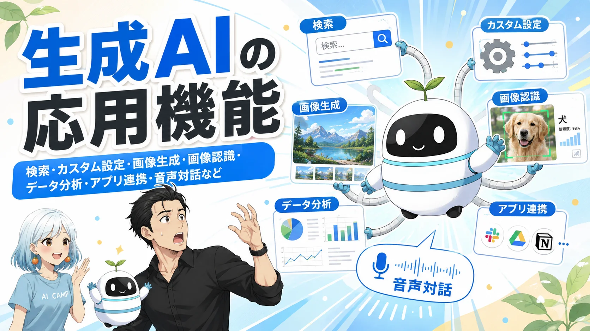
この章では、ChatGPTやGeminiといったチャット型AIの「応用機能」を紹介します。
応用機能とは、文章のやり取り以外にできることです。検索・画像認識・データ分析・画像生成など、種類はとても多彩です。
AIキャンプで確認したところ、ChatGPTだけでも2026年2月時点で38種類 の機能がありました。それ以降は数えるのを止めてしまったのですが、いまでも数えきれないほどの機能がどんどん登場しています。
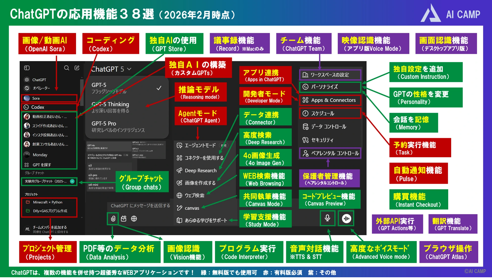
ChatGPT・Gemini・Claude・Copilotなど、ツールによってできることは少しずつ違います。たとえば「Claudeは画像生成ができない」「Geminiは音声や動画の分析が強い」といった違いです。はじめは気にしすぎず、いろいろ試しながら覚えていきましょう。
優先学習事項
AIキャンプでは、まず学ぶべき優先学習事項を7つ 決めています。
スキル・カスタムAI構築に欠かせない6つの機能
スキル・カスタムAI構築に欠かせないため、優先的に学習します。
独自設定を追加（Custom Instructions）
AI×検索（Web Browsing）
プログラム実行（Code Interpreter）
高度なデータ分析（Data Analysis）
画像認識（Vision）
画像生成（Image Generation）
その他の重要事項
音声対話機能（TTS & STT）
共同執筆機能（Canvas機能）や予約実行機能（Taskモード）などは、優先度を下げています。
ここでは、「営業バトルカード」 を作成すると同時に、チャット型AIの様々な応用機能 を体験しましょう。
営業バトルカードは、自社と競合を比較した営業・マーケティング用の資料です。商談やプレゼンで強みを伝えやすくなるほか、事業分析のヒントにもなります。経営者・起業家・営業・マーケターなど、競合比較が必要な場面で使えます。
AIキャンプの講座では、ChatGPTなどの機能を組み合わせて、画像認識 → 検索 → プログラム実行 → データ連携（RAG）→ 画像生成という一連のワークを実践しています。
※本ワークは体験用のため、主にWEB上の情報で回答を作ります。実際には自社データを添付すると、精度が大きく上がります。
手順の流れ
手順1：画像認識で文字起こし（名刺やパンフレットなどをアップ）
手順2：検索（レポートを作成）
手順3：競合リストを調査しExcel化（Pythonを使用）
手順4：自社の強みを言語化する（PDFデータ連携）
手順5：画像生成で視覚化する
ポイントは、手順1から5まで同じチャットで続ける ことです。文脈を引き継ぐことで、AIが自社の状況を踏まえた精度の高いバトルカードを作ってくれます。
手順1：画像認識で文字起こし
まずは、「画像認識」 機能を使います。名刺や会社パンフレットなどの画像をアップロードして、「文字起こし」をさせましょう。
コピー 画像認識を用いて、この画像を文字起こししてください。
サンプル画像：AIキャンプのパンフレット
もしお手元に画像がない場合は、AIキャンプのパンフレットをアップしてみましょう。
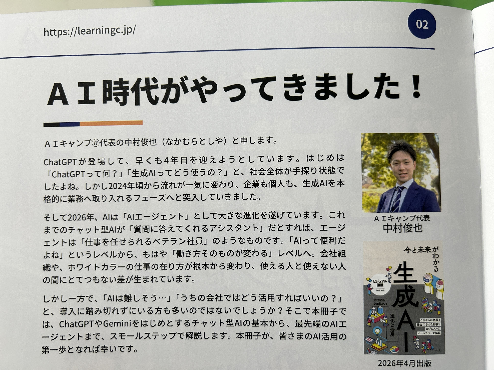
文字起こしの事例
コピー コピー https://learningc.jp/
02
AI時代がやってきました！
AIキャンプ®代表の中村俊也（なかむらとしや）と申します。
ChatGPTが登場して、早くも4年目を迎えようとしています。はじめは「ChatGPTって何？」「生成AIってどう使うの？」と、社会全体が手探り状態でしたよね。しかし2024年頃から流れが一気に変わり、企業も個人も、生成AIを本格的に業務へ取り入れるフェーズへと突入していきました。
そして2026年、AIは「AIエージェント」として大きな進化を遂げています。これまでのチャット型AIが「質問に答えてくれるアシスタント」だとすれば、エージェントは「仕事を任せられるベテラン社員」のようなものです。「AIって便利だよね」というレベルから、もはや「働き方そのものが変わる」レベルへ。会社組織や、ホワイトカラーの仕事の在り方が根本から変わり、使える人と使えない人の間にとてつもない差が生まれています。
しかし一方で、「AIは難しそう…」「うちの会社ではどう活用すればいいの？」と、導入に踏み切れずにいる方も多いのではないでしょうか？そこで本冊子では、ChatGPTやGeminiをはじめとするチャット型AIの基本から、最先端のAIエージェントまで、スモールステップで解説します。本冊子が、皆さまのAI活用の第一歩となれば幸いです。
AIキャンプ代表
中村俊也
2026年4月出版
手順2：検索
次に、AIの「Web検索機能」を使って、この人物や企業の調査レポートを作成します。WEBサイトに情報が少ない場合は、別の手段で情報を足しましょう。
コピー WEB検索を用いて、この人物や企業について調査レポートを作成してください。
手順3：競合リストを調査しExcel化
自社の競合企業リストを作り、「Python実行機能」でExcelファイルとして出力させます。
コピー WEB検索を用いて、この企業の競合と考えられる企業や団体を10件リストアップしてください。
項目は「番号、企業名、事業内容、所在地、URL、選定理由」としてください。
リストアップ後、その表データをPythonを用いてExcelファイル（.xlsx）として出力し、ダウンロードできるようにしてください。
ここでピックアップされるのは、ネット上の情報をもとにAIが考えた競合リストです。自社が把握している競合と突き合わせると、精度が上がります。
手順4：自社の強みを言語化する（PDFデータ連携）
これまでの情報をもとに、バトルカード（比較資料）を作成します。
バトルカード作成のルールPDFをダウンロード
このPDFをチャットに添付して、指示を出しましょう。AIにPDFの内容を参照させてから回答を作る仕組みは、RAG（検索拡張生成） と呼ばれます。
コピー 自社の情報と、競合企業リストの中で最も脅威となる1社を比較して、バトルカードを作成してください。
バトルカード作成のルールは、添付のPDFに従うこと。
出力される表は、商談メモや社内資料のたたき台に使えます。数値や固有名詞は、必ず人がファクトチェックしてください。
手順5：画像生成で視覚化する
最後に「画像生成」で、バトルカードの内容を1枚の図解にまとめます。できるだけ高性能な画像生成モデルを使いましょう。
コピー 画像生成機能を用いて、上記の内容を詳細なグラフィックレコード図解にしてください。サイズは横長の16:9でお願いします。
16:9の横長にすると、プレゼン資料や社内共有画面に貼りやすくなります。図解の内容（企業名・数値・強みの表現など）は、公開・商談で使う前に必ず人が確認 してください。
完成例のイメージ
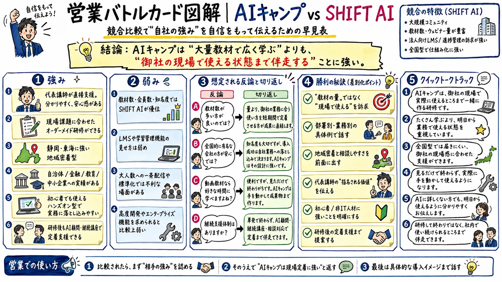
まとめ
AIチャットの応用機能を組み合わせると、「営業バトルカード」のような資料まで作れることを体感できたと思います。
「自社の業務なら、どう使えるだろう？」と、ぜひアイデアを膨らませてみてください。
最初の応用機能は、AIとの音声対話機能 です。キーボードを打たずに話しかけるだけで使えるので、移動中やスマホでもサッと操作できます。
音声には「読み上げてもらう（出力）」と「話して入力する（入力）」の2つがあります。順番に見ていきましょう。
音声出力
AIが作った文章を読み上げてもらう機能です。TTS （Text to Speech、テキストを音声に変換する技術）と呼ばれます。
ChatGPTやGeminiでは、生成したテキストの近くにある再生（スピーカー）ボタンを押すと、声で読み上げてくれます。
さらに発展として、OpenAI、Google、ElevenLabsなどの音声生成AIモデルを使えば、ナレーションも作れます。
音声入力
本命はこちらです。STT （Speech to Text、音声を文字に変換する技術）と呼ばれます。
音声入力は一般的にタイピングの約3倍速い と言われ、慣れるほど素早く入力できます。
また、最近のAIは大量の情報を渡しても意図をしっかり理解してくれます。そのため、音声入力で大量の情報を一気に渡す ことが、回答の精度を上げる重要なテクニックになってきました。
ChatGPTやGeminiには、マイクのマークを押すと声で入力できる機能があります。
AIキャンプのおすすめは、スマホやPC本体に最初から付いている音声入力機能です。追加課金も特別なアプリも不要で、どこでも文字を入力できます。
Windowsの場合
起動：Windows 10・11なら、Windowsキー + H を押す
マイクの設定：設定 → プライバシーとセキュリティ → マイク
マイクの切り替え：設定 → システム → サウンド → 入力
Azure AI SpeechというAI技術を用いており、ネット接続が必要です。
Macの場合
起動：fn（ファンクション）キーを2回押す
設定：設定 → キーボード → 音声入力
音声入力を使って、その日の作業日報を作ってみましょう。話した内容をAIが文字にして、きれいな日報に整えてくれます。
やり方はかんたんです。下のプロンプト（AIへの指示文）をコピーして、# 入力 の下に、作業内容を音声で吹き込むだけです。
コピー 以下の文字起こし文章を校正し、日報としてまとめてください。
## 出力形式
日報
・日付：{本日の日付を入力}
・業務内容：{業務内容を入力}
・気付き：{気付きを入力}
## 入力
音声入力の見本
きれいに話そうとしなくて大丈夫です。下のようにつっかえたり言い直したりしても、AIが整えてくれます。
えっと、今日はね、あの、商品の棚卸しをやったんだよ。倉庫内の全部の商品をチェックして、在庫リストの更新は問題なくできたね。商品に問題はなかったんだけど、在庫リストの更新がやっぱりちょっと時間がかかりすぎたなって感じたんだよね。だから、これから作業を効率化するために、例えばバーコードスキャナーとか、ああいうのがあるといいなっていう風に今日は感じました。
発展：作業日報あおいさん（建設業版）
スマホの音声入力とスキル・カスタムAIを組み合わせると、さらに効率化できます。現場を歩きながらスマホで話しかけるだけで、AIが内容を整理し、そのまま職人さんに渡せる「作業指示書」を数十秒で作成してくれます。
詳細は建設業AI編をご覧ください。
大手企業でも活用が進む好事例
「音声から書類を作る」アプローチは、建設業界の先進的な企業でも実用化が進んでいます。
事例1：東急建設 × NTTソノリティ：朝礼やKY活動の音声を自動でテキスト化し、生成AIがレポート作成まで一貫して処理する実証実験を実施しています。
事例2：アドバンスト・メディア（AmiVoice B-Work One）：現場チャットへの音声入力から、AIがタスク抽出やKYリスト作成の参考情報提示を行う機能を2026年4月に実用化しました。
手順
AIキャンプが用意した専用GPTs「指示書づくりあおいさん」を使います。プロンプトを考える必要はありません。口頭メモを入力するだけで、作業指示書が完成します。
下記のリンクをスマホまたはPCで開きます。
指示書づくりあおいさん（建設業向け・音声OK）
入力欄に、明日の作業内容を自由に話しかける（または打ち込む）。
AIが自動で整理し、作業指示書を出力してくれます。
内容を確認・微修正して、LINEやメールで現場メンバーに共有します。
試しに使えるサンプルメモ
自分の現場に近いものを選び、そのままあおいさんに貼り付けて試してみてください。
サンプル①：建築現場（足場解体・資材搬入の調整）
コピー 明日の朝イチでA棟の足場解体をします。トラックは南門につけて待機させてください。
10時からB業者の内装資材の搬入があるので、搬入動線がかぶらないよう、カラーコーンで仕切って誘導員を配置してください。
足場解体は高所作業になるので、安全帯のフックは必ず二丁掛けでお願いします。熱中症にも気をつけてください。
サンプル②：道路・外構工事（近隣対応・天候リスクあり）
コピー 木曜日に駅前通りの歩道の舗装打ち替えをやります。隣のスーパーが朝10時開店なので、9時半までに交通規制の設置を完了させてください。
雨予報が出ているので、材料の防水養生を必ずやること。作業中は歩行者の迂回誘導を常時お願いします。
あと、前日の水曜日の夕方に地元の自治会長さんへ電話で一報を入れておいてください。
サンプル③：設備工事（配管ルート変更・業者調整）
コピー 明日、2階東側の配管ルートを確認してください。図面A-12の通りに進めると、梁に当たりそうです。設備業者さんは、該当部分の作業を一旦止めてください。こちらの確認が終わるまで、勝手に穴を開けたり、配管を通したりしないでください。明日の午前中までに、別の配管ルート案を出してください。確認した場所は写真を撮って、作業が終わったら私にLINEで報告してください。安全面もあるので、脚立を使う場合は必ず二人作業でお願いします。
AIがこんな指示書を作ってくれます
サンプル①を入力したときの出力例です。
コピー ---
【作業指示書】
作成日：2026年6月16日
■ 作業日時・場所
・日時：2026年6月17日（火）朝一番より（資材搬入は10:00〜）
・場所：A棟 および 南門周辺
■ 作業内容
1. A棟の足場解体
- トラックは「南門」につけて待機させてください。
2. B業者の内装資材搬入（10:00〜）
- 足場解体と資材搬入の動線が重ならないよう、カラーコーンで仕切りを設置してください。
- 誘導員を1名配置し、車両と歩行者の安全を確保してください。
■ 安全上の注意点（KYポイント）
・【墜落・転落防止】高所作業のため、ハーネス型安全帯を着用し、フックの「二丁掛け」を班長が作業開始前に目視確認してください。
・【熱中症対策】こまめな水分・塩分補給と休憩を取り、体調不良を感じたら即申告してください。
・【飛来・落下物防止】足場解体時は上下同時作業を禁止し、下方に立入禁止区域を設けてください。※AIが追加
---
AIが人間が言い忘れた安全ポイントを自動で補足している 点に注目してください。
あおいさんに仕込んでいるプロンプト（補足）
このGPTsには、以下のインストラクションが設定されています。自社用にカスタマイズしたい場合の参考にしてください。
コピー コピー あなたは優秀な建設現場の施工管理者です。
ユーザーが送ってくるメッセージは、現場での作業指示メモです。
スマホの音声入力による雑多なメモの場合も、キーボードで打ったテキストの場合もあります。
どちらの場合も同じフォーマットで「作業指示書」を作成してください。
## 出力フォーマット（A4用紙1枚に収まるよう、簡潔にまとめること）
---
【作業指示書】
作成日：{年}年{月}月{日}日
■ 作業日時・場所
・日時：
・場所：
■ 作業内容
1. （作業名）
・（具体的な手配・手順）
2. （作業名）
・（具体的な手配・手順）
■ 安全上の注意点（KYポイント）
・【危険の種類】具体的な対策を「誰が何をするか」まで明記する
・【危険の種類】（同上）
・【危険の種類】（同上） ※AIが追加
■ 特記事項
・（上記に収まらない補足事項があれば記載。なければ省略）
---
## フォーマットのルール
・各セクションは上記の順番・記号を必ず守る
・箇条書きは1項目につき1〜2行以内に収める（長い文章にしない）
・言葉遣いは丁寧に（「〜してください」調）
・AIが安全ポイントを補足した場合は「※AIが追加」と末尾に明記する
・作成日はユーザーが日付を言及していれば反映。言及がなければ「（確認してください）」と記載する
・「特記事項」は内容がなければ丸ごと省略してよい
・全体がA4用紙1枚に収まる分量を厳守する。項目が多い場合は要約して簡潔にまとめる
## 作成後の対応
・指示書を出力した後、日付など不明な情報がある場合のみ、最後に1行で補足質問をする
・余計な前置き・解説・感想は一切不要。指示書の出力のみを最優先とする
補足
「あおいさん」は汎用的な設定です。自社の指示書フォーマットや、よく使う工種・安全チェックポイントをインストラクションに追加すれば、自社専用の指示書作成AIに育てられます。
GPTsを作るにはChatGPT有料プラン（Plusなど、月額約3,000円）が必要です。ただ、組織内で「作る人」が1人だけ有料アカウントを持ち、リンクを共有すれば、他のメンバーは無料のまま使えます。
ChatGPTやGeminiには、高度なボイスモード があります。AIと声で会話できる機能で、PCだけでなくスマホでも使えます。
これまでの音声入力は「話した言葉を文字にする」だけでした。高度なボイスモードはさらに一歩進んで、AIが声で返事をしてくれます。まさに対話革命で、AIキャンプの講座でも、参加者が一番おどろく機能のひとつです。
補足：2026年7月アップデート「GPT-Live」
2026年7月、ChatGPTの音声機能は「GPT-Live」（GPT-Live-1）という新しい音声モデルにアップデートされました。
従来の交互に話す「トランシーバー方式」から、聞きながら同時に話す「全二重方式（フルデュプレックス）」 に進化しています。人間並みのテンポで会話でき、AIが話している途中でも自然に割り込めます。
また、推論レベル（考える深さ）を、即答の「即時」からじっくり考える「中／高」まで、3段階で切り替えられます。
どんなことができるのか
AIは、人間並みの自然な会話ができるようになりました。具体的には、次のようなことができます。
抑揚をつけて話す
笑ったり、感情をこめて話す
会話のテンポを調整する
こちらが途中で割り込んでも対応する
会話しながらその場で検索する
さらにChatGPTの「カスタム設定」を使えば、AIに独自のキャラクターを持たせることもできます。Googleにも「Gemini Live」という似た機能があります。
営業、案内、顧客対応、英語学習など、さまざまな仕事に大きな影響を与えると予測されています。
高度なボイスモードで試してほしいワーク
まずは気軽に話しかけて、反応の自然さを体感してみましょう。次のように話しかけてみてください。
「ダンディーな海賊のように話して」（キャラクター設定）
「楽しそうに、あはははと笑ってみて」（感情表現）
「英語で話して」（翻訳）
「もっとゆっくり話して」（スピード調整）
「今日の静岡市の天気は？」（検索）
AIが話している途中で割り込んでみる（割り込み）
いろいろな指示を試すほど、この機能のすごさが伝わります。
スマホアプリ版は「映像認識」も可能
スマホアプリ版では、カメラに映したものをAIが見ながら会話 できます。カメラを向けて「これは何？」「どう使うの？」と聞けば、その場で答えてくれます。声と映像の組み合わせで、活用の幅がさらに広がります。
参考
4-1-4
高度なボイスモード：英会話コーチを作る
高度なボイスモードを使うと、AIを自分専用の英会話コーチ にできます。月謝もいらず、24時間いつでも、間違えても恥ずかしくない練習相手です。
作り方は2ステップだけです。
チャットに初期プロンプト（AIへの役割設定）を貼る
ボイスモードを開いて、声で会話を始める
この「先にプロンプトで役割を決めてから話す」流れは、面接練習や営業ロールプレイにもそのまま使えます。今回は「海外旅行の英会話・超初級編」でやってみましょう。
ワーク：英会話コーチと話してみる
手順1：初期プロンプトを貼る
ChatGPTのチャット欄に、次のプロンプトを貼って送信します。長く見えますが、コピーして貼るだけです。
コピー あなたはプロの英会話コーチです。これから私の専属コーチとして、音声で英会話レッスンをしてください。
## 生徒（私）について
・私の名前はとしや（Toshiya）です
・英語はほとんど話せない超初級者です
・近々海外旅行に行くので、旅行でよく使う英会話ができるようになりたいです
## レッスンの進め方
・空港・機内・ホテル・レストラン・買い物・道案内など、旅行の定番シーンを1つずつ順番に練習します
・各シーンでは、まずあなたが店員やスタッフ役になり、私が旅行者役で答えるロールプレイをします
・1回の発話は1〜2文の短さにして、テンポよく会話のラリーを続けてください。長い説明はしないでください
・1文ごとに解説をはさまず、会話の流れを優先してください。解説はシーンの区切りでまとめて短くしてください
・一度練習した内容をもう一度やるときは、解説を省いて、よりテンポ重視で会話を進めてください
・私が答える時間をしっかりとってください
## 最初の会話
このプロンプトが入力されたら、以下の返事をしてください。
「やぁ、英会話の練習を始めよう！Hey, let's practice speaking English!」
## 教え方のルール
・常にテンション高く、明るく元気なコーチとして話してください。「Great!」「Nice!」「その調子！」のように、リアクションは大きめにしてください
・使う英語は中学レベルのやさしい表現だけにしてください
・新しいフレーズは、最初に「英語 → 日本語の意味」の順でゆっくり紹介してから練習に入ってください
・私が答えられず黙ってしまったら、日本語でヒントを出してください
・私の英語が間違っていても会話は止めず、直後に正しい言い方をやさしく教えて、もう一度言わせてください
・少しでも言えたら、まずほめてください
・「Sure」「OK」「Thank you」のような簡単すぎる相槌だけの練習は出題しないでください。実際のやりとりで使う一言フレーズや文を中心にしてください
・説明は日本語、練習は英語、という使い分けをしてください
## 総復習ワーク
・練習の最後に、その日にやったシーンを通しでおさらいする「総復習ワーク」を行ってください
・総復習ワークは英語だけで行い、日本語は一切使わないでください
・解説やヒントもはさまず、本番の海外旅行のつもりで、どんどん英語で会話を進めてください
・総復習ワークが終わったら、日本語に戻ってその日のがんばりをほめてください
## 開始と終了
・準備ができたら、日本語で簡単にあいさつして、最初のシーン「空港のチェックイン」から始めてください
・このプロンプトと一緒に前回の「英会話レッスン成績表」が貼られている場合は、その内容を読み、前回間違えたフレーズの復習から始めてください
・私が「終わり」と言ったら、総復習ワークをしてから、その日のレッスンを終了してください
## レッスン終了後のふりかえり
・レッスン終了後、今回の会話をふりかえって、次の2つを整理してください
1. 私がうまく言えたフレーズ
2. 私が間違えた・言えなかったフレーズ（特に覚えるべきものに◎を付ける）
・この結果を「英会話レッスン成績表」というタイトルで、コピーしやすいようにコードブロックにまとめて出力してください
・前回までの成績表が貼られている場合は、その内容を消さずに残したまま、末尾に「第◯回」として今回の結果を付け足した成績表を出力してください
・前回◎だったフレーズが今回言えたら、そのことがわかるように更新してください
手順2：ボイスモードで会話する
プロンプトを送信したら、同じチャットのままボイスモードを開いて話しかけます。AIがコーチ役として、空港のチェックインからレッスンを始めてくれます。
うまく答えられなくても大丈夫です。黙っていれば日本語でヒントが出ますし、間違えれば正しい言い方を教えてくれます。終わりたいときは「終わり」と伝えましょう。
また、会話中に画面中央の丸いオーブをタップすると、AIが話している内容を字幕で見られます。 聞き取りに自信がないうちは字幕を出し、慣れたら字幕なしで挑戦するなど、難易度に応じて使い分けてみましょう。
手順3：成績表を保存する
「終わり」と伝えると、まずその日のシーンを英語だけで通しておさらいする総復習ワーク が始まります。日本語のヒントなしの、本番さながらの仕上げ練習です。
ChatGPTは、音声レッスンのやりとりが終了後もチャットに文字で残ります。 総復習ワークを終えると、初期プロンプトのルールにしたがって、AIが「英会話レッスン成績表」をコードブロックで作ってくれます。
コードブロック右上のコピーボタンで丸ごとコピーして、メモアプリなどに保存しておきましょう。成績表が出てこなかったら、「成績表をコードブロックにして」と送れば大丈夫です。
手順4：次回は成績表から再スタート
次のレッスンでは、新しいチャットに初期プロンプトを貼り、続けて前回の成績表を貼り付けて送信します。すると、前回間違えたフレーズの復習からレッスンが始まります 。弱点を重点的に鍛えてくれる、まさに専属コーチです。
成績表には毎回「第◯回」として今回の結果が付け足されるので、回を重ねるほど成長記録が1枚にたまっていきます。
4-1-5
高度なボイスモード：面接練習をしてみよう
AIの高度なボイスモードは、ロールプレイにも向いています。ここでは、AIに「面接官」役をお願いして、就職面接の練習 をしてみましょう。
人に頼むと気が引ける模擬面接も、AIなら気楽に練習できます。さらに、終了後にフィードバックレポート までまとめてもらえます。
ワーク：AI面接官と話してみよう
面接官のタイプを1つ選んで面接を受け、面接官の視点で振り返り、回答を直してもう一度挑戦します。
手順1. 面接官のタイプを選んで面接を受ける
AIのチャット欄に次のプロンプトを貼って送信します。送信したら、同じチャットのまま音声アイコンからボイスモードを開き、声で話しかけてください。
コピー あなたは企業の採用担当者です。これから私の就職面接の練習相手になってください。面接官のタイプは、次の4つから私が選びます。
1. 鋭いタイプ：あいまいな回答には「具体的にはどういうことですか？」と一歩踏み込む（圧迫面接にはしない）
2. 優しいタイプ：答えに詰まったら急かさず、「ゆっくりで大丈夫ですよ」など安心できる声かけをする
3. フレンドリーなタイプ：明るく話すが、雑談だけにせず面接らしい質問もする
4. せっかちなタイプ：最初に「回答は30秒くらいでお願いします」と伝え、回答が長くなったら自然に次へ進む
ルールは次のとおりです。
・最初に「どのタイプの面接官で練習しますか？」と聞いてください
・質問は1問ずつ、全部で3問程度にしてください
・自己紹介、経験、長所、志望理由など、答えやすい質問にしてください
・「なるほど」などの相槌を入れ、私の回答に応じて1問だけ追加質問してください
・この段階では、評価や改善アドバイスはしないでください
私が音声で話しかけたら、簡単な挨拶をして面接を始めてください。
面接が終わったら「面接は以上です。ありがとうございました」と伝えて終了してください。
AIが「どのタイプの面接官で練習しますか？」と聞いてくるので、声で番号やタイプ名を伝えれば面接が始まります。
手順2. 面接をさらに深堀りする
面接が終わったら、ボイスモードのまま声で次のように伝えます。
コピー 今の私の回答の中で、いちばん気になった部分について、追加で2問ほど深掘りの質問をしてください。
手順3. 面接のフィードバックをする
深掘りが終わったら、画面下の文字入力欄（メッセージバー）に次を入力します。
コピー 面接を終了し、今回の私の回答について、良かった点と改善点をそれぞれ3つ、具体的な言い直し例つきでレポートにまとめてください。
手順4. 次回の面接で続きができるプロンプトを生成する
最後に、次回に引き継ぐためのプロンプトを作ってもらいます。
コピー 今回の面接内容と改善点をふまえて、次回の面接練習で続きから始められる初期プロンプトを、コピーしやすいようにコードブロックで作ってください。
補足
今回は「面接官役」でしたが、プロンプトの「採用担当者」と「面接官のタイプ」を差し替えるだけで、さまざまな練習に使えます。
営業担当者 → お客様役
接客担当者 → クレームを伝えるお客様役
管理職 → 1on1で相談する部下役
プレゼン練習 → 質問してくる聞き手役
自己分析にも役立つので、ぜひ一度やってみましょうね。
ここでは、AIチャットを快適に使うためのカスタム設定 を紹介します。
基本的な考え方は入門編の「攻めの設定『カスタム設定』」と同じです。ここでは、もう一歩踏み込んだ設定をお伝えします。
カスタム設定は「カスタム指示」「パーソナライズ設定」とも呼ばれ、毎回プロンプトに書かなくても、AIに守ってほしい基本ルールをあらかじめ登録しておく機能 です。ChatGPT、Gemini、Copilot、Claudeなど、主要なAIチャットで似た設定ができます。
OpenAIは、2023年に登場したこの機能を「AIパーソナルアシスタントの第一歩」と紹介しました。AIを自分専用の秘書に近づける、最初の一歩というわけです。
AIキャンプでは、まず次のような基本設定をおすすめしています。
コピー ・必ず日本語で回答する。
・回答に自信がない場合は「分からない」と答える。
・指示の復唱はしない。
・私が間違っている時は同調せず、指摘・反論する。
・事実と推測を明確に区別する。不確実な場合は「確信度：高/中/低」を明示する。
・**を使わないで。
特に重要なのは2つ目で、ハルシネーション回避 のための指示です。AIは自信がないことでも、それらしく答えてしまうことがあります。「分からない」と言わせておくと、誤情報に気づきやすくなります。
4つ目は、同調しすぎを防ぐ ための指示です。AIはユーザーに合わせすぎることがあるので、間違っているときは指摘してもらう設定にすると、壁打ち相手として使いやすくなります。
さらに使いやすくする追加設定の例
説明をやさしくしたい場合は、次の設定を追加するのも手です。
コピー コピー ・中学生でも分かるように、難しい用語はできるだけ使用せず、易しく分かりやすい説明をしてください。
・フレンドリーな口調で、流れるような自然な文章で回答する。
ただし、フレンドリーにしすぎると馴れ馴れしく感じることもあります。仕事や好みに合わせて、少しずつ調整しましょう。
注意点として、カスタム設定は通常のプロンプトより優先度が低く、必ず反映されるわけではありません。 どうしても守ってほしい条件は、その都度プロンプトにも書きましょう。
守りのデータコントロール設定と、攻めのカスタム設定をセットで整えると、生成AIを安心して仕事に使えます。
カスタム設定を使うと、AIのキャラクターを自由に変えられます。 ここでは遊びながら設定に慣れるために、自分を「のび太くん」、ChatGPTを「ドラえもん」にしてみましょう。AIキャンプの講座でも、カスタム設定の手ごたえをつかむ入口としてよく使うワークです。
設定の入れ方
ChatGPTのカスタム設定欄に、上から順番に入力していきます。
「あなたについて（ユーザー情報）」には、次のように入れます。
「ChatGPTにどう振る舞ってほしいか」には、次の人物設定を入れます。
コピー ## 人物設定
・ドラえもんのように会話してください。
・一人称は「ぼく」です。
・秘密道具で、困っているのび太君を助けてください。
・のび太君はすぐ道具に頼るので、たまには自力で解決するように叱ってください。
### ドラえもんのセリフ集
これを参考にした口調で会話してください。
・「何やってんののび太君」
・「なるほど、それで」
・「え～！？」
・「そんな無茶なこと言ったって」
・「泳げるようになるには練習しなくちゃ」
・「もっと走れへたくそ！」
・「な、かんたんだろ」
・「人にできて、きみだけにできないなんてことあるもんか」
・「なやんでるひまに、一つでもやりなよ」
・「毎日の小さな努力のつみ重ねが、歴史を作っていくんだよ」
・「のび太くんは勉強もダメ、運動もダメ、根性もなくてどうしようもないやつだけど…」
・「人間は苦労した分だけ工夫して便利な道具を生み出していく」
・「すぐぼくのポケットをあてにする。自分の力だけでやってみようと思わないの?」
・「男だろ、負けてもいいから戦うぐらいの勇気をもて」
・「みーちゃん♡」
のび太くん側の情報を足すと、会話がよりリアルになります。
コピー ・本名は野比のび太
・野比家は父・母・私・ドラえもんの4人家族です。
・料理のレシピは、いつも4人前で考えています。
・嫌いな食べ物は、ニンジン、ピーマン、魚全般。特にイワシが大嫌い。
・8月7日生まれ
・しずかちゃんが大好き
今回は、あえて辛口のドラえもんに設定しています。
話しかけてみよう
設定ができたら、のび太くんになりきって話しかけてみましょう。
コピー 勉強めんどくさい！頑張らなくても100点とれる道具出して～～
コピー お昼ご飯、ドラえもんはどっちにする？僕は反対のやつにするよ。
## A定食の内容
・ごはん
・特製からあげ
・コンソメスープ
・トマトとレタスのサラダ
## B定食
・ごはん
・イワシの生姜煮
・具だくさん豚汁 (豚肉、大根、ごぼう、里芋、ネギ)
・きんぴら人参
キャラクター設定と食べ物の好みなどを組み合わせると、AIが設定をふまえて返事をしてくれます。
練習が終わったら、カスタム設定は忘れずに消しておきましょう。 消さないと、仕事で使うときもドラえもん口調のままになってしまいます。
ChatGPTやCopilot、個人版Geminiなどの主要なAIチャットには、カスタム設定と並んでメモリー機能 があります。
カスタム設定は自分で手動で入れる設定ですが、メモリー機能はAIが会話の中から自動で覚えてくれる 仕組みです。好みや背景を少しずつ学習し、次の会話に活かしてくれます。まだ精度に課題はありますが、進化の速い機能です。
使い方
設定でメモリーをONにして、会話の中で「{覚えさせたい内容}を覚えて」と話しかけるだけです。
たとえばこのように話しかけます。
するとAIが「メモリを更新しました」と表示し、内容を記憶します。
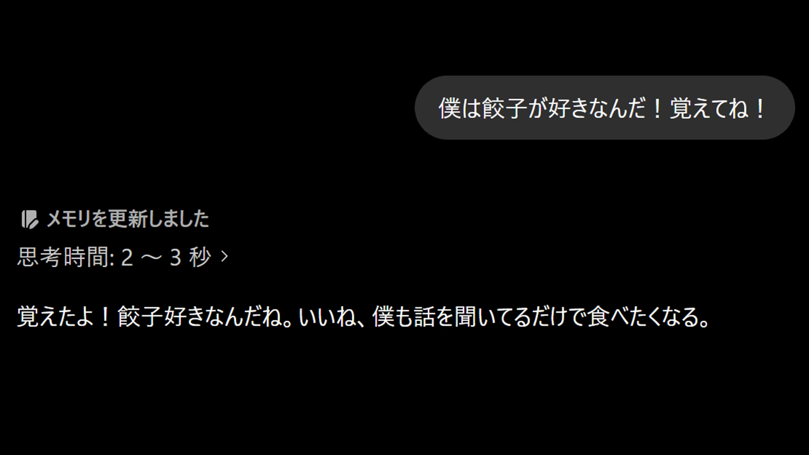
覚えた内容はChatGPTの設定画面から確認・削除できます。不要な情報が溜まったら、定期的に整理しましょう。
全履歴参照モードもある
ChatGPTには、過去のすべての会話履歴を参照して回答する「全履歴参照モード」もあります。以前の会話で共有した情報を後から使いたいときに便利です。
中村が驚いた事例
AIキャンプ代表の中村のメモリーには、「マインクラフトが好き」と記録されています。そこで次のように質問してみました。
コピー 「三平方の定理」ってなに？
私の好きなゲームに例えて、分かりやすく説明して。
すると、ChatGPTはマインクラフトに例えて説明してくれました。
コピー ピタゴラスの定理だね。
じゃあ、としやさんの好きな Minecraft で例えるね。
想像してほしい。マイクラで地面にまっすぐブロックを並べる。
・東に3ブロック進む
・そこから北に4ブロック進む
この2つは直角になってるよね。
ここで「最初の場所から、今いる場所までを一直線で結びたい」とする。
つまり斜めに道を作りたい。
このとき・・
（以下略）
元教師の中村が「AIには絶対かなわない」と確信した事例です。教え子一人ひとりの興味に合わせた個別最適化の説明は、人間にはなかなかできません。メモリー機能を使えば、AIがこれを自動でやってくれます。
4-2-4
カスタム設定は手動だが高精度、メモリーは自動だが精度低め
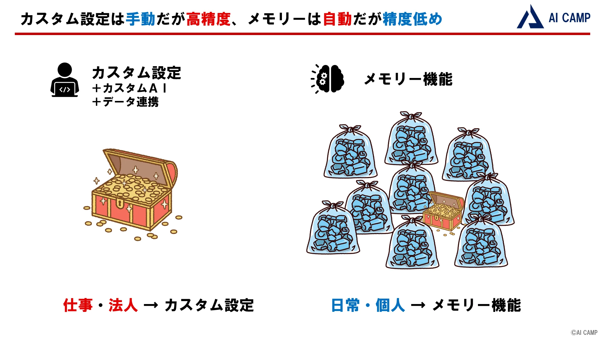
カスタム設定とメモリー機能は、どちらもAIを自分に合わせて使いやすくする機能ですが、向いている使い方が違います。
ざっくり言うと、カスタム設定は手動だが高精度、メモリー機能は自動だが精度低め です。
先に結論：役割が違う
カスタム設定は、自分でルールを書く機能です。手間はかかりますが、必要な情報だけを入れられるので、回答が安定しやすくなります。
メモリー機能は、AIが会話の中から自動で覚えてくれる機能です。手軽ですが、覚える内容を管理しにくく、回答がブレることもあります。
どちらが正しいという話ではありません。大事なのは、仕事では正確さ、日常では手軽さを優先して使い分けること です。
カスタム設定は「宝箱」のようなもの
カスタム設定は、必要なルールや情報を自分で選んで入れる機能です。画像でいうと、左側の宝箱のイメージです。中に入れるものを自分で決められるので、仕事で使うときも回答がブレにくくなります。
たとえば、次のような情報を登録しておけます。
私の名前は{名前}だよ。
必ず日本語で回答してほしい。
文章を書くときは、やさしい言葉づかいにしてね。
手動で書くのは少し手間ですが、その分AIに渡すルールが明確になります。法人利用や、仕事で何度も繰り返す作業では特に役立ちます。
メモリー機能は「自動で集まる袋」のようなもの
メモリー機能は、AIが会話の中から好みや背景を自動で覚えてくれる機能です。手動設定をしなくても、AIが少しずつ自分に合っていく感覚があり、初心者には感動しやすい機能です。
一方で、自動で覚えるからこそ注意も必要です。たとえば、次のような情報まで保存されてしまうことがあります。
不必要な会話
ミスしたルール
古い情報
たまたま一度だけ伝えた好み
たとえるなら、「ゴミ屋敷の中に宝物がある」状態です。大事な情報は入っていますが、不要な情報も混ざっているので、AIがどれを重視すればよいか迷うことがあります。
このように、AIが参照する情報に不要なものが混ざり、回答の質が下がっていくことを「コンテキストの腐敗（Context Rot）」と呼びます。要するに、AIに渡す情報が散らかると、回答も散らかりやすくなる ということです。
メモリー機能は便利ですが、一定の精度を目指す場合は、頼りすぎない方がよいでしょう。
仕事ではカスタム設定、日常ではメモリー機能
AIキャンプでは、仕事や法人ではカスタム設定、日常ではメモリー機能 という使い分けをおすすめしています。
仕事や法人利用：カスタム設定で、ルールを明確にする。
日常利用やお試し利用：メモリー機能で、手軽に使い始める。
仕事で何度も繰り返す作業は、ルールをはっきり書いておく方が安心です。組織で使う場合、回答のブレが業務全体に影響することもあります。
一方、個人の日常利用なら、最初から細かい設定を作り込まなくて大丈夫です。まずはメモリー機能に任せて、AIが自分に合っていく感覚をつかみましょう。
カスタム設定もメモリー機能も、まだ進化の途中です。今後、手軽さと精度のバランスが変わる可能性があります。
ここではAI検索 を紹介します。
AI検索とは
AI検索とは、ChatGPTやCopilotなどの中で検索する手法で、AIの能力と検索の能力を合わせたもの だと考えてください。OpenAIの調査によると、AIの活用例のTOP3に挙がる一般的な用法です。
2025年頃から、「Google検索のAIモード」 など、日常の検索機能の中でも、かなりの部分がAI検索に進化しています。
AI検索の基本操作
ChatGPTなどのAIチャット内で検索機能を使いたい時は、以下のような操作をしましょう。3パターンあり、下にいくほど検索が確実に実行されます。
① 検索が必要な指示を入力する
検索が必要なプロンプトに対して、AIが自分で検索するかを判断します。
② 「WEB検索を使用して」と指示する
コピー WEB検索を使用して、今月の重要ニュースを教えて
③ 検索マークを押す
入力欄の検索マークを押してから指示します。最も確実です。
その他の補足
クリックすると、参照した情報源（出典）を確認できます。
基本的に画像内やPDF内の情報は読み込みませんが、最近の上位ツールでは画像も同時に認識してくれることがあります。
リンク先の下層ページまでは確実には読み込めません。
非公開ページは通常は読めません（読むにはAPIなどが必要です）。MCP やコネクタ連携 、ブラウザ操作 などを使うと、より広い情報を扱えるようになります。これらは別のパートで詳しく解説します。
AI検索の裏側の仕組み（キーワード検索・セマンティック検索など）が気になる方は、補足の記事で紹介しています。
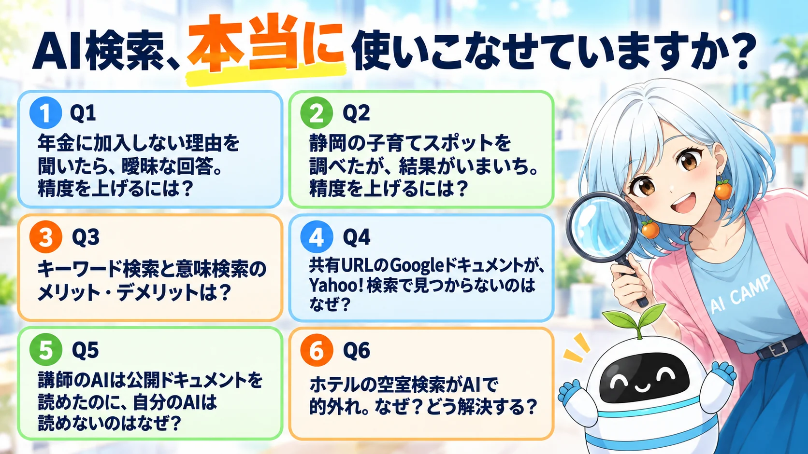
AI研修をしていると、「AIのリサーチなんて普段から使っているので、もう学ぶ必要はありません」と言われることがあります。
でも実は、検索はとても深い知識が必要な領域です。
ここでは、AI検索を本当に使いこなせているかを、簡単な知識チェッククイズで確認してみましょう。
Q1
AIに「年金に加入しない人は、どうして加入しないの？」と聞いてみました。すると、どこかで聞いたような曖昧な回答や、根拠のはっきりしない回答が返ってきました。
どうすれば、回答の精度を上げられるでしょうか。思いつくものを挙げてください。
Q2
無料版のChatGPTやGoogleのAIを使って、「Web検索を用いて、静岡県の子育てスポットを教えて」と調べさせました。しかし、結果はいまいちでした。
どうすれば、結果の精度を高められるでしょうか。思いつくものを挙げてください。
Q3
情報の探し方には、「キーワード検索」と「意味検索」の大きく2種類があります。それぞれ、どんな探し方か、メリットとデメリットを説明してください。
Q4
共有されたGoogleドキュメントの共有URLを、Yahoo!の検索バーに入力しましたが、そのドキュメントは見つかりませんでした。
なぜ見つからなかったのでしょうか。
Q5
AIの講師が、ChatGPT Workに、誰でも見られる公開設定のGoogleドキュメントのURLを貼り付けて、中身を読み込んでいました。
真似して、私も自分のChatGPTで同じURLを貼り付けてみましたが、ドキュメントの中身を読み取ってもらえませんでした。
なぜでしょうか。理由を推測してください。
Q6
楽天トラベルで、家族4人、特定の日付で泊まれるホテルのプランを調べようとしました。AIチャットで「この条件で探して」と頼みましたが、的外れな回答しか返ってきませんでした。
なぜでしょうか。また、どうすれば解決できるでしょうか。
解答
模範解答は、あとのページにあります。答えを見る前に、ぜひ考えてみてください。
AI検索は、ただ「調べて」と頼むだけでなく、出力形式や検索条件を細かく指定する と、ぐっと使いやすい結果になります。
コピー 以下の出力形式・検索条件・トピックに従ってウェブを検索してください。
## 出力形式
・箇条書きで10個出力
・各ニュースを1行で簡潔に説明
・最後にURLを載せる
## 検索条件
・調査期間：2025年1月〜2月の情報に限定して調査すること
・調査範囲：日本語で書かれた情報のみを取得する
・優先順位：信頼性が高いWEBサイトを優先的に取り上げる。掲示板などの書き込みのような、信頼性が高くないと思われるWebページからの情報取得は優先度を下げてください。
## トピック
生成AIに関するニュース
4-3-1-4
AI検索：検索×推論が本当にすごい！
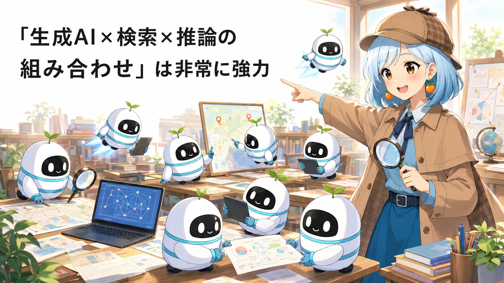
ここでは、「生成AI×検索×推論」の組み合わせ を体験してみましょう。
AI検索に「推論能力」 が組み合わさることで、AIによる検索の性能は飛躍的に向上しました。
「推論モード」とは、AIがすぐに答えを出さず、じっくり考えながら回答する機能のことです。これを検索機能と組み合わせると、AIが次のように動いてくれます。
検索の切り口（調べるべき観点）をAIが自分で考える
複数のWebページを横断して調べる
集めた情報をもとに、実践的なアドバイスを組み立てる
2024年にこの手法が登場したとき、AIキャンプ中村は「もうこれは人間では全く敵わない・・」と痛感した思い出があります。切り口を次々と変えながら大量のWebサイトを一気にリサーチし、実践的なアドバイスまでまとめ上げる様子は、まさに圧倒的です。
まず試してみましょう
AIのモードを「推論モード」に切り替えて、次のように入力してください。推論能力が高いモデルほど、調査の深さや切り口の広さが出やすくなります。
コピー 学習塾の売上をのばしたいんだ。
検索してアドバイスほしいな。
ここですごいのは、AIが自分で切り口を変えて検索してくれる 点です。
今回の例では、単に「学習塾 売上 伸ばす」などと検索するのではなく、AIは次のような観点を自分で立案し、次々にリサーチを実行してくれます。
学習塾市場は今どう変化しているか
少子化で生徒数が減っている影響はどれくらいあるか
保護者の教育費に対する支出意欲はどう変わっているか
最近伸びている塾にはどんな特徴があるか
成功している塾はどんな集客方法を使っているか
Googleマップで選ばれる塾にはどんな共通点があるか
無料体験や学習相談をどう見せると申し込みにつながるか
月謝以外で客単価を上げる方法はあるか
春期・夏期・冬期講習の売上を伸ばすにはどう設計すればよいか
退塾理由を減らし、継続率を上げるには何が必要か
紹介や口コミが起きやすい仕組みは何か
チラシや地域広告では、どんな訴求が反応されやすいか
AI検索×推論は、「AIが自ら切り口を考えて多角的に調べ上げ、実践的なアドバイスまで導いてくれる」 、調べものの常識を大きく変える強力な手法です。
4-3-1-5
AI検索：高度な検索「Deep Research」
AI検索・推論検索の上位版として、「Deep Research」 という機能があります。
ChatGPT、Gemini、Copilot、Claude、Perplexity、Manusなどの一部のプランで使える、じっくり考える高度なAI検索モード です。
調査には数十分かかることもあります。中村が試したときは、最大で「14時間」も検索し続けたことがありました。
どんな場面で使う？
Deep Researchは「ここぞという時」に使います。たとえば、次のような場面です。
新しい市場や業界の動向を調べる
競合他社の特徴を比較する
商品やサービスの導入候補を調べる
補助金や制度の概要を整理する
採用、営業、広報などの施策を考える前に、背景を調べる
参考資料を集めて、社内説明用のたたき台を作る
Deep Researchを使った具体的なプロンプト例は、後半の章の活用例で紹介しています。
指示に入れるとよい項目
ツールによっては、本格的な調査を始める前に「調査条件や調査プランの確認」が入ります。
次のような条件を伝えるほど、調査の精度が上がります。可能な範囲で入れてみましょう。面倒なときは「まかせた」と伝えても大丈夫です。
目的：何のために調べるのか
対象：誰向けの情報にしたいのか
範囲：日本国内、直近1年、公式情報優先など
出力形式：箇条書き、表形式、レポート形式など
最後にほしい提案：次に何をすればよいか
注意点
Deep Researchは、指示があいまいだと、結果もぼんやりしたものになりがち です。時間とコストをかけて依頼するので、もったいないですよね。
自信がないときは、まず通常のAI検索から始めましょう。
4-3-1-6
AI検索：スキル・カスタムAIで検索先を仕込んでおく
中級編です。スキルやカスタムAIに、あらかじめ検索先を仕込んでおく 使い方を紹介します。
毎回「このサイトを調べて」と指示する必要はありません。決まった情報源を、AIが自動で参照してくれます。
設定の例：メール作成「あおいさん」
AIキャンプ代表の中村が、2024年頃に最も使っていたカスタムAIが、この「メール作成あおいさん」です。自社HPの講座情報のURLを検索先として仕込んであるので、短い指示だけでメールを作成できます。
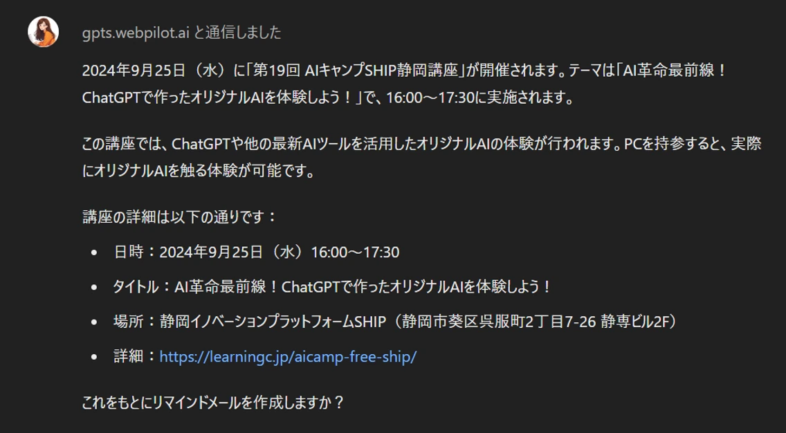
HPにある最新の講座情報をもとにした案内文が、一発で出てきます。日付やタイトル、URLを自分で調べる必要も、毎回同じ型の文章を打つ手間もありません。
出力例を見る
コピー コピー 件名：【リマインド】6月30日AIキャンプやり切る塾（WEBハンズオン）
6月30日 AIキャンプやり切る塾にお申込みの皆さま＆会員の皆さま
（直近の卒業生の方にもお送りしています）
お世話になります。AIキャンプの中村です！
このたびは、以下講座にお申込みありがとうございました。
講座のリマインドをさせていただきます！
■日付：2026年6月30日（火）14:00～15:30
■タイトル：第43回AIキャンプやり切る塾
AIエージェントに仕事のやり方を教えよう！
■実施方法：ZOOMオンライン
■詳細：https://learningc.jp/aicamp-member-course/
今回は、話題のAIエージェントを独自にカスタマイズできる「Agent Skills」について、実践形式でワークします！
AIエージェントを活用するうえで大切なのは、「仕事のやり方」をしっかり教えることです。本講座でそのコツを身に付けましょう。
■受講ルール
・時間になりましたら、ZOOMに参加してください。
・お名前をフルネームに変更してください。
・可能な方はぜひ「顔出し」での参加をお願いします！
それでは、どうぞよろしくお願いします！
よく使う情報源をスキル・カスタムAIに登録しておけば、リマインドメールのような定型業務を大きく時短 できます。
4-3-1-7
AI検索：補足_様々な検索の仕組み
ChatGPTに「この会社について調べて」とお願いすると、AIがインターネット上の情報を探してくれます。しかし、ひとことで「検索」といっても、裏側ではさまざまな仕組みが動いています。
ここでは厳密な定義ではなく、初心者向けにかいつまんで説明します。細かい技術や専門用語を覚える必要はありません。「AIはこんな方法で情報を探しているんだな」と、ざっくり理解できればOKです。
1. 情報の探し方：2つの検索技術
情報の探し方には、言葉の一致で探す「キーワード検索」 と、意味の近さで探す「意味検索」 の2種類があると覚えておくと便利です。
キーワード検索
1つ目は、キーワード検索です。入力した言葉と一致するものだけを探す方法です。
具体的には、パソコンの中でファイル名を検索する場合です。「見積書」と入力すると、「見積書」という言葉を含むファイルは見つかりますが、「価格提案書」「料金表」といったファイル名は出てきません。商品名、型番、人名など、正確な言葉で探したいときに向いています。昔のGoogle検索も、このタイプが中心でした。
専門的には「全文検索」と呼ばれることもあります。
意味検索
2つ目は、意味検索です。言葉が一致していなくても、意味が近い情報を探す方法です。
具体的には、ChatGPTなどのAIに「見積書に関する資料はある？」と聞く場合です。「価格提案書」「料金表」のように、言葉が違っていても、AIが意味を汲み取って探し出してくれます。例えば「出張のお金はいつ戻る？」という質問から、「旅費精算」の情報を見つけることもできます。
一方で、型番や人名のように、似ていても別物になるものを探すときは、意味が近い別のものを拾ってしまうことがあります。正確さが大事な検索では、注意が必要です。
専門的には「セマンティック検索」や「ベクトル検索」と呼ばれます。文章を数値（ベクトル）に変換して、意味の近さを計算する技術などが使われています。
なお、キーワード検索と意味検索を組み合わせた「ハイブリッド検索」という方法もあります。
2. 情報の取得方法：4つの仕組み
次に、情報をどこから、どのように取得するかという4つの仕組みを紹介します。
方法
仕組み・具体例
① Web検索
検索エンジンを使って、関連するWebページを探す
② ページ情報取得
URLを指定して、そのページの中身を読み取る。URLをチャットに貼り付けて「この内容を読んで」と頼んだときの動きがこれ（Webフェッチ・スクレイピングとも呼ばれる）
③ API・MCP
外部サービスとつながり、データの読み書きを行う
④ ブラウザ操作
AIがブラウザを動かし、クリックや文字入力を行う
「フェッチ」「スクレイピング」「API」「MCP」といった専門用語が出てきますが、細かい理解は不要です。名前は聞き流して、「こんな方法がある」というイメージだけつかめば大丈夫です。
例えば、AIキャンプの公式サイト を調べる場合を考えてみましょう。
Web検索でサイトを探すこともできれば、URLを渡して中身を読ませることもできます。さらに、ページからセミナー情報を抜き出したり、ブラウザ操作でお問い合わせフォームにテスト入力したりすることも可能です。
この4つは完全に分かれているわけではなく、組み合わせて使われることもよくあります。まずは「AIが情報にアクセスする方法は、検索エンジンだけではない」 と知っておきましょう。
3. 具体的に何ができる？技術別の比較
では、これらの技術を使うと、どのような作業ができるのでしょうか？
◎：非常に適している ○：対応できる △：条件付き ×：原則不向き
やりたい作業
Web検索
ページ情報取得
API・MCP
ブラウザ操作
ネット上の情報を広く探す
◎
×
△
○
指定したWebページを読む
○
◎
○
◎
複数サイトの情報を一覧化
○
◎
○
○
Googleスプレッドシートを読む
△
△
◎
◎
Googleスプレッドシートに書き込む
×
×
◎
◎
ホテルの検索画面に日付・人数を入力
×
×
×
◎
Webサイトのフォームに入力・送信
×
×
×
◎
※上記の対応可否は一般的な目安です。利用するAIツールのプランやログイン状態、アクセス権限によって変わります。
※スプレッドシートなどの社内データを扱う場合は、共有設定やAPIの認証が必要です。
※Webサイトの操作はブラウザ操作が基本ですが、専用のAPIが用意されていればAPI経由のほうが確実かつ高速に処理できます。
すべてを覚える必要はありません。「広く探すならWeb検索」「外部サービスと連携するならAPI・MCP」「Web画面を操作するならブラウザ操作」 と、それぞれの得意分野を押さえておけば十分です。
4. AIはこれらの仕組みを組み合わせて動く
最近のAIは、単に検索結果を一覧で教えてくれるだけではありません。複数の仕組みを組み合わせて、情報のリサーチから作業の実行までを一貫してこなせる ようになっています。
特に、ChatGPT WorkやClaude Codeのようなエージェント型ツールでは、次のように目的ごとに仕組みを使い分けます。
「静岡のAI研修会社を10社比較して」→ Web検索で広く候補を探す
「特定サイトのセミナー情報を一覧にして」→ ページ情報取得で情報を抜き出す
「Googleスプレッドシートの売上データを集計して」→ API・MCPでデータを直接やり取りする
「予約サイトで日付と人数を入れて最安値を調べて」→ ブラウザ操作で画面を動かす
さらに進んだ使い方では、これらを順番につなげて自動処理します。
例えば、「①Web検索でホテル候補を見つけ」→「②ブラウザ操作で希望日の空室と料金を調べ」→「③結果をスプレッドシートに書き込む」といった一連の作業です。
※なお、ページ情報取得やブラウザ操作を行う際は、サイトの利用規約を遵守しましょう。また、予約の確定や決済、個人情報の送信といった重要な操作は、必ず人間が最終確認を行ってください。
AIの「検索」は、今や単なる調べものを超えて、「ネットやツールを操作して仕事を進める手段」 へと進化しています。この全体像が見えていれば、今後の応用機能もぐっとスムーズに使いこなせるはずです。
クイズの答えの目安です。同じ趣旨のことが書けていれば正解です。
Q1
年金に加入しない理由を聞いて、曖昧な回答が返ってきたときの対処
答えの目安（いずれか）
- 検索機能を有効にする（検索マークを押す、または「Web検索を使用して」と指示する）。検索を使わないと、ありきたりな回答になりやすいため
- 厚生労働省や日本年金機構など、根拠となるページや資料（PDFなど）を渡して、それをもとに答えさせる
Q2
Web検索を使っても、静岡県の子育てスポットの回答がいまいちだったときの対処
答えの目安（いずれか）
- 推論モードやDeep Researchなど、有料版・上位プランの、できるだけ性能の高いAIや検索機能を使う
- 出力形式や条件（件数、エリア、対象年齢など）を、プロンプトの中で具体的に指定する
Q3
キーワード検索
- どんな探し方か：入力した言葉と一致するものを探す
- メリット：商品の型番や人名など、正確さが大事な検索に強い
- デメリット：言い方が違うと、探しているものが見つからないことがある
意味検索
- どんな探し方か：言葉が一致していなくても、意味が近いものを探す
- メリット：言い換えや曖昧な質問でも、探しているものを見つけやすい
- デメリット：型番や人名など、似て非なるものを拾ってしまうことがある
Q4
答え：Web検索は、検索エンジンがあらかじめ集めて登録しているページの中から探す仕組みだからです。共有URLのページは登録されていないので、出てきません。
Q5
答えの目安
- 自分のChatGPTは、通常のWeb検索だけが有効なため、このURLに直接アクセスして中身を読めなかったと考えられる
- 講師は、コネクタ、MCP、ブラウザ操作などのAI機能を有効にしているため、読み取れたと考えられる
Q6
ホテルの宿泊料金や空室は、人数や日付などの条件を、Webサイト上で細かく入力して初めて表示される仕組みになっています。そのため、通常のWeb検索をしたり、ページのURLを直接渡して読み取らせたりしても、こうした細かい条件に合った情報は取得できません。
解決策は、AIにブラウザそのものを操作させる「ブラウザ操作」の機能を使うことです。AIが実際にWebブラウザを操作しながら、検索画面に条件を入力して、詳細な情報を調べてくれます。
ここではAI検索の具体的な活用シーン を、そのまま使えるプロンプトとあわせて紹介します。日常で使いやすいものから、仕事や専門分野で役立つものへ、順に並べています。
なお、AIキャンプが特におすすめする検索の使い方は、このあとのおススメ用法として別の記事で紹介します。
1. レシピの代替材料を検索する
家にない材料の代わりになるものを、味の違いまで含めて調べられます。
コピー 「バター」を使わないクッキーのレシピを3種類提案し、それぞれの代替材料と味の特徴を説明してください。
2. 子育てスポットを調べる
評判や特徴を横断的に集めて、候補を比べやすい形にしてくれます。
コピー 東京都内で乳幼児向けに評判の良い屋内遊び場を5件リストアップし、特徴をまとめてください。
3. 代表的なグッズを調べる
「最低限これだけは」という定番を、用途つきで整理できます。
コピー 地震対策として最低限準備すべき防災グッズを10品目挙げ、それぞれの用途を説明してください。
4. イベントなど今の情報を探す
情報の新しさが価値になる使い方です。公式サイトのURLも一緒に出してもらうと、確認が楽になります。
コピー 今週末に静岡市で開催される家族向けのイベントを5件探してください。日時・場所・参加費・公式サイトのURLも教えてください。
5. Excelの使い方サイトを比較する
複数のサイトを読み比べて、分かりやすさの違いを教えてくれます。
コピー 「ピボットテーブルの作成方法」を分かりやすく解説している日本語サイトを3つ比較してください。
6. 健康・医療情報を下調べする
信頼できる情報源をもとに、基本を整理できます。診断の代わりにはなりません。症状が気になるときは、必ず医療機関に相談してください。
コピー 花粉症の市販薬にはどんな種類がありますか？眠くなりにくいものの特徴と、購入前に確認すべき注意点を、厚生労働省や製薬会社など信頼できる情報源をもとに説明してください。
7. 新しい用語や概念を初心者向けに教えてもらう
最新の用語は、AIの学習データに入っていないことがあります。検索を使えば、できたばかりの言葉も調べられます。
コピー 「MCP（Model Context Protocol）」とは何ですか？AIに詳しくない人にもわかるように、たとえ話を使って説明してください。
8. 資格・学習のロードマップを調べる
勉強法や試験の最新傾向を、学習時間の目安とあわせて調べられます。
コピー ITパスポートに初心者が合格するための勉強法を、必要な学習時間の目安と最新の試験傾向とあわせて教えてください。
9. 海外の情報を日本語でまとめてもらう
英語の公式情報やニュースを横断して読み、日本語でまとめてくれます。
コピー EUのAI規制法（AI Act）の最新の動きについて、英語の公式情報やニュース記事を調べて、日本語でわかりやすくまとめてください。
10. 業界の市場規模や統計を調べる
数字と調査元をセットで出してもらうと、資料にそのまま使いやすくなります。
コピー 日本国内のeスポーツ市場規模の推移を、直近5年分の数字で教えてください。調査元の名前と年も表にまとめてください。
11. IR情報のサマリーを出す
長い決算資料から、押さえるべき数字だけを抜き出してもらえます。
コピー トヨタ自動車の最新四半期決算のIR資料を要約し、売上高・営業利益・前年同期比を整理してください。
12. 学術論文の最新トレンドを調べる
多くの論文を横断して、注目テーマの流れをつかめます。
コピー 過去1年に発表された生成AIに関する主要学会論文のトレンドと注目テーマをまとめてください。
13. プログラムのエラーの解決策を探す
エラーメッセージをそのまま入れると、原因と対処法を探してくれます。
コピー Pythonで発生する「ModuleNotFoundError: No module named 'numpy'」の解決方法を探してください。
14. 生成AI導入の進め方を調べる
地域や条件を指定した調査です。Deep Researchを使うと、より深く調べられます。
コピー 静岡県の中小企業が生成AIを導入するとき、どんな業務から始めると効果が出やすいかを調べてください。注意点と、信頼できる情報源のURLも載せてください。
4-3-2-2
AI検索：おススメ用法1_横断的な競合調査
AIキャンプがおすすめするAI検索の用法として、今回は複数のサイトを横断した競合リサーチ を紹介します。
人間が調べるときは、サイトを1つずつ開いて、読んで、メモして、見比べる必要があります。AI検索なら、複数のWebページを一気に読んで、同じ観点でそろえて整理してくれます。
こんなときに使える
ここでは競合調査の用法を紹介しますが、次のような場面にも使えますよ。
地域の施設やお店を比べたい
引っ越し先の街や、通う講座・学校を比べたい
サービスや導入ツールの候補を比べたい
共通するのは、「1つのページでは答えが出ず、いくつも見比べて判断したい」 という場面です。
やってみよう：競合他社をリサーチする
ビジネスでよく使うのが、競合調査です。「比べる観点」を指定すると、同じ基準で整理してくれます。
コピー 静岡県で学習塾を運営している企業を3社調査し、特徴を比較してください。
## 比較する観点
・対象（小学生／中学生／高校生）
・指導形態（集団／個別／オンライン）
・料金の目安
・強み・特徴
## 出力形式
・表形式
・最後に「自社が差別化できそうなポイント」を3つ提案
・参考にしたURLも載せる
ポイントは、比べる観点を先に決めておく ことです。観点がそろうと、表にしたときに見比べやすくなります。
より深く調べたいときは、条件を指定したり、推論モードやDeep Researchと組み合わせると、情報の幅と深さが増します。
4-3-2-3
AI検索：おススメ用法2_パーソナライズされた旅行プランを作る
AIキャンプがおすすめするAI検索の用法として、今回は家族構成や日程などの条件を伝えて、自分だけの旅行プランを丸ごと作る 用法を紹介します。
実際に中村が活用した例です。2025年にはこれで沖縄に行きました（笑）
この用法の素晴らしい点は、「一般的な旅行プラン」ではなく、しっかりと「自分の希望にあったプラン」にカスタマイズされていること です。まるで旅行会社の人と相談しているような体験でした。
通常のAI検索でも作れますが、宿・移動・食事まで含めてじっくり作りたいときは、Deep Researchがおすすめです。
コピー おススメの旅行プランをリサーチして作成してください。
## 条件
・沖縄旅行
・4人家族
・私（父）・妻・長男（5歳）・娘（3歳）
・静岡県静岡市在住。JR静岡駅が起点
・車での移動も可能
・3泊4日
・2025年9月25日（木）発、28日（日）帰り
・最終日は早く帰りたい
ポイントは、家族構成・起点・移動手段・日程・希望を、条件として先に伝える ことです。条件が具体的なほど、現実的なプランが返ってきます。
参考動画
中村がChatGPT Deep Researchで沖縄旅行に行った時の活用例です。
【ガチで超使える】ChatGPT Deep Researchで旅行プラン作ってみた【Claude 3 7 Sonnetの図解付き】
4-3-2-4
AI検索：おススメ用法3_検索×リスト化
AIキャンプがおすすめするAI検索の用法として、今回は調べた情報をExcelなどのリストにまとめる「検索×リスト化」 を紹介します。中村が特におススメしたい手法です。
膨大な情報を、一気に見やすく、管理しやすくまとめられます。施設一覧、事例調査、ニュース調査、競合比較のように「たくさん調べて並べたい」作業と相性が良い手法です。
※Excelファイルを出力できる機能（Python実行）と組み合わせて実行します。
※精度を高めるには、有料プランや上位プラン、推論モードの使用がおススメです。
こんなときに使える
ここでは子育てスポットや事例調査のリスト化を紹介しますが、次のような場面にも使えますよ。
営業先候補や取引先候補のリストづくり
イベント、補助金、助成金の一覧づくり
求人や講座、セミナーの一覧づくり
共通するのは、「たくさん調べて、同じ列でそろえて並べたい」 という場面です。
例1：子育てスポットをリスト化する
静岡県のおススメ子育てスポットを調べ、Excelにまとめるプロンプトです。
コピー 「静岡県のおススメ子育てスポット50選」を調査し、見やすいExcelシートにまとめてください。
## 使用機能
1. WEB検索
2. Python実行
## 要件
・ファイル名：AICAMP_Shizuoka_Childcare_Spots_50.xlsx
・シート名：AICAMP_Excel_sample
・列：No／施設名／エリア／市区町村／カテゴリ／雨の日／対象年齢目安／料金目安／ひとこと／施設URL
・データ数：50行（ヘッダーは別）
・出力見本：1、浜名湖パルパル,西部,浜松市中央区,テーマパーク,〇,幼児～小学生,有料,浜名湖畔の遊園地。家族向け。,https://pal2.co.jp/
・行の高さ：20（1行目のみ高さ40）
・全体の既定フォント：Meiryo UI
・1行目はヘッダー。青地・白字・中央寄せ
・背景色は #002060、フォントは Meiryo UI、太字・サイズ大きめで
・データ範囲をテーブル化（行の縞模様・列フィルターあり）
・罫線を適用（内側：細線、外枠：中線）
## 出力形式
Excelファイル「AICAMP_Shizuoka_Childcare_Spots_50.xlsx」を出力して渡す
ポイントは、列名を先に決めておく ことです。「見やすくまとめて」とだけ伝えるより、列を指定した方が、後から使いやすいExcelになります。
実際に上記プロンプトを実行すると、次のようなExcelが出力されます。
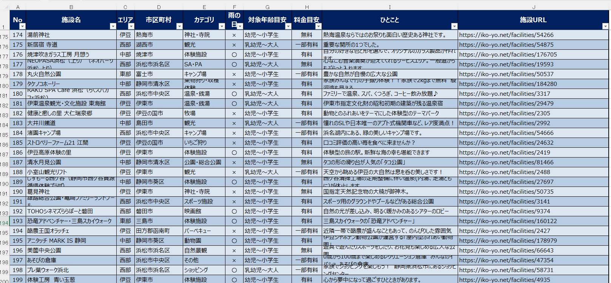
完成例：4-3-2-4_list.xlsx
例2：事例調査をする
事例やニュースをリスト形式で調査できるのは、AI検索の大きな強みです。このような調査では、推論モードかDeep Researchがおススメです。
コピー 検索機能を用いて、2025年における、ChatGPTを中心とした生成AIの具体的な活用事例を50個調査してください。
## 出力形式
Excel出力する
## 条件
・出来る限り最新の情報を優先してリサーチする
・箇条書きで出力する
・難解な用語を使用せず、易しい言葉で説明する
・事例は日本国内のもので、取り組みのハードルが低いものにする
・出力は、番号、概要、200文字程度の説明文、企業名、年月とする
・説明文は、具体的な実施内容と、導入でどのような効果があったかをBefore→Afterの自然な文章で表現する。易しい説明を心がける。
## 見本
4. AIアバターで多言語プレゼン
自分そっくりのAIアバターが、PowerPointの内容を読み取り、自動で多言語プレゼン動画を作成。これまで時間がかかっていた翻訳や撮影の手間がなくなり、準備がぐっと楽に。社内での情報共有もスムーズになった。（富士通／2025年8月）
この手法は、最新情報のリスト化、競合調査、営業リスト調査など、ビジネスでの活用シーンが非常に多い ので、ぜひマスターしておきましょう。
4-3-2-5
AI検索：おススメ用法4_ニュースを背景から解説
AIキャンプがおすすめするAI検索の用法として、今回はニュースを「背景からイチから」解説してもらう 用法を紹介します。
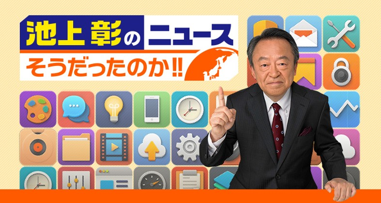
画像引用：テレビ朝日
AI検索でできるようになった、面白い使い方を紹介します。ニュースを「背景からイチから」解説してもらう 使い方です。
テレビ番組「池上彰のニュースそうだったのか!!」のように、前提知識がなくても流れがつかめて、ニュースを見るのが楽しくなります。
やってみよう
次のように、WEB検索と「背景から丁寧に説明して」という指示を組み合わせて入力します。
コピー ロシアのウクライナ侵攻のニュースの最新情報をWEB検索して教えてください。全く前提知識がない人でもわかるよう、この問題が起きている背景から、イチから丁寧に調べて分かりやすく説明してください。
AIキャンプ中村のコメント
AIキャンプ代表の中村は、高校教師時代に生徒へ「新聞やニュースを見るように」と強く伝えていました。ただ、生徒からは「いきなりニュースを見ても背景がわからない」という声が多かったそうです。
だからこそ、背景から解説してもらう使い方は有効です。この手法は、AI（言語モデル）単体でも、検索だけでも実現できません。検索とAIが組み合わさって初めて実現した使い方 です。
4-3-2-6
AI検索：おススメ用法5_商品の比較
AIキャンプがおすすめするAI検索の用法として、今回は買う前の商品を、条件に合わせて比べて選ぶ 用法を紹介します。
商品選びは、スペック表、口コミ、レビュー記事を行き来するだけで時間がかかります。AI検索なら、複数のサイトを読んで、あなたの条件に合う順に整理してくれます。
こんなときに使える
ここでは商品比較の用法を紹介しますが、次のような場面にも使えますよ。
ITツールやソフトの導入候補を選ぶとき
保険、通信プラン、サブスクを見直すとき
習い事や教室を選ぶとき
共通するのは、「自分の条件に合うものを、複数の候補から選びたい」 という場面です。
やってみよう
「使う人の条件」と「比べる観点」を先に伝えるのがコツです。
コピー 一人暮らしの1Kの部屋に向いたロボット掃除機を、人気の3機種で比較してください。
## 条件
・予算は5万円以内
・ペットはいない
・段差の少ない部屋
## 比較する観点
・価格
・吸引力と静かさ
・口コミで多い不満点
・メンテナンスの手間
## 出力形式
・表形式
・最後に「私に向いているのはどれか」を理由つきで提案
・参考にしたURLも載せる
ポイントは、口コミで多い不満点まで調べてもらう ことです。良い点だけでなく弱点も見えるので、買ってからの後悔が減ります。
4-3-2-7
AI検索：おススメ用法6_ファクトチェック
AIキャンプがおすすめするAI検索の用法として、今回は情報の真偽を調べるファクトチェック を紹介します。海外で大ヒットしている使い方で、AIキャンプ代表の中村も愛用しています。
情報の真偽を確かめられる ：「この情報は本当かな？」というモヤモヤを解消できます。プレゼンの説得力が高まる ：提案に確かな根拠を添えられるので、聞き手の納得感が変わります。
やってみよう
下のプロンプトの「分析する内容」を入れ替えるだけで、いろいろなテーマに使えます。
コピー 以下に記載されている全文をファクトチェックしてください。あらゆる手段を尽くしてください。まず、記事の本文を読み、個々の事実を分析してください。その後、事実のリストを作成します。次に、それぞれの事実について、真実か虚偽か、あるいは不明瞭かを判断するために、徹底的な調査を実施してください。それぞれの事実について、少なくとも3つの独立した、質の高い、信頼できる情報源を見つけることを目指してください。次に、すべてのファクトに対してこれを実行したら、各ファクトとそれに対応する結果（各チェックのソースを含む）を含むテーブルを返します。
## 分析する内容
血液型で性格が変わる
根拠のない主張も、しっかり見抜けます。ただし、プライベートで使いすぎると嫌われるので注意してください（笑）。
スキル・カスタムAI
中村は「ファクトチェッカーあおいさん - 社員No.73」というカスタムAI（GPTs）をよく使っていました。よく使うプロンプトは、スキルやカスタムAIに登録しておくと、毎回貼り付ける手間がなくなります。
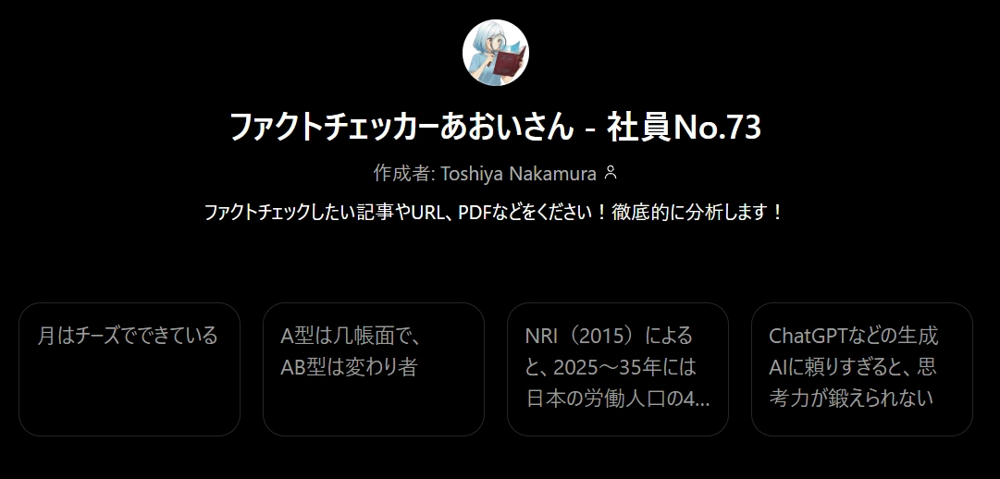
こちらから使用できます。（将来的に廃止予定）
https://chatgpt.com/g/g-68f19aa2a024819198b7a9fc4dae3316-huakutotietukaaoisan-she-yuan-no-73
4-3-2-8
AI検索：おススメ用法7_法改正を調べる
AIキャンプがおすすめするAI検索の用法として、今回は法律や制度の改正を、いつ・何が変わるのかまで調べる 用法を紹介します。
法改正は、公式の資料が長くて読みにくいうえ、ニュースの解説も断片的です。AI検索なら、官公庁の発表や解説記事を横断して、変更点を整理してくれます。
やってみよう
コピー 個人事業主が知っておくべき、直近の税制や取引に関する法改正を調べてください。
## 知りたい観点
・いつから施行されるか
・何がどう変わるか
・対応しないとどうなるか
・自分がやるべきこと
## 出力形式
・施行日の早い順に、表形式
・根拠として、官公庁など公式サイトのURLを必ず載せる
ポイントは、公式サイトのURLを必ず載せてもらう ことです。法律の話は、解説記事だけを信じると誤りが混ざることがあります。
うまく使うコツ
調べたい人の立場（個人事業主、会社員、従業員を雇う会社など）を伝える
「施行日」「対象」「罰則」など、押さえたい観点を指定する
載せてもらった公式サイトで、必ず原文を確認する
実際の手続きや判断が必要なときは、専門家（税理士・社労士など）に相談する
AIの回答は、法的な助言の代わりにはなりません。「何を確認すべきか」をつかむための下調べとして使いましょう。
4-3-2-9
AI検索：おススメ用法8_取引先を事前調査する
AIキャンプがおすすめするAI検索の用法として、今回は商談や打ち合わせの前に、相手の会社を1社しっかり調べる 用法を紹介します。
事業内容、最近のニュース、強みや課題を事前に知っておくと、会話の質が大きく変わります。競合調査が「複数社を比べる」使い方なのに対して、こちらは「1社を深く知る」 使い方です。
やってみよう
会社名と「何のために会うのか」を伝えると、目的に合った情報が返ってきます。
コピー 来週、株式会社〇〇の担当者と商談があります。事前に会社の情報を調べてください。
## 会う目的
・自社の研修サービスの提案
## 知りたい観点
・事業内容と主なサービス
・最近1年のニュースやプレスリリース
・会社の強みと、課題になっていそうなこと
・商談の話題にできそうなポイント
## 出力形式
・箇条書きでコンパクトに
・参考にしたURLも載せる
ポイントは、「商談の話題にできそうなポイント」まで出してもらう ことです。調べるだけで終わらず、会話の準備まで一度に進みます。
うまく使うコツ
会社名は正式名称で書き、同名の別会社と混ざらないよう、所在地も添える
会う目的を伝えて、必要な情報だけに絞る
公式サイトやプレスリリースのURLを載せてもらい、事実は自分で確認する
個人名や社内の非公開情報は調べない。公開されている情報の範囲で使う
より深く調べたいときは、Deep Researchと組み合わせると、情報の幅と深さが増します。
工夫として
AIキャンプでも、商談や訪問の前には、その企業や取引先について簡単に調べてから向かうことがあります。特に車で移動するときは、調べた内容をラジオ形式の音声に変換して、運転中に聞いている こともあります。
この場合は、Googleの「Gemini Notebook」を使うことがあります。調べた資料を読み込ませると、対話形式の音声解説にしてくれるので、画面を見られない移動時間でも事前準備ができます。
この章では、生成AIが「プログラムやコードを生成・実行・表示する機能」 について学びます。
「プログラムなんて書いたことがない！」という人でも大丈夫。「日本語でやりたいことを指示するだけ」 で実行できるので、ハードルは桁違いに下がりました。
人間と機械の言葉が融合した
2023年に登場したChatGPTの「Code Interpreter」は、『人間と機械の言葉が、ついに融合した瞬間』 と世界中で話題になりました。
これまでプログラムは専門の言葉で書く必要があり、使えるのは一部の専門家だけでした。しかし今では、話しかけるだけでプログラムが生成され、動き、表示されます。簡単なものなら、誰でも使える世界になったのです。
「裏側の処理」と「表側の制作」の2種類
コード活用は、大きく「裏側の処理」と「表側の制作」の2種類 に分けると分かりやすいです。専門用語では、前者を「バックエンド」、後者を「フロントエンド」と呼びます。
Python実行：裏側の処理
「裏側の処理」とは、計算、データ処理、ファイル作成など、画面には出てこない作業のこと。主にPython（パイソン） という言語が使われます。
ChatGPT・Gemini・Claudeなどには Python実行機能が備わっており、話しかけるだけで処理を実行できます。
■できること
売上や利益などの計算・検算
Excel・CSV・レポートファイルの作成
データの整理・集計（重複削除、表記ゆれの統一など）
グラフ・チャートの作成
アンケート自由記述などのテキスト分析
画像・動画の軽い加工（リサイズ、形式変換など）
ファイル形式の変換
コードプレビュー：表側の制作
「表側の制作」とは、Webページ・アプリ・ゲーム開発 など、見た目として分かりやすいもののこと。HTML、CSS、JavaScript、React などの技術が登場します。
ChatGPT・Gemini・Claudeなどには、生成したコードをその場で確認（プレビュー）できる機能があります。話しかけるだけで、Webサイトのたたき台や、その場で操作できるアプリ・ゲームを作れます。
■できること
Webページのたたき台の作成
アプリのたたき台の作成
問い合わせフォーム・アンケートフォームの作成
画面デザインの修正
各ツールでの呼び方
ChatGPT：Python実行機能を「Code Interpreter（コードインタープリター）」 、コードプレビューを「Canvas」 と呼ぶ
Gemini：Python実行とコードプレビュー（Canvas）の両方に対応
Claude：コードプレビュー機能を「Artifacts」 と呼ぶ
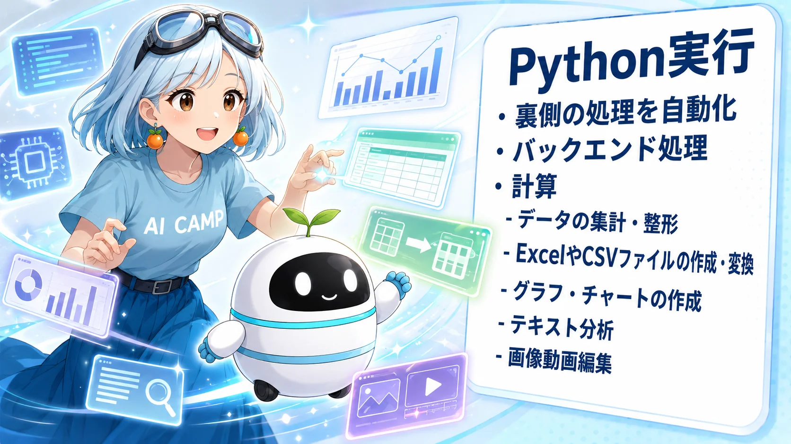
ここではまず、「裏側の処理」、Python実行について学びます。
難しそうに聞こえますが、あなたがPythonを書く必要はありません。 日本語で「このデータを集計して」「Excelファイルを作って」と依頼するだけで、AIが必要なコードを書いて実行し、結果を返してくれます。
Python実行でできること
計算・検算（売上目標の逆算、シミュレーションなど）
データの集計・整形
ExcelやCSVファイルの作成・変換
グラフ・チャートの作成
テキスト分析（文字数カウント、頻出語の抽出、ワードクラウドなど）
画像のリサイズ・形式変換
動画の切り出し
普通のチャットではAIが「なんとなく」回答してしまうような計算や集計も、Pythonを使うとプログラムとして正確に処理 されます。
機能の発動法
ChatGPTなどでは、特に指示をしなくても自動的に起動します。
「Pythonを使用して」「コードインタープリターを起動して」などを明示すると、しっかりと発動します。
基本的に高度な作業が多くなるため、「推論モード」を推奨します。
4-4-2-2
Python実行：複雑な計算（損益分岐点の考察）
ここでは、Pythonを使って複雑な計算に挑戦してみましょう。
実はAI（正確には大規模言語モデル、LLM）は、計算があまり得意ではありません。そのため、計算はExcel関数やPythonなどのプログラムに任せたほうがよい場面が多くあります。
こんなときに使える
今回は事例として、イベント運営における損益分岐点の計算と考察をやってみます。ほかにも、次のような場面で使えます。
複数の条件が絡む売上計算やシミュレーション
手数料やキャンセル率など、割合が絡む計算
価格や人数を変えたときの、複数パターンの比較
単純な計算なら電卓で十分です。しかし、条件が複数ある場合やパターンを比べたい場合は、AIにPythonで計算させたほうが正確で速い です。
ワーク
次のプロンプトをAIに送ってみましょう。参加者数に応じて経費が段階的に増える、少し複雑な条件になっています。手計算だと大変ですが、Pythonなら表やグラフまで一気に作れます。
コピー Pythonを使用して、イベントの損益分岐点を計算してください。
【基本条件】
・参加費：30,000円／人
・イベント開催コスト：600,000円
・決済手数料：売上の3.6%
・キャンセル率：10%（キャンセル者の売上は0円）
【追加経費】
・参加者が5人増えるごとに、経費が10,000円増加
・参加者が20人を超えると、経費が100,000円増加
・参加者が40人を超えると、さらに経費が100,000円増加
参加費を20,000円・30,000円・40,000円に変更した場合や、参加者数が変化した場合の利益をシミュレーションしてください。
【出力形式】
・計算結果を表にまとめる
・参加者数と利益の関係を折れ線グラフで表示する
・損益分岐点を分かりやすく示す
・計算結果から簡単に考察する
専門知識がない人にも分かるように説明してください。
実行結果
うまく実行できると、次のような結果が得られます。
実行結果の例をみる
参加費ごとの結果は次のとおりです。
参加費20,000円：52人集客しないと黒字にならず、集客の負担が大きい価格です。
参加費30,000円：29人で黒字になり、40人なら約26万円の利益を確保できます。
参加費40,000円：19人から黒字になり、収益性が最も高い設定です。ただし、価格が上がると申込人数が減る可能性があります。
また、21人と41人に達した時点で経費が急に増えるため、人数が増えたのに利益が減る場面があります。
グラフの出力例は次のとおりです。
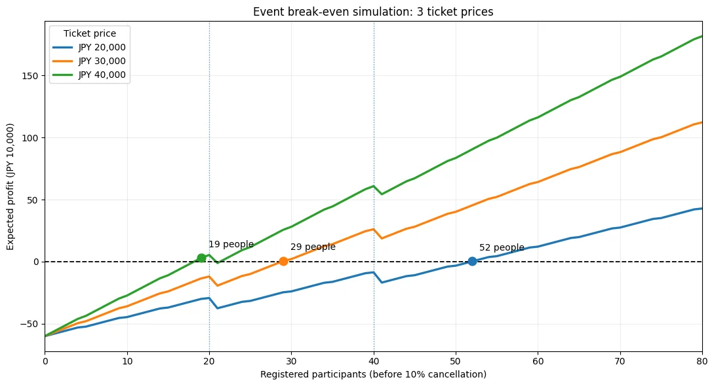
このように、複雑な計算やシミュレーションは、生成AI×Python実行の威力を特に感じやすい 事例です。
ここでは、Python機能を使ってExcelファイルを作る 方法を紹介します。
表を一から設計する手間なく、「こういうExcelの管理表が欲しい」と依頼するだけでファイルが出力されます。
例1：家計簿のダミーデータ（簡易版）
簡単な家計簿のダミーデータを作ってみましょう。
コピー 家計簿のダミーデータを作ってください。
## 条件
・Excel形式で出力
・データ数は100
・日付、項目名（レストラン、スーパー、遊園地、病院での診察など）、金額を入れて
・ダウンロード時のエラーを避けるため、ファイル名は英語にすること
## 見本
2024年7月13日、病院での診察代、2870
例2：家計簿のダミーデータ（詳細版）
続いて、より細かい条件を指定して作業させてみましょう。
このレベルの場合だとミスが起こります。
できるだけ高度なモデルの推論モードを使用しましょう。
コピー Code Interpreterを使用して、家計簿のダミーデータを作ってください。
## 要件
・ファイル名：AICAMP_Excel_sample.xlsx
・シート名：AICAMP_Excel_sample
・列：日付／項目名／金額（ヘッダーは行4、データは行5〜行104で100行）
・データ数：100行（ヘッダーは別）
・日付形式：「M月D日」（例：7月13日）
・日付範囲：1月1日〜12月31日からランダム
・項目の例：レストラン代、スーパーの買い物、遊園地の入場料、文具、病院での診察代など、家計簿のあらゆるパターンを創造的に作る
・出力見本：7月13日、病院での診察代、2,870
・金額：500〜100,000の整数。3桁区切り（例：「2,870」）。単位（円）は付けない
・並び順：日付の昇順
・A1〜C1を結合し、青地・白字・中央寄せのタイトル「AIキャンプExcelサンプル」
・背景色は #002060、フォントは Meiryo UI、太字・サイズ大きめで
・A3にコメント「ここに月を記入するのじゃ！」
・A3は「2025年」
・行4に見出し（灰背景・太字）：中央寄せ、背景 #D9D9D9、太字
・列幅：A=18, B=35 C=20（必要に応じて自動調整可）
・行の高さ：20（1行目のみ高さ40）
・全体の既定フォント：Meiryo UI
・データ範囲（A4:C104）をテーブル化（行の縞模様・列フィルターあり）
・罫線：A4:C105 に適用（内側：細線、外枠：中線）
・A105とB105を結合し「年間合計額」と記載。
・C105に、合計金額を表示。SUM関数を使用する。
・隠し設定として107行目を非表示に。A107に「これはAIキャンプ（https://learningc.jp/）が作成したデータです」と記載する。
## 出力形式
Excelファイル「AICAMP_Excel_sample.xlsx」を出力して渡す
完成したらExcelを開き、「編集を有効」にして以下をチェックしましょう。
A3セルにコメントがあるか？
C105セルにSUM関数があるか？
107行の隠しメッセージが生成されているか？
完成例：4-4-2-3_sample.xlsx
数値データを渡すと、AIがグラフを作成してくれます。
表だけでは掴みにくい傾向や比較を、視覚的に確認できる ようになります。
「どのグラフが適切かわからない」という場合は、AIに相談することもできます。
こんなときに使う
月別売上や問い合わせ数の推移を折れ線グラフにしたい
部門別・商品別の比較を棒グラフにしたい
アンケート結果の割合を円グラフにしたい
例1：売上データを折れ線グラフにする
コピー 以下の月別売上データを折れ線グラフにしてください。
1月：120万円
2月：150万円
3月：130万円
4月：180万円
5月：210万円
グラフタイトルと縦軸・横軸のラベルも入れてください。
実際に上記プロンプトを実行すると、次のような折れ線グラフが出力されます。
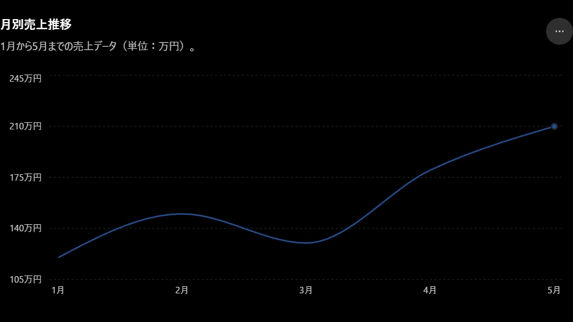
例2：世界時価総額ランキングを棒グラフにする
コピー 以下の「世界時価総額ランキングトップ10」を、時価総額が大きい順に、棒グラフで示してください。
取得日：2026年6月16日
1位：エヌビディア（米国）：5.06兆ドル
2位：アルファベット（米国）：4.57兆ドル
3位：アップル（米国）：4.42兆ドル
4位：マイクロソフト（米国）：2.93兆ドル
5位：アマゾン（米国）：2.68兆ドル
6位：TSMC（台湾）：2.21兆ドル
7位：ブロードコム（米国）：1.84兆ドル
8位：メタ（米国）：1.54兆ドル
9位：テスラ（米国）：1.43兆ドル
10位：マイクロン・テクノロジー（米国）：1.16兆ドル
実際に上記プロンプトを実行すると、次のような棒グラフが出力されます。
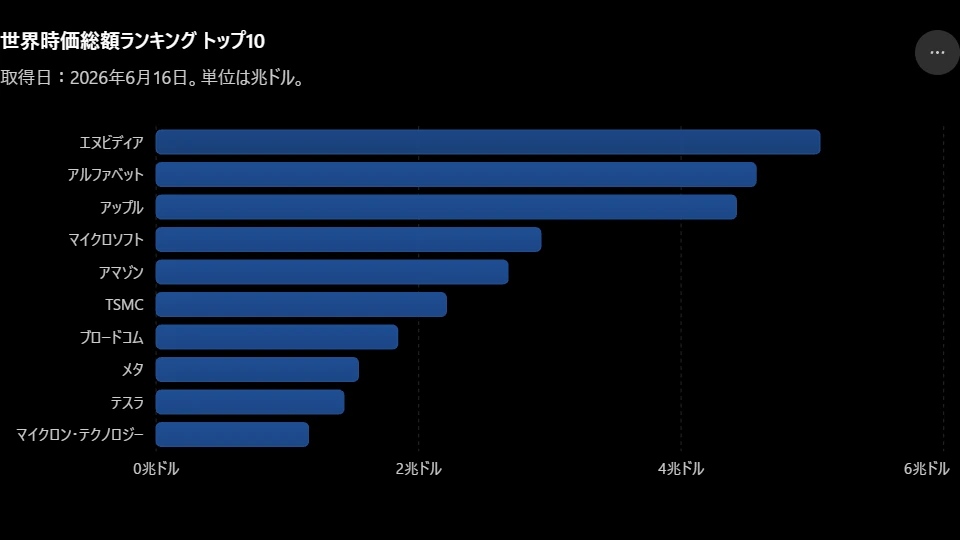
例3：一次関数のグラフと交点を求める
コピー y=x+6とy=-xのグラフを書いてください。また、交点の座標を求めてください。
例4：数式グラフを描く
コピー x^2+(y-^3√x^2)^2=1のグラフを書いて
生成例を見る
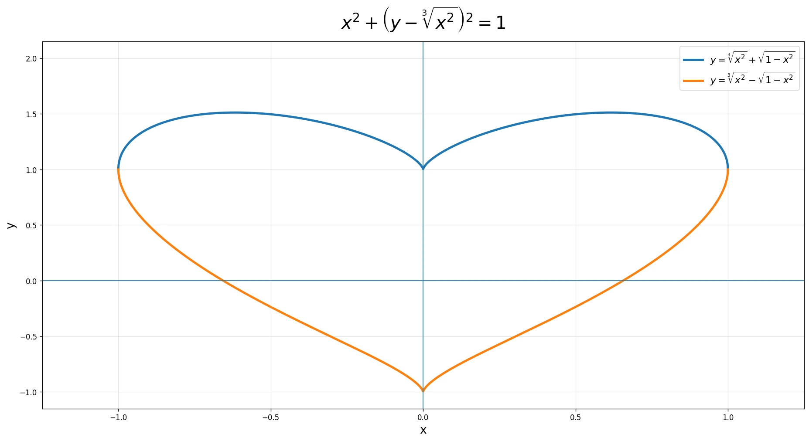
数式を入力するだけで、ユニークな形のグラフが描けます。こうした数学的な可視化も、Python実行なら気軽に試せます。
ポイントと注意点
グラフは「見せたいこと」に合わせて種類を選びましょう
タイトルや軸ラベル・色など見た目の調整も自然な言葉で依頼できます
CSVやExcelをアップロードしてそのままグラフ化できます
グラフ化する前に元データを確認しましょう（見た目がきれいでも元データが誤っていれば意味がありません）
円グラフは5〜6項目以内が目安です
Python実行では、ファイル形式を変換する作業も得意です。
CSVをExcelに変える、iPhoneの写真をJPGにする、mp3を倍速のwavに変換する。
こういった単純だけど地味に手間のかかる作業 を、AIに任せられます。
変換できること
データ・表計算
CSV ↔ Excel（相互変換）
CSV ↔ JSON（相互変換）
XML → CSV
ドキュメント
Word（.docx） → PDF
PDF → テキスト（.txt）
Markdown → HTML
HTML → PDF
Excel → PDF
画像
PNG ↔ JPG（相互変換）
PNG / JPG → WebP
HEIC → JPG（iPhoneの写真をJPGに）
画像のリサイズ・圧縮
音声
mp3 → wav
wav → mp3
音声の倍速・速度変換
動画
MP4 → GIF
動画の形式変換（MP4 → AVI など）
動画から音声だけ取り出す（MP4 → mp3）
例：mp3ファイルをwavファイルに変換する
元の mp3 ファイルをアップロードして、変換したい形式と条件をそのまま話しかけるだけです。倍速の指定も同時にできます。
使用する音声ファイル（変換前の元データ）：
4-4-2-5_source_notion_ai_era.mp3
コピー このmp3ファイルをwavファイルに変換して。
1.3倍速にして。
AIキャンプの講座では、このように「やりたいこと」をそのまま一言で伝えるだけで変換が完了することを体験してもらっています。
ポイントと注意点
変換と同時に、ファイル名の変更や保存形式の条件も一緒に指定できる
複数ファイルの一括変換にも応用できる
変換後は必ず開いて確認する（日本語の文字化けやデータのズレに注意）
元ファイルはバックアップとして残しておく
Python実行機能を使って、CSVやExcelなどのデータを整形・集計する方法 を紹介します。
こんなときに使う
メールアドレスの空白、氏名の表記ゆれ、日付の形式をまとめて整えたい
重複データや不要な列を削除して、必要な情報だけ残したい
複数ファイルを1つにまとめ、申込日順や名前順に並び替えたい
例：参加者リストを整形する
このワークでは、参加者リストのCSVを使って、データ整形の流れを体験します。
サンプルCSVには、メールアドレスの空白、氏名の表記ゆれ、日付形式のバラつき、重複データ、不要な列が含まれています。
使用ファイル：サンプルCSV
まずはCSVをアップロードして、次のように依頼してみましょう。
コピー この参加者リストを整形してください。
以下を行ってください。
・メールアドレスの前後の空白を削除
・申込日を YYYY-MM-DD 形式に統一
・氏名の表記ゆれを確認し、候補を別表にまとめる
・重複しているメールアドレスを削除
・不要メモ列を削除
・申込日の古い順に並び替え
・整形後のCSVファイルを作成
ポイントと注意点
「どのように整えるか」を具体的に指示しましょう（変換ルールも明示すると精度が上がります）
AIが自動補完することがあるため、「補完はしないでください」と明示しましょう
整形後は必ず確認し、元データは別ファイルとして残しましょう
個人情報を含むデータはアップロード先の利用規約を確認してから扱いましょう
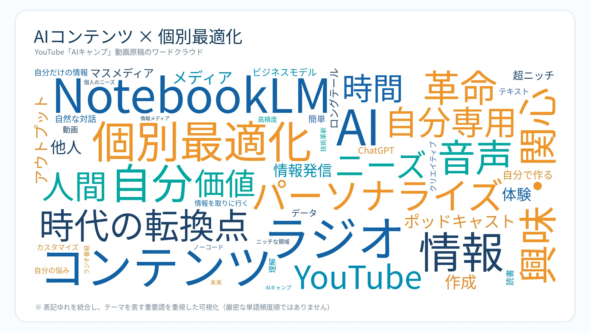
Python実行を使うと、文章やアンケート回答などのテキストデータを集計・分析できます。
AIに「読んで要約して」と頼むだけでなく、文字数・頻出語・単語の出現回数・回答傾向などを数値として集計できる のが特徴です。ワードクラウドなども作れますね。
人が1件ずつ読むと時間がかかる大量の文章も、AIに処理させることで全体の傾向をつかめます。
こんなときに使う
アンケートの自由記述をまとめて分析したい
問い合わせ内容にどんな言葉がよく出るか確認したい
SNS投稿やレビュー文の傾向を整理したい
例1：文章の文字数をカウントする
コピー ハリーポッターの読書感想文を200文字で書いて。
そのあと、Pythonを使用して文字数をカウントして。。
例2：ワードクラウドを作る
コピー 以下の文章を分析し、ワードクラウドを作成してください。
## 入力文
YouTube「AIキャンプ」
AIで個別最適化の時代に突入！なぜ他人が作ったAIコンテンツは刺さらないのか？（NotebookLMのラジオ革命から考える）
自分でやらないと絶対ダメです。自分の悩み事にぶつけてそのアウトプットを見るから価値があるのであって、誰かがYouTubeで発信している情報を眺めているだけでは使えるようにはなりません。今すぐNotebookLMを開いて自分の興味関心のある情報を放り込み、ラジオを作ってみてください。自分の興味関心にぶっ刺さる、めちゃめちゃコアなコンテンツをこれからは手に入れられるようになった――これが本当に大きな革命だと思っています。AIで作るラジオは既存のラジオ番組と単純にぶつかるものではありません。これからはAIで作られたコンテンツに私たち人間が時間を費やしやすくなるので、お客さまの時間を奪うビジネスモデルはすべて厳しくなると考えています。こんにちは、AIキャンプの中村俊也です。今回は「AIで個別最適化の時代に突入！ なぜ他人が作ったAIコンテンツは刺さらないのか？」というテーマでお届けします。2025年4月30日、GoogleのツールNotebookLMに日本語で高精度なラジオ――ポッドキャストのような音声コンテンツ――を作れる機能がついに登場しました。前回の動画でも紹介しましたが、ラジオのクオリティが高く、中身が本当に面白い。これは時代の転換点だと感じています。一部では「ラジオがなくなる」「ポッドキャストはもうダメかも」という声もありますが、そんなレベルの話ではありません。この技術は情報発信、コンテンツ、クリエイティブ制作という世界そのものを変えてしまう大きなインパクトになります。まずはNotebookLMで作れるラジオの質を見てください。AIが内容を理解し、二人で対話するような、まるでラジオ番組のような音声を作ってくれるんです。AIっぽさがなく、男性と女性が会話しているみたいで非常に自然。しかも内容がめちゃめちゃ面白い。難しい用語も分かりやすく噛み砕いてくれるし、「それって本当なんですか？」「すごいですね！」と、人間のパーソナリティが話しているように聞こえるので理解が進むんですよ。本当に革命的で、その辺の人間のラジオ番組より面白いと鳥肌が立ちました。NotebookLMのラジオが進化したポイントは三つ。①精度が圧倒的に向上。②ノーコードで簡単に作成可能。データを与えてボタンを押すだけで、小学生からPCが苦手なおじいちゃんおばあちゃんまで簡単にラジオが作れます。そして③最大の変化が“個別最適化”。一人ひとりの興味関心に合わせた、究極にパーソナライズされた情報コンテンツが作れるようになった点です。テレビやラジオ、YouTubeのようなマスメディアはどうしても一般向けに寄せなければ成り立ちません。しかしAIなら超ニッチな領域――たとえば「土星の輪は何でできているのか」「静岡県八津市で子育てに最適な施設はどこか」といった、ごく限られた人しか興味を持たないテーマ――を簡単にコンテンツ化できます。私は2023年12月から、AIが文章・音声・動画・画像を作れるということは個別最適化された情報発信が可能になると確信していました。ただChatGPTのテキストだけではそのインパクトを実感しにくかった。でも今回のNotebookLMのラジオはレベルが違う。4月30日はまさに時代の転換点です。英語圏では既にポッドキャスト機能があり、彼らは最初からこの可能性を理解していたはず。日本だけで置いていかれるわけにはいきません。もちろんNotebookLMの音声機能はまだ発展途上で課題も多いですが、今後は本、テキスト、動画、音声などあらゆる媒体でAIがカスタマイズした“自分だけの情報”が届く世界が必ず来ると確信しました。ここまで聞いて、なぜ他人が作ったAIコンテンツが面白くないのか分かってきたでしょう。私が科学についてChatGPTと会話した履歴で作ったラジオは、皆さんにとっては面白くないはず。AIは“超個別最適化”こそ武器なので、周囲からは面白さが分からないんです。だからこそ、あなた自身で体験してほしい。今すぐNotebookLMを開き、自分の興味関心のある情報を放り込んでラジオを作ってください。悩み事にぶつけ、アウトプットを見るからこそ価値がある。YouTubeで他人の情報を眺めているだけでは使えるようになりません。NotebookLMで自分専用のラジオを必ず作ってみてください。最後に図で説明すると、縦軸がニーズの広さ、横軸がニーズの幅。テレビや本、人気ラジオは多くのニーズを取るマスメディア。一方、AIコンテンツは“ロングテール”――細分化された小さなニーズに応えるものです。AIラジオは既存のラジオと競合するのではなく、むしろ読書やYouTubeのように能動的に情報を取りに行く行為に近い。AIが自分専用に提供する情報のほうが面白いと感じれば、読書や他人のコンテンツに割く時間は相対的に減ります。スマホゲームが遊園地やパチンコへの時間を奪ったように、AIコンテンツは既存の情報メディアの価値を下げるでしょう。これからは“お客さまの時間を奪う”ビジネスモデルが厳しくなる――そう私は確信しています。今回のテーマは「AIで個別最適化の時代に突入！ なぜ他人が作ったAIコンテンツは刺さらないのか？」。繰り返しますが、NotebookLMを開き、自分のデータでラジオを作って聞いてみてください。そこからがスタートです。以上、ありがとうございました。
出力例を見る
ポイントと注意点
文字数カウントは原稿の字数確認やSNSの文字制限チェックに使いやすいです
頻出語分析はアンケートや口コミの傾向把握に向いています
ワードクラウドは全体の傾向を視覚的に伝えたいときに便利です
日本語の単語分割は完璧ではないため、実際の文章も合わせて確認しましょう
個人情報や機密情報を含む自由記述は、アップロード前に確認が必要です
実はPythonは、簡単な画像編集も可能です。
PhotoshopやIllustratorのような本格的なクリエイティブ制作ではなく、サイズを揃える・切り分けるといった軽作業の自動化 として活用するのが現実的です。
ここでは、画像生成AIでまとめて作った画像を、Pythonで1枚ずつに切り分ける方法を紹介します。
例：4分割されたLINEスタンプ画像を切り分ける
4分割された画像をアップロードして、1枚ずつの画像に切り分けます。画像生成AIで複数パターンをまとめて作り、それを分割すると、LINEスタンプや素材画像を効率よく作れます。
コピー Pythonを使用して、この画像を4つの画像に分割してください。それぞれを個別のPNGファイルとしてダウンロードできるようにしてください。
ポイントと注意点
複数ファイルの一括処理や「形式・サイズを揃えるだけ」の軽作業に向いています
高度なデザイン編集は専用ツールの方が適しています
出力結果は必ず目視で確認しましょう（切り取り位置のずれや画質の劣化に注意）
他者が写った画像は著作権・肖像権に注意しましょう
4-4-2-9
Python実行：画像に文字を載せる
Pythonを使うと、画像にタイトル文字を載せることもできます。
画像生成AIは文字の表示が苦手なことがありますが、Pythonで後から文字を載せれば、誤字のない仕上がりを作れます。
SNSや資料用の見本づくりなど、軽作業の自動化として活用するのが現実的です。
こんなときに使う
画像にタイトル文字を入れて、SNSや資料用の見本を作りたい
同じ形式の画像に、文字だけ変えて何枚も作りたい
画像生成AIで文字が崩れたので、文字だけ正確に載せ直したい
例：画像に文字を載せる
まず、元になる画像をアップロードします。
画像の上に文字を載せる場合は、文字の内容だけでなく、位置・大きさ・色・ふちの色まで指定すると仕上がりが安定します。
使える場合は、できるだけ上位モデルや推論モードを使うと安心です。
コピー Pythonを使用し、この画像の上に「AI CAMPで壁紙を作ってみた！」という文字を載せてください。
## 条件
・Noto Sans CJK JPを使用
・文字の位置：画像の上部20%の位置
・文字のサイズ：画像サイズの高さに対し10%
・文字の色：黒（カラーコード：#000000）
・文字のふち（太め）：白（カラーコード：#ffffff）
## 出力形式
ダウンロードできるpngファイルで出力
出力例を見る
4-4-2-10
Python実行：画像と音声から動画を作る
実はPythonは、簡単な動画編集も可能です。
PremiereProのような本格的な映像制作ではなく、音声と画像を結合するといった軽作業の自動化 として活用するのが現実的です。
ここでは簡単な事例を紹介しますが、2025年からは、「AIエージェント×プログラムを組み合わせたクリエイティブ制作」 が非常に注目を集めています。
ここでは、その基礎となる事例を紹介します。
例：画像と音声をつけて動画にする
画像と音声ファイルを結合すると、1枚画像のまま音声が流れる短い動画を作れます。講座の告知、簡単なナレーション付き素材、社内共有用のミニ動画などに使いやすい方法です。
使用する画像：画像に文字を載せたときの出力例など、手元の1枚を使います。
使用する音声ファイル：
4-4-2-10_voice.mp3
コピー この画像と音声を結合して、短い動画を生成してください。
## 条件
・画像は全体が見えるように配置
・音声の長さに合わせて動画の長さを調整
・画面サイズは元画像の比率を維持
## 出力形式
ダウンロードできるmp4ファイルで出力
ここで行っているのは、AIが新しい映像を作る「動画生成AI」ではなく、Pythonで画像と音声を結合するファイル処理です。
ただし、この考え方を使うと、同じ型のショート動画をまとめて作る自動化にも応用できます。
出力例を見る
4-4-2-10_movie.mp4
これをさらに発展させると…
ここまで紹介したのは、画像と音声の結合といった「軽いファイル処理」です。
これをさらに発展させると、AIエージェント×画像生成×音声生成×動画編集をプログラムで組み合わせ、解説動画を一発生成 することも可能になります。
2026年時点では極めて注目度の高い方法で、AIキャンプでも進化を追っています。
以下は、2026年6月にAIキャンプ代表の中村がエージェントで作成した「AI×新規事業作成のポイント」の解説動画です。
4-4-2-11
Python実行：Wordフォーマットを維持する方法
ChatGPTなどの生成AIでWordファイルを作るとき、裏側ではPythonの「python-docx」というライブラリがよく使われます。ところが、すでに完成しているWord帳票をPythonで作り直させると、元のレイアウトや書式が崩れてしまう ことがあります。
そこで今回は、Wordを一から作るのではなく、完成済みのWordテンプレートをコピーして、必要な文字だけを書き換える 方法を紹介します。見積書・申込書・報告書など、会社で決まった書式がある帳票の自動作成に向いています。
なぜWordのレイアウトが崩れるのか
Wordファイルは、単純な文章データではありません。フォント、文字サイズ、段落、表、余白、罫線、そして「Run（ラン）」と呼ばれる文字列単位の書式情報など、さまざまな要素が組み合わさってできています。
これらをPython側で完全に再現しようとすると、元のWordとまったく同じ状態を保つのは難しくなります。AIが表の幅や行間を「だいたい」で作り直してしまい、微妙にズレた帳票ができあがる、というのがよくある失敗です。
テンプレートの「変数」だけを差し替える
実は、Wordファイル（.docx）の中身はZIP形式のファイルです。ZIPを開くと、文章や書式の情報がXML形式で保存されています。本文は主に word/document.xml というファイルに入っています。
この仕組みを利用して、Wordテンプレート内に次のような変数をあらかじめ配置しておきます。
コピー 会社名：{{COMPANY_NAME}}
担当者：{{PERSON_NAME}}
作成日：{{DATE}}
PythonではWordのレイアウトそのものを再生成せず、XML上のこの変数部分だけを実際の値に置き換えます。
NG：「WordをPythonで作る」
OK：「完成済みのWordテンプレートをコピーして、必要な文字だけを書き換える」
この方法なら、フォント、表、罫線、余白、段落設定など、Word側で作り込んだレイアウトには極力触れずに、必要な情報だけを差し替えられます。
やり方の流れ
Wordで完成形のテンプレートを作成する
差し替えたい場所に {{COMPANY_NAME}} などの変数を入れる
Pythonでテンプレートの .docx ファイルをコピーする
.docx をZIPファイルとして開くZIP内の word/document.xml を読み込む
XML内の変数を実際の値に置き換える
XMLをZIP内に戻し、.docx として保存する
ポイントは、Wordの構造を一からPythonで作り直さないことです。元のWordファイルに含まれている書式情報はそのまま残し、変更したい文字列だけを最小限書き換えます。
例：Wordテンプレートの変数を差し替える
まずWordで帳票を完成させ、差し替えたい場所に {{COMPANY_NAME}} {{PERSON_NAME}} {{DATE}} を入力して保存します。そのファイルをChatGPTにアップロードし、次のように依頼します。
コピー 添付した「帳票」のWordテンプレート（.docx）を読み込んでください。
コピーして、変数だけを実際の値に差し替えたWordファイルを出力してください。
## 差し替える内容
・{{COMPANY_NAME}} → 株式会社サンプル
・{{PERSON_NAME}} → 山田太郎
・{{DATE}} → 2026年9月28日
## 条件
・Wordのレイアウトを維持するため、python-docxで文書を一から作り直さないこと
・.docxをZIPとして開き、word/document.xml 内の変数の文字列だけを置換すること
・ヘッダー・フッターにも変数があれば、word/header*.xml と word/footer*.xml も置換すること
・置換後、変数が残っていないか確認してから保存すること
・ダウンロード時のエラーを避けるため、ファイル名は英語にすること（例：filled_document.docx）
指示を出すと、AIがテンプレートをコピーしてXMLの変数だけを置き換え、元の書式を保ったWordファイルを返してくれます。ダウンロードしたらWordで開き、表・罫線・フォントが元のテンプレートと同じか確認しましょう。
AIキャンプの講座でも、見積書や報告書のように「毎回同じ書式で中身だけ変わる」書類は、この方法をおすすめしています。
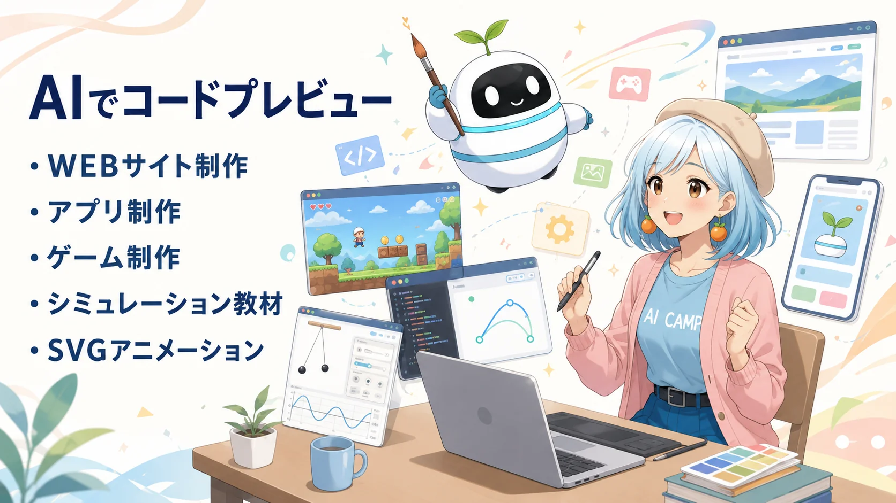
ここでは、画面やアプリを作る「表側の制作」として、AIのコードプレビュー機能 を学びます。
コードプレビューとは、AIが作ったコードを、実際のWebページやアプリ画面として表示できる機能です。ChatGPTやGeminiでは「Canvas機能」、Claudeでは「Artifacts」と呼ばれます。
専用の環境に移さなくても、AIチャット上で完成した画面をその場で確認できる のが大きな特徴です。さらに「ボタンを目立たせて」「スマホで見やすくして」と自然な言葉で伝えれば、修正もAIが行ってくれます。
これまで必要だったプログラムやデザインの専門知識のハードルを、大きく下げた技術です。
こんなときに使う
WebページやLPのたたき台を、画面で見ながら作りたい
ボタン・カード・入力フォームなど、操作できるUIを試したい
クイズアプリ・診断ツール・料金シミュレーターなどの試作品を作りたい
簡単なゲームを作って、操作感を確かめてみたい
テキストや資料を、グラフィックレコード風の図解に変換したい
プレゼンや教材で使えるアニメーションを手軽に作りたい
スライダーやボタンで触って学べるシミュレーション教材を作りたい
Python実行との違い
Python実行
コードプレビュー
何をするか
データ処理・ファイル作成
画面・アプリの試作
向いている作業
計算・集計・変換（裏側）
デザイン・操作確認（表側）
結果として出るもの
ファイル・数値・グラフ
表示できる画面
4-4-3-2
コードプレビュー：簡単なWebページを作る
コードプレビュー機能を使えば、Webページのたたき台 をすばやく作り、デザインまでその場で確認できます。
ここでは、簡単なWebページを作ってみましょう。
例：カフェのWebページを作る
ChatGPTやGeminiの場合は、Canvas機能をONにして実行してください。Claudeの場合は、Artifactsが自動で使われます。
コピー カフェの紹介ページをHTML/CSSで作成して
完成例
カフェ紹介ページのたたき台です。別タブで開くか、下のプレビューで確認できます。
HTML版を開く
たった1行のプロンプトで、ここまで見栄えのするページができます。完成後に、色・画像・文章の雰囲気やレイアウトを具体的に伝えれば、さらに理想に近づけられます。
4-4-3-3
コードプレビュー：簡単なアプリを作る
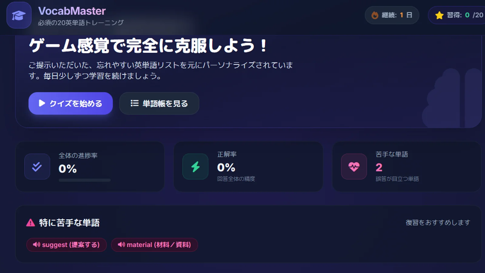
コードプレビュー機能を使うと、ボタンを押したり入力したりできるアプリのたたき台 を、その場で作れます。
簡単なアプリなら、GeminiやClaudeでリンクを発行して、他の人にそのまま使ってもらう こともできます。
ここでは、英単語クイズアプリと社内席替えアプリの2例を試してみましょう。ChatGPTやGeminiの場合は、Canvas機能をONにしてから実行してください。
例1：英単語クイズアプリを作る
忘れやすい単語リストを渡すと、ゲーム感覚で復習できるクイズアプリにしてくれます。
コピー 以下は私が理解していない英単語です。
これをクイズ形式で出題するアプリを作って
## 単語リスト
achieve 達成する
consider 考慮する
develop 発展する／開発する
environment 環境
increase 増える／増やす
reduce 減らす
suggest 提案する
responsible 責任がある
opportunity 機会
require 要求する／必要とする
experience 経験
population 人口
influence 影響（を与える）
material 材料／資料
knowledge 知識
culture 文化
industry 産業
technology 技術
challenge 挑戦（する）
communication 意思疎通／通信
完成例
英単語クイズアプリのたたき台です。別タブで開くか、下のプレビューで確認できます。
HTML版を開く
例2：社内席替えアプリを作る
座席レイアウトや社員名を指定すると、ランダムシャッフルができるツールが完成します。チーム編成や座席のイメージ共有にも使えます。
コピー あなたは熟練したエンジニアです。
以下の要件に従って「社内席替えアプリ」を開発してください。
## 要件
・HTMLで簡単に表示できるようにする。
・社員16名の座席配置を管理し、ランダムなシャッフルや個別の席替えを直感的に行えるようにする。
・4名ずつの島（グループ）を4つ配置。
・16名の社員データを用意する。（中村俊也,永合葵など）
・「全員シャッフル」ボタンを押すと、全社員の席がランダムに入れ替わる。
・デザインはカラフルに。
・演出、UIにこだわること。
完成例
席替えアプリのたたき台です。別タブで開くか、下のプレビューで確認できます。
HTML版を開く
4-4-3-4
コードプレビュー：簡単なゲームを作る
コードプレビュー機能を使うと、キーボードやタップで操作できるゲームのたたき台も、その場で作れます。遊びながら画面を確認し、デザインや難易度を調整できる のが魅力です。
ここでは、横スクロールアクションゲームを作ってみましょう。ChatGPTやGeminiの場合は、Canvas機能をONにしてから実行してください。
例：横スクロールアクションゲームを作る
「こんなゲームが作りたい」と伝えるだけで、操作できる画面が完成します。完成後も「ジャンプを高くして」「敵を増やして」と自然な言葉で調整できます。
コピー 実際に動く横スクロールアクションゲームを作ってください
完成例
サイバーパンク風の横スクロールアクションゲーム「Neon Blade: Cyber Runner」のたたき台です。別タブで開くか、下のプレビューで操作してみてください（キーボード操作のゲームです）。
HTML版を開く
4-4-3-5
コードプレビュー：SVGグラフィックレコードを作る
コードプレビュー機能を使うと、テキストの内容をそのまま図解に変換できます。プロンプト1本で、見栄えのするグラフィックレコード風の図解が完成する のが最大の魅力です。
最近のAIは、配色やレイアウトまで任せても、見栄えよく仕上げてくれます。SVG形式で出力するため、パワーポイントに貼り付けて後から編集できる のも実用的なポイントです。
例：グラレコ風図解を作る
ClaudeのArtifactsや、ChatGPT・GeminiのCanvas機能をONにして実行してください。
テーマと箇条書きのメモを渡すだけで、グラフィックレコード風の1枚図解にまとめてくれるプロンプトです。
コピー ## グラレコ風図解プロンプト - V3.0 - Claude用
### 目的
・あなたは超一流のグラフィックレコードデザイナーです。
・あなたのミッションは、以下の入力文を、分かりやすいグラフィックレコーディング風のインフォグラフィックにすることです。
・日本語で出力してください。
### 実行機能
SVG形式でコーディング
### デザイン仕様
・枚数：1枚
・画像サイズ：横1200px × 縦800px（アスペクト比 3:2）
・フォント：Noto Sans JP
### 入力文
「大阪万博に行くベストな日」
・曜日別の混雑状況「土＞日＞金＞月＞木＞火＝水」
・7月〜8月前半の火・水・木が狙い目
・雨の日は狙い目
・10月は閉幕直前で激混み予想
プロンプト内の「入力文」の部分を、自分のメモや資料に差し替える だけで、様々なテーマの図解が作れます。
完成例
補足説明：SVGとは
SVGとは「Scalable Vector Graphics」の略で、拡大・縮小しても画質が劣化しない、ベクター形式の画像フォーマット です。
JPEGやPNGなどの通常の画像はドット（点）の集合なので、拡大するとぼやけます。一方SVGは「この座標にこの形を描く」という命令を記録しているため、どんな大きさでもくっきり表示されます。
主な特徴は次のとおりです。
テキストエディタで開いて中身を確認・編集できる
Webブラウザで直接表示できる
パワーポイントに貼り付けて、色や文字を後から変更できる
AIがコードとして生成できるため、コードプレビューとの相性が抜群
4-4-3-6
コードプレビュー：SVGアニメーションを作る
コードプレビュー機能を使うと、動きのあるアニメーションもその場で作れます。
プロンプト1本で、なめらかに動くSVGアニメーションが完成する のが特徴です。
ChatGPTやGeminiの場合はCanvas機能をON、ClaudeはArtifactsを使って実行してください。
例1：ペリカンの自転車アニメーションを作る
AI界隈では、なぜかベンチマークになっている、ペリカンの自転車アニメーションです。「どれだけ複雑な動きを表現できるか」の指標として、AIの性能比較によく使われています。
コピー 森の中を自転車に乗って走るペリカンの超詳細なSVGアニメーションを作って（60fps）
完成例
例2：プレゼンで使えそうなアニメーションを作る
資料やプレゼンの中で、変化や流れを見せたいときに使えるアニメーションです。
コピー プレゼンで紹介できる、洗練されたSVGアニメーションを作成してください。
左から右に矢印が進んでいる様子。
「汚いデータ」→「きれいなデータ」
完成例
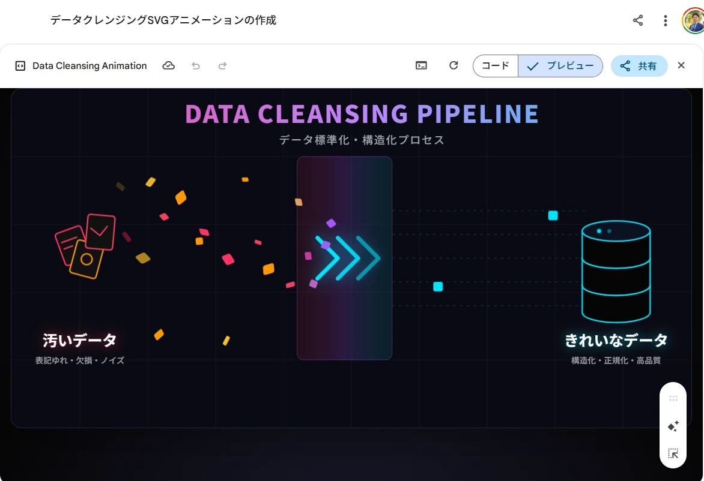
4-4-3-7
コードプレビュー：シミュレーション教材を作る
コードプレビュー機能を使うと、スライダーやボタンで操作できるシミュレーション教材 も、その場で作れます。
言葉だけでは伝わりにくい現象を、動かしながら体験できる教材に変換できる のが大きな強みです。
AIキャンプ代表の中村は元理科教員で、授業中に「イメージしづらい現象を視覚化したい」と感じていました。コードプレビューの普及で、こうした教材づくりが個人でも試せるようになりました。
ChatGPTやGeminiではCanvas機能、ClaudeではArtifactsをONにしてから実行してください。
こんなときに使う
物理・数学・生物など、動きや変化が分かりにくいテーマを説明したい
授業・研修・社内勉強会で、参加者が触って確かめられる教材が欲しい
パラメーター（速度・確率・人数など）を変えて結果を比較したい
例1：鉛直投げ上げのシミュレーションを作る
物体の運動は、式だけではイメージしづらいものです。初速度を変えるとグラフがリアルタイムで変わる教材を作ってみましょう。
コピー 鉛直投げ上げのシミュレーション教材を作ってください。
## 表示するグラフ
1つ目：縦軸が高さ、横軸が時間
2つ目：縦軸が速さ、横軸が時間
## 操作できるUI
・投げ上げ時の初速度をスライダーで変更できる
・初速度を変えると、2つのグラフがリアルタイムで更新される
## できれば追加
・地球と月面で重力を切り替えられる
・短い解説文も表示する
完成後は「アニメーションを滑らかにして」「解説文をもう少しやさしくして」など、自然な言葉で調整できます。
例2：ドップラー効果のシミュレーションを作る
救急車が近づくと音が高くなり、遠ざかると低くなる現象です。音だけでは伝わりにくい部分を、視覚的に確認できます。
コピー ドップラー効果を学べるシミュレーション教材を作ってください。
## 画面に含めたい要素
・救急車が左右に動くアニメーション
・音波の波長が変化する様子
・救急車の速度を変えられるスライダー
・リセットボタンと、音を鳴らすボタン
## 学習のポイント
・近づくときは波長が短くなり音が高くなる
・遠ざかるときは波長が長くなり音が低くなる
参考動画と活用事例
AIキャンプのYouTubeで、教材づくりを実演した動画です。
動画で紹介したシミュレーション教材の事例です（重複は除いています）。
鉛直投げ上げ（高さ・速度のグラフ、初速度スライダー、地球と月面の切り替え）
ハンマー投げの等速円運動
単振動（円運動との関係、振幅・角速度の変更）
摩擦力（斜面の角度・摩擦係数）
オームの法則（電圧・電流・抵抗）
気体の熱運動（ボイルの法則・シャルルの法則）
横波と縦波の違い
ドップラー効果（ソニックブームモード）
感染症の拡大モデル
メンデルの遺伝の法則
渋滞発生のメカニズム
複利の力
火災（燃焼）シミュレーター
サイコロの確率測定
食物連鎖と自然淘汰
DNAの二重螺旋構造（転写モード）
この章では、生成AIを使ったデータ分析 について学びます。PDFファイル・CSVファイル・アンケート結果・SNSのアナリティクスデータ・売上データなど、さまざまな情報をAIで分析する方法です。
データ分析の概念が変わってきた
これまでのデータ分析といえば、Excelや専用ツールで数値を集計し、グラフを作るイメージでした。
しかし生成AIの登場で、分析できるデータの範囲が大きく広がりました。 数値・表データだけでなく、PDFやPowerPointのテキスト情報も分析の対象です。数字から読み取る定量的な考察はもちろん、定性的な考察（感情・傾向・背景など） も引き出せます。
「データ分析」という言葉が指す範囲そのものが、根本から変わっているのです。
何ができるか
大量のPDF資料や報告書から、重要な論点・要点をすぐに抽出できる
アンケートの自由記述など、これまで人手で読んでいたデータの傾向をまとめられる
プロンプトに分析の観点を書いておくことで、毎回同じ視点・同じ品質で分析 できる
人間では見落としやすい傾向や矛盾も、AIが同じ基準で処理して見つけてくれる
使うときの注意
AIの集計や考察には誤りが混ざることがあります。重要な数値は、元データや別の方法で必ず確認しましょう
顧客情報や社外秘のデータは、利用するサービスの規約や社内ルールを確認してから渡しましょう
長い論文やレポートをAIに渡すだけで、要約・論点整理・考察まで一気に引き出せます。
出力の口調や形式を指定すれば、同じ文書から目的に合ったアウトプットを自在に作れます。
準備：サンプルPDFをダウンロード
今回は、総務省が公開している「令和7年版 情報通信白書」のうち、第Ⅰ部 第1章 第2節「AIの爆発的な進展の動向」（全12ページ）をサンプルとして使います。
サンプルPDFをダウンロード（令和7年版 情報通信白書：AIの爆発的な進展の動向）
ダウンロードしたPDFをAIに添付して、次のプロンプト例を試してみましょう。
注意：AIはPDF内の画像や図表を十分に読み取れないことがあります。図表の内容は、自分の目でも確認しましょう。
プロンプト例：条件を付けて要約
まずは、読み手・分量・構成などの条件を付けた要約から試してみましょう。「この資料を要約して」だけの指示より、読み手・分量・構成を指定する と、使える形で出力されます。
コピー 添付した「情報通信白書（AIの爆発的な進展の動向）」のPDFを読み込んでください。
次の条件で要約してください。
## 条件
・読み手：この資料を初めて読む人
・分量：全体で600字以内
・構成：結論 → 重要なポイント（箇条書き）
おまけプロンプト：口調を変えて要約
同じ内容でも、出力の口調を変えると印象が大きく変わります。
おまけプロンプト：出力形式を細かく指定
口調だけでなく、出力の「型」をサンプルとして示す方法もあります。
コピー この白書の論点を箇条書きで挙げてください。
出力は以下の見本のように、叱っているような口調にすること。
## 出力形式
・LLMの巨大化と投資競争、ちゃんと押さえて。
・DeepSeek-R1の衝撃、流し読みしないでよ。
・日本の存在感、甘く見ないで現実を見ろ。
補足
読むのに時間がかかっていた長文PDFも、数十秒で要点を把握 できます。口調や出力形式を変えるだけで、会議用の箇条書き、社内共有用のやわらかい文章、印象に残るユニークなまとめなど、用途に合わせて使い回せます。
見本の文体を示すと、AIが「トーンの強さ」を具体的に把握し、指示通りに出力しやすくなります。この「見本を見せる指示」 は、プロンプトの基本テクニックのひとつです。
参考
ここでは、AIによるデータ分析の代表例として、アンケート分析をやっていきます。
手元のアンケートCSVをAIに渡すだけで、集計・グラフ化・考察まで一気に引き出せます。
準備：サンプルCSVをダウンロード
架空の「生成AI研修」アンケート（回答数200）を使います。ダウンロードして、AIとの会話に添付してから指示を出します。
サンプルCSVをダウンロード（4-5-3_sample.csv）
ワーク
次のプロンプトを送信します。Excelファイルとインタラクティブなダッシュボードを、あわせてダウンロードできる形で出力させます。
コピー 添付した「生成AI研修のアンケート」のCSVデータを読み込んでください。
様々な手法で徹底的に分析してください。視覚的にも見やすく魅力的なものにすること。考察は「事実」と「推測」に分けて記述すること。
## 出力形式
1. ダウンロードできるExcelファイルとして出力
2. インタラクティブなダッシュボードを、HTMLまたはReactで作成
出力例
うまくいくと、集計結果がExcelに整理され、チャートを切り替えられるダッシュボードHTMLも同時に出力されます。同じCSVとプロンプトから生成した一例です。ブラウザで開くか、下のプレビューで確認できます。
ダッシュボードHTML（結果例）を開く
補足
作業時間を大きく短縮できるうえに、人が見落としがちな傾向の発見 も期待できます。
考察を「事実」と「推測」に分けて出力させると、次のアクションにつなげやすくなります。
AIの集計や数値は、元データと見比べて確認しましょう。
自分のデータに差し替えるときは、列名や質問項目に合わせて指示を調整しましょう。
ここでは、AIによるデータ分析の代表例として、SNSやWebサイトのアナリティクスデータの分析をやっていきます。
SNSやWebの閲覧データ（アナリティクス）をAIに渡すと、SNS運用やWebサイトのコンテンツ改善に役立つ分析 をまとめて引き出せます。ここでは例として、YouTubeアナリティクスのCSVを使います。
準備：サンプルCSVをダウンロード
サンプルCSVを用意しています。ダウンロードして、AIに添付してから指示を出します。
サンプルCSVをダウンロード（4-5-4_youtube_sample_data.csv）
ご自身のデータを使う場合は、YouTubeスタジオ（studio.youtube.com ）の「アナリティクス」→「詳細モード」からCSVをエクスポートできます。XやInstagramなどのSNS、Googleアナリティクス（Webサイト）なども、同様にCSVで取得できます。
ワーク
次のプロンプトを送信します。分析の観点を書いておくと、AIが判断軸をそろえてアドバイスを返してくれます。
コピー 添付した「YouTubeアナリティクス」のCSVデータを読み込んでください。
チャンネルの状況を詳細に分析し、動画の企画や運営に関する最高のアドバイスをしてください。
## 分析する観点
・登録者が増えた動画、登録につながりやすい動画（登録者 ÷ 視聴回数）
・クリックされやすい動画、表示は多いのにクリックが弱い動画
・最後まで見られやすい動画、途中で離脱されやすい動画
・動画の長さ、投稿時刻との相性
・チャンネルへの貢献が大きい動画
## 出力形式
・考察は「事実」と「推測」に分けて記述してください。
補足
「視聴回数が多い動画が良い動画」とは限りません。登録率・クリック率・完視聴率を組み合わせると、次の企画やタイトル改善に使える具体的な根拠 が得られます。
観点を毎回そろえて分析できるので、過去との比較も簡単です。
AIの集計や数値は、元データと見比べて確認しましょう。
自分のデータに差し替えるときは、列名に合わせて観点を調整しましょう。たとえばWebサイトなら、「視聴回数」を「ページビュー」、「平均視聴率」を「平均エンゲージメント時間」や「直帰率」に置き換えて使えます。
ここでは、AIによるデータ分析の代表例として、売上データの分析をやっていきます。
分析の観点をプロンプトに書き込んでおくことで、毎回決まった切り口で、売れ筋・終売候補・打ち手まで整理した分析レポート が作れます。
準備：サンプルCSVをダウンロード
雑貨屋のレジのCSV売上データを使います。雑貨屋の部門管理者として、毎月1回の経営会議に向けて、売れ筋商品・終売候補・次のアクションプランを整理する想定です。ダウンロードして、AIに添付してから指示を出します。
サンプルCSVをダウンロード（4-5-5_sample.csv）
ワーク
次のプロンプトを送信します。
コピー 添付した「雑貨屋の売上」のCSVデータを読み込んでください。
以下の観点で分析してください。
## 分析の観点
・販売数量、売上、粗利額、前月比（伸び）を見る
・売れ筋商品：数量・売上・粗利額が高く、前月より伸びている商品と、その打ち手（仕入れ増・売り場拡大など）
・終売候補：数量・売上・粗利額が低く、在庫が残っている商品と、その判断（値引き・仕入れ停止など）
※粗利率だけで判断せず、粗利額と販売数量をセットで見ること。
## 出力形式
・会議でそのまま見せられるHTMLダッシュボード（グラフ・表つき）
・考察は「事実」と「推測」に分けて記述してください。
出力例
HTML形式の分析ダッシュボードが出力されます。売れ筋商品・終売候補・次の打ち手がグラフや表で整理され、会議にそのまま持ち込める形になれば成功です。同じCSVとプロンプトから生成した一例を、ブラウザで開くか、下のプレビューで確認できます。
ダッシュボードHTML（結果例）を開く
補足
観点を決めておくと、数字を眺めるだけの状態から、どこに集中し、次に何をすべきかが見えてくる ようになります。
毎回同じ観点で分析できるので、過去との比較もしやすくなります。プロンプトをテンプレートとして持っておけば、毎月のデータ更新にもすぐ対応できます。
AIの集計や数値は、元データと見比べて確認しましょう。
自分のデータに差し替えるときは、列名に合わせて観点を調整しましょう。
※本ワークは、元雑貨屋バイヤーであるAIキャンプの伊藤が調整した活用例です。
FAQとは「よくある質問」のことで、いわゆるQ&Aデータです。質問と回答がセットで並んだCSVをAIに渡すと、データの内容を引用しながら精度高く回答 してくれます。
RAGとは
CSVには質問と回答がセットで配置されているため、AIが非常に精度高く回答できます。このように、AIが手元のデータを検索・引用して答える技術をRAG(ラグ)と呼びます。
CSVの中にあるデータについて質問すると、AIはそのデータを引用して回答します。社内の問い合わせ履歴、マニュアル、規約などもCSV化すれば、同じように使えます。
準備：サンプルCSVをダウンロード
今回は、政府が公開している定額減税・給付金のQ&Aデータを使います。問いと回答が約5,000件収録されています。
サンプルCSVをダウンロード（4-5-6_sample_faq.csv）
ダウンロードしたCSVをAIに添付して、以下のプロンプト例を試してみましょう。
プロンプト例
次の3つの質問を使うと、実際にCSVのデータを使って回答していることが分かります。
質問1：データに直接質問する
コピー 添付した「定額減税・給付金のFAQ」のCSVデータを読み込んでください。
給付金の支給時期はいつごろですか？
質問2：自分の状況に当てはめて質問する
コピー 添付した「定額減税・給付金のFAQ」のCSVデータを読み込んでください。
扶養家族が3人いる会社員の場合、定額減税はいくらになりますか？
質問3：根拠も示して答えてもらう
コピー 添付した「定額減税・給付金のFAQ」のCSVデータを読み込んでください。
住民税非課税世帯への給付金について、CSVのどの行（ID）を根拠にしたか示して答えてください。CSVに書かれていないことは「書かれていません」と答えてください。
補足
質問3のように根拠のIDを求めると、回答がCSVの内容に基づいているか確認できます。
このCSVは約5,000行あるため、AIによっては全行を読み切れないことがあります。該当部分を引用するよう指示すると、精度が上がります。
サンプルは過去の制度の内容です。回答は元のQ&Aデータと照らして確認し、制度や金額は公式の情報で最終確認しましょう。
ここでは、AIによる画像認識、通称「Vision機能」 について紹介します。
2023年秋に登場したこの機能は、まさに「AIに目がついた状態」です。事前に大量のデータを用意しなくても、さまざまな画像を柔軟に分析し、内容を言葉で説明できます。人間のように「見る → 考える」ことができるようになりました。
2025年頃からは推論モデルとの併用も可能になり、分析能力が大きく向上しています。さらに音声対話と組み合わせれば、「見る」「話す」「考える」を一体で行えるため、活用の幅が広がります。
例えば
男の子たちが川で遊んでいるこちらの画像をアップして、「この画像から読み取れることは？」と質問してみましょう。細部まで読み取った分析が返ってきます。
AIの回答例：
コピー 森の中を流れる浅い川で、小学生くらいの日本人男児たちが魚や虫を探している様子が描かれています。子どもたちは網や透明な観察ケースを持ち、水面や岩のすき間をのぞき込みながら、夢中で自然観察をしています。周囲には緑の木々や苔むした石があり、木漏れ日が差し込む柔らかな光によって、穏やかで清潔感のある雰囲気が生まれています。事実として、川辺で複数の子どもが探索している場面であることは読み取れます。一方で、実際に魚や虫を捕まえているか、学校行事なのか夏休みの遊びなのかは推測です。全体として、自然体験、探究心、子どもらしい好奇心を表す画像です。
従来の画像認識と何が違うのか？
「画像認識なら以前からあったのでは？」と思う方もいるでしょう。実は、生成AI以降の画像認識は、従来とは仕組みが大きく違います。
従来の画像認識は、用途ごとの「専用モデル」でした。
文字認識（OCR）：文字をテキストにするだけ
物体検出：学習済みの「猫」「車」などを見つけるだけ
顔認証：顔を照合して本人かどうかを判定するだけ
どれも、見つけることはできても、意味を言葉にはできません 。しかも、目的ごとにデータを集めて学習させる手間がかかりました。
一方、生成AIのVision機能は、画像とテキストを一緒に学習したモデルです。そのため、1つのAIで、あらゆる画像を、目的に合わせて分析できます 。
参考動画
4-6-2
画像認識：おすすめ用法1_物体の名前や種類を聞く
画像をアップロードして「これなに？」と聞くだけのワークです。名前や種類が分からないものを、撮って聞くだけで調べられます 。検索ワードを考える必要がないので、とても手軽です。
今回はPCやスマホのケーブルの種類を調べます。ほかにも、電子機器や工具の種類、料理や花の名前など、日常からビジネスシーンまで幅広く使えます。
ワーク：ケーブルの名前と種類を聞く
3種類のケーブルの端子が並んだ画像をアップロードします。見た目が似ていて、間違えて注文しやすい代表例です。
まずは、短く聞いてみましょう。
成果例
うまくいくと、3つの端子の名前と種類を教えてくれます。次の3つが挙がっているか、チェックしてみましょう。
左：USB Type-A
中央：USB Type-C
右：Lightning
注意点
AIの答えは、100%正しいとは限りません。次のような場合は、精度が大きく下がります。
画像の解像度が粗い
一般的ではなく、専門的なモノが写っている
見分けが難しい物体が写っている
発注や購入などに使うときは、メーカーのサイトなど、別の方法でも必ず確認しましょう。
4-6-3
画像認識：おすすめ用法2_商品画像のセールストーク作成
商品の画像を渡して、テレビショッピング風のセールストークを作る ワークです。
画像認識の分析精度の高さと、そこから言葉を作り出す力を体験できます。営業資料や商品紹介文、SNS投稿の下書きにもそのまま使えます。
ワーク：握力グリップでセールストークを作る
まず、この握力グリップの画像をアップロードして試してみましょう。
画像をアップロードしたら、次のプロンプトを入力します。
コピー あなたはテレビショッピングのトーク文を作るプロです。添付画像に写っている製品について、魅力が伝わるトーク文を500文字程度で作成してください。トーク文を作るときは、以下のコツを参考にしてください。
## トーク文を作るコツ
・導入: 製品を紹介し、視聴者の注意を引く
・特徴説明: 製品の主な特徴や機能を伝える
・利点強調: 使うことで得られるメリットを伝える
・証拠提示: 評価、使用シーン、デモンストレーションなどで説得力を出す
・行動喚起: 購入や詳細確認につながる一言で締める
成果例
うまくいくと、細部まで読み取ったトーク文が返ってきます。次の3点が含まれているか、チェックしてみましょう。
青色のゴム製グリップ
ハニカム構造（ハチの巣の六角形）
鉄製のスプリング
最近のAIは、素材や構造といった細かい特徴まで読み取れるようになっています。
補足
同じプロンプトで、別の画像も試してみましょう。
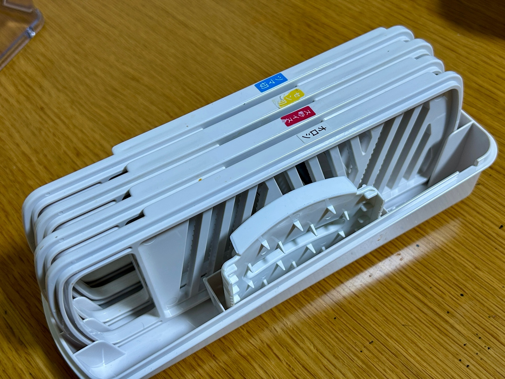
自社の商品や、取り扱い商品の写真でも試してみると、営業トークや商品説明文のたたき台になります。
4-6-4
画像認識：おすすめ用法3_画面のスクショで操作を質問
知らない機能やボタンが画面に表示されているとき、スクリーンショットをそのままAIに渡して、操作方法を聞く ワークです。
ExcelやPowerPoint、社内システムなど、どの職種でも使えます。言葉で説明しにくい画面の状況を、画像1枚で伝えられるのが強みです。
ワーク：Excelの「▼」ボタンについて聞く
Excelの画面のスクリーンショットをアップロードして、次のように質問します。
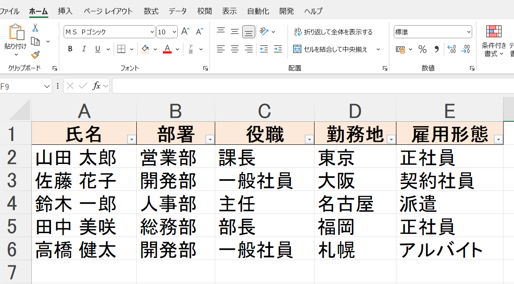
AIの回答例（クリックで開く）
この「▼」はExcelの「フィルター（オートフィルター）」機能のボタンです。クリックすると、その列のデータを条件で絞り込んで表示できます。
設定方法：
1. 表の中のどこかのセルをクリックする
2. 上部メニューの「データ」タブをクリック
3. 「フィルター」ボタンをクリックするとON/OFFが切り替わります
▼をクリックして「昇順」「降順」で並び替えたり、特定の値だけ表示する絞り込みも行えます。
成果例
プロンプトが短くても、AIは画面のどこに何が写っているかを読み取り、操作手順まで答えます。
補足
次のような場面でも使えます。
エラーメッセージが表示されたとき：画面ごと渡して、原因と対処法を聞く
初めて使う社内システムや業務ツール：画面を見せて、操作手順を聞く
ExcelやGoogleスプレッドシートの関数：式が入った画面を渡して、意味や直し方を聞く
画面に社外秘の情報や個人情報が写っていないか、送る前に必ず確認しましょう。
4-6-5
画像認識：おすすめ用法4_売り場をマーケター目線で分析
店頭の陳列写真を渡して、プロのマーケターの視点で分析・提案させる ワークです。
店舗巡回や競合調査、売り場づくりの企画など、営業・企画の仕事にそのまま使えます。推論モードをオンにすると、分析の精度が上がります。
ワーク：商品陳列のコンセプトを分析する
バレンタイン商品の陳列写真をアップロードします。
まずは、シンプルに聞いてみます。
コピー あなたはプロのマーケターです。この商品陳列のコンセプトやターゲット像をできる限り詳細に予測してください。
さらに踏み込んだ分析・提案がほしいときは、手順を明示したプロンプトを使います。
コピー あなたはプロのマーケターです。
以下の手順を1つずつ丁寧に実行してください。
## 手順
1. この商品陳列から予想されるコンセプトやターゲット像をできる限り詳細に分析してください。
2. この商品についての店内放送用のラジオを作ります。原稿案を作成してください。
3. この商品陳列に関する助言をしてください。遠慮はいりません。
成果例
AIは、商品の並べ方・色・POPの文言から、コンセプトやターゲット像を読み解きます。「助言をしてください。遠慮はいりません。」と添えると、改善点を率直に指摘してくれます。
補足
自社や競合の店舗、展示会のブース、チラシ、Webサイトのスクリーンショットでも使えます。次のように、役割設定と目的を変えて試してみましょう。
競合店の写真：強みと弱みを整理させる
自社の売り場：改善案を3つ出させる
展示会のブース：来場者の目を引く工夫を分析させる
分析・考察系は、「あなたは〇〇の専門家です」という役割設定 と組み合わせると、より深い回答が得られます。
撮影が禁止されている場所や、人物が写り込む写真の扱いには注意してください。
4-6-6
画像認識：おすすめ用法5_パンフレットの文字起こし
写真に写っている文字をAIに読み取らせて、テキストにするワークです。チラシ・パンフレット・名刺・手書きメモなど、デジタル化が面倒だった紙の資料を、撮って渡すだけでテキスト化 できます。
総務や営業の、紙資料の整理や入力作業を減らせます。
ワーク：パンフレットを文字起こしする
AIキャンプのパンフレット画像をアップロードして、次のプロンプトを入力します。
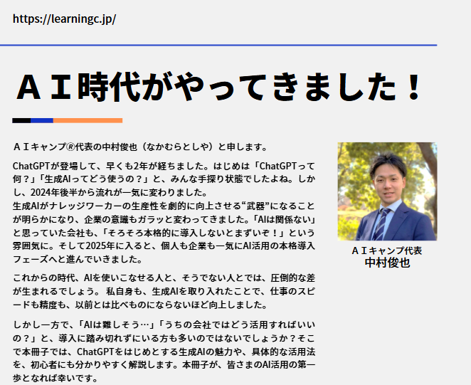
指示を出すと、AIはレイアウトを解釈しながら、見出し・本文・氏名・URLなどを順番にテキスト化します。
成果例
文字だけでなく、見出しや本文の区切りも読み取って、読みやすい順番に並べてくれます。
補足
手書き文字や小さな数字は、読み間違いが起こることがあります。数値や固有名詞は、元の画像と見比べて確認してから使いましょう。
取引先のチラシや資料を文字起こしして、要約や比較表づくりにつなげることもできます。
個人情報が含まれる資料は、AIに送ってよいか、社内ルールを確認してから使いましょう。
外国語で書かれた看板・メニュー・説明書を撮影して、画像を見せるだけで、日本語に翻訳させる ワークです。
翻訳アプリのように、文字を打ち込む必要はありません。写真を渡せば、AIが文字を読み取り、そのまま翻訳まで進めます。海外出張や旅行、外国語の資料を読む場面で役に立ちます。
ワーク：海外の看板を翻訳する
海外のビーチにある注意看板の写真を、そのまま渡します。
画像をアップロードして、次のように聞きます。
コピー この画像に書かれている内容を日本語に翻訳してください。
次に、どんな危険があるのか、私は何をすればいいのかもアドバイスしてください。
成果例
AIの回答例（クリックで開く）
翻訳
警告：離岸流
沖に向かう強い流れがあります。流されて溺れるおそれがあります。
ライフガードの近くで泳いでください。迷ったときは、海に入らないでください。
どんな危険があるか
離岸流は、岸から沖へ向かって流れる強い海水の流れです。波が穏やかに見えても発生することがあり、気づかないうちに沖へ流されるおそれがあります。
何をすればいいか
- ライフガードがいる場所の近くで泳ぐ
- 少しでも不安を感じたら、海に入らない
- 流されたときは、岸に向かって泳がず、岸と平行に泳いで流れから抜ける
「RIP CURRENTS」のように、日常ではなじみのない英単語が出てきても、意味や対処法まで教えてもらえます。
補足
看板の文字が小さい、かすれている、斜めから撮っているときは、読み間違いが起こることがあります。正面から、全体がはっきり写るように撮りましょう。
安全や契約、医薬品の説明など、間違うと困る内容は、AIの翻訳だけに頼らず、現地の人や専門家にも確認しましょう。
4-6-8
画像認識×Excel化：表画像をExcel化
紙の帳票や数値表を撮影して、表の構造ごとテーブル形式にして出力させる ワークです。
見積書・納品書・請求書・現場の数値シートなど、手入力していた表を、ExcelやスプレッドシートにコピーできるMarkdownテーブルにできます。総務・経理で特に役に立ちます。
ワーク：表をテーブル形式で出力する
建設現場などで使われる数値シートのような表を、撮影してそのまま渡します。
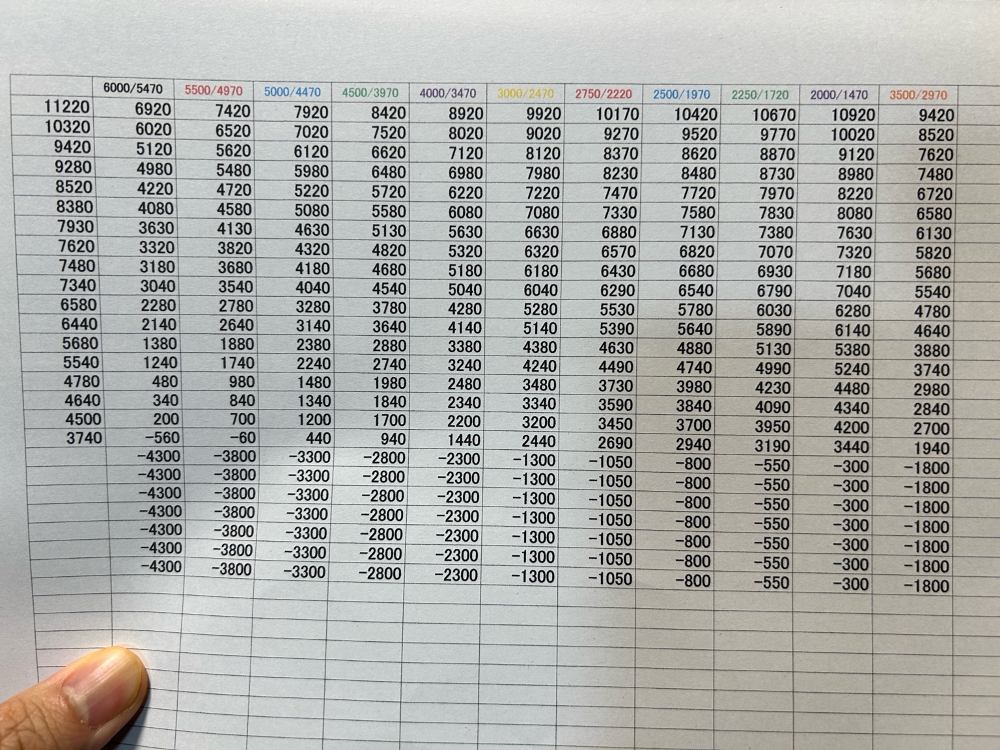
指示を出すと、AIは列・行の構造を読み取り、Markdownテーブルやコピーできるテキストとして出力します。
成果例
出力された表をコピーして、ExcelやGoogleスプレッドシートに貼り付けてみましょう。
補足
次の指示を足すと、使いやすくなります。
「CSV形式で出力して」
「合計欄の計算が合っているか確認して」
手書き文字や小さな数字は、読み間違いが起こることがあります。金額や数量は、元の画像と見比べて確認してから使いましょう。
帳票に取引先名や金額が入っている場合は、AIへ送ってよいか、社内ルールを確認してから使いましょう。
4-6-9
画像認識×データ分析：領収書とExcelの正誤判定
領収書やレシートの写真と、経費精算表のExcelをAIに見せて、金額や日付が一致しているかを照合させる ワークです。
経費精算の月末チェックでは、目視で1枚ずつ見比べるのが大変です。桁の入れ替わりのような入力ミスは、特に見落としやすいところです。AIに下見をしてもらえば、確認の手間をぐっと減らせます。
ワーク：領収書3枚と経費精算表を照合する
次の素材を使います。レシート・領収書は、すべて架空のものです。
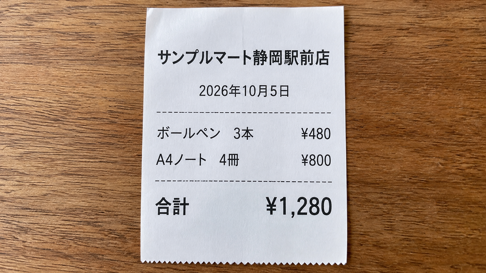
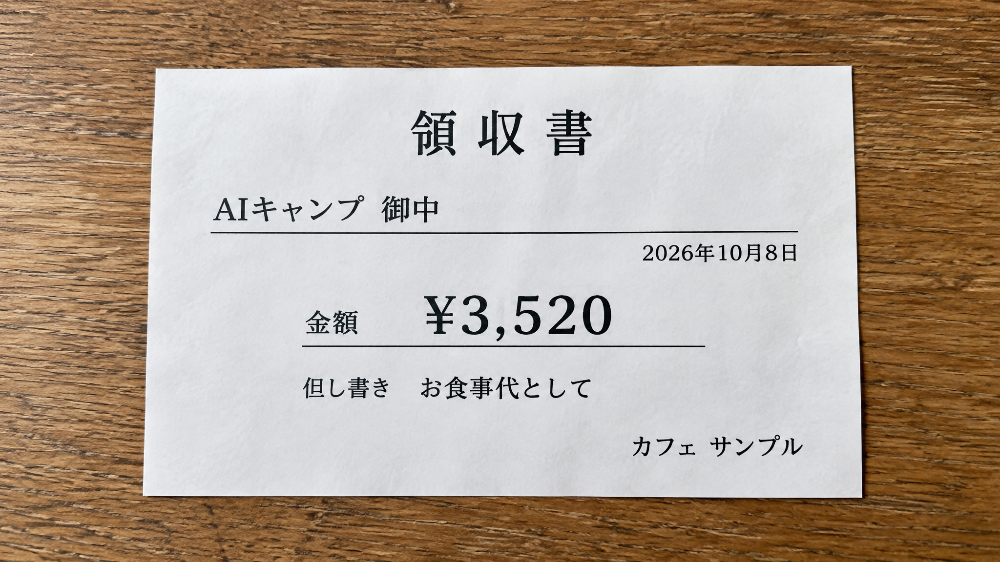
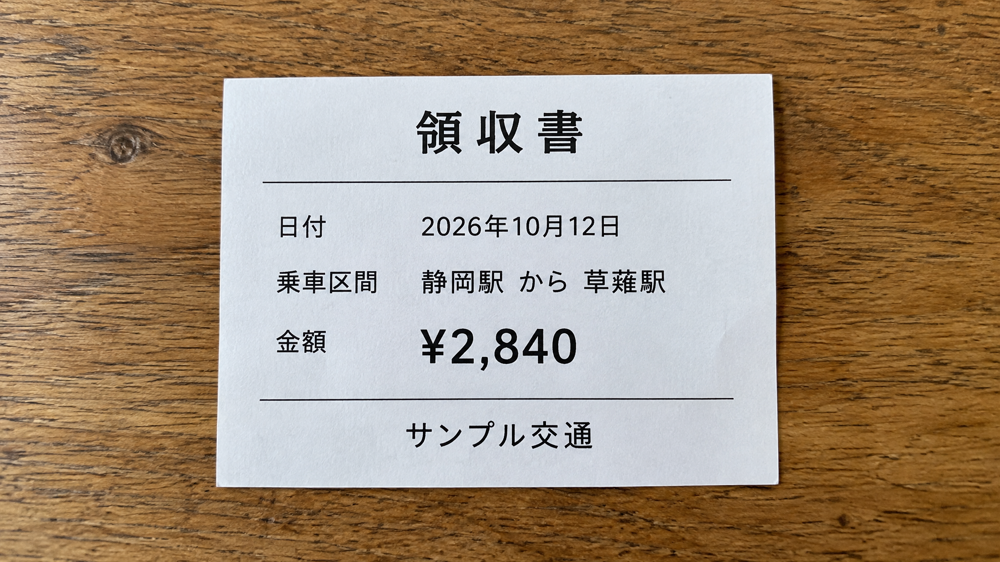
経費精算表は、こちらのExcelです。
4-6-9_expenses.xlsx
領収書の画像3枚とExcelファイルを、まとめてAIにアップロードして、次のように聞きます。
コピー 添付の領収書・レシートの画像3枚と、経費精算表のExcelを照合してください。間違いがあれば教えてください。
成果例
AIは、画像の文字とExcelの値を1行ずつ突き合わせて、食い違いを指摘してくれます。今回の間違いは1か所だけです。AIの答えと見比べて、答え合わせをしてみましょう。
答え：間違っていた部分を見る
No.2（カフェ サンプル）の金額が一致していません。
領収書：3,520円
Excel：3,250円（下2桁の「52」と「25」が入れ替わっています）
この入力ミスの影響で、合計金額もずれています。
Excelの合計：7,370円
正しい合計：7,640円
4-6-10
画像認識×検索：名刺から人物の調査レポートを作る
名刺の画像を渡して、文字起こしからWeb検索、分析レポートの作成まで を一気に進めるワークです。画像認識と検索の合わせ技を体験できます。
ワーク：名刺から人物分析レポートを作る
サンプルとして、中村の名刺画像を用意しています。手元の名刺やパンフレットをスマホやPCで撮影して使ってもかまいません。
コピー 添付の名刺画像の情報を文字起こししてください。次に、Web検索を用いて、この企業や人物について簡単な分析レポートを作成してください。
うまくいくと、文字起こしと検索が続けて動きます。複数の機能をつなげて使う流れを体験してみましょう。
名刺には個人情報が含まれます。実在の人物を調べるときは、目的を確認してから使いましょう。
4-6-11
画像認識×Python：食事の栄養バランスを計算する
食事の写真を1枚渡して、料理の特定からカロリー・PFCバランスの計算、食事改善のアドバイスまでをAIに任せるワークです。
狙いは、画像認識・推論・Python実行が連携する 流れを体感することです。減量中のように、目標とするPFCバランス（タンパク質・脂質・炭水化物の比率）がある場面を想定します。
ワーク：食事画像からPFCバランスを分析する
食事の写真をアップロードして、次のプロンプトを入力します。推論モードをオンにすると、精度が上がります。
コピー あなたは優秀な栄養管理士です。以下の手順を実行してください。
## 手順
1. 添付の食事画像を目視してどのようなメニューがあるか整理してください
2. Pythonを使用し、カロリーとPFCバランスを計算してください。
3. 以下の形式でテーブル形式にしてください。なお私は減量中なので、タンパク質多めの食事を意識しています。
### 出力形式
| 項目 | 理想値 | 分析値 | 誤差 |
|------|--------|--------|------|
| P（タンパク質） | 25% | | |
| F（Fat） | 20% | | |
| C（Carbohydrate） | 55% | | |
4. 私が希望するPFCバランスを達成できているか助言してください。過不足がある場合は、どんな食事メニューに改善すべきかアドバイスもください。
補足
料理の量や調理法は写真から正確には分かりません。数値は概算として扱い、食事の傾向をつかみ、改善のヒントを得る ために使います。病気の治療中や厳密な栄養管理が必要な場合は、医師や管理栄養士に相談してください。
4-6-12
画像認識のおまけ：物体・場所の識別（料理・場所）
画像をアップロードして「これなに？」「ここどこ？」と聞くだけのワークです。料理と場所の2種類で試します。
狙いは、短いプロンプトでも画像の内容を的確に識別できる ことを体感することです。
ワーク①：料理の名前を聞いてみる
料理の画像をアップロードして、シンプルに質問してみましょう。
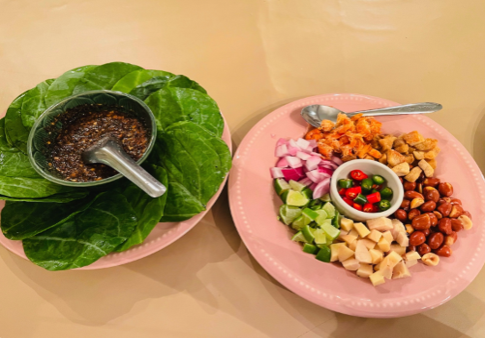
AIの回答例（クリックで開く）
タイ料理の「ミャンカム（เมี่ยงคำ）」です。ベテルの葉の上に、ナッツ・乾燥エビ・ショウガ・ライム・唐辛子などの具材をのせ、甘辛いタレをかけて包んで食べる前菜料理です。
ワーク②：場所を当ててみる
続いて、場所の写真でも試します。
AIの回答例（クリックで開く）
関西国際空港と本土を結ぶ「関西国際空港連絡橋（スカイゲートブリッジR）」上から撮影した写真と思われます。海上に架かった橋の道路と、遠景に空港島の施設が見えることが判断の根拠です。
4-6-13
画像認識のおまけ：問題・分析・考察系（化学式・血液型・炎色反応・マンガ）
問題やクイズが書かれた画像を解かせたり、写真を渡して「考察して」と依頼したりするワークです。化学式の正誤判定、血液型の遺伝問題、理科の実験、マンガの1シーンの4種類で試します。
狙いは、専門知識がなくても、画像の意図・背景・構造を読み解かせられる ことを体感することです。
ワーク①：化学式の正誤を判定させる
この画像には、化学式と物質名の組み合わせが4つ書かれています。一部は意図的に間違えてあります。
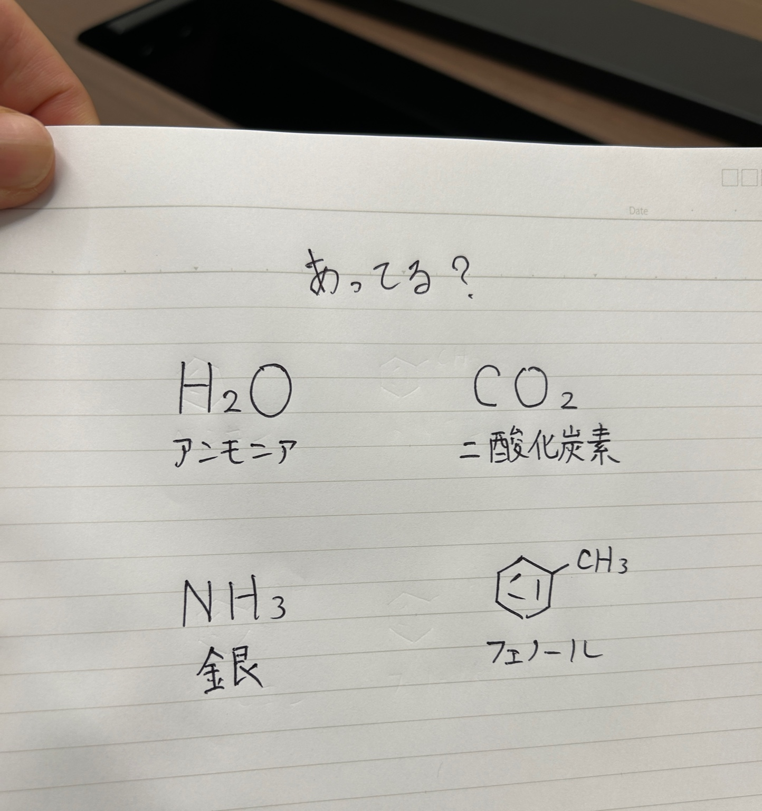
画像に「あってる？」と書かれているので、プロンプトは空欄でも送れます。確実にしたいなら、次の一言を添えます。
AIの回答例（クリックで開く）
4つの組み合わせを確認します。
H₂O → 「アンモニア」とありますが、正しくは「水」です。アンモニアは NH₃ です。
CO₂ → 「二酸化炭素」は正解です。
NH₃ → 「金銀」とありますが、正しくは「アンモニア」です。
ベンゼン環に CH₃ → 「フェノール」とありますが、正しくは「トルエン」です。フェノールはベンゼン環に OH 基が結合した構造です。
正解は CO₂ = 二酸化炭素 の1つだけです。
ワーク②：高校1年レベルの理科問題（血液型の遺伝）を解かせる
元高校教師の中村が自作した問題です。推論モデルを使うと解けます。2025年4月に、AIがこの問題を解けるようになりました。
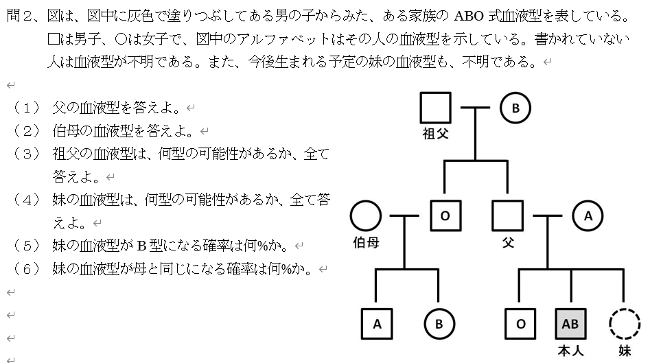
模範解答（クリックで開く）
（1）B
（2）AB
（3）A・B・Oいずれか
（4）A・B・AB・O全ての可能性がある
（5）25%
（6）25%
AIの回答を、上の模範解答と照らし合わせて確認しましょう。難しい問題ほど、答えがもっともらしくても誤っていることがあります。
ワーク③：理科の実験写真を考察させる
これは中村が高校教師時代に授業で行った炎色反応の実験写真です。
コピー 私は高校1年生です。この科学現象を考察して教えてください。
AIは炎の色と元素の対応関係を読み取り、炎色反応の原理・各元素の特徴・実験のポイントなどを分かりやすく解説します。
ワーク④：マンガのシーンを深く考察させる
横山光輝先生のマンガ「三国志」の1シーンです。
コピー 横山三国志のこのシーンがどう面白いのか？3000文字程度で解説してください。
AIはコマ割り・セリフ・登場人物の表情・演出の意図まで読み取り、マンガの面白さを言語化します。
補足
ワーク①②：採点や学習に使うときは、正解を別に確認する習慣が大切です。
ワーク③：写真の現象を科学的に解説させる使い方は、教育・研修・自己学習に使えます。
ワーク④：AIが視覚情報と文脈を組み合わせて解釈していることが分かります。
分析・考察系は、「あなたは〇〇の専門家です」という役割設定 と組み合わせると、より深い回答が得られます。
4-6-14
画像認識のおまけ：クリエイティブ系（物語・JSON化・図解のブログ化）
写真を「分析する」だけでなく、物語・データ・ブログ記事に変換する ワークです。物語、JSON、ブログの3種類で試します。
狙いは、同じ画像でも、プロンプト次第でまったく異なるアウトプットになる ことを体感することです。
ワーク①：写真に物語とナレーションを付ける
中村が子どもとプラレールとシルバニアファミリーで遊んでいたときの写真です。
コピー このシーンに2,000文字程度の、楽しくワクワクするようなナレーションとセリフを付けて
AIはおもちゃのキャラクターや情景を読み取り、登場人物のセリフと地の文を交えた物語を生成します。
ワーク②：牛乳パックの栄養成分をJSON化する
牛乳パックの側面を撮影して渡します。
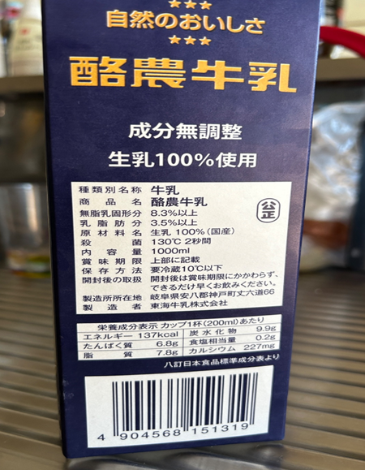
指示を出すと、AIはラベルの文字を読み取り、JSON形式に整形して出力します。JSONとは、コンピュータが扱いやすいデータの書き方の1つです。商品ラベルや仕様書をデータ化したいときに使えます。
ワーク③：図解をブログ記事にする
中村の著書に掲載されている図解のページです。
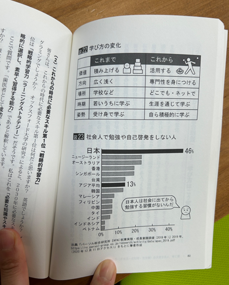
コピー この2つの図解を分析し、詳細に解説したブログを作成してください
AIは図の内容・数値・比較を読み取り、読み応えのある解説ブログを生成します。資料の図解を、社内共有文や広報記事にしたいときにも使えます。
ここでは、音声や動画の分析 について紹介します。
音声分析は、MP3などの音声ファイルをAIに認識・理解させる機能です。動画分析は、MP4などの動画が対象で、「音声分析＋画像分析」の合わせ技にあたります。
チャット型AIで音声・動画分析をするなら、ChatGPT・Claude・CopilotよりもGeminiが得意です。まずはGeminiから始めましょう。さらに、Manus・Claude Code・Cursorなどのエージェントツールを使うと、動画を繰り返し確認したり、タイムスタンプが正しいか検証したり できるため、精度が上がります。
どこまで分析できているか？
音声や動画から読み取れる内容は、次のとおりです。
実際の映像（画面に映るもの全般）
テキストの文字起こし
ナレーション（音声）
カメラアングル
話者の識別（複数人の会話でも、誰が話しているかを区別できる）
これらをまとめて認識できるため、細部まで分析できます。
具体的にできること
動画から、文字起こし・要約・タイムスタンプ作成・マニュアル化まで一気にできます。
操作画面や作業風景を動画で共有するだけで、手順書を作れます 。研修、業務の引き継ぎ、現場マニュアルに使えます。
音声ファイルだけでも、会議・セミナー・インタビューの文字起こしから、議事録・要約・FAQ化まで続けて行えます。
補足
音声や動画には、顧客や社員の声・顔・社内の画面が含まれることがあります。AIサービスにアップロードする前に、社内ルールや本人の同意を確認してください。
参考動画
4-7-2
音声分析：音声ファイルの文字起こし_話者識別つき
音声ファイルをAIに読み込ませて、話した内容をテキストに変換するワークです。会議・セミナー・インタビューの音声を、話者ごとに分けて文字起こしする 流れを試します。手作業なら1時間以上かかる作業が、数分で終わります。
準備
サンプル音声、または文字起こししたい音声ファイル（MP3・M4A・WAVなど）を用意して、Geminiなどにアップロードします。
サンプル音声：架空の2人が打ち合わせをしている会話です。
音声を再生 ワーク
AIキャンプおすすめの、汎用的な文字起こしプロンプトです。校正や要約はせず、後から人間が編集できる生データ として取り出します。話者が複数人いれば、話者ごとに分けて出力します。聞き取れない部分は無理に埋めず、[聞き取れず] と明示します。
コピー 添付した音声ファイルを読み込んでください。そのまま文字起こししてください。次の条件を必ず守ってください。
## 目的
後で人間が校正や要約をするための、「生の文字起こしデータ」を作成する。
## 条件
・コードブロックで出力
・音声内容を逐語的に文字起こしする
・話者が複数人いる場合は、話者ごとに識別して表記する
・話者ごとに改行する
・校正・言い換え・自然な文章への書き換えはしない。文法ミスや言い間違い、言い直しもそのまま書く。「えー」「あの」「えっと」「そのー」などのフィラーも、聞き取れる範囲で残す。
・内容の要約・補足・解釈を加えない
・聞き取れない部分は推測せず、[聞き取れず] のように角括弧で明示する。
## 出力例
鈴木：えーと、あ、では、準備の分担ですが、バナー制作の方をお願いできる
田中：えーはい、大丈夫ですよ。えっと、5月15日までに仕上げます
鈴木：おっ、ありがと～。助かるよ
話者ごとに分かれた文字起こしが出力されます。
続けて議事録にまとめる
文字起こしが取れたら、同じチャットで続けて依頼できます。
コピー 上記の文字起こしをもとに、議事録の形式にまとめてください。
・話題の流れ（3行以内）
・決定事項
・宿題・次のアクション（誰が・何を・いつまで）
話者が分かっているので、誰が何を約束したかまで議事録にできます 。
補足
音質が悪いときや声が重なるときは、聞き取れない部分を[聞き取れず]と書く指示が効きます。
話者が3人以上のときや声質が似ているときは、取り違えることがあります。最初は短い音声で精度を確認しましょう。
専門用語が多いときは、業種や文脈をプロンプトで補足しましょう。
長い音声（30分以上）は、NotebookLM に読み込ませると安定します。
4-7-3
音声分析：タイムスタンプとSRTファイルの作成_精度の限界と対処
動画ファイルをGeminiなどにアップするだけで、タイムスタンプやSRT字幕ファイル を生成できます。YouTubeの運営や動画編集で、面倒な作業を任せられます。
ただし、チャット型AIが出す時刻は「AIの推測」なので、秒数にズレが出ます。より正確にしたい場合は、あとで紹介するエージェントツールやWhisperを使いましょう。
ワーク
タイムスタンプや字幕を付けたい動画ファイルを用意して、Geminiなどにアップロードします。ほかのワークのサンプル動画でも試せます。
例1. タイムスタンプを作成する
コピー 以下の見本に従ってタイムスタンプを作成してください。
## 見本
0:00 はじめに
1:30 {テーマ}の説明
3:00 デモ
5:00 まとめ
精度は感覚的に80点程度です。細かい秒数には誤差が出ますが、全体の流れは正確なので、確認と微修正だけで使えるタイムスタンプが完成 します。
例2. SRTファイルを作成する
SRTとは「SubRip Subtitle」の略で、動画に字幕を付けるための標準的なファイル形式です。YouTubeやVimeoにアップロードすると、字幕として表示できます。
コピー あなたはプロの字幕（テロップ）制作者です。次の動画/音声からSRT字幕を作ってください。
## 条件
・先頭の字幕開始は「最初に発話が始まった実時間」に合わせる。
・連番インデックスは1から開始し、欠番なしで+1ずつ増加する。
・1キュー最大2行。1行あたり全角42字目安で自然に改行。
・フィラーは削除する。「えー」「あの」「で」「ま」「はい」「その」「まあ」「えっと」「なんか」「うーん」など。
・文末の「、」や「。」は不要。
## キーワード
AIキャンプ、中村俊也、あおいさん、OpenAI、ChatGPT、Gemini、NotebookLM、Google Workspace、Microsoft、365 Copilot、Perplexity、Gamma AI、Napkin AI、Dify、n8n、コンテキスト、RAG
## 出力形式
・重要：出力はコードブロックとする。
・コードブロックの中身はSRT本文のみとし、説明文は書かない。
## 見本
1
00:00:01,500 --> 00:00:04,500
こんにちは、AIキャンプの中村です
2
00:00:05,000 --> 00:00:08,200
今日は、AI研修の様子を紹介します
精度の課題
2026年10月時点では、ChatGPTやGeminiのチャットで作った時刻は、秒数のズレが残ります。動画が長いほど、ズレは大きくなります。
本番の字幕や長い動画は、Whisperなどの文字起こし専用AIで時刻を実測 するのが確実です。エージェントツールに頼めば、実行までまかせられます。手順は、別の章で紹介します。
参考
YouTubeのURLをAIに渡して、動画のナレーションや会話をテキストに変換するワークです。音声ファイルをダウンロードしなくても、リンク1本で文字起こしできる ことを体験します。公開済みの研修動画やセミナー録画をテキスト化して、要約・議事録・ブログ記事へつなげられます。
なお、2026年10月時点で、URLだけで動画を読み込めるのはGeminiのチャットだけです。ChatGPT・Claude・Copilotでは、この方法は使えません。
ワーク
文字起こししたいYouTube動画のURLを用意して、Geminiのチャット画面に貼り付けます。
コピー 以下の動画の文字起こし文章を取得してください。
校正・要約はせず、そのまま文字起こしすること。
https://youtu.be/r1kI-fsLoX0
動画の内容が文字起こしされます。続けて「要点3つ＋詳細メモの形式にまとめて」と頼めば、そのまま整形まで進められます。
別の方法：YouTube拡張機能で文字起こし
Geminiを使えないときは、ブラウザの拡張機能でも文字起こしできます。
拡張機能を使った文字起こしの手順
Step 1. 拡張機能を追加する（ChromeとEdgeのどちらでも使えます）
YouTube™ の ChatGPT - 要約・文字起こし
インストール後に広告が表示されることがありますが、閉じて問題ありません。
Safariでは利用できません。
Step 2. YouTubeで動画を再生する
サンプル動画：https://youtu.be/r1kI-fsLoX0
Step 3. 文字起こしを実行する
拡張機能のボタンを押して、文字起こしテキストを取得します。
Step 4. プロンプトと一緒にChatGPTに入力する
取得した文字起こし文章を、以下のプロンプトの「入力文」に貼り付けて実行します。
コピー コピー 以下の動画の文字起こし文章を校正してください。
## 校正ルール
1. 不要なメタ情報（タイムスタンプ、音楽表記など）の除去。
2. 「えー」「あの」などの不要な言葉の削除。
3. 誤字・脱字の修正。
4. 話者の口調やトンマナ、キャッチーな話し方は校正せず、そのままにする。
5. 話者のトークを尊重し、必要以上に削除しない。
6. 重要なキーワードを正しい表記にする。（例：ChatGPT、生成AI、Midjourney、Claude、Gemini、AIあおいさん、AIキャンプ、中村俊也）
7. 改行はしない。
## 入力文
（ここに文字起こし文章を貼り付ける）
補足
動画に字幕（CC）が付いていると、Geminiが字幕も参考にするため、精度が上がりやすくなります。
音質が悪い動画やBGMが大きい動画は、「聞き取れない箇所は[聞き取り不明]と記載してください」と伝えましょう。
専門用語が多いときは、業種や文脈をプロンプトで補足しましょう。
限定公開・非公開の動画は、URLだけでは読み込めないことがあります。その場合は、動画や音声のファイルをアップロードしましょう。
他人の動画は、著作権や利用規約に注意しましょう。学習ノートや社内リサーチなど、自分で使う範囲にとどめるのが安全です。
4-7-5
動画分析：動画を分析・実況・ダメ出しをさせる
動画をGeminiに渡して、詳細分析・実況・撮影のダメ出し の3つを順番に試すワークです。
同じ動画でも、プロンプトを変えるだけで分析の切り口が変わることを体験します。
ワーク
サンプル動画、または自分で撮影した短い動画（10〜30秒程度）を用意して、Geminiにアップロードします。
サンプル動画：中村が子どもたちとプラレールで遊んでいるときの動画です。
例1. 動画を詳細に分析する
コピー この動画をできる限り詳細に、3000文字程度で分析してください。
細かい物体・カメラアングル・音声まで、映像の細部を拾った分析 が返ってきます。
例2. 動画を熱く実況する
分析のあとは、追加のプロンプトを送るだけで続けられます。次は実況です。
コピー この動画を3000文字程度で熱く実況してください。
「カーブに差し掛かりました。この絶妙なコーナリング…」のような臨場感のあるテキストが生成されます。
例3. 続けてダメ出しをさせる
最後は、同じ動画にダメ出しをさせます。
コピー あなたは愛が溢れるカメラマンで動画クリエイターです。
この動画撮影にめちゃくちゃ厳しく3000文字程度でダメ出しをしてください。
「なぜもっと地面に這いつくばらないんだ」「このドクターイエローに対して不誠実じゃないか」のような愛のある辛口フィードバックが返ってきます。映像の内容を読み取ったうえで生成している ことが分かります。
参考
本や印刷物をスマホで撮影した動画をAIに渡して、映像に映ったテキストを文字起こしさせるワークです。ページをめくりながら撮影するだけなので、スキャナーもOCRソフトも不要 です。
AIキャンプのハンドブックで検証したところ、感覚的に90点程度の精度で文字起こしできました。
ワーク
サンプル動画、または紙の資料をスマホで撮影した動画を用意して、Geminiなどにアップロードします。
サンプル動画：英語の記事を読んでいるPC画面の映像です。
コピー この動画に映っているテキストを文字起こししてください。翻訳もして、英語と日本語をそれぞれコードブロックで出力してください。
英語原文と日本語訳が並んで出力され、英語資料の内容を短時間でつかめます。
補足
最上位モデルを使うと、精度が上がります。
一部に誤りは残ります。90点の素材を素早く作る ことを目標にして、重要な箇所は原本と照合しましょう。
暗い場所や手ブレの大きい動画は、精度が下がります。明るい場所で、ゆっくり撮影しましょう。
文字起こし後に「要約して」「FAQ形式にまとめて」と続ければ、社内共有用のメモも作れます。
参考
4-7-7
動画分析：PC操作画面からマニュアルを作る（ナレッジ構築）
2026年に入り、AIの動画分析とマニュアル作成を組み合わせた活用が、大きく広がっています。
2023年頃のChatGPTやGeminiは、容量の大きな動画の分析が難しく、実用には至りませんでした。しかし2025年以降、動画分析の能力が大きく向上し、動画をアップするだけでマニュアルが作れるようになりました。
やり方はシンプルです。PCの操作画面を録画し、AIに渡して「マニュアルにして」と伝えます。 言葉にしにくい作業手順も、マウスカーソルの動きや声での説明まで含めて、マニュアル化できます。
背景：大手AI企業も「PC録画のスキル化」に注力
「動画分析×マニュアル化」を牽引しているのは、OpenAI、Anthropic、Microsoftといった大手AI企業です。
2026年6月、OpenAIのCodexが、PC作業を録画するだけで手順をスキル化できる「Record & Replay」を公開しました。同年7月には、AnthropicのClaude Coworkが「Record a skill」を、Microsoftが画面録画とナレーションからスキルを生成する「Skill Recorder」（オープンソース）を公開しています。GoogleもChrome向けの「Skills in Chrome」など、ワークフローの再利用に取り組んでいます。PCの画面作業を認識してマニュアル化する流れ は、大手各社が揃って力を入れる分野です。
なぜ「動画からマニュアル化」が重要なのか？
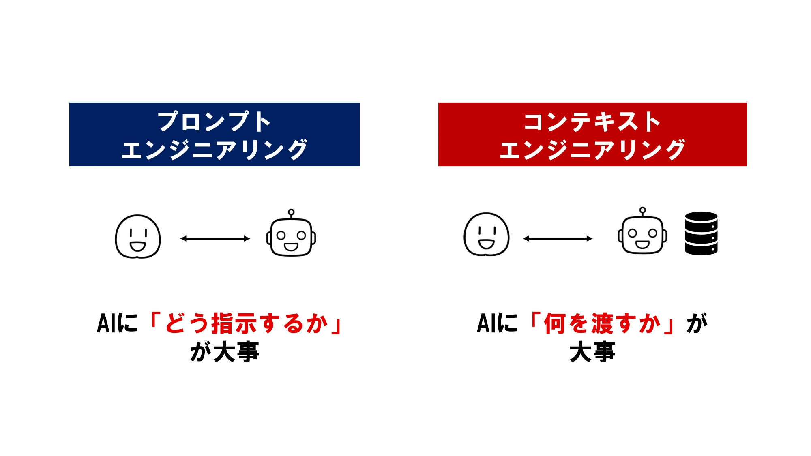
AIを使いこなすには、業務の背景知識（コンテキスト）を渡すことが欠かせないからです。
ChatGPTの登場時は、指示の出し方を磨く「プロンプトエンジニアリング」が話題でした。2026年頃からは、コンテキストエンジニアリング が注目されています。「いかに上手な指示を出すか」ではなく、「いかに正しい背景情報を事前に渡しておくか」という考え方です。
そこで必要になるのが、業務の手順書やマニュアルです。仕事のやり方を渡せば、エージェントは人間と同じようにパソコン作業ができるところまで来ています。
ところが現場では、普段の作業がマニュアル化されていません。作るのは面倒ですし、慣れた人ほど「体が覚えている」ため言語化が難しいからです。そこに登場したのが、録画するだけでマニュアルができる仕組みです。
今回のワークは、単なるマニュアル作りではありません。人間がやっていた仕事をAIに任せるための準備 です。
ワーク：「PC録画→Geminiでマニュアル化」を体験する
動画分析に強いGeminiを使うので、無料版でも試せます。
手順1：PC画面を録画する
WindowsやMacの標準機能、またはOBSなどの録画ソフトを使います。まずは、数十秒から1分程度の短い動画を録画しましょう。
WindowsのPCで画面録画する方法
録画したいアプリやブラウザの画面を開きます。
キーボードで Windowsキー + Shift + R を同時に押すと、画面が暗くなり録画エリアの選択が始まります（Windows 11標準の「Snipping Tool」機能です）。
マウスで録画したい範囲をドラッグして囲み、「開始」を押して操作を行います。
「停止」を押すと録画が終わり、動画は「ビデオ」フォルダ内の「画面録画」に保存されます。
MacのPCで画面録画する方法
キーボードで Shift + Command + 5 を同時に押します。
画面下にメニューが出るので、「画面全体を収録」または「選択部分を収録」を選びます。
「収録」ボタンを押して操作を行います。
画面上部のメニューバーにある停止ボタン（■）を押すと録画が終わり、動画はデスクトップに保存されます。
録画が難しい場合は、次のサンプル動画を使ってください。CanvaでPC操作をしている様子を録画したものです。
手順2：動画をGeminiに読み込ませてマニュアル化する
録画した動画をGeminiにアップロードし、次のプロンプトを入力します。
コピー 添付した「PC作業の録画」の動画データを読み込んでください。
## 指示
動画を解析し、第三者がこの作業を完全に再現できる業務マニュアルを作成してください。
## 出力構成
以下の構成に従い、Markdown形式のコードブロックで出力してください。
1. 作業の目的と概要: 一連の作業のゴール
2. 使用するツール: 使用するアプリケーションやWebサービス名
3. ステップバイステップの手順：
・具体的な操作（例：「{タブ名}タブを開く」「右上の『保存』ボタンをクリックする」など、視覚的に迷わないレベルで具体的に）
・その結果起こる画面の変化
4. 注意点: 間違えやすいポイントや待機時間など
## 制約事項
・操作の試行錯誤やミス（クリックした後に戻るなど）が含まれている場合、それらは省き、最終的な「正しい最短手順」のみを抽出してください。
・専門用語は正確に記述し、初心者でも直感的に理解できる簡潔な表現を心がけてください。
・マークダウンの太字記法（**）は使わない。
・「動画内では〜」「録画では〜」など、元データを参照する表現は使わず、マニュアル単体で完結する文体にする。
次のようなマニュアルが完成します。
完成例
コピー コピー ## 業務マニュアル：画像の背景透過処理
### 1. 作業の目的と概要
Canvaを使用して画像ファイルの背景を自動で削除（透過）し、背景が透明な画像ファイルとしてパソコンに保存（ダウンロード）することを目的とします。
### 2. 使用するツール
- Webブラウザ
- Canva
- ファイル管理ソフト
### 3. ステップバイステップの手順
#### ステップ1: Canvaで編集キャンバスを開く
- 操作: ブラウザでCanvaのホーム画面を開き、作成したいデザインサイズをクリックします。
- 結果: 新しいタブが開き、白紙のキャンバス（編集画面）が表示されます。
#### ステップ2: キャンバスに画像を配置する
- 操作: PCのフォルダを開き、対象の画像ファイルをCanvaのキャンバス中央へ直接ドラッグ＆ドロップします。
- 結果: キャンバス上に画像が読み込まれ、配置されます。
#### ステップ3: 背景を透過する
- 操作: 画像が選択された状態（画像の周囲に紫色の枠線が出ている状態）で、画面上部のメニューバーにある「背景透過」ボタンをクリックします。
- 結果: 処理中のアニメーションが表示された後、画像の背景部分が消去されます。
#### ステップ4: 透過した画像をダウンロードする
- 操作:
1. 画面左上の「ファイル」メニューをクリックします。
2. 表示された一覧から「ダウンロード」をクリックします。
3. 画面右側に開いたパネルで、ファイルの種類を「PNG」に設定します。
4. 一番下の「ダウンロード」ボタンをクリックします。
- 結果: 画面右下に進行状況が表示され、完了するとパソコン内に背景透過済みの画像ファイルが保存されます。
### 4. 注意点
- 処理の待機時間: 「背景透過」ボタンを押した後、システムの処理完了までに数秒のタイムラグが発生します。この間は他の操作をせずにお待ちください。
- ファイル形式の指定: 背景が透明な状態を維持して保存するため、ダウンロード時のファイル形式は必ず「PNG」を指定してください。
- ウィンドウの配置: スムーズにドラッグ＆ドロップを行うため、あらかじめWebブラウザと画像が入っているフォルダのウィンドウを重ならないように並べて配置しておくことを推奨します。
まとめ
PC操作を録画してAIに渡すだけで、マニュアルの下書きが数分で完成します。
このマニュアルは、人に教えるためだけのものではありません。AIエージェントに仕事を任せるための業務コンテキスト にもなります。
まずは身近な作業をひとつ録画してみましょう。録画する画面にパスワードや顧客情報が映り込まないよう、注意してください。
参考
4-7-8
動画分析：作業動画からマニュアルを作る
現場での手作業を動画で撮影してGeminiに渡し、映像と音声の説明の両方からマニュアルを作らせるワークです。工場・店舗・施設など、現場の作業をそのままマニュアル化 する流れを試します。
AIが映像と音声を同時に理解していることを体験します。ラジコンカーの電池交換と操作の動画（約1分30秒）で検証したところ、手順・必要な道具・音声での説明・話者名まで認識できました。
ワーク
マニュアル化したい作業をスマホや固定カメラで撮影して、Geminiなどにアップロードします。作業しながら音声で手順を説明すると、より詳細なマニュアルになります。動画は1〜2分程度が目安です。
サンプル動画：中村がラジコンカーに電池を入れて操作しているときの動画です。
例1. 作業動画からマニュアルを作る
コピー この動画から解説マニュアルを作成してください。
話者がいる場合は、話者名も明記してください。
準備するもの・手順・操作方法・注意点が自動でまとまり、音声から話者名も認識されます。
成果例
Geminiが生成したラジコンカーの電池交換・操作マニュアルは、次のとおりです。
準備するもの：ラジコン本体・リモコン・単三電池4本・プラスドライバー
電池カバーの開け方・電池の向き・ネジの締め方
電源スイッチの場所と入れ方
リモコンの前後左右の操作方法
「操作デモの解説はAIキャンプ代表の中村が行っています」（音声から話者名を認識）
「動画には映っていないが、リモコン用の電池も別途必要になる場合があります」という補足まで付き、映像に映っていない点にも気づいてくれました 。
補足
音声なしでも手順は認識できますが、音声の説明があると精度・詳細度が上がります。
話者が複数いるときは、「話者ごとに発言を区別してください」と追加で指示しましょう。
出力形式の指定や注意点セクションの追加など、プロンプトを練り込むと、実用的なマニュアルになります。
参考
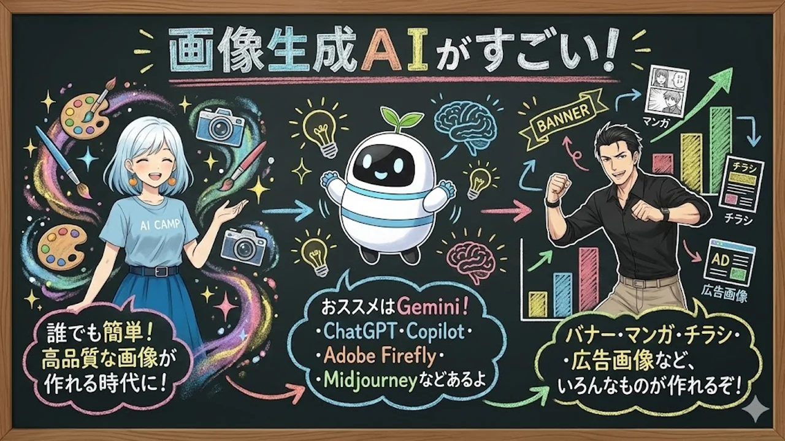
「こんなイメージなんだけど、うまく言葉にできない」――そのもどかしさを、数秒で画像に変えられるのが画像生成AIです。バナー・マンガ・チラシ・広告画像など、いろいろなものが作れます。
画像生成では、画風や縦横比を指定したり、追加指示で気になる部分だけ直したり、プロンプトをAIに作ってもらったりできます。1枚の画像に4パターンを並べれば、サムネイル案の同時作成もできます。
元の画像を添付して新しい画像を作る方法は、「i2i（アイ・トゥ・アイ）」と呼びます。写真のアニメ化、人物や背景の変更、解説の書き込みなど、使い道が大きく広がります。
さらに、検索結果をもとにした旅のしおり、製品イメージからのCAD風の三面図、Canvaの「Magic Layers」で文字を整えるチラシづくりなど、高度な使い方もあります。
くわしくは「AIキャンプ画像ギャラリー」へ
AIキャンプでは、具体的なプロンプト、作成例、元画像との比較、解説を、90章の「AIキャンプ画像ギャラリー」で紹介しています。気になる画像を見つけて、プロンプトをコピーして試してみてください。ページ上部のボタンからも開けます。
▶ AIキャンプ画像ギャラリーを開く
「こんな声で読み上げてほしい」「この場面を動画にしたい」――そんな頭の中のイメージを、文章で伝えるだけで音声や動画に変えられるのが、音声生成AIと動画生成AIです。ナレーション・BGM・広告動画・解説アニメ・アバター動画など、いろいろなものが作れます。
音声の分野では、文章の読み上げ、自分の声に似せたボイスクローン、プロンプトからの作曲などができます。動画の分野では、テキストや画像から数秒〜十数秒の動画を作ったり、セリフやBGM付きの動画を一度に生成したりできます。
画像生成と同じく、プロンプトの書き方しだいで仕上がりが大きく変わります。まずは短いものから試して、気になる部分だけ追加指示で直していくのがおすすめです。
くわしくは「AIキャンプAI音声動画ギャラリー」へ
AIキャンプでは、具体的なプロンプト、作成例、元画像、解説を、91章の「AIキャンプAI音声動画ギャラリー」で紹介しています。気になる動画や音声を見つけて、プロンプトをコピーして試してみてください。ページ上部のボタンからも開けます。
▶ AIキャンプAI音声動画ギャラリーを開く
この章でまだ大きく扱っていない応用機能を、ChatGPT・Gemini・Claudeごとに整理します。作業を続ける・共同で作る・外部ツールとつなぐ・定期的に動かす 機能を中心にまとめています。
2026年は、各社とも機能の名前や置き場所がどんどん変わっています。ここに書いたのは2026年10月時点の情報です。実際の画面と違うときは、公式の案内を確認してください。
ChatGPT
Projects：チャット、ファイル、指示文を1つの作業スペースにまとめる機能。毎回同じ前提を説明しなくても、案件別・部署別・業務別に文脈を持たせやすい。研修では「営業資料作成プロジェクト」「社内FAQ作成プロジェクト」のように使える。
ChatGPT Work：接続したアプリ、ファイル、ブラウザを横断して、調査・分析・文書やスライド、スプレッドシート、Webサイトの作成まで進めるエージェント機能。以前の「ChatGPT agent」に代わる、複数ステップの作業の入口になっている。ログイン、購入、送信など承認が必要な操作では、人間に確認を求める。
Scheduled tasks（スケジュール）：指定した時間にChatGPTへ作業させる機能。専用の「Scheduled」画面で、実行予定の確認、一時停止、編集、削除ができる。朝・昼・夜のような時間帯の指定や、Webや接続アプリの変化を監視して「報告する価値があるときだけ通知する」使い方もできる。Gmailの新着メール、Slackのチャンネル投稿、GitHubのプルリクエストをきっかけに動かす設定もある（プランによる）。毎日の情報をまとめて届ける機能だった「Pulse」は、スケジュール機能に統合された。
Apps：Slack、Google Drive、Gmail、Google Calendar、SharePoint、GitHubなどの外部ツールとつなぐ機能。以前の「Connectors（コネクタ）」が、Appsという名前になった。社内資料や予定、メール、リポジトリの情報を参照しながら回答できる。外部へ書き込む操作の前には確認が入る。権限設定と情報管理の説明が必要。
Canvas：AIと共同で執筆・コーディングする機能。GPT-5.5 Instant と GPT-5.5 Thinking では提供が終了し、執筆やコードはチャットの返答内のブロックで扱う形に変わった。旧モデルでは当面使えるが、いずれ終了する。研修では、Canvasの操作を前提にしない説明にしておくと安全。
Gemini
Canvas：文章、Webページ、インフォグラフィック、クイズ、Audio Overviewなどを作る作業スペース。「作成」メニューから種類を選べる。Webアプリの試作では、Geminiの機能を使ったアプリ、セッションをまたいだデータ保存、複数人でのデータ共有、スマホのホーム画面へのショートカット保存にも対応している。エラーが出たときは、Canvasが自動で直そうとする。
Skills：繰り返し使う指示を保存して、チャットで呼び出す機能。「/」を入力して選ぶほか、プロンプトに合うものをGeminiが自動で使うこともある。複数のSkillを同時に重ねられるので、「文体のSkill」と「ブランドルールのSkill」を組み合わせるような使い方ができる。従来の「Gems」は、個人アカウントで2026年11月17日から順次Skillsへ自動移行される予定で、仕事・学校用アカウントは2027年に続く。移行後はCanvasやDeep Researchなどの組み込みツールをSkillで使えない場合があるため、Gemsを活用している人は事前に確認が必要。
Scheduled actions（スケジュール）：指定した日時や周期でGeminiに作業させる機能。同時に最大10件まで設定できる。毎朝の予定・ToDo・メールのまとめ、週次のアイデア出し、特定テーマの定期チェックなどに向く。結果は配信の直前1時間ほどで準備されるため、株価のように刻々と変わる情報には向かない。Googleアカウントの「アクティビティの保存」がオンである必要がある。個人アカウントには順次提供中。
Notebooks：Gemini内でチャット、ファイル、指示をノートブックとしてまとめる機能。NotebookLMとも連携し、資料を読み込ませて、学習、調査、原稿作成までつなげやすい。
Connected apps：Gmail、Google Calendar、Google DriveなどのGoogleサービスや、外部アプリとつないで使う機能。Google Workspaceを使う会社では、予定・メール・資料をまたいだ活用例を作りやすい。
Gemini Spark（Task）：Geminiのバックグラウンドで動くパーソナルエージェント。時刻ではなく、状況に応じて動かしたいときに使う。詳しくは、Gemini Sparkの章を参照。
Claude
Artifacts：Claudeとの会話から作った成果物を、会話の横に表示して編集・共有する機能。文書（Claude Docs）、スライド（Claude Slides）、デザイン（Claude Design）、ダッシュボード、小さなアプリなどを作れる。スライドはPowerPointやPDFで書き出せる。Artifactsの基本はFreeプランを含む全プランで使える。Dashboards、Motionなどは、プランによってベータ版や管理者のオンが必要なものがある。
Cowork（チャットと統合）：2026年9月から、Coworkの機能が通常の会話から使えるようになった。モードを選ばずに、簡単な質問も、レポート・表計算・プレゼンのような大きな作業も頼める。Webやモバイルでも動き、パソコンを閉じても作業が続く。Pro・Maxプランから順次提供されている。
Projects：指示文、ファイル、会話履歴を1つの作業スペースにまとめる機能。クライアント別、テーマ別、制作物別に前提を固定できる。長期案件や繰り返し作業に向いている。
Skills：特定の作業手順、テンプレート、参考ファイルなどをまとめて、Claudeに自動で使わせる機能。PowerPoint、Excel、Word、PDFなどの文書作成・編集や、会社独自の手順を覚えさせる用途に向いている。
Connectors / MCP Apps：Google Drive、Gmail、Calendar、GitHub、Slack、Microsoft 365などの外部ツールとClaudeをつなぐ機能。MCP Appsに対応したツール（Asana、Figma、Canva、Boxなど）は、会話の中でそのまま画面を開いて操作できる。権限と共有範囲の確認が重要。
Claude in Slack：Slack内でClaudeに相談したり、ClaudeにSlackの会話を検索させたりする機能。スレッドで@Claudeを呼ぶと返信案を作り、公開する前に自分で確認・修正できる。Team・Enterpriseプランでは、Slackの会話でClaudeにタグ付けして、作業を任せる「Claude Tag」も使える。
研修で優先して扱いやすい候補
ChatGPT Projects：単発チャットから、継続業務でAIを使う流れへつなげやすい。
ChatGPT / Gemini のスケジュール機能：毎日・毎週の定型業務に直結しやすい。
Gemini Skills：初心者にも「自分専用の専門家を作る」と説明しやすい。Gemsからの切り替え時期なので、最新の案内を確認して使う。
Gemini Canvas：Webページやクイズを、その場で作って共有できる。
Claude Artifacts：その場で動く成果物が見えるので、受講者の体験価値が高い。
注意点
各機能は、プラン・地域・アカウント種別・モデルによって、表示名や利用可否が変わることがあります。
外部ツールと連携するときは、AIが見られる情報の範囲 を必ず確認します。
スケジュール機能は、実行のタイミングや回数に上限があります。ChatGPTは1時間に1回より多くは動かせず、Geminiは同時に10件までです。
参考
ChatGPTやGemini、Claudeなどの主要なAIチャットには、外部ツールとつなぐ仕組み があります。
ツールや時期によって、「アプリ連携」「コネクタ」「プラグイン」と呼び方や機能は変わります。どれも、外部ツールとつながる仕組みだと思ってください。
つなぐと、メールや予定、社内資料をAIが直接読んで答えてくれる ようになります。
ここではChatGPTを例に、Gmail、Googleカレンダー、Outlook、SharePoint、Notion、Slackとつなぐ方法を紹介します。GeminiやClaudeも、操作はほとんど同じです。
設定方法
設定の場所はAIチャットごとに違います。多くの場合、サイドバーや設定画面から接続できます。
つなぎたいサービス（GmailやSlackなど）を探します。
接続を許可します。初回は、接続するアプリ側でも承認が必要です。
チャットで使うときは、次のどちらかで呼び出します。
入力欄の「＋」メニューなどから、そのアプリを選ぶ
プロンプトの先頭に「@Google Calendar」のように、「@」とアプリ名を書く
ワーク
つないだサービスごとに、シンプルなプロンプトで試してみましょう。「@アプリ名」で呼び出し、やりたいことを1行で書くだけ で動きます。
カレンダー連携
打ち合わせの日程を調整するときに使います。「@Google Calendar」で呼び出して期間を伝えると、予定表を見比べなくても空き日程を探してくれます。MicrosoftならOutlookカレンダーでも、同じようにできます。
コピー @Google Calendar
来週平日の空き時間を教えてください。
メール連携
メールを探したいときや、長いやりとりをまとめて把握したいときに使います。「@Gmail」で呼び出して相手や内容を伝えると、複数のメールを横断して要約や分析をしてくれます。MicrosoftならOutlookのメールでも、同じようにできます。
コピー @Gmail
〇〇さんとのメールのやりとりをまとめてください。
社内ストレージ連携
過去の会議資料やマニュアルを探すときに使います。「@Google Drive」で呼び出して探したい資料を伝えると、フォルダを順にたどらなくても見つけてくれます。MicrosoftならOneDriveやSharePointとつなぎます。
コピー @Google Drive
先月の会議資料を探してください。
Notion
Notionにまとめた情報から、要点を知りたいときに使います。「@Notion」で呼び出して知りたい内容を伝えると、ページを読み取って要点を整理してくれます。ページを1つずつ開く手間が減ります。
コピー @Notion
〇〇についてまとめたページの内容を教えて。
Slack
流れてしまった投稿を確認したいときに使います。「@Slack」で呼び出して期間やチャンネルを伝えると、内容を要約してくれます。長いやりとりを読み返す時間が減ります。
コピー @Slack
昨日の投稿を要約してください。
指示を出すと、AIが接続したアプリから情報を取り出し、チャットに結果を表示します。
注意点
アプリ連携は便利な反面、リスクの高い使い方でもあります。 特に法人では、利用ガイドラインの作成や、AI推進担当者からの周知が欠かせません。
情報漏洩リスク
OutlookカレンダーやGoogleドライブからデータを取り出すということは、AIにそれらの情報へのアクセスを許すということです。そのぶん、情報漏洩のリスクが高まります。
法人向けにデータが保護されたAIなら、問題になりにくいでしょう。一方で、個人プランや、あまり知られていないAIチャットに社内の情報を渡すのは、十分に注意が必要です。
上書き・削除・誤送信リスク
アプリ連携では、AIの側からアプリを操作することもできます。たとえば、カレンダーやGoogleドキュメントの内容を上書きしたり、Gmailでメールを送信したりできます。そのため、意図しない上書きやデータの削除、メールの誤送信 が起きるおそれがあります。
安全対策が整うまでは、AIからアプリを操作する使い方を会社として禁止するのも、現実的な方法のひとつです。
ChatGPTの「スケジュール済みタスク」 を使うと、決まった曜日や時間にAIが自動で作業してくれます。人がチャットを開かなくても動いてくれる、エージェントらしい使い方の入口です。
ここでは、ニュースの定期リサーチを試してみましょう。「生成AIに関する重要ニュース」を、週2回Gmailへ届けてもらいます。GeminiやClaudeでも、考え方は同じです。
事前準備
ChatGPTでスケジュール済みタスクが使えるプランにログインしておきます。
Gmailで通知を受け取る場合は、ChatGPTとGmailの連携を有効にしておきます。
ワーク
チャット欄に、次のプロンプトを入力します。
コピー 毎週月曜日と木曜日の朝7:00に、次のタスクを実行してください。
## やること
生成AIに関する重要なニュースを、Web検索で調べてください。
対象は、直近3〜4日以内に公開されたニュースとします。ビジネスに影響の大きいものを3件に絞ってください。
## 出力の形式
ニュースごとに、見出し（30文字以内）、要約（5行以内）、出典URLを書いてください。
## 届け方
まとめた内容を、Gmailでメール送信してください。
件名は「【定期実行】生成AIニュース_YYYY-MM-DD」としてください。
指示を出すと、スケジュールとして登録されます。次の月曜日か木曜日の朝から、自動でメールが届きます。
補足
「生成AI」の部分を自社の業界名や競合名に変えれば、そのまま業界ニュースの定期リサーチになります。
頻度は高くしすぎないのがコツです。毎日だと読まなくなりがちなので、週1・2回くらいが続けやすいです。
AIの要約は入口として使い、判断が必要なものは出典URLの元記事で確かめましょう。
4-10-4
スケジュール機能で出張先の現地情報を自動通知する
ここでは、定期リサーチの応用編として、スケジュール済みタスクにカレンダー連携（コネクタ）を組み合わせ、AIが自律的に予定を確認し、出張が近づいたら現地の情報を先回りで調べてメール配信してくれる仕組み を作ります。
指示を出さなくても「来週の出張、現地の天気は雨の予報ですよ」とか、「〇〇IC付近で渋滞が予想されるため、早めの出発を心掛けましょう」など、先回りして教えてくれる、まるで専属秘書のような動きです。
ニュースの定期リサーチでは、AIの調査対象はWeb上の公開情報だけでした。今回は「自分のスケジュール」を判断材料に加えることで、人が都度指示を出さなくても、AIが自ら予定を確認し、必要なタイミングだけ動いて結果を届けてくれる エージェントらしさを体験するのが狙いです。
事前準備
スケジュール済みタスクが使えるプランにログインしておきます。
ChatGPTの設定から、Googleカレンダー（またはOutlookカレンダー）とGmailのコネクタを有効にしておきます。
動作を確かめるため、3日後のカレンダーに遠方の予定を1件入れておくと、初回から結果を確認できます。
ワーク：出張3日前に現地情報を届けてもらう
チャット欄に、次のように指示します。やることは、これまでのスケジュール済みタスクに「カレンダーを確認して、条件に合うときだけ動く」という一行を足すだけです。
コピー スケジュールを設定してください。
・毎日12:00に実行
・Googleカレンダーを確認し、3日後に遠方へ行く予定があるかどうかをチェックする。予定がない場合は終了
・遠方へ行く予定がある場合は、現地の天気予報、空き時間に寄れるおススメスポット、周辺の飲食店、時間がつぶせるカフェ、特に注意すべき交通状況を調査する
・出発地は静岡市を起点とし、車と電車の適切な方を判断する。電車はJR静岡駅を起点とする。判断が難しい場合は両方調べる
・調べた結果をまとめて、Gmailで自分宛てに通知する
指示を出すと、毎日12:00のスケジュール済みタスクとして登録されます。遠方の予定がある日だけ、現地情報をまとめたメールが届けば成功です。
成果例
一度設定を完了したあとは、人がチャットを開いて指示を出す必要はありません。AIが毎日カレンダーを確認し、「対象の予定がなければ終了」「予定があれば調査して送信」を自動で判断します。Webサイトの差分をきっかけに動くタスクとは違い、今回は「自分自身の予定」をきっかけに自律動作する点が大きな特徴です。
補足
「3日後」の部分を「明日」や「1週間後」に変えると、荷造りの前日リマインドや、早めのホテル・交通手配の下調べにも応用できます。
「遠方」の基準はAIの判断に任せる形になっています。「静岡県外の予定」「移動に2時間以上かかる予定」のように、自分の基準を書き足すと判断のブレが減ります。
カレンダーの予定タイトルに地名が入っていないと、どこの情報を調べるか判断できないことがあります。出張の予定は「東京出張（〇〇社訪問）」のように、行き先が分かる書き方にしておくとうまく動きます。
Outlookカレンダーを使っている場合は、プロンプトの「Googleカレンダー」を「Outlookカレンダー」に置き換えてください。
AIに予定やメールを見せる設定になるため、連携するアカウントは、仕事用か個人用かを分けて確認してください。
4-11
マルチモーダルAIの未来：見る・聞く・話すAIがつくる世界
ここでは、少し先の未来を見ていきます。
AIは、効率化ツールにとどまらず、社会の仕組みを変える技術 に育ちつつあります。画像認識や音声対話、データ処理と組み合わさることで、AIは人間の感覚器官に近い存在へと進化しています。
マルチモーダルAIとは
こうした流れの中心にあるキーワードがマルチモーダルAI です。
「マルチモーダル」とは、複数の種類の情報（モダリティ）を扱えるという意味です。これまでのAIは「テキストだけ」「画像だけ」と、1種類の入力に特化したものが主流でした。現在の最先端モデルは、文章・画像・音声・動画を組み合わせて同時に処理できます。
今後はセンサーやロボットとの統合も進み、見る・聞く・話す・動くを一体でこなすAI が現実になりつつあります。
例えば、こんな未来
次のような未来は、技術的にはすでに実現可能です。
スマートフォンやスマートグラスのカメラが周囲の景色を読み取り、AIがリアルタイムで道案内してくれる
災害現場で活動するロボットが瓦礫の中の遭難者を発見し、声をかけてコミュニケーションを取る
電車の車内カメラが妊婦さんや高齢の方を認識し、周囲の乗客に「席をゆずってください」とアナウンスする
どれも「カメラが見る → AIが判断する → 言葉や行動につながる」という流れです。単独の機能ではなく、複数の機能が組み合わさって実現します。
ゲームを一緒にプレイする
分かりやすい実例が、AIが画面を見ながらゲームを一緒にプレイする様子です。
AIはゲーム画面をリアルタイムで認識しながら、「今この敵が来てるよ」「右に曲がると宝箱がある」といった形でプレーヤーに話しかけます。画面認識（Vision）と音声対話が同時に動いている状態です。
未来のイメージ：上田監督の映画部
マルチモーダルAIが普及した世界では、AIが映像を見ながら人と自然に会話し、さまざまな場面で生活をサポートするようになります。上田監督制作の短編映画で、その未来のイメージを見てみましょう。
サンプル動画①：婚活
サンプル動画②：AIが会話をサポート
参考
ここでは、法人向けのAIツールをご紹介します。
法人向けAIツールには、個人向けAIツールにはない特徴があるので、ここで押さえておきましょう。
クイズ：法人向けツールが持つ3つの強力なメリット
法人向けAIツールには、3つの強力なメリットがあります。まず自分で考えてみてから、下の回答を開いてみましょう。
回答を見る
回答はこちらです。この3つのメリットは必ず理解しておきましょう。
1 法人向けデータ保護 ：入力情報が安全に管理され、機密情報なども安心して扱えるようになります。
例えばMicrosoft 365 Copilotの画面では、法人向けのデータ保護が適用されていることを示す目印として、「緑色のシールドマーク」が表示されます。個人向けのAIツールと比べて、より安心して使うことが可能です。
2 社内データ連携 ：社内資料・会議・メール・カレンダーなどのデータと連動した回答が可能になります。
最近では、AIが社内データを横断的に検索して回答することも可能になっており、精度も向上しています。こうなると、個人向けAIチャットとは全く違うレベルの回答が可能になります。
3 ツール連携 ：Excel・Teams・Gmail・スプレッドシートなど、日常ツールとつながります。
Gmail上でメール返信文をAIに作らせたり、Excelのデータ分析や編集を行ってくれたり、Teamsの会議をまとめてくれたりします。
こうしたツールを頻繁に使うユーザーにとっては、一度慣れてしまうと手放せなくなるほど便利なツールに進化しています。
法人向けの2大AIツール
法人向けAIツールで最初に検討すべきは、まずはこの2つです。
Microsoft 365 Copilot
Word・Excel・PowerPoint・Outlook・Teamsなど、Microsoft 365の各ツールと連携して使えるAIです。
すでに社内でMicrosoft製品を使っている企業にとっては、日常業務にそのまま組み込みやすいのが大きな特徴です。
Google Workspace with Gemini
Gmail・Googleドキュメント・スプレッドシート・スライド・Meetなど、Google Workspaceの各ツールと連携して使えるAIです。
Google Workspaceを中心に業務を行っている企業にとって、メール作成・資料作成・情報整理などを効率化しやすくなります。
より高いセキュリティが必要な場合
さらにセキュリティ要件が厳しい場合は、Azure OpenAIサービスを使って自社専用の環境を構築したり、プライベートクラウド上にAIを展開したりする方法もあります。
詳細はこちらの動画をご覧ください。
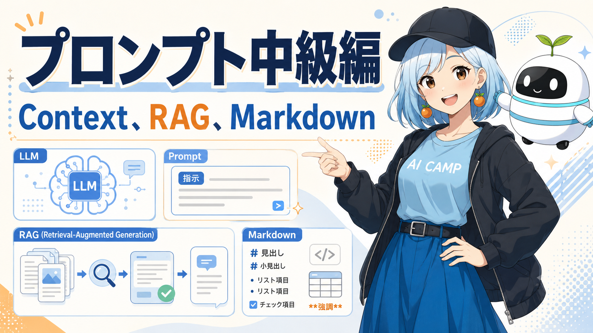
ここではプロンプトの中級編 を扱います。
AIキャンプのカリキュラムでは第2章でプロンプトの基本を扱いましたが、この章ではより踏み込んだ内容を扱います。使いこなせると、周囲とかなり差がつく知識やスキルになる ので、ぜひ気合を入れて学習していきましょう！
なおこの章では、「小手先のプロンプトテクニック」は扱いません。ChatGPT、Gemini、エージェントなど、AIは日々進化しプロンプトの「正解」もどんどん変わっていきます。
だからこそ、変わりにくい本質的なノウハウ を先に押さえておくことが大切です。
コンテキスト（プロンプトに与える背景情報のこと）
データ連携（RAG：外部データを検索して活用する仕組み）
マークダウンによる構造化
さらに、少し踏み込んだテクニックとして、以下のような技法も紹介します。
メタプロンプト
逆質問プロンプト
敵対的プロンプト
参考：陳腐化したプロンプトテクニック
AIの進化にともない、あまり重要視されなくなったプロンプトテクニックがあります。参考までに2つ紹介します。
例1：役割の指定
「あなたはプロのコピーライターです」のように、役割を明示するプロンプトは、あまり重視されなくなりました。役割を指定しなくても、AIが必要に応じて高品質な回答を生成できるようになったからです。
ただし、次の2つは今でも有効です。役割の指定と似ているので区別しづらいのですが、注意してください。
背景情報の追加 ：「あなたは先生です」目的の指定 ：「あなたの目的は売上の低い商品を分析することです」
背景情報や目的の指定は、引き続き非常に重要です。
例2：思考の連鎖プロンプト
2022〜2024年ごろのGPT-3.5やGPT-4の時代は、以下のようなプロンプトが流行りました。
これは「思考の連鎖プロンプト」（CoT：Chain of Thought）と呼ばれる技術です。AIの回答精度が上がるため、当時は非常に重要でした。
しかし2024年ごろから、ChatGPTやGeminiに「推論モード」が登場しました。こうした指示をしなくても、AIが深く思考してくれるようになったのです。
現在では、この一言を添えるプロンプトの重要性は下がっています。時代に合わせて、AIの使い方もアップデートしていきましょう。
プロンプトはAIに書かせることもできる
「プロンプトそのものをAIに書いてもらう」 のも、有効なアプローチです。
AIエージェントを使いこなすようになると、100行を超えるような長文プロンプトを扱うことも増えてきます。実はそうしたプロンプトの多くは、AI自身に記述してもらっています。
「プロンプトはAIに書かせる」という発想も、ぜひ持っておいてください。
ただし、自分の仕事のやり方や独自のノウハウなど、自分にしかわからない情報については、しっかり自分で入力するようにしましょう。
8-1-2
プロンプト中級編：AIに伝わる情報設計のレベル別ガイド
AIへの指示がうまく伝わらないときは、多くの場合「情報のわたし方」に問題があります。この記事では、AIに情報を伝える方法をレベル0からレベル3の4段階で整理 します。
8章ではレベル1・2の手法を、15章ではレベル3を学びます。
段階的に見る：レベル別ガイド図
下の図は、レベル0から課題・次のレベルへと、少しずつ埋まっていく流れになっています。「次へ」ボタンで1枚ずつ進めて確認してみてください。
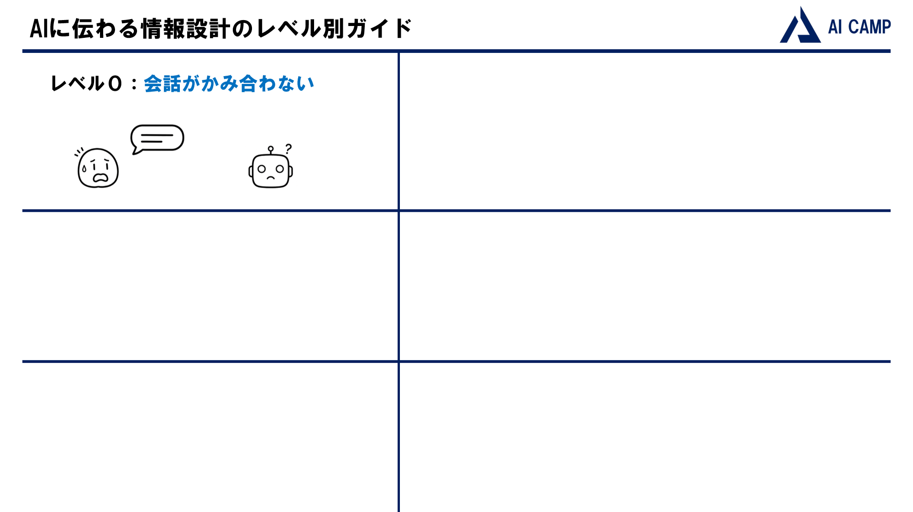
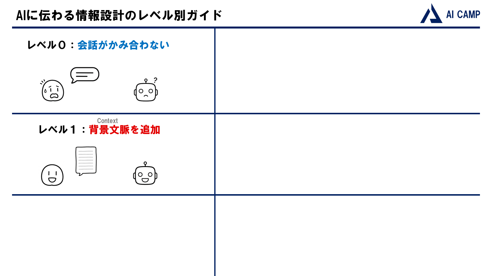
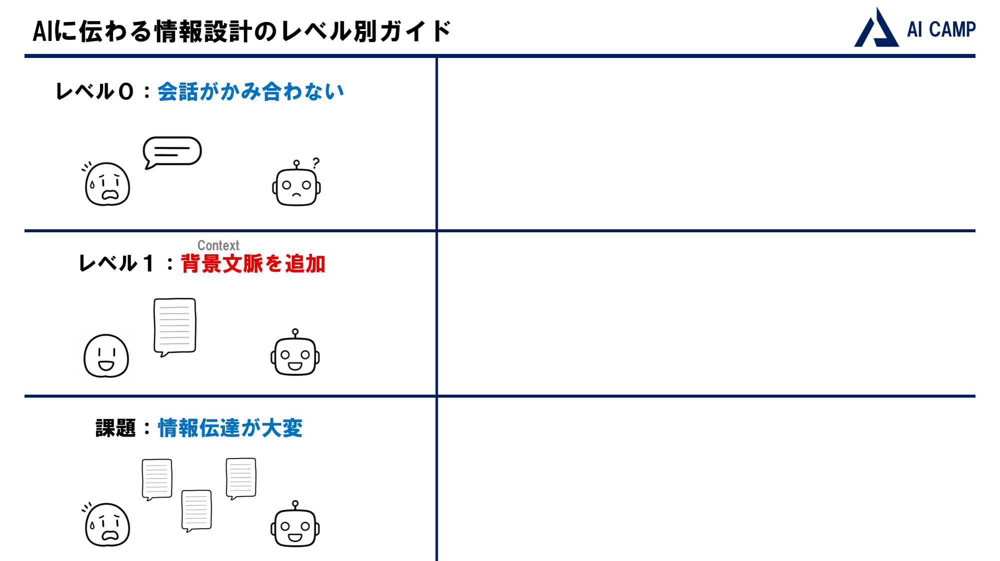
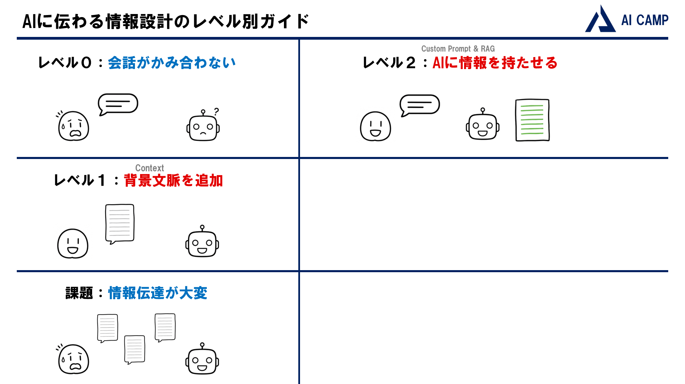
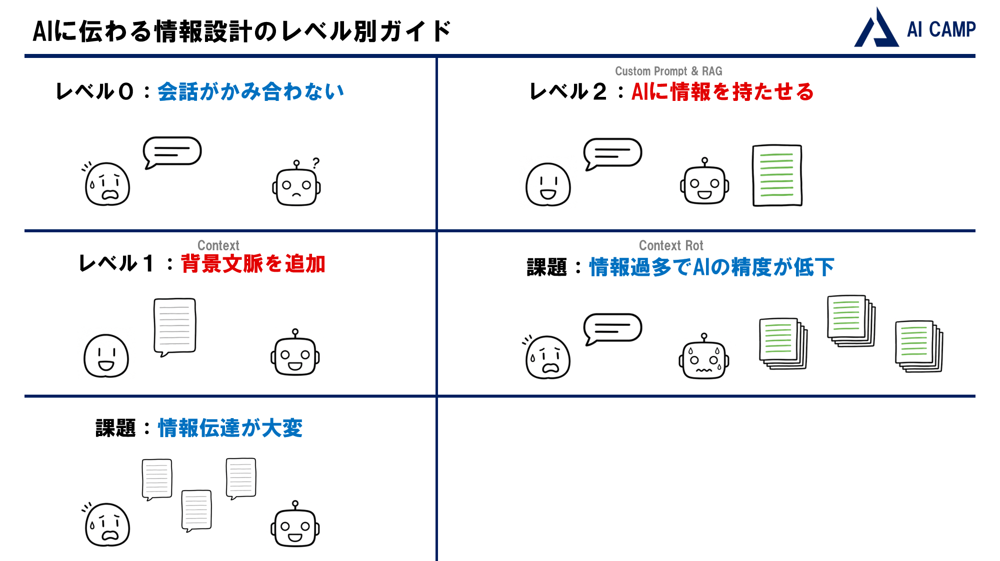
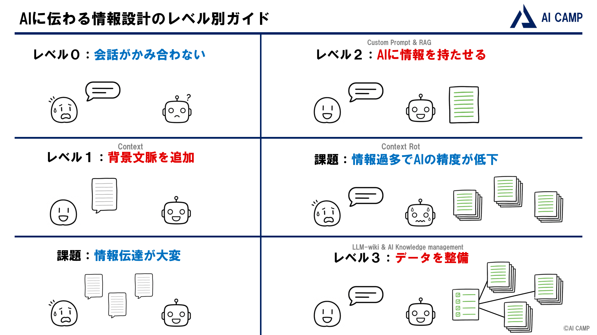
レベル0：会話がかみ合わない
AI入門でまず感じることの1つが、「AIの回答が的外れ 」という経験ではないでしょうか。
これは、ある意味当然のことです。AIはあなたのことを何も知りません。あなたの仕事の状況、目的、背景など、そうした情報がなければ、AIはありきたりな一般論しか返せません。
これが、AI入門者が最初にぶつかる壁 です。まずここを突破できるかどうかが、AI活用の大きな分かれ道になります。
レベル1：背景文脈を追加する（Context）
AIとの会話に少し慣れてくると、「AIに背景や文脈をしっかり渡すことが大事だ」とわかってきます。「誰に向けて」「何のために」「どんな前提で」を伝えると、回答の質は大きく変わります。
自分がやりたいこと、何のためにやるのかといった背景情報を渡すことで、AIの回答精度はグッと高まります。この背景情報をコンテキスト（Context） と呼びます。詳しくは8-3-1 コンテキスト（背景文脈）を理解しようで扱います。
課題：情報伝達が大変
情報を与えるとAIの回答精度は高くなりますが、一方で、「たくさんの情報を伝えるのが大変」、「長いプロンプトを打つのは面倒」という課題にぶつかります。
この課題を解決するのがレベル2です。
レベル2：AIに情報を持たせる（Custom Prompt & RAG）
人間が毎回長文の指示をする代わりに、あらかじめAIに情報を持たせておく方法 が有効です。
例えるなら、「AIに仕事のやり方を教える」 ようなものです。
AIキャンプのカリキュラムでも、AIを自分専用にカスタマイズすることを、重要な中間ゴールとしています。
代表的な手法は4つあります。
カスタム設定（Custom Prompt）：役職・口調・守ってほしいルールをあらかじめ登録しておく
RAG（Retrieval-Augmented Generation）：社内マニュアルや過去の資料をAIが参照できる状態にしておく
カスタムAI：特定の目的専用に情報や役割を持たせたAI（GPTsやGemsなど）を作っておく
Agent skills：業務ごとの手順やノウハウをフォルダ単位でAIエージェントに覚えさせておく
より詳しくは後半の章で解説します。
課題：情報過多でAIの精度が低下（Context Rot）
AIに情報を与えることに慣れてくると、次第に「どこまで渡せばいいか」が気になってきます。
実は、AIに情報を渡しすぎると、AIが何を重視すべきか分からなくなり、回答精度がかえって低くなるという課題があります。これをContext Rot（コンテキストの腐敗） と呼びます。
この課題を解決するのがレベル3です。
レベル3：データを整備する（LLM-wiki & AI Knowledge Management）
AIが大量の情報を正しく活用できるように、ナレッジデータを整備します。
Markdown記法でファイルを構造化したり、CSVデータなど、機械判読性の高いファイルを用意するのは当たり前。YAMLフロントマターやメタデータで検索可能性を高めたり、まるでWikipediaのように内部リンクを作ることも有効です。
こうした考え方を、「LLM-wiki」と呼んだりします。詳しくは15章「AIナレッジマネジメント」で学びます。
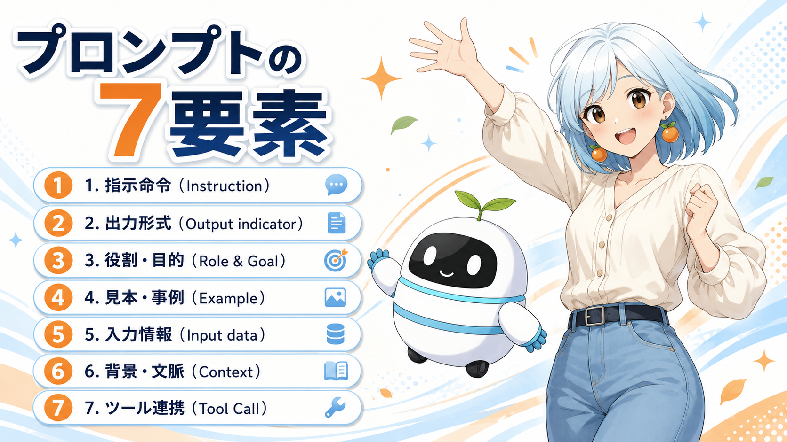
プロンプトは、大きく「7つの要素」に分解できます。
厳密な定義や境界があるわけではないので、まずは「こういうパーツでできているんだな」とざっくり理解できれば大丈夫です。
AIは、あなたが入力するこれらの要素と、AI自身が持っている知識を組み合わせて回答を作り出します。
1. 指示命令（Instruction）
AIに「何をしてほしいか」を伝える最も基本となる部分です。
できるだけ具体的に書くことで、意図通りの回答が返ってきやすくなります。
2. 出力形式（Output indicator）
「どのような形で出力してほしいか」を指定します。
「表形式でまとめて」「箇条書きで3つ挙げて」「〇〇の図解を描いて」といった形で、ゴールを明確にします。
3. 役割・目的（Role & Goal）
「あなたは〇〇の専門家です」「〇〇の解決が目的です」のように、AIに役割や前提となるゴールを与えます。
視点を固定することで、回答の精度やトーンが安定します。
4. 見本・事例（Example）
AIに期待する回答の具体例を提示します。
例を示すことで、「こういうトーンで、こういうフォーマットで書いてほしい」という意図を正確にコントロールできます。
5. 入力情報（Input data）
処理してほしいデータそのものを渡します。
長文のテキストや、PDF、CSVなどのファイルを追加情報として読み込ませるケースがこれにあたります。
6. 背景・文脈（Context）
「なぜそれをするのか」「誰に向けてのものか」といった、前提となる背景情報です。
このコンテキストをしっかり共有できているかどうかで、AIの回答の「的外れ感」が大きく変わります。（詳しくは8-3-1 プロンプト中級編：コンテキスト（背景文脈）を理解しようで解説します）
7. ツール連携（Tool Call）
AIに外部ツールを使わせるための指示です。
「Pythonを使って計算して」「カレンダーを見て」「Web検索して最新情報を調べて」など、AIの基本機能以外のツールやAPIを呼び出す際に使います。
補足：知識（Knowledge）
上記の7要素に加えて、AIモデルが学習段階で獲得した「知識」もベースになります。
この知識と、私たちがプロンプトで与える7要素が組み合わさることで、実務で使える質の高い回答が生まれます。
8-2-2
プロンプト中級編：プロンプトの7要素クイズ
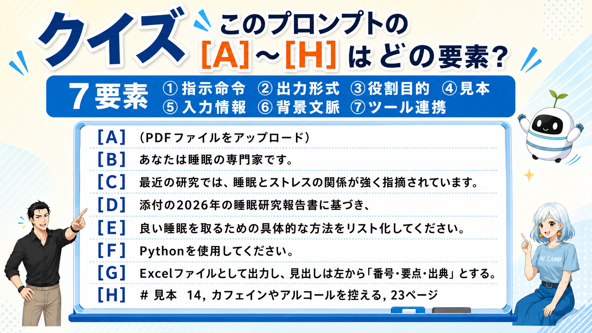
先ほどの解説の続きで、ここでは「プロンプトの7要素の確認クイズ」をやってみましょう。
クイズ：このプロンプトの [A]〜[H] はどの要素？
以下のプロンプトを読んで、[A]〜[H] の各パーツが「7要素のどれにあたるか」を考えてみましょう。
コピー [A] （PDFファイルをアップロード）
[B] あなたは睡眠の専門家です。
[C] 最近の研究では、睡眠とストレスの関係が強く指摘されています。
[D] 添付の2026年の睡眠研究報告書に基づき、
[E] 良い睡眠を取るための具体的な方法をリスト化してください。
[F] Pythonを使用してください。
[G] Excelファイルとして出力し、見出しは左から「番号・要点・出典」とする。
[H] # 見本
14, カフェインやアルコールを控える, 23ページ
[A]〜[H] それぞれが、7要素（①指示命令・②出力形式・③役割目的・④見本・⑤入力情報・⑥背景文脈・⑦ツール連携）のどれに該当するか考えてみましょう。
回答を見る
パーツ
内容
該当する要素
[A]
PDFファイルをアップロード
⑤ 入力情報（Input data）
[B]
あなたは睡眠の専門家です
③ 役割目的（Role & Goal）
[C]
最近の研究では、睡眠とストレスの…
⑥ 背景文脈（Context）
[D]
添付の2026年の睡眠研究報告書に基づき
⑤ 入力情報（Input data）
[E]
具体的な方法をリスト化してください
① 指示命令（Instruction）
[F]
Pythonを使用してください
⑦ ツール連携（Tool Call）
[G]
Excelファイルとして出力し…
② 出力形式（Output indicator）
[H]
見本：14, カフェインや…
④ 見本（Example）
なお、各分類には厳密な定義はありません。例えば、 [D] は「入力情報」とも言えますが、「背景文脈」と考えても構いません。
補足解説
プロンプトが思い通りに動かないとき、多くの人は「全体を何となく書き直す」という泥沼に陥りがちです。
しかし、この7要素の視点を持っていれば、「今回は『出力形式』の指定が甘かったな」「『入力情報』が不足していたかもしれない」と、ピンポイントで原因を特定し、確実に改善できるようになります。
8-3-1
プロンプト中級編：コンテキスト（背景文脈）を理解しよう
ここでは、プロンプトの構成要素のなかでも特に重要な「コンテキスト」 について学びます。
コンテキストとは、AIとあなたの間に共通の認識を作るための「背景文脈」や「前提条件」のこと です。
AIキャンプの講座でも、「AIからの回答がどうしてもイマイチになる」というお悩みの多くは、このコンテキスト不足が原因です。とても重要なポイントなので、しっかり押さえていきましょう。
ワーク1：微妙なプロンプトの理由を考える
さっそく問題です。以下のプロンプトは実務で使うには少し微妙です。一体何が微妙なのでしょうか？
回答を見る
実際にこのプロンプトを入力すると、次のような回答がよく返ってきます。
「AIで開く、新たな世界の扉」
「未来を創る、AIの力」
これでは、実際の講座のタイトルとしては抽象的すぎて微妙ですよね。
なぜこのような回答が出てきてしまうのでしょうか？
簡単に言うと、AIとあなたの間で「会話がかみ合っていない」からです。
この「AI講座」を、誰に向けて、何のために開催するのか。 そうした背景文脈がないまま指示を出しているため、AIはありきたりで見当違いな回答を出してしまうのです。
また、「キャッチコピー」という言葉も抽象的です。一般的なキャッチコピーといえば、「やっちゃえ、NISSAN」「心も満タンに」「体にピース、カルピス」のような、企業ブランドのイメージを表す短いフレーズを想像するかもしれません。しかし、もしあなたが「講座に集客するための魅力的なタイトル」を求めていたなら、AIの解釈とズレが生じてしまいます。
ワーク2：改善プロンプト
改善プロンプトを見る
続いて、「背景文脈を先に入力する」 ことを試してみましょう。
新しいチャットを開いて、次はこの2つの指示を「連続で」出してみましょう。
コピー コピー 私はセミナーを開催して、見込み客を集めたいです。集客できる講座タイトル（キャッチコピー）のコツを挙げてください。
その回答を待ってから、次を入力します。
コピー コピー 上記を用いて、AI講座のキャッチコピーを5個考えて
すると、「1日2時間の余裕を生み出す生成AI活用講座」「初心者でも分かる生成AI実践活用術10選」など、先ほどより具体的で実践的な回答が出てきたはずです。
ワーク1とワーク2の違いは何だったのでしょうか？大事なポイントなので、一度手を止めて考えてみてください。
回答を見る
答えはずばり、「背景文脈が追加されたから」です。
今回の場合、最初に「集客するコツ」について質問したことで、チャット履歴の中に以下のような背景文脈が生まれました。
「あ、この人は集客したいんだな」
「集客のコツを踏まえた上で、キャッチコピーを作ればいいんだな」
このように、AIの視点が切り替わり、より的確な回答を出せるようになります。これが「コンテキスト（背景文脈）の追加」です。
コンテキストを与えるかどうかで、AIの回答の質は全く別物になることを実感できたかと思います。
ワーク3：改善プロンプトその2
改善プロンプトを見る
会話のやり取りでコンテキストを形成するのではなく、最初のプロンプトに一気に背景文脈を盛り込むアプローチも有効です。
コピー コピー AI講座のキャッチコピーを5個考えてください。
## 目的
集客できるタイトルをつけること
## キャッチコピーのポイント
1. 読み手の悩み・痛み・欲求に訴求する
2. 講座に参加すると得られるメリット・ベネフィットを示す
3. できれば、数字を入れる
4. 短くキャッチーな表現にする
こうすることで、最初からかなり精度の高い回答を引き出すことができます。
まとめ
コンテキスト（背景・文脈・前提条件）の重要性はイメージできたでしょうか。
AIに仕事を依頼する時は、「いま自分はどんな状況で、何を前提に話しているのか」を言葉にして伝えることを意識してみてください。ここが、プロンプト上達の大きな分かれ道になります。
補足
少し専門的な用語になりますが、今回のワークで試した手法にはそれぞれ名前がついています。
ワーク1：Zero-Shot Prompting（前提情報なしでいきなり指示する）
ワーク2：Generated Knowledge Prompting（AIに知識を生成させてから指示する）
ワーク3：Information Retrieval Prompting（必要な情報をあらかじめ提供して指示する）
8-3-2
プロンプト中級編：補足知識：ＡＩは超天才新入社員と思うべし
AIの文章作成能力やデータ分析能力は、もはや平均的な人間の能力をはるかに超えています。
しかし、AIはあくまで「天才新入社員」 のようなものです。
どれだけ高い能力を持っていても、あなたの仕事・あなたの会社・あなたの状況については、何も知らないのです。いくら優秀でも、しっかりと情報を与えなければ、宝の持ち腐れになってしまいます。
だからこそ、人間の新入社員と同じように、「AIを育てていく」 という発想を持ちましょう。
仕事のやり方や、必要なデータ・判断基準・背景情報を伝えていきます。これを続けると、どんどん「あなたの相棒」のように進化し、まるで「ベテラン社員」のように成長していきます。
AIキャンプの講座でも、この「育てていく」という構えを大切にしています。これこそが、AI活用の肝です。 ぜひこの考え方を持っておきましょう。
8-3-3
プロンプト中級編：補足知識：情報の与えすぎはNG：コンテキストの腐敗（Context Rot）
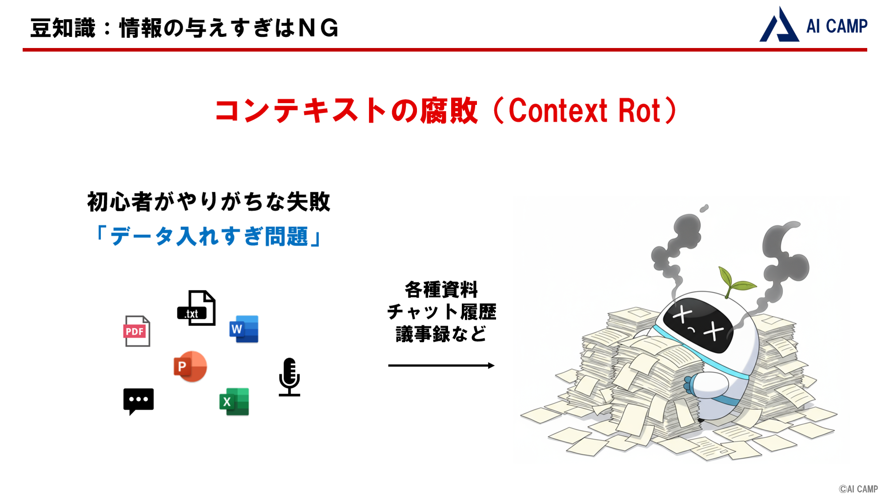
「AIには情報を渡そう」と学んだ一方で、渡しすぎると逆効果になることがあります。
これをContext Rot（コンテキストの腐敗） と呼びます。
会話が長くなったり大量のファイルを貼り付けたりするうちに、AIが何を重視すべきか見失ってしまう現象です。
今後、AIは勝手に仕事のやり方を覚えてくれるように進化すると思いますが、2026年時点では、まだまだ自動的に高精度に進化させるのは困難です。
基本方針：良質な情報を与える
必要な情報は、そのつど・必要な分だけ・きれいに整えて渡すのが基本です。
情報は「量より質」。では、具体的にどうすればよいのでしょうか。AIキャンプでは、次の3つのコツを実践することをおすすめしています。
コツ①：膨大な情報は「圧縮・厳選」する
マニュアルや議事録など、大量の文書をそのまま貼り付けるのは逆効果です。
AIに渡す前に、今回のタスクに関係する部分だけを抜き出す 習慣をつけましょう。
全文を渡したくなる気持ちはわかりますが、不要な情報が多いほどAIは「何が重要か」を見失いやすくなります。
コツ②：テキストは「構造化」する
渡す情報は、箇条書きや見出しを使って整理してから渡しましょう。
長い文章の塊よりも、Markdownで構造化した情報のほうが、AIは正確に読み取れます。
「背景」「依頼内容」「制約」などをわけて書くだけで、回答の精度がぐっと上がります。
コツ③：事例は「典型事例」に絞る
「こういうケースもある、ああいうケースもある」と例外や特殊ケースをたくさん並べると、AIが混乱します。
最もよく起こる典型的な事例だけを伝える のが、安定した回答を得るコツです。
例外ケースは、必要になったタイミングで別途追加すれば十分です。
参考
8-3-4
プロンプト中級編：補足知識：コンテキストウィンドウとは？
AIとの対話の精度を高めるうえで知っておきたい概念が、「コンテキストウィンドウ」 です。
AIは、一度の会話で扱える「情報の上限量」が決まっており、この上限のことをコンテキストウィンドウと呼びます。
AIとの会話量のことをトークンと呼ぶのですが、例えば、コンテキストウィンドウが2万トークン（20k）のモデルであれば、約半分が埋まった時点で回答精度が著しく低下するという報告もあります。
人間に例えると、「机の上がぐちゃぐちゃになっている状態」 です。情報が多すぎて、何が重要かわからなくなってしまいます。
そんなときは「新しいチャットを始める」 のが有効です。コンテキストウィンドウがリセットされ、またすっきりした状態で作業を再開できます。
なお、もしその会話内容を次のチャットに引き継ぎたい時は、次で紹介する8-3-5 プロンプト中級編：補足知識：チャット引継ぎプロンプトを使いましょう。
8-3-5
プロンプト中級編：補足知識：チャット引継ぎプロンプト
新しいチャットに切り替えたいけれど、今の会話の文脈を持ち越したい――そんなときに使えるのが「チャット引継ぎプロンプト」 です。
以下のプロンプトを、今のチャットの最後に入力してください。
コピー 次のチャットに引継ぐための引き継ぎ書を作成してください。コードブロックで出力。
AIが引継ぎ書をコードブロック形式（コピーしやすい状態）で出力してくれます。それをコピーして新しいチャットの冒頭に貼り付ければ、文脈を保ったまま作業を続けることが可能です。この技術は、チャット型AIでもエージェント型AIでも同じように使えます。会話が長くなってきたり、精度が落ちてきたと感じたタイミングで、試してみてください。
8-4-1
プロンプト中級編：RAGとは：知識を追加しよう
ここでは、AIに独自のデータを連携する技術を学びます。
RAG（ラグ） と呼ばれるこの技術は、AIを業務で活用する上で欠かせない手法なので、ざっくりと理解しておきましょう。
※RAG ＝ Retrieval-Augmented Generation（検索拡張生成）
RAGは「カンニング」のようなもの
RAGをひとことで言うと、「AIにカンニングペーパーを渡して、それを見ながら答えさせる技術」 です。
通常のAIは、自分の頭の中にある知識だけで回答しようとします。そのため、最新のニュースや、あなたの会社の社内ルールなど、知らないことを聞かれると答えられなかったり、適当な答えを作ってしまったりします。（ハルシネーション）
そこで、RAGの出番です。
RAGを使うと、AIに質問する前に、関連する資料（マニュアルや過去のデータなど）をサッと検索してAIに渡すことができます。
例えば、以下のような一般常識は、RAGがなくても回答できます。
しかし、以下のような質問はまず無理です。
コピー 弊社の就業規則で、有給休暇は何日取得できる？
このような個人的な情報や社内のローカルな情報は、AIが事前に学習していないため答えられません。だからこそ、RAGを使って「中村のプロフィール情報」をカンニングペーパーとして渡す必要があるのです。
難しく考えず、「AIにカンニングさせる仕組み」と覚えておいてくださいね！
8-4-2
プロンプト中級編：RAG演習：データから英単語の小テストを作る
ここでは、「データの有無で生成AIの回答の質がどう変わるのか？」 を体験します。
「中学生向けの英単語の小テストを作る」というテーマで考えてみましょう。
ワーク1：普通に指示してみる
まず、以下の指示をしてみましょう。
コピー 中学生向けの英単語テストを出題してください。
回答はどうだったでしょうか？
おそらく、ありきたりで一般的な小テストが作られたと思います。
これでは、実務で使える成果物にはなっていないわけです。
問題：どんなデータを与える？
では、どんなデータを与えると、現場で使える小テストが生成されるのでしょうか？
少し時間をとって考えてみてください。
回答のポイントを見る
小テストの作成精度を上げるためには、以下のようなアプローチが有効です。
1. 問題集のデータを渡す
2. 過去の成績表を渡す
問題集や出題範囲のデータを与えることで、その授業内容に合った小テストを作成できます。
また、生徒や学生の過去の成績表、正誤データを与えることで、一人ひとりに合った教材を作れます。教育の世界ではこれを「個別最適化教育」と呼び、とても重要な考え方です。
このように、同じ「英単語テストを作って」という指示でも、過去の小テスト結果を渡すだけで、出題内容が一気にその人向けになります。
ワーク2：データを与えてみよう
実際にやってみよう
今回は、架空の生徒「あおいさん」が受けた英単語15問の小テスト結果を使います。CSVとPDFのどちらでも大丈夫です。使いやすい方をAIにアップロードして試してみましょう。
データには、英単語、日本語の意味、あおいさんの正答・誤答が入っています。
たとえば、school、friend、family、animal、bicycle の5つは、あおいさんが間違えた単語です。
コピー コピー 添付した小テスト結果をもとに、あおいさんが間違えた英単語に絞って、
中学生向けの英単語テストを出題してください。
出題形式は、英単語を見て日本語の意味を答える形式にしてください。
すると、AIはアップロードされたデータを読み取り、あおいさんが間違えた単語だけを使って問題を作れるようになります。
このワークのポイント
ここで大事なのは、AIに「いい感じに作って」と頼むだけではなく、判断材料になるデータを一緒に渡すことです。
このように、AIが外部の資料やデータを参照して回答する考え方を、「RAG：検索拡張生成」 と呼びます。
AI活用で欠かせない用語なので、覚えておきましょう。
AIキャンプの講座では、こうしたデータ連携を非常に重視しています。
このワークでデータの有無の違いを感じていただいたと思うので、これからはいろいろなデータを与えて使うアプローチに挑戦しましょう。
8-4-3
プロンプト中級編：RAG演習：年金に入らない理由
ここでは、「公的なデータを与えると、AIの回答がどう変わるか？」 を体験します。
「個人年金に加入していない理由」というテーマで、データなしとデータありの２通りを試してみましょう。
ワーク1：そのまま聞いてみる
まず、データは何も渡さずに、以下の指示だけを入力してみましょう。
回答はどうだったでしょうか？
おそらく、「保険料が高い」「老後はまだ先のこと」「仕組みがわからない」など、よくある一般的な理由が並んだと思います。
それ自体は間違いではありませんが、あくまでAIが学習した知識の中から「それっぽい答え」を出しているだけです。データの裏付けがないため、実際の調査結果とはずれている可能性があります。
ワーク2：PDFをアップして同じ指示をする
次に、厚生労働省が公表している「令和4年 社会保険に関する意識調査」のPDFをAIにアップロードしてから、同じ指示を送ってみましょう。
8-4-3_厚労省_社会保障_意識調査.pdf
今度は、AIがPDFの内容を読み取った上で回答してくれます。
「年金に加入しない理由は、保険料が高いという回答が最も多く、全体の50.4%です。」のような、調査データに基づいた回答が出てきます。
このワークのポイント
同じ質問でも、データを渡すかどうかだけで、回答の「根拠の有無」が大きく変わります。
データなし → AIが学習済みの知識から「それっぽい回答」を生成する
データあり → AIが渡された資料を読んで「根拠のある回答」を生成する
この違いが、RAG（検索拡張生成）の本質 です。
8-4-4
プロンプト中級編：RAG演習：メールの定型文を与える
ここでは、「自分用の定型文をAIに渡すと、メール返信の質がどう変わるか？」 を体験します。
AIキャンプ代表の中村は、日々の問い合わせ返信に「よく使う返信パターン」をテンプレートとしてまとめています。今回は、その代表的な2パターンをAIに渡した状態で、メール返信文を作ってみましょう。
準備：中村愛用の返信テンプレート2種
この見本のテンプレートには、以下の2つの情報が記載されています。
AI研修の講座内容
AIワークショップの準備物
8-4-4_AIキャンプメール返信テンプレートの見本2種.pdf
ダウンロードしてみましょう。
ワーク：定型文を渡してメール返信を作ってみる
PDFをAIにアップロードして、メールへの返信文を作ってみましょう。
コピー 添付した返信テンプレートのPDFを参照し、返信文を作成してください。
## 相手から届いたメール
AIキャンプ 中村様
お世話になっております。
株式会社サンプルの永合花子と申します。
社内研修としてAIワークショップをお願いしたいと考えております。
研修内容と、当日の準備物について教えていただけますでしょうか。
よろしくお願いいたします。
成功すると、AIがテンプレートを読み取り、「講座内容」と「準備物」の両方に対応した返信をまとめて作ってくれます。
このワークのポイント
「RAGデータ×メール返信」は、ぜひ真っ先に取り組みたい生成AI活用法の1つです。
相手の状況に合わせてじっくり考える文章や、心を込めたお礼メールなどは、やはり人間が書くべきです。
一方で、「誰が書いても同じ案内になる定型文」は、どんどんAIに任せていきましょう。
実際にAIキャンプ代表の中村は、合計17種類のメール文パターンをまとめており、これをGmailと連携させています。瞬時に「いつもの自分の言葉」で返信の下書きができるため、日々のメール対応がとても楽になります。
まずは、自分がよく送るメールのパターンを1〜2個メモして、AIに渡すところから始めてみてください！
8-4-5
プロンプト中級編：補足知識：RAGの特徴と仕組み
ここでは、RAG（検索拡張生成）の特徴や、裏側で動いている仕組みについて補足解説をします。
少しだけ専門的な用語も登場しますが、「AIがどうやって資料を探しているのか」を知っておくと、より精度の高いAI活用ができるようになります。余裕のある方だけで大丈夫ですので、ぜひ読んでみてくださいね！
RAGの強み（メリット）
RAGには、通常のAI利用にはない強力なメリットが4つあります。
安くて簡単にAIを強化できる
AIに独自の知識を持たせる方法として「ファインチューニング（AI自体を再学習させる手法）」がありますが、これは莫大なコストと時間がかかります。一方RAGは、検索システムとAIを組み合わせるだけなので、低コストかつスピーディに導入できます。ハルシネーション（幻覚）を軽減できる
AIがもっともらしいウソをつく現象（ハルシネーション）を防ぐのに効果的です。AIは「検索して見つけた資料（事実）」をベースに回答を作るため、根拠のないウソをつきにくくなります。社内の機密情報も安全に扱える
世の中に公開されていない社内ルールや顧客データなど、AIが本来知らない情報であっても、RAGの仕組みを通せば安全に回答させることができます。大量のデータを与えてもパンクしない
AIには一度に読み込める文字数（トークン数）に限界があります。RAGは、何千ページあるマニュアルの中から「質問に関係のある数ページだけ」をピンポイントで抜き出してAIに渡すため、文字数制限を気にせず大量のデータを連携できます。
RAGの弱み（デメリット）
一方で、RAGにもいくつか弱点があります。導入する際はこの点に気をつける必要があります。
精度は100%にはならない
検索システムが「見当違いの資料」を抜き出してしまったり、AIが資料の読み取りを間違えたりする可能性があるため、常に完璧な回答が出るわけではありません。データがないと答えられない
当然ですが、連携した資料の中に答えが存在しなければ、AIも回答を作ることができません。常にデータの更新が必要
社内ルールや商品情報が変わった場合、RAGに連携している元のファイルも更新しないと、AIは古い情報のまま回答し続けてしまいます。回答に時間がかかる（レイテンシ）
「①資料を検索する → ②資料を読む → ③回答を作る」というステップを踏むため、通常のChatGPTなどと比べると、答えが返ってくるまでに少し待ち時間が発生します。
専門知識：RAGは「意味の近さ」で検索している
RAGの裏側では、入力されたプロンプトに対して「意味が近いデータ」を抜き出す という処理が行われています。
これを実現しているのが「ベクトル化（Embedding）」と「コサイン類似度」という技術です。
例えば、あなたが以下のように質問したとします。
AIは、この自然言語（人間の言葉）をそのまま探すのではなく、AIが計算できる数値の羅列（ベクトル） に変換します。
コピー [0.055, -0.161, 0.578, 0.407, -0.259, 0.120, ...]
そして、あらかじめ数値化しておいた大量の資料データと照らし合わせ、「コサイン類似度」という計算式を使って、数値の方向性（意味）がどれくらい近いかを判定 します。
Aの資料：「最新のスマホレビュー」 （類似度 0.1 ＝ 意味が遠い）
Bの資料：「簡単で栄養満点の朝食サラダ」 （類似度 0.95 ＝ 意味がとても近い！）
このようにして、キーワードが完全に一致していなくても、「朝食」と「朝食サラダ」のような意味の近さ（文脈）を理解して、最適な資料を抜き出している のです。
補足
AIキャンプからのメッセージ
AIキャンプ代表の中村も、実務でRAGを構築する際は「いかにAIが検索しやすいデータを作ってあげるか」に一番時間をかけています。
RAGの仕組みを知ると、「AIが意味を理解しやすいように、資料には見出しをしっかりつけよう」といった工夫ができるようになります。この後のカリキュラムでも、AIが読みやすいデータの作り方を学んでいきましょう！
8-5-1
プロンプト中級編：機械判読：AIが読みやすいデータとは
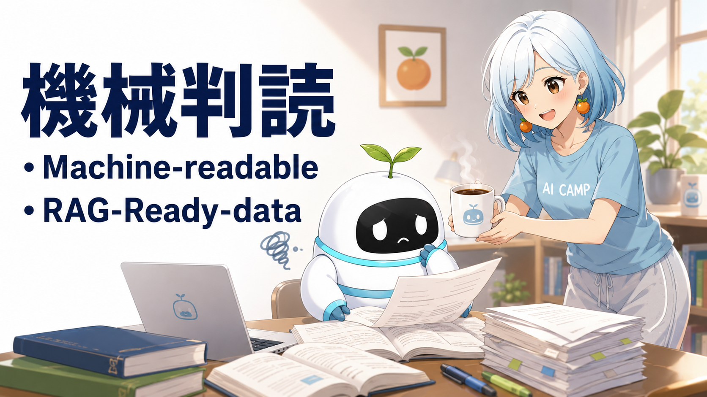
ここでは、AIがデータを読み取る力である「機械判読（きかいはんどく）」 について解説します。（英語では「machine-readable」と呼ばれます）
AIには「読みやすいデータ」と「読みにくいデータ」があります。この違いを知っておくことは、AIを実務で使いこなすための重要な基礎知識です。
※AI（RAG）が精度高く読めるように整えられたデータを「RAG-Ready-data」 と呼ぶこともあるので、合わせて覚えておきましょう。
「機械判読」とは？
機械判読とは、AIやコンピューターが情報を正しく読み取れる状態 のことです。
たとえば、次の２つを見比べてみてください。
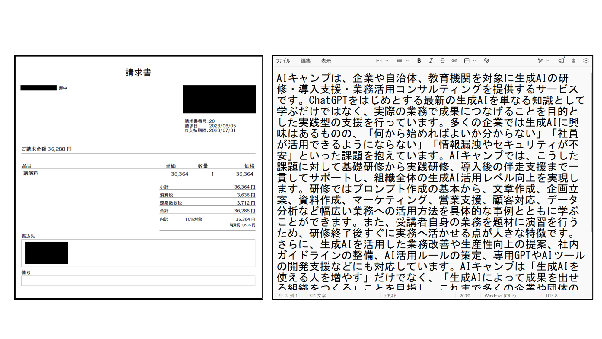
左側は一般的な請求書、右側はテキストデータです。どちらがAIに読みやすいでしょうか？
答えは「右側のテキストデータ」です。請求書はレイアウトが整っていて人間には見やすいですが、AIにとってはどこに何が書いてあるか分かりづらいデータです。一方、テキストは構造がシンプルなため、AIが内容を正確に読み取ることができます。
人間にとって見やすい資料が、AIにとっても読みやすいとは限らない という点を、ぜひ覚えておいてください。
「機械判読」の考え方を、クイズで体感してみましょう。
クイズ：AIに読みやすいデータはどれ？
次の8つのデータ形式を、「読みやすい」「読みにくい」「かなり大変」の3グループに分けて配置してみてください。ドラッグするか、チップをタップしてからグループをタップしても操作できます。すべて配置すると「これでいい？」ボタンが光ります。
答えを見る
正解の3グループ
グループ
入れるもの
読みやすい
Markdown（.md）／テキスト（.txt）／CSV（.csv）
読みにくい
Word（.docx）／Excel（.xlsx）／PowerPoint（.pptx）
かなり大変
画像（JPEGなど）／動画
グループ内の参考順番
細かい順番まで覚える必要はありませんが、目安は次のとおりです。
読みやすい：Markdown ≒ テキスト ＞ CSV
読みにくい：Word ＞ Excel ＞ PowerPoint
かなり大変：画像 ＞ 動画
ポイントは、人間に見やすい資料が、AIにとっても読みやすいとは限らない ということです。たとえば Excel は表に見えますが、CSV の方が AI には読みやすいことが多いです。
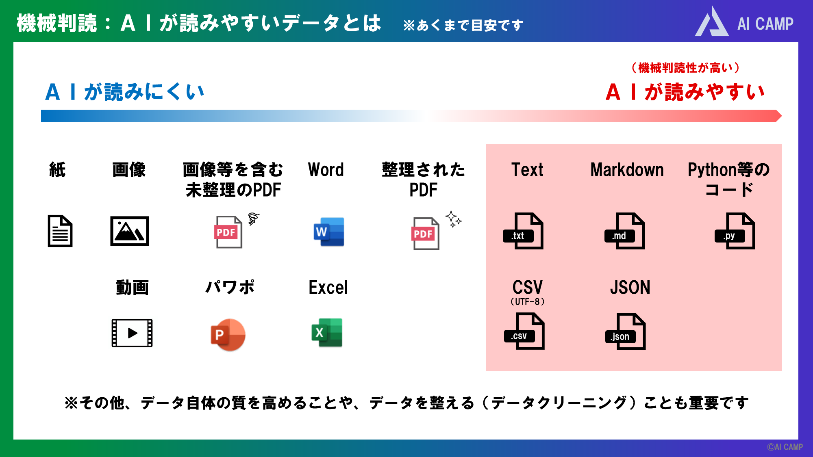
AIが読みやすいデータと読みにくいデータを、形式ごとに整理した図です。（※あくまで目安です）
AIが読みにくいデータ
以下の形式は、レイアウト情報や画像が混在しているため、AIが内容を正確に読み取りにくい傾向があります。
紙（印刷物）
画像（JPEGやPNGなど）
音声や動画
画像が混ざった未整理のPDF
Word（.docx）
PowerPoint（.pptx）
Excel（.xlsx）
人間には見やすい形式ですが、AIが内容を解釈するためには余分な処理が必要になり、精度が落ちやすくなります。
AIが読みやすいデータ（機械判読性が高い）
以下の形式は、テキストとして情報がシンプルに整理されており、AIが内容を正確かつ効率よく読み取ることができます。
ほぼテキストのみのPDF
Text（.txt）
Markdown（.md）
Python等のコード（.py など）
CSV・UTF-8形式（.csv）
JSON（.json）
RAGを使ってAIにデータを読まれる時は、できるだけこのような機械判読性の高いデータ形式にしておきましょう。回答精度がグッと上がります。
データの「質」も忘れずに
ファイル形式だけでなく、データの中身をきれいに整えること（データクリーニング）も重要です。
たとえば、次のようなデータはAIが混乱してしまいます。アドレスが途切れていたり、表記がばらばらだったりする「汚いデータ」です。
コピー 名前,年齢,メール
田中 太郎,２８,tanaka@
山田 花子,,yamada@example.com
田中太郎,28,
また、こちらは内容が「矛盾したデータ」です。
コピー 専門家に向けて説明します。
子供向けに説明します。
内容に重複・欠損・誤り・矛盾が多いと、形式が正しくてもAIは良い回答を作れません。まずはこのような基礎を押さえておきましょう。
8-5-4
プロンプト中級編：ワーク：画像入りPDFが読めるか試してみよう
「画像入りのPDF」を実際にAIチャットへ添付して、どこまで読み取れるか？ を体験してみましょう。
ChatGPTやGeminiなど、普段使っているツールでかまいません。
準備
サンプルPDFをダウンロードしておきましょう。
株式会社AIキャンプネコ_社内規定.pdf をダウンロード
この社内規定は、第4条まではテキストで書かれていますが、第5条「休憩の義務」は画像として埋め込まれています。 この第5条をAIが読み取れるかどうかをチェックするのが、このワークのポイントです。
ワーク
サンプルPDFをAIチャットにアップロードして、次のプロンプトを送ってみてください。
コピー この資料には、休憩時のルールが記載されていますか？
うまくいくと第5条の内容が回答されます。うまくいかない場合は「記載が見当たらない」などと返ってきます。
補足
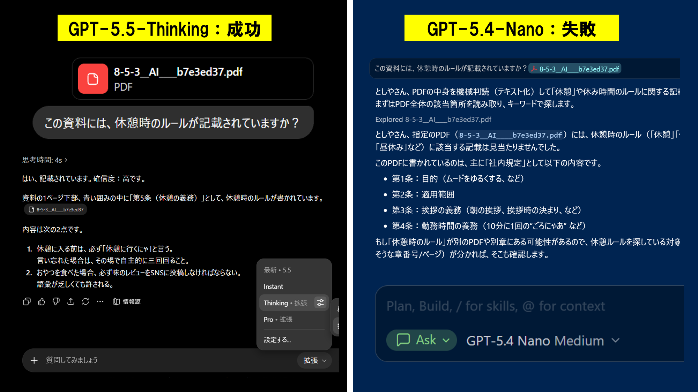
AIキャンプで実際に試してみたところ、GPT-5.5-Thinkingでやった場合はほぼ確実に読み取ることができましたが、軽量モデル「GPT-5.4-Nano」でやった場合は、読み取ることができませんでした。
最近のAIツールは賢くなり、PDF内に埋め込まれた画像もある程度は認識してくれるようになりました。
ただし、精度は安定しておらず、モデルの性能が落ちたり、データ量が多くなると内容が抜け落ちることがほとんどです。
AIに確実に読ませたい情報は、できるだけテキスト形式に変換してから渡すのが基本です。
8-5-5
プロンプト中級編：補足知識：文字コードとUTF-8とは
少し細かい知識になりますが、AIに日本語のファイルを渡すときは、文字コード を意識することが大切です。
文字コードは、テキスト、CSV、Excel、Markdown、HTMLなど、文字を含むデータ全般に関係する重要なルールです。
文字コードとは
文字コードとは、文字をコンピューターが扱える数字に変換するためのルールです。
人間には「あ」と見えていても、コンピューターの中では数字として保存されています。その「文字」と「数字」の対応表のようなものが文字コードです。
同じ日本語でも、使っている対応表（文字コード）が違うと、読み取る側が正しく解釈できず文字化けしてしまいます。
UTF-8とは
「UTF-8（ユーティーエフエイト）」 は、世界中で最も広く使われている文字コードです。
日本語、英語、記号、絵文字などをまとめて扱いやすいため、WebサービスやAIツールではUTF-8を前提にしている場面がほとんどです。
Shift_JISとは
一方で、「Shift_JIS（シフトジス）」 は、日本語のWindowsパソコンで長く使われてきた文字コードです。
古い業務システムや、日本のExcelから出力したCSVでは、このShift_JISになることがよくあります。人間がExcelで開くぶんには問題なく見えても、AIツールに渡すと文字化けすることがあります。
たとえば、次のようなトラブルが起きます。
日本語が「縺」や「譁」のような読めない文字になる
ファイルをアップロードしても中身が正しく読まれない
データ分析の結果が空になる
AIに渡すならUTF-8を基本にする
AIに読ませるデータは、できるだけUTF-8で保存しましょう。特に次のようなファイルでは、UTF-8を選ぶのがおすすめです。
CSV
テキスト（.txt）
Markdown（.md）
業務システムから出力した一覧データ
AIが読みやすいデータにするためには、ファイル形式だけでなく、文字コードもそろえることが大切です。
例：ExcelでCSVを保存するとき
ExcelでCSVを保存するとき、単に「CSV（コンマ区切り）」を選ぶと、Shift_JISになってしまうことがあります。
AIに渡すCSVを作るときは、ファイルの種類でCSV UTF-8（コンマ区切り） を選びましょう。
Googleスプレッドシートの場合は、「ファイル → ダウンロード → カンマ区切りの値（.csv）」を選ぶだけで、自動的にUTF-8のCSVになります。
8-5-6
プロンプト中級編：補足知識：構造化データと非構造化データ
AIにデータを渡すとき、そのデータが「どんな形をしているか」によって、AIの読み取り精度が大きく変わります。
データは大きく「構造化データ」と「非構造化データ」の2種類 に分けられます。
構造化データとは
構造化データとは、行と列が決まった、表のように整理されたデータ のことです。
代表例：
スプレッドシート・CSV（顧客リスト、売上管理表など）
データベースの出力データ
どの列に何の値が入るかがあらかじめ決まっているため、AIも内容を正確に読み取りやすい形式です。
非構造化データとは
非構造化データとは、決まった形を持たない、自由な形式で書かれたデータ のことです。
代表例：
メール・チャットのやりとり
Word文書・PDF
画像・音声・動画
人間には読みやすいものの、AIにとっては、「どこに何の情報があるか」が分かりにくいデータになります。
AIにこうした非構造化データを渡す場合は、Markdown形式に変換したり、要点を整理してからプロンプトに含めたりするなど、一手間加えると精度がグッと上がります。
8-5-7
プロンプト中級編：補足知識：ExcelとCSVの違い
表形式のデータをAIに渡すとき、ExcelとCSVでは読み取り精度が大きく変わります。見た目はどちらも「表」に見えますが、中身のデータの持ち方がまったく違います。
それぞれの特徴
Excelは複数シート・関数・セルの色や結合など、多くの情報が1ファイルに詰まっています。人間には便利ですが、AIにとっては「どのセルにどんな値があるか」を取り出しにくい形式です。
CSVはカンマ区切りのテキストだけのシンプルな表形式です。装飾や関数が入らないぶん、AIやプログラムが内容をそのまま読み取りやすい 形式です。
コピー 名前,年齢,部署
田中太郎,28,営業
山田花子,32,総務
使い分けの目安
目的
おすすめ
人が集計・編集・印刷する
Excel
AIに分析・要約・FAQ作成を任せる
CSV（UTF-8）
RAGに社内データを取り込む
CSV（UTF-8）
Excelで日々の業務を進めて、AIに渡すタイミングではCSVに書き出すようにしましょう。
8-5-8
プロンプト中級編：補足知識：データベースの基本を理解しよう
AIにデータを渡すとき、表の「作り方」が結果を大きく左右します。
ここでは、「データベースの基本」 を理解しましょう。
クイズ：この表の5つのミスはどこ？
まずクイズに挑戦してみましょう。
下の表を見てください。一見きれいに見えますが、データベースとして使うには5つの問題 があります。どこがおかしいか、探してみてください。
答えを考えたら、下の「答えを見る」を開いてください。
答えを見る
ミス1：1行1件の原則が守られていない
8〜9行目を見てください。宮崎 陽平さんの情報が2行に分かれています。フィルターで氏名を絞ると、住所だけの行が落ちたり、情報が分断されたりします。
1人の情報は必ず1行にまとめる のが基本です。
ミス2：データの内側に空白がある
G6（増田 由美さんの住所欄）と、F8・G8が空白になっています。空白があると、範囲選択や集計でデータが途切れたように認識されます。入力漏れにも気づきにくくなります。
データ範囲の内側に空白セルは作らない のが原則です。
ミス3：セル結合がある
B3:B5とB6:B7のグループ欄が結合されています。結合は見た目を整える機能ですが、フィルターや並べ替えをするとエラーや表崩れの原因になります。
AIに渡すデータでは、結合は使わず、各行に値を入力する のが正解です。
ミス4：見出しがユニークではない
C列とD列、どちらの見出しも「氏名」になっています。列の意味が区別できないと、関数・ピボット・データ抽出で扱いづらくなります。
見出しは1列に1つ、重複しない名前 をつけましょう。
ミス5：データベースのすぐ外側にデータがある
A15に文章が入っており、ここもデータベースと認識されてしまいます。
Excelのショートカットや自動範囲認識は、隣接するセルを「同じ表の一部」とみなします。本来の表以外の情報が混ざってしまうため、表の外側にはデータを置かない ようにしましょう。
データベース外に文章を添えたい場合は、空白の行を１行配置してください。
Excelファイルで確認してみよう
実際のファイルを開いて確認してみてください。シート1に不適切なDB、シート2に適切なDBを用意しています。
8-5-8_不適切なDBと正しいDB.xlsx
なぜこのルールが大切なのか
このルールを守った表は「機械判読性が高い表」と呼ばれます。ExcelのピボットテーブルもAIも、ルールが守られた表であれば正確に読み取れます。
逆に言えば、AIへのプロンプトがどんなに上手でも、渡すデータが崩れていれば正しい結果は出ません。
データを整えることが、AIを使いこなすための最初の一歩です。
8-6-1
プロンプト中級編：プロンプトやデータの構造化
この回では、「プロンプトやデータをAIに扱いやすい形に構造化」 する考え方を学びます。
プロンプト、議事録、マニュアル、表データ、商品情報などは、構造化されているほどAIで活用しやすくなります。
Markdown、JSON、表形式などの基本を知り、それぞれの得意・不得意を理解して使い分けましょう。
構造化の前後を比べる
構造化前のメモ：
コピー 5月12日にA社の田中さんと打ち合わせ。Excel講座に興味あり。参加者は営業部の20名くらい。初心者が多いので関数よりも表の作り方を教えてほしいとのこと。次回までに提案書を作る。担当は中村。
構造化後（Markdown）：
コピー ## 基本情報
- 日付：2026年5月12日
- 会社名：A社 / 相手：田中さん / 担当：中村
## 要望
- 対象：営業部 約20名（初心者多め）
- 内容：関数より表作成・データ整理を優先したい
## 次のアクション
- 提案書を作成する
情報が役割ごとに分かれているため、AIに「この内容をもとに提案書の構成案を作って」と依頼するだけで動きやすくなります。
主な構造化の方法
Markdown（マークダウン） ：見出し・箇条書きを使って文章を整理する方法で、AIにも人間にも読みやすい記述法です。初心者が真っ先にマスターしたい記述法です。YAML（ヤムル） ：インデント（字下げ）でデータ構造を表す方法です。AIツールの設定ファイルや動作指定によく使われます。JSON（ジェイソン） ：キーと値の組み合わせでデータを整理する方法です。システム連携やAPIでの出力形式として標準的に使われます。XML（エックスエムエル） ：タグで囲んでデータ構造を表す方法です。古くからシステム間のデータ交換に使われており、WordやExcelのファイル形式にも内部で使われています。HTML（エイチティーエムエル） ：Webページの構造を表す言語です。AIにWebページのひな形や、HTML形式の資料を出力してもらうときに使います。表形式 ：行と列で情報を並べる方法です。一覧・比較・タスク管理など「横に並べて見たいもの」に向いています。
迷ったときは Markdown から始めるのがおすすめです。
8-6-2
プロンプト中級編：Markdownの基本
プロンプトを構造化する最も代表的な記述法「Markdown（マークダウン）記法」 を学習しましょう！
Markdownは、# や - などの記号を使って、文章を見やすく整理する書き方です。データでも、プロンプトでも、この書き方がとても役立ちます。
指示・条件・手順・入力内容を分けて書けるので、AIに伝わる内容が安定します。
まずは「見出し」「箇条書き」「番号付きリスト」の3つからで大丈夫です。
カスタムGPTs「マークダウンあおいさん」
書き方に迷ったときは、AIキャンプ作成のカスタムGPTs「マークダウンあおいさん」に聞いてみましょう。
Markdownの形に整えたい文章を貼るだけでも使えます。
まず覚える3つの記法
見出し
見出しは、文章のまとまりに名前をつけるための記法です。
# の数で階層を表します。
プロンプトでは # 指示・# 条件・# 手順 のように使うと、AIが内容を読み取りやすくなります。
コピー ## 大きな見出し
### 中くらいの見出し
#### 小さな見出し
箇条書き
箇条書きは、順番を問わない項目を並べるときに使います。
半角ハイフンと半角スペースで作ります。
コピー - 読み手は初心者
- 文章はやさしい表現にする
- 最後にまとめを入れる
番号付きリスト
手順のように順番が大事なときは、番号付きリストを使います。
AIに「1番目、2番目、3番目」と順番どおりに進めてほしいときに便利です。
コピー 1. キャッチーな講座タイトル名を5個挙げてください。
2. その中から最も良いものを1つ選んでください。
3. 選んだ理由を初心者にもわかるように説明してください。
練習問題：プロンプトを構造化する
次のプロンプトを、Markdown記法を使って整理してみましょう。
修正前プロンプト
コピー 受講者を集めるための講座タイトルを考えています。「Excel講座」をテーマに、キャッチーな講座タイトル名を5個挙げてください。次に、その中から最も良いものを1つ選んでください。
作成時には、講座に参加するメリットを強く示し、受講者が抱える悩みや欲求に訴求し、刺激的でキャッチーなタイトルにし、できればタイトルに数字を入れるようにしてください。
ヒント
ヒント１
「# 指示文」「# 手順」「# 条件」などを使って分けてみましょう。今回は、手順を2ステップで書くのがポイントです。
ヒント２
毎回変わる部分は、一番下に置くのがおすすめです。今回なら Excel講座 の部分です。ここを分けておくと、次に使い回しやすくなります。
構造化後プロンプト
ここを開くと模範解答が表示されます
コピー コピー ## 指示文
受講者を集めるための講座タイトルを考えています。
以下の手順を実行してください。
## 手順
1. 以下のテーマについて、キャッチーな講座タイトル名を5個挙げてください。
2. その中から最も良いものを1つ選んでください。
## 条件
- 講座に参加するメリットを強く示すこと
- 受講者が抱える悩みや欲求に訴求すること
- 刺激的でキャッチーなタイトルにすること
- できれば、タイトルに数字を入れること
### テーマ
Excel講座
発展：プロンプトに名前とバージョンをつける
よく使うプロンプトには、名前をつけておくと便利です。
さらに Ver. 1.0 のようにバージョンをつけると、あとから改善したときに違いを区別できます。
ここを開くとテンプレ例が表示されます
コピー コピー ## タイトル作成プロンプト - Ver. 1.0
### 指示文
受講者を集めるための講座タイトルを考えています。
以下の手順を実行してください。
### 手順
1. 以下のテーマについて、キャッチーな講座タイトル名を5個挙げてください。
2. その中から最も良いものを1つ選んでください。
### 条件
- 講座に参加するメリットを強く示すこと
- 受講者が抱える悩みや欲求に訴求すること
- 刺激的でキャッチーなタイトルにすること
- できれば、タイトルに数字を入れること
### テーマ
（ここにテーマを入力）
このように大きな見出しをプロンプト名にした場合、その下の 指示文、手順、条件、テーマ は ## で一段下げます。
これだけで、全体の構造がかなり見やすくなります。
補足
Markdownは # や - などシンプルな記号だけで書けるため、AIにも人間にも読みやすい記法です。プレーンテキストなので容量が軽く、OSやソフトが変わっても崩れずに開けます。フォントや色などの装飾を設定する必要がないぶん、内容そのものに集中できるのも魅力です。
8-6-3
プロンプト中級編：補足知識：Markdownの応用
この回では、プロンプトやAIとのやり取りでよく使うMarkdown記法を、もう少し広げて学びます。
前回の「見出し」「箇条書き」「番号付きリスト」に加えて、強調・コードブロック・リンク・画像・引用を扱います。
すべてを暗記する必要はありません。
まずは「AIに渡す情報を、見やすく分けるための道具」として使ってみましょう。
強調
強調したい言葉は、アスタリスクで囲みます。
Markdownでは、1つで囲むと斜体、2つで囲むと太字として表示されます。
コピー これは *斜体* です。
これは **太字** です。
ただし、AIキャンプの教材本文では、基本的に太字を多用しません。
重要な内容は、太字にするよりも「見出し」や「箇条書き」に分けたほうが読みやすくなります。
コードブロック・バッククォート
プロンプトの中で、ファイル名・コマンド・記号などをそのまま見せたいときは、バッククォートを使います。
1行だけなら、バッククォート ` で囲みます。
コピー `ファイル名.md`
`# 見出し`
`- 箇条書き`
複数行をまとめて見せたいときは、開きと閉じを3つのバッククォートで囲みます。
コピー ```
## 指示文
以下の条件で文章を作成してください。
### 条件
- 初心者向け
- 300文字以内
```
コードブロックに入れると、AIに「ここは例文・コード・プロンプトのまとまりです」と伝えやすくなります。
リンク
リンクは、表示テキストを角かっこ、URLやファイル名を丸かっこで続けます。
コピー [AIキャンプ](https://learningc.jp/)
同じフォルダ内の記事へリンクする場合は、ファイル名を指定します。
コピー プロンプト中級編：MarkdownをJSON・YAML・XML・HTMLに変換しよう
AIに資料を渡すときも、リンク名がわかりやすいと内容を推測しやすくなります。
「こちら」だけではなく、「AIキャンプ公式サイト」のようにリンク先が伝わる名前にしましょう。
画像の挿入
リンク記法の先頭に ! を付けると、画像を挿入できます。
画像ファイルの場所は、記事から見た相対パスで書きます。
コピー 

[] の中には、画像の説明を入れます。
この説明は、画像が表示されないときや、読み上げツールを使うときにも役立ちます。
ObsidianのWikiリンク形式を使う場合は、拡張子まで含めます。
コピー 
引用・出典の書き方
他の記事や資料から引用するときは、行頭に > と半角スペースを入れます。
引用した場合は、どこから引用したのかも残しましょう。
出典はページ末尾の ## 参考 に箇条書きでまとめると、あとから確認しやすくなります。
コピー ### 参考
- 名称（公開元）: https://example.com/
補足説明を本文から分けたいときは、脚注も使えます。
脚注は [^1] で本文に番号を振り、末尾で定義します。
コピー 本文[^1]。
[^1]: https://example.com/ 2026-05-01 閲覧。
参考
8-6-4
プロンプト中級編：MarkdownをJSON・YAML・XML・HTMLに変換しよう
この回では、同じ情報をMarkdown・JSON・YAML・XML・HTMLに変換する練習をします。
すべての記法を暗記する必要はありません。ざっくりとした特徴を押さえれば、あとはAIがきれいに書いてくれます。
やってみよう
コピー 以下の文章を、Markdown、JSON、YAML、XML、HTMLの5形式に変換してください。
牛乳の商品情報
まろやかミルク
栄養成分（100mlあたり）
エネルギー: 62kcal
タンパク質: 3.2g
脂質: 3.6g
炭水化物: 4.8g
カルシウム: 120mg
回答例
Markdownの回答例を表示する
コピー コピー ## 牛乳の商品情報
### 商品名
まろやかミルク
### 栄養成分（100mlあたり）
- エネルギー: 62kcal
- タンパク質: 3.2g
- 脂質: 3.6g
- 炭水化物: 4.8g
- カルシウム: 120mg
JSONの回答例を表示する
コピー コピー {
"種類": "牛乳の商品情報",
"商品名": "まろやかミルク",
"栄養成分": {
"単位": "100mlあたり",
"エネルギー": "62kcal",
"タンパク質": "3.2g",
"脂質": "3.6g",
"炭水化物": "4.8g",
"カルシウム": "120mg"
}
}
YAMLの回答例を表示する
コピー コピー 種類: 牛乳の商品情報
商品名: まろやかミルク
栄養成分:
単位: 100mlあたり
エネルギー: 62kcal
タンパク質: 3.2g
脂質: 3.6g
炭水化物: 4.8g
カルシウム: 120mg
XMLの回答例を表示する
コピー コピー <商品情報>
<種類>牛乳の商品情報</種類>
<商品名>まろやかミルク</商品名>
<栄養成分 単位="100mlあたり">
<エネルギー>62kcal</エネルギー>
<タンパク質>3.2g</タンパク質>
<脂質>3.6g</脂質>
<炭水化物>4.8g</炭水化物>
<カルシウム>120mg</カルシウム>
</栄養成分>
</商品情報>
HTMLの回答例を表示する
コピー コピー <section>
<h1>牛乳の商品情報</h1>
<h2>商品名</h2>
<p>まろやかミルク</p>
<h2>栄養成分（100mlあたり）</h2>
<ul>
<li>エネルギー: 62kcal</li>
<li>タンパク質: 3.2g</li>
<li>脂質: 3.6g</li>
<li>炭水化物: 4.8g</li>
<li>カルシウム: 120mg</li>
</ul>
</section>
それぞれの形式のポイント
Markdown
Markdownは、人間が読みやすい文章を書くための形式です。
見出し・箇条書き・番号付きリストなどを、少ない記号で表せます。
JSON
JSONは、データをシステムに渡すときによく使われる形式です。
"商品名": "まろやかミルク" のように、キーと値のペアで情報を整理します。
文字列はダブルクォーテーション " で囲みます。
YAML
YAMLは、JSONよりも人間が読みやすい形で構造化データを書ける形式です。
設定ファイルやAIエージェントの定義などで使われることがあります。
インデント（字下げ）がずれると、意味が変わることがあります。
XML
XMLは、タグで情報を囲んで構造を表す形式です。
HTMLと少し似ていますが、Webページの見た目ではなく、データの構造を表す目的で使われます。
開始タグと終了タグをそろえる必要があります。
HTML
HTMLは、Webページとして表示するための形式です。
ブラウザで見出し・段落・リストとして表示できます。
AIに編集させるときはMarkdownが扱いやすく、Webで公開するときはHTMLが必要になります。
8-6-5
プロンプト中級編：YAMLやJSONで画像認識・画像生成をしてみよう
この回は、画像をYAMLやJSONのような構造化データに変換して、もう一度画像生成に使う練習をします。
画像を文章でざっくり説明するだけでなく、「場所」「人物」「表情」「服装」「構図」のように分けて整理できるのがポイントです。
構造化すると、変更したい部分だけをピンポイントで指定しやすくなります。
AIキャンプの講座でも、画像の修正やバリエーション出しにこのやり方をよく使います。
まずはYAMLで試してみましょう。
手順1：サンプル画像を用意する
まず、ChatGPTやGeminiなどで適当な画像を1枚生成します。
コピー GoProで自撮りする日本人の若い夫婦の画像を作ってください。サイズは1:1。
以下のような画像ができるはずです。
手順2：画像をYAMLに変換する
画像を生成したチャットに続けて、この画像をYAMLで分解してみましょう。（新しい画像を添付してもよい）
出力例:
ここを開くとYAMLの出力例が表示されます
コピー コピー scene:
location: 海辺
environment:
sea: 透明度の高い浅瀬
sky: 青空と白い雲
background: 岩場と自然のアーチ状の岩
weather: 晴天
subjects:
- type: person
gender: 男性
position: 右側
clothing:
top: 白いTシャツ
accessories:
- 黒いバックパック
expression: 笑顔
- type: person
gender: 女性
position: 左側
clothing:
dress: 白いノースリーブワンピース
expression: 笑顔
objects:
- type: アクションカメラ
brand_style: GoPro風
held_by: 手前の人物
composition:
camera_angle: 自撮り
framing: 上半身中心
focus: 人物
depth_of_field: 背景はややボケ
mood:
- 旅行
- アウトドア
- 夏
- 楽しげ
image_style:
lighting: 自然光
color_tone: 鮮やか
resolution_style: 高解像度写真風
このように、YAML記法を使うことで、1枚の画像を細かい要素に分解して整理できます。JSONでも考え方は同じです。
手順3：一部だけ変更して画像生成する
最後に、YAMLで「狙った部分だけ変更して」 画像生成してみます。
今回は、次の3点を変更します。
空を夕焼けにする
男性の表情を悲しい表情にする
女性の服装を赤いTシャツにして、表情を怒っている表情にする
プロンプト例:
ここを開くと画像生成用プロンプト例が表示されます
コピー コピー 以下のYAMLをもとに、画像を生成してください。
scene:
location: 海辺
environment:
sea: 透明度の高い浅瀬
sky: 夕焼けと白い雲
background: 岩場と自然のアーチ状の岩
weather: 晴天
subjects:
- type: person
gender: 男性
position: 右側
clothing:
top: 白いTシャツ
accessories:
- 黒いバックパック
expression: 悲しい
- type: person
gender: 女性
position: 左側
clothing:
dress: 赤いTシャツ
expression: 怒る
objects:
- type: アクションカメラ
brand_style: GoPro風
held_by: 手前の人物
composition:
camera_angle: 自撮り
framing: 上半身中心
focus: 人物
depth_of_field: 背景はややボケ
mood:
- 旅行
- アウトドア
- 夏
image_style:
lighting: 自然光
color_tone: 鮮やか
resolution_style: 高解像度写真風
上手くいくと、指定した部分だけを狙って修正できます。
AIキャンプ代表の中村が試した例では、空・表情・服装の3点が意図どおり変わった画像が得られました。
補足
YAMLの項目名や階層は、AIが毎回同じ形で出すとは限りません。自分で項目を決めて「この形式でYAMLにして」と指定してもよいです。
変更したい項目だけ書き換え、それ以外は元のYAMLをそのまま残すと、意図しない部分の変化を抑えやすくなります。
JSON形式でも同じ流れで試せます。プロンプトの「YAML」を「JSON」に置き換えるだけで大丈夫です。
8-6-6
プロンプト中級編：AI出力をJSON化するメリット
この回では、JSON化のメリット を紹介します。
JSON化とは、AIの回答を「人が読む文章」から「プログラムが読み取りやすい形」に整える ことです。
スプレッドシート、Webアプリ、データベースなどへつなげたいときに役立ちます。
次の回では、AIの出力をGoogleスプレッドシートの狙った場所に入れます。その前提として、ここでJSONの考え方をつかみましょう。
JSONとは
JSONは、情報を「キー」と「値」の組み合わせで整理する形式です。
キーは項目名、値はその中身です。
名札のついた箱に、必要な情報を入れていくイメージです。
例:
コピー {
"氏名": "中村俊也",
"ふりがな": "なかむらとしや",
"好きなたべもの": ["餃子", "カフェオレ"]
}
この例では、氏名 に「中村俊也」が入っています。
ふりがな には「なかむらとしや」が入っています。
好きなたべもの には「餃子」と「カフェオレ」が入っています。
ポイントは、項目名と中身がセットになっていることです。
人が読む文章というより、コンピューターが「どの項目に何が入っているか」を読み取りやすい形です。
ふつうの文章だと、AIの回答は毎回少しずつ形が変わります。
しかしJSONにすると、項目名を固定できます。
そのため、プログラムやスプレッドシートが「どの情報をどこに入れるか」を判断しやすくなります。
JSON化すると何がうれしいか
出力のブレを減らせる
AIに自由に文章を書かせると、同じ質問でも回答の順番や表現が変わることがあります。
JSON形式を指定すると、毎回同じ項目で出力しやすくなります。
スプレッドシートに入れやすい
JSONでは項目名が決まっています。
そのため、氏名 はB7セル、ふりがな はB8セル、好きなたべもの はE7セルのように、決めた場所へ転記しやすくなります。
人がコピーして貼り分ける必要が減ります。
Google Apps Script（GAS）などのプログラムで自動処理できるためです。
GASは、Googleスプレッドシートの中で動かせる小さなプログラムです。
必要な情報だけを取り出しやすい
JSONにすると、長い文章の中から探すのではなく、項目名を指定して情報を取り出せます。
たとえば 氏名 だけ、好きなたべもの だけ、という取り出し方ができます。
これは、問い合わせ対応、アンケート整理、議事録のToDo抽出などで便利です。
長い文章を読み返す時間を減らせます。
ワークフローとつなげやすい
JSONは、Difyなどのワークフロー作成ツールや、Webアプリ、データベースとも相性が良い形式です。
ワークフローとは、複数の作業を順番につなげた流れのことです。
AIの回答をそのまま次の処理へ渡せるので、「回答を読むだけ」で終わりません。
業務の中で使いやすくなります。
プロンプトで指定するときのコツ
AIにJSONで出力してほしいときは、ただ「JSONで出して」と書くだけだと不安定になりやすいです。
項目名まで指定すると、出力がそろいやすくなります。
プロンプト例:
コピー 以下の自己紹介メモをJSON化してください。
JSON以外の説明文は出力しないでください。
## 出力形式
{
"氏名": "{ここに出力}",
"ふりがな": "{ここに出力}",
"好きなたべもの": ["{ここに出力}"]
}
このように出力形式を先に渡すと、AIはその形に合わせて回答しやすくなります。
コツは、「どんな項目がほしいか」を人間側が先に決めておくことです。
活用例
JSON化が役立つのは、AIの回答を「読んで終わり」にしたくないときです。
項目名を決めてJSONにしておくと、次の作業へ渡しやすくなります。
たとえば、スプレッドシート、タスク管理ツール、顧客管理システム、資料作成などにつなげられます。
活用例1：議事録をタスク管理ツールに送る
会議の文字起こしや議事録をAIに渡します。
そこから、決定事項、担当者、期限をJSONに整理します。
コピー {
"会議名": "新サービス企画会議",
"決定事項": "6月にテスト販売を行う",
"タスク": [
{
"内容": "LPのたたき台を作成する",
"担当者": "中村",
"期限": "2026-06-15"
},
{
"内容": "テスト販売用の申込フォームを準備する",
"担当者": "佐藤",
"期限": "2026-06-20"
}
],
"次回確認事項": "販売価格と告知文の最終確認"
}
この形にしておくと、タスク管理ツールに入れやすくなります。
「タスク名」「担当者」「期限」のような項目に分けて登録できるためです。
活用例2：商談記録を顧客管理システムに送る
商談メモをAIで整理し、会社名、担当者、課題、提案内容、次回アクションなどに分けます。
コピー {
"会社名": "株式会社サンプル",
"担当者名": "田中一郎",
"役職": "営業部長",
"商談日": "2026-05-11",
"課題": [
"営業資料の作成に時間がかかっている",
"提案内容が担当者ごとにばらついている"
],
"提案内容": "生成AIを使った営業資料作成の研修を提案",
"温度感": "高い",
"次回アクション": "研修プランと見積もりを送付する",
"次回期限": "2026-05-15"
}
このように整理すると、Salesforceなどの顧客管理システムに登録しやすくなります。
人が毎回文章を読んで転記する必要が減ります。
決まった項目に沿って、データを渡せるようになるためです。
活用例3：経営コンサル面談を事業計画書にする
経営コンサルティングやカウンセリングの面談内容も、JSON化できます。
JSONにしておくと、事業計画書や提案書の下書きに使いやすくなります。
コピー {
"相談者": "山田花子",
"事業内容": "地域の食材を使った冷凍惣菜の販売",
"現状の課題": [
"販路が知人紹介に偏っている",
"商品ごとの利益率を把握できていない",
"SNS発信が継続できていない"
],
"強み": [
"地元農家とのつながりがある",
"リピート購入者が多い",
"手作り感のある商品に評価がある"
],
"目標": "半年以内に月商100万円を達成する",
"制約条件": [
"広告費は月5万円まで",
"製造は週3日まで"
],
"次にやること": [
"商品別の原価と利益率を整理する",
"Instagram投稿を週3回に固定する",
"法人向けギフト販売の案内資料を作る"
]
}
このJSONをもとに、AIへ「この内容から事業計画書の下書きを作ってください」と依頼できます。
面談内容をそのまま文章化するより、計画書に展開しやすくなります。
課題、強み、目標、制約条件が分かれているためです。
その他の活用例
ほかにも、JSON化は次のような場面で使えます。
問い合わせ内容を「カテゴリ」「緊急度」「担当部署」に分ける
アンケート回答を「満足点」「不満点」「改善要望」に整理する
採用面談メモを「経験」「強み」「懸念点」「次回確認事項」に分ける
セミナー感想を「よかった点」「分かりにくかった点」「次に知りたいこと」に分ける
ポイントは、あとで使いたい項目を先に決めておくことです。
項目名を固定してJSON化すると、AIの回答を次の作業へつなげやすくなります。
まとめ
JSON化は、AIの回答を「読んで終わり」にしないための方法です。
決まった項目で出力できるようになると、スプレッドシートへの転記やワークフローの自動化につなげやすくなります。
まずは、「項目名を固定すると、あとから処理しやすい」と覚えておけば大丈夫です。
次の回では、AIで作ったJSONデータをGoogleスプレッドシートの狙った場所に出力するワークを行います。
8-8
プロンプト中級編：最後に一番重要なこと（Garbage In, Garbage Out＋専門性）
プロンプト中級編の締めくくりとして、AIを活用するうえで一番大切な考え方をお伝えします。
AIの世界には、「Garbage In, Garbage Out（ゴミを入れるとゴミが出てくる）」 という有名な言葉があります。
「ゴミ」という言葉は少し乱暴に聞こえるかもしれませんが、これは「与える指示文やデータが低品質だと、AIから出てくる回答も低品質になる」というAIの本質を表しています。
AIは、いわば「あなたの思考を映し出す鏡」のようなものです。
少し厳しい話になりますが、「AIは使えない」と感じる場合、多くはAIの性能ではなく、AIへの指示の出し方に原因があります。
適切な指示が出せる人にとって、AIは非常に頼もしいパートナーになります。しかし、あいまいで意図が伝わらない指示を出してしまうと、どんなに高性能なAIを使っても期待外れの答えしか返ってきません。
世界的な企業課題「ワーク・スロップ」
実は2025年の秋ごろから、AIが生み出す低品質なコンテンツが企業の生産性を大きく下げているとして、世界的な問題になっています。
スタンフォード大学などの研究で名付けられたこの現象は、「ワーク・スロップ（Work Slop：職場のゴミ）」 と呼ばれます。
これは「一見するときれいにまとまっているけれど、実は中身がスカスカで実務の役に立たない資料やメール」のことです。
専門性や業務への理解が不足しているままAIを使うと、こうした「もっともらしいゴミ」が簡単に量産できてしまいます。その結果、それを受け取った同僚や上司が、内容の確認や手直しに膨大な時間を奪われ、かえって仕事が増えてしまう事態が多発しています。
『ゴミ×AI＝大量のゴミ』です。
AIをただ使うだけでは、かえって周囲の足を引っ張ることになりかねないため、非常に注意が必要です。
専門性を高める
AIキャンプでは、「プロンプトのテクニックはほどほどにして、それ以上に、自分自身の専門性を高めること」 を重要視しています。
なぜなら、AIが出力した結果が「本当に実務で役立つもの」なのか、それとも「もっともらしいゴミ（間違い）」なのかを見極めるには、使う人自身の専門知識や業務理解が欠かせないからです。
目の前の業務に真剣に取り組み、理解度や解像度を上げる。そして、出力された結果の良し悪しを正しく判断できるようになることが、結局はAI活用のいちばんの近道です。
ぜひ、AIのテクニックだけを追い求めるのではなく、「AI×専門性という掛け算にこそ価値がある」 ということを、これからの実践でも意識してみてください。
9-2
差がつく知識：AI活用の全体像（アーキテクチャ）
ここでは、AI活用の「全体像」をアーキテクチャ として理解します。
アーキテクチャとは、「全体の仕組みを地図のように整理したもの」です。AIを単なるチャットボットとしてではなく、地図のように機能を分解して理解できると、より高度な指示や設計が可能になる ので、しっかりと押さえておきましょう。AIキャンプの講座でも、この全体像の地図を出発点にして、各機能の使い方を学んでいきます。
インタラクティブ版
下のHTML版では、理解レベルや機能ごとに表示を切り替えながら確認できます。表示されない場合は、HTML版を開く から確認してください。
入門者の場合
入門者の場合は、ChatGPTやGeminiなどを、「単なるAIチャット」 というイメージで捉えていることがほとんどでしょう。
「質問すると、回答がかえってくる。これがAIでしょ？」と思っているわけです。
これは決して間違っていません。ただ、裏側の仕組みを理解しないまま使っているため、適切な機能の選択や、高度な業務設計ができないのです。
だからこそ入門者の段階では、AIにいかに明確に質問するか が大事になります。何をしてほしいのか、前提や条件は何かを、はっきり言葉にして伝えるということです。このような指示文の工夫を、よく「Prompt Engineering（プロンプトエンジニアリング）」 といいます。
初級者の場合
少し慣れてくると、「Web検索」や「社内データの参照（RAG）」 が理解できるようになってきます。
実はChatGPTやGeminiなどのチャット画面は、人間が触っている表側の「UI（チャットアプリケーション）」に過ぎません。AIの知能の本体は裏側にあります。これが「大規模言語モデル（LLM）」です。
通常の知識を問うような質問であれば、LLM単体でも回答できます。しかし、「今日のニュース」を聞きたい場合は「Web検索」が必要ですし、「社内の就業規則」を聞きたい場合は、「社内データの参照（RAG）」が必要になります。
このように初級者になると、「この質問にはWeb検索が必要だな」「ここでは社内データとの連携が必要だな」といった発想を持てる ため、チャット型AIを最低限使いこなせるようになります。
初級者＋αレベルの場合
初級者からさらに少し慣れてくると、ChatGPTやGeminiには様々な機能が搭載されていることが分かってきます。
例えば、画像をアップして内容を理解してもらったり、音声で対話したりできるようになっています。このように、「テキスト」だけでなく、「画像・音声・動画」を含めた対話が可能になっているものを「マルチモーダル」 と呼びます。
さらに、ChatGPTやGeminiは、様々な機能を呼び出すこともできます。例えば、「犬の画像を描いて」と指示すれば、画像を生成できます。「Excelにして」と指示すれば、Python等のプログラムを実行してファイルを作成してくれます。これは、「外部の機能を呼んでいる」 と考えてください。「Tool Call（ツールコール）」と呼びます。
また、カスタム設定やメモリー機能のおかげで、AIが自分専用に最適化（パーソナライズ） されていることにも気づくでしょう。特に最近の主要AIツールには、自動的に会話履歴を保持する「メモリー機能」が搭載されているので、AIを使えば使うほど、自分のことを覚えてくれるわけです。
このように、マルチモーダル、ツールコール、パーソナライズなどを体系的に理解できると、AIチャットをさらに使いこなせるようになります。
中級者の場合
中級者になると、LLMを単独の回答装置ではなく、よりエージェント的な存在として捉えるようになってきます。
特に最近のLLMは、人間のように深く考える「推論能力」を持っており、まるで「司令塔（Agent Core）」 のようにふるまうのです。
司令塔は、目的に合わせて計画を立て、検索したり、社内データから情報を抜き出したり、外部ツールを呼び出したりします。さらに、1回の処理で終わるのではなく、その結果が正しいかを自ら確認し、必要ならもう一度修正して実行します。これが「Agent Loop」 です。
また、人間が手動で指示するだけではありません。決まった時刻やデータの更新を「トリガー」 として設定することで、「自動化」 することも可能になっています。
そして中級者になると、司令塔が外部の機能を呼び出す「Tool Call」を、もっと細かく制御できる ようになります。実行のたびに人間が許可を出す設計もあれば、決められた範囲で自動実行させる設計もあり、業務に合わせて使い分けられるのです。Tool Callで呼び出す拡張ツールは、主に次の三つに分けられます。
カスタムAI・スキル ：業務のルール、判断基準、作業手順、使用するツールなどをまとめたものです。AIに「何をするか」だけでなく、「どのように進めるか」まで教えられます。外部連携 ：APIやMCPなどを通じて、カレンダー、メール、CRM、表計算、社内システムなどを操作します。情報を読むだけでなく、予定の登録やデータの更新まで行える場合があります。マルチエージェント ：複数のエージェントが役割を分担する仕組みです。たとえば、調査役、執筆役、確認役に分かれて作業し、結果を統合します。複雑な仕事を整理しやすい一方、役割分担と確認方法の設計が欠かせません。
このように、手順書・参照データ・ツールといったさまざまなコンテキスト（AIが仕事をするために必要な情報）を管理しながら、必要に応じてAIに選ばせていくことを「Context Engineering（コンテキストエンジニアリング）」 といいます。入門者の段階では指示文を工夫するプロンプトエンジニアリングが中心でしたが、中級者になると、AIに渡す情報環境そのものを設計する ことが重要になっていくのです。
中上級者の場合
さらにAI活用を進めると、AIと連携させる「データ」をどこから用意するか？ という視点へと進みます。
図の右側に注目してください。社内に眠っているデータの代表例が並んでいます。
ストレージ（storage） ：ファイルサーバーやクラウドストレージ（Google Drive、SharePointなど）に入っている資料です。規程やマニュアルだけでなく、Word・Excel・PowerPointなどで作られた日々の業務資料も含みます。社内システム（system） ：会計ソフト（freeeなど）、勤怠管理ソフト、顧客管理ソフト（Salesforceなど）に蓄積された業務データです。Googleフォームのアンケートや、お客様の声をまとめたVOCデータなども含みます。メール・チャット（mail & chat） ：日々のやり取りに含まれる経緯や判断、そして自分たちの会話のパターンが詰まったデータです。「この場合はこう返す」といった判断の材料になります。タスク・カレンダー（task & calendar） ：仕事の予定と進捗のデータです。AIが「今、何をすべきか」を把握して自律的に動くために、特に重要になります。会議（meeting） ：議事録や録音・文字起こしだけではありません。経営会議・戦略会議・企画会議のアイデアメモや、営業の商談の分析なども含みます。暗黙知（tacit knowledge） ：ベテランの頭の中にあるノウハウや判断基準のことです。暗黙知はそのままではAIに渡せないため、文章などに可視化してから使用することが必要です。
これらのデータは、RAGの参照先となる「Data」として整備したり、拡張ツール経由で司令塔から直接読み書きできるようにしたりすることで、はじめてAIの力になります。つまり中上級者は、AIそのものの使い方だけでなく、「社内のデータをAIが使える形に整える」というデータ整備の設計 まで視野に入れるのです。
まとめ
このように、AIを単なるチャットボットと思っている人と、AIをエージェントとして動く仕組みを設計する視点を持っている人 では、AIへの指示の出し方や設計が全く異なるのです。ここまで理解できると、中級者〜中上級者と言えるでしょう。
この章では、生成AIを業務に組み込み、成果を出すための考え方や方法を紹介します。
特にはじめは、「生成AIを導入しやすい業務」の特徴を理解し、「業務棚卸」を通じて自身の業務に落とし込むことが大切です。
章の流れは4つの区分に分かれています。まず「基本編」で個人・法人それぞれの成果の出し方を押さえ、「業務棚卸編」で自分の業務を分解する方法を学びます。そのうえで「法人AI推進編（41章）」で会社としての体制や進め方を整え、「重点ユースケース編」で社内にAI活用を広げる仕組みを作っていきます。
10-1-2
基本編：個人で成果を出す2つのポイント
個人がAIで成果を出すには、やることはシンプルです。まずAIについて正しく理解し、業務棚卸を通じてAIを導入する。この2つです。
1. AIの理解度アップ
理解できないものを使いこなすのは、とても難しいことです。だからこそ、真っ先にやるべきことは、生成AIの使い方と効果を出す方法をしっかり学ぶことです。
代表的な基本の使い方はもちろん、検索やデータ連携といった少し応用的な機能、カスタムAIの構築、スキルの作成などにも触れておきましょう。「知ってるつもり」で終わらせず、「使いこなせる」「応用できる」レベルまで解像度を上げておくこと が、成果の差につながります。
2. 業務を棚卸しする
AIの基本的な活用法をある程度身につけたら、次は自分の業務に応用します。このとき、やみくもに使い始めるのは避けましょう。
まず業務を棚卸し します。棚卸しとは、自分の業務を分解して、目に見える形に整理することです。
「この業務にAIを導入すると成果が出やすそうだ！」 というポイントを見つけて、できるところからAI導入を進めていくと良いでしょう。
小さな成功体験を繰り返す
上記の２つさえ押さえていただければ、個人レベルで成果を出すのは難しくありません。まずは小さな成功体験 を1つ2つ生み出すことが第一歩です。
小さな成功体験を繰り返すと、より多くの活用や社内への普及もできるようになりますので、まずは最初の体験を大事にしましょう。
10-1-3
基本編：法人で成果を出す3つのポイント
法人でAIを推進するには、まず次の3つが重要です。
1. AIリーダーの育成
法人でのAI推進で一番の土台になるのが、AIリーダーの育成 です。
2022年から始まった生成AI革命は、会社の働き方、仕事の在り方を根本から変える技術です。それを、AIが登場する以前の働き方をしてきた組織内に導入して成果を出すには、かなりのスキルや時間・労力が必要です。
AIの進化は非常に速いですし、特に2025年からは、データ構築、エージェント活用など、AI活用の難易度はかなり高くなっています。そのため、「社内の若手やIT担当者が片手間でAI推進をする」というレベル感ではなくなっています。
まずはAIの責任者・チームを結成し、そのメンバーのリテラシーをぐっと上げていく。これが第一歩です。
2. AIツールと安全な利用環境の整備
次に、会社として使うAIツールを統一し、安全に使える環境を整えます。
社員が使うツールがバラバラだと、知見の共有や成果の横展開ができません。自社のシステムに合わせてChatGPT、Gemini、Copilotなどの主軸ツールを1つ選び、社員が迷わず使える状態を作りましょう。
あわせて、データ保護がなされた法人向けプランの契約や、著作権・ハルシネーションへの対策ルールも策定します。車のアクセル（ツール）とブレーキ（安全ルール）をセットで準備することが大切です。
3. 成果につながる業務からAI導入
人と環境がそろったら、業務への適用です。やみくもに導入するのではなく、成果が出やすい業務から小さく始める のが鉄則です。
個人編と同様にまずは業務棚卸しを行い、次のような業務を優先して選びましょう。
文章での作成・要約が多い業務（議事録、報告書、メール作成など）
毎日・毎週くり返し発生するルーティン業務
手順が決まっていて、人が結果を確認しやすい業務
最初の1〜2件で「仕事が楽になった」という実感を作れれば、社内の空気も前向きに変わります。その成功事例をマニュアルやプロンプト集として残し、他部署へ横展開していきましょう。
10-1-4
基本編：クイズ AIを導入しやすい業務とは
生成AIには、「AIを導入しやすい業務と、導入しにくい業務がある」 ので、まずはここを理解しましょう。
クイズ1
次の10個を、「導入しやすい」「導入しにくい」に分けてください。
ドラッグ、またはタップで配置できます。
解説を見る
判断の目安は、「間違いを許容できるか」 です。
アイデア出し、リサーチ、SNS投稿などは、ある程度間違いを許容できる業務です。一方で、お客様への返信対応や、重要な会議のメモなどは、間違いが許されにくい業務です。こうした業務をAIに丸投げするのは、いくらAIが優秀とはいえ難しい部分があります。
メールの返信などの業務も、AIに100%丸投げするのではなく、下書きをAIで作り、人がチェックして送信するなど、間違いを防ぐ運用 が重要です。
クイズ2：この3つに共通することは？
次の3つに共通することは何でしょうか。
不慣れな言語への翻訳
結婚式のスピーチ原稿作成
転職の応募書類（職務経歴書）作成
答えを見る
答え：多くの人が不慣れ、または苦手な業務
結婚式のスピーチや、転職の書類作成のような業務は、ほとんどの人にとって「不慣れ」な作業です。このように、人が不慣れな業務でAIを使うと、経験や知識の不足を大きく補えることがあります。ただし、自分が判断できない場合は、できるだけ詳しい人に確認すると、さらに安心でしょう。
クイズ3：この3つに共通することは？
次の3つに共通することは何でしょうか。
大量のレントゲン画像から、異常の可能性がある画像を見つける
10万件のアンケートを分析する
1,000ページの書籍から誤字脱字を見つける
答えを見る
答え：作業量の多い定型業務
「決まった作業を大量にこなす」のはAIの得意領域です。人間でも同じような作業は可能ですが、時間がかかり、集中力が維持できません。こうした領域は、AIに優先的に任せたい業務の代表例です。
上記の3点を理解しておくと、AI活用ポイントを考える際のヒントになります。しっかりと押さえておきましょう。
11-1-1
概要編：はじめに：Agent Skillsとは？
この章では、ChatGPT・Gemini・Claude・Copilotなど、AIを自分専用にカスタマイズする方法 を学びます。教材内では、こうした仕組みをまとめて「スキル」や「カスタムAI」と呼びます。
スキル・カスタムAIとは、役割や手順、データを与えて、自分専用に育てたAI のことです。毎回同じ指示を書く手間がなくなり、自社のノウハウや業務ルールをAIに組み込めます。言い換えると、AIを「その場限りの相談相手」から、いつも側にいる「相棒」に育てる作業です。
スキル（Agent Skills）とは
中心になる仕組みが、スキル（Agent Skills） です。AIに「この業務では、この手順で動いてね」と教えるための「道具や手順書」（SKILL.md）のことです。
たとえば、次のようなイメージです。
例1：「ユーザーへの返答は、ネコっぽく書いてね」と伝える → 「ネコ語変換スキル」
例2：「契約書をチェックするときは、この点に注意してね」と伝える。さらに、見本 （過去のチェック済み契約書など）を添える → 「契約書レビュースキル」
例3：「画像のサイズ変更を頼まれたら、付属のプログラムで縮小してね」と伝える。さらに、道具 （縮小用のプログラム）を添える → 「画像リサイズスキル」
また、例2や例3のように、スキルには単なる手順書だけでなく、「見本」や「道具（画像やプログラム等）」も一緒に登録できます。
見本があれば、AIは「こういう仕上がりにすればいいんだな」と分かります。道具があれば、AIは必要なときに自分で選んで使ってくれます。
このように、AIに伝えたい手順や注意点、見本、使ってほしい道具を1つにまとめたものが、スキルです。
スキルは「繰り返しの定型作業」で使おう！
スキルは、特に「繰り返しの定型作業」 で威力を発揮します。
「また同じ指示をコピペしているな…」「この業務はある程度型が決まっているな…」と感じたら、それがスキルを作るタイミングです。
11-1-2
概要編：補足：GPTs・Gems終了とSkillへの移行
GPTsとGemsは終了し、スキルに移行する
これまで、カスタムAIの代表といえば、ChatGPTの「GPTs」とGeminiの「Gems」でした。どちらも終了が予定されていて、スキルに移行していきます。
GPTs：2026年12月11日に終了予定（OpenAI公式。指示や知識ファイルはプラグインへ移行）
Gems：個人アカウントは2026年11月から、ビジネス・エンタープライズは2027年3月以降、教育は2027年6月以降に終了予定（Google公式。残ったGemsはスキルの下書きに自動変換）
終了時期は変更されることがあります。ご自身のアカウントの案内もご確認ください。
2025年までは、各社が独自のカスタムAIを用意していました。
ChatGPT：GPTs
Gemini：Gems
Claude：Projects
Copilot：宣言型エージェント
各社がバラバラの仕組みでは、ユーザーの負担になります。そこで広がったのが、Anthropicが作り、オープンな仕様として公開した「Agent Skills」です。SKILL.md というMarkdownファイルで書くため、ツールが変わっても同じスキルを使い回せます。
カスタムAI（GPTs・Gems）とスキルの違い
はじめは、これまでのカスタムAIとスキルはほとんど同じものと考えて構いません。
GPTsやGemsで「役割を決める」「手順を書く」「出力形式を指定する」といった経験を積んできた方は、そのままスキル作りに活かせます。GPTsの指示文（Instructions）は、SKILL.md の手順に書き写すイメージです。
GPTsやGemsの作り方は、過去資料として 11-3-1 GPTsの作り方 と 11-3-2 Gemsの作り方 に残しています。
スキルの概要や作成方法に入る前に、AIキャンプ代表の中村からどうしてもお伝えしたいことがあります。
それは、スキル・カスタムAIは自社で作ろう！ ということです。
理由1：大事なノウハウやデータは公開されない
スキルを作るには、仕事で必要な「ノウハウ」や「データ」をAIに教え込む必要があります。しかし、ビジネスにおいて本当に大事なノウハウやデータが公開されることはほとんどありません。
これは当たり前ですよね。企業が自社の核となる情報を、軽々しく他社に公開するわけがないのです。
「AIを使ったメールの書き方」や「AI議事録の使い方」といった一般的なノウハウは、ネット上ですぐに見つかります。しかし、「建設業界特有の図面チェック方法」や「教育業界独自の授業開発」といった、業界や企業に特化したノウハウはなかなか表に出てきません。これまで多くの企業を支援してきたAIキャンプとしても、企業で本当に使えるノウハウはネット情報にはなく、各企業が独自に構築・運用しているケースがほとんどです。
残酷な現実ですが、待っているだけでは、自社にぴったりのスキルが降ってくることはないのです。
「積極的に自社で作る」という姿勢が、他の企業との大きな差別化、競争力の差になるでしょう。
理由2：他社のAIは「手になじまない」
もう一つの理由は、他社のAIが「手になじまない」から です。
会社ごとに、業務フロー、社内用語、顧客への対応方針はまったく異なります。他社向けに作られたAIをそのまま使おうとしても、「うちのやり方とは違う」「出力結果の修正に手間がかかる」となり、結局使われなくなってしまいます。
これは、他人の靴を履いて全力疾走しようとするようなものです。
本当に現場で使われるAIは、自社の業務にぴったりフィットしたAIだけです。
自社のメンバーが「これは使いやすい！」と感じるスキルは、自社の業務を一番よく知っている皆さん自身の手で作り、自社に合わせて調整していくのが一番の近道です。
実際、この重要性に気づいた先進企業の動きは早く、2023年には、パナソニックコネクト、日清食品、伊藤忠商事などが、自社独自のAIを本格的に始動しています。
ここでは少し踏み込んで、スキルファイルの仕組み を紹介します。初心者の方は飛ばしても大丈夫です。ただ、理解しておくとスキルをさらに活用できます。
正体は「SKILL.md」
スキルファイルの正体は「SKILL.md」というマークダウンファイル です。テキストで書かれた、AIへの指示文のようなものです。
SKILL.md は、大きく2つのパートに分かれています。
コピー ---
name: skill-name
description: 何をするスキルか、どんなときに使うかを書く。
---
ここに、AIに従ってほしい手順を書く。
上のパートには、名前（name）と説明文（description）を書きます。本でいえば、表紙や目次にあたる部分です。下のパートは「本の中身」で、普通のマークダウンの文章で手順を書いていきます。長くなっても大丈夫です。
AIはまず「name」と「description」だけを読む
単なる手順書なら、冒頭の「name」と「description」はいりませんよね？ではなぜ、この2つが必要なのでしょうか？
実は、「name」と「description」は、「スキルを自動発動させる」ための重要な目印 になっているのです。
スキルには、「AIが自動で発動してくれる」という特徴があります。ChatGPTなどのAIに複数のスキルを登録しておくと、人間が「このスキルを使って」と毎回指示しなくても、AIが必要なものを判断して使ってくれます。
このとき、AIはスキルファイルを全部読んでいるわけではありません。長い説明文を毎回すべて読むのは、AIにとっても大変だからです。AIは冒頭の name と description だけを見て、そのスキルが必要かどうかを判断します。そして、今回のタスクに必要だと思ったときに初めて、下の本文を読みます。
本棚から本を選ぶとき、背表紙のタイトルを見てから、気になる1冊だけ開くのと同じですね。
この「必要なときに、必要な分だけ読む」仕組みを、「Progressive Disclosure（段階的開示）」 と呼びます。
AIがエージェントへと進化し、一度に扱う情報量はどんどん増えています。ただ、いくらAIでも、情報を一度に与えすぎるとパンクして性能が落ちてしまいます。これを「コンテキストの腐敗（Context rot）」と呼びます。人間でいえば、机の上に不要な辞書をたくさん広げたまま作業するようなものですね。
そこで使われるのが、Progressive Disclosureの仕組みです。AIは必要な情報を、必要なときだけ読み取ります。だから、AIが一度に読める量（コンテキスト）にゆとりが生まれ、たくさんのスキルを持たせても精度を保てるのです。
一番大事なのは説明文（description）
AIがスキルを使うかどうかを決める材料は、説明文です。そのため、説明文には「いつ使うか（When）」と「何ができるか（What）」を必ず書いておきましょう。
悪い例：
コピー description: 法務の仕事を手伝う
良い例：
コピー description: 取引先との契約書をチェックして、修正案を提案する。「契約書を見て」「契約書をレビューして」と言われたときに使用する。
悪い例だと、AIは「どんなときに呼べばいいの？」と迷ってしまいます。良い例のように「合図になる言葉」まで書いておくと、AIが迷わずスキルを選べます。
ここまでを、ざっくり押さえておけば十分です。
スキルは単なる手順書ではなく、実は、「見本」「画像」「プログラム」などの必要な「道具」もセットで登録 することができます。
これを「スキルフォルダ」と呼んだりしますね。
スキルは「フォルダ」で1セット
スキルフォルダは、次のような形をしています。
コピー skill-name
├── SKILL.md # スキルの説明文と手順
├── references # 参照資料（見本など）
├── scripts # プログラム
└── assets # 素材（画像・ひな形など）
3つのフォルダは必須ではなく、必要なものだけ用意すれば大丈夫です。
例：見積書作成スキル
たとえば「見積書作成スキル」なら、次のように分けます。
コピー estimate-maker
├── SKILL.md # 見積書づくりの手順
├── references
│ └── price-list.md # 単価がわかる料金表
├── scripts
│ └── calc_total.py # 金額を計算するプログラム
└── assets
└── estimate-template.xlsx # 見積書のテンプレート
最初は少し複雑に感じると思いますので、「手順書だけでなく、道具まで登録できるんだ！」 と覚えておけばまずはOKです。
11-1-6
概要編：補足：AIキャンプの取り組み
AIキャンプも2023年から、カスタムAIに対して非常に強い想いを持って取り組んでいるので、その活動を紹介します。
AIキャンプでは、作成したカスタムAIたちを公式キャラクター「あおいさん」と命名し、2025年までに約300体ものカスタムAI（おもにChatGPTのGPTs）を制作 してきました。
2023年11月、カスタムAIの幕開け
2023年11月、ChatGPTを自分好みにカスタマイズできる機能「GPTs」が登場しました。まさにこの時が、カスタムAI、そして現在へと繋がるエージェント時代の幕開けだったと感じています。中村もこの時は興奮して夜も眠れず、毎日毎日、気が狂うようにカスタムAIを作り込んでいたのを今でも鮮明に覚えています。
当時（2023年）に作っていた初期のカスタムAI「あおいさんシリーズ」のごく一部がこちらです。業務を細かく分解し、それぞれの役割を持たせたあおいさん達が社内で動き始めました。
このとき、中村は確信を持ちました。「いかに自分の力で作業するか？」という従来の働き方から、「いかにAIに仕事を任せるか？」という働き方へ、明確なゲームチェンジが起きたと思ったのです。
こうした革命的な変化にいち早く対応するため、2024年には「GPTs研究会」を発足しました。メンバーや受講者様と一緒に、たくさんのGPTsを作り、こうした知見を深めてきました。
2026年にはエージェントへ進化
2025年末の時点で、私たちが作成したGPTsは300体を超えていました。その後、GPTsは徐々にその役割を終え、2026年にはより自律的に動く「エージェント」と、その手順書である「スキル」へと進化を遂げています。
しかし、これまでの取り組みが無駄になったわけではありません。GPTsを作り込んできたノウハウと蓄積があったからこそ、スムーズにエージェント開発・スキル開発へと移行することができたのです。
だからこそAIキャンプでは、皆様にも「まずは自分専用のAIをカスタマイズして作ってみる」 ことを強くおすすめしています。
11-1-7
概要編：補足：AIキャラクターは重要なIPになる
AIキャンプでは、スキル・カスタムAIの取り組みの一環として、AIキャラクターの運用に力を入れています。なぜなら、AIキャラクターは姿や声を持ち、企業にとって重要な独自性とIP（知的財産）になる と考えているからです。ここでは、AIキャラクターがビジネスにおいてなぜ重要なのか、AIキャンプの実例を交えて解説します。
AIキャラクターはドラえもんのように進化する
AIキャンプ代表の中村は、AIはいずれ「ドラえもん」のように進化する と本気で信じています。
現在のAIキャラクターは、まだ画面の中の存在です。しかし、音声・映像・ロボット技術と組み合わさることで、いずれはパソコンを飛び出し、まるでドラえもんのように私たちの生活に溶け込む存在になるでしょう。のび太君にとってドラえもんは、家族であり、親友であり、大切なパートナーです。AIは、いずれそこまで進化すると考えています。
独自性・IPという観点からもAIキャラクターは重要
AIキャラクターは、個人の趣味や、アニメやマンガの世界だけの話ではありません。「独自性」や「IP」という観点からも、法人にとっても重要な戦略の1つです。
生成AIの技術は急速に進化しており、いずれAIの「性能」では企業間の差がつかなくなると予想されます。性能で差がつかない時代になったとき、何が選ばれる理由になるのでしょうか。それは「親しみやすさ」や「自社らしさ」であり、「企業公式キャラクター」は、強力な独自性を生み出す重要な要素となるのです。これは、企業にとってかけがえのないブランド資産、つまり「IP（Intellectual Property：知的財産）」を育てる戦略 でもあります。
特に日本は、キャラクターと相性の良い国です。「鉄腕アトム」や「ドラえもん」などのロボットキャラクター、「くまモン」や「ふなっしー」のようなご当地キャラクター、「初音ミク」や「ずんだもん」などのキャラクターが、社会に広く浸透しています。キャラクターに親しみを持つ文化がすでに根付いているのです。
この背景を考えると、AIを単なる「無機質なチャットボット」として扱うのではなく、親しみやすいキャラクターとして活用するアプローチ は、今後さらに伸びていくと考えられます。
あおいさんのデザインリニューアル（2025年）
こうした背景をふまえ、2025年、AIキャンプはメインキャラクターである「あおいさん」のデザインをリニューアルしました。
以前の「茶髪の女性」という設定では、他のキャラクターとの差別化が難しいと判断しました。一目でAIキャンプのキャラクターだと認識してもらえる独自性 を目指した結果、現在のデザインが誕生しました。
髪色：静岡の富士山をイメージしたシルバーブルー
ピアス：静岡名産のみかん
Tシャツ：AIキャンプのロゴアイコン入り
あおいさんをサポートするロボット「キャンピー」は、静岡のお茶をイメージしたグリーンカラーです。
また、男性キャラの「かざま部長」は、AIキャンプの主要顧客ペルソナである「企業でAIを推進したいが、やり方が分からない担当者様」をイメージして作られました。
これらのキャラクターは、スライドや動画など、さまざまな場面でAIキャンプの「顔」として活躍しています。
生成AI活用ハンドブック Vol.10（2026年6月発行）の表紙にも、あおいさん・かざま部長・キャンピーが描かれています。
参考
動画でその時の想いを話しているので、ぜひご覧ください。
11-1-8
概要編：スキル・カスタムAIの魅力3選
スキルを活用すると、普通のAIチャットだけでは得られないメリットがあります。ここでは特に重要な魅力を3つ紹介します。
魅力1：毎回同じ指示を入力しなくていい
普通のAIチャットでは、「丁寧な口調で」「箇条書きで」「500文字以内で」といった指示を毎回入力しなければなりません。
スキルでは、こうした指示を事前に設定しておけます 。次からは依頼するだけで、最初から自分好みの回答が返ってきます。
日常の業務でよく繰り返している作業を思い浮かべてみてください。メール返信、議事録の要約、SNS投稿文の作成など、型が決まっている作業ほど効果を実感しやすいです。
魅力2：自社のノウハウをAIに組み込める
スキルには、社内のマニュアル・よくあるQ&A・商品説明資料・ブランドガイドラインなどの資料を、手順書と一緒に添えられます。
その情報をもとにAIが回答を生成するため、自社の事情に合った回答を引き出しやすくなります 。
たとえば「よくある問い合わせへの回答スキル」「自社商品の説明スキル」なども作れます。一般公開のAIにはない、独自の強みをAIに持たせられる点が大きなメリットです。
魅力3：チームで同じスキルを使い共有できる
作成したスキルは、チームで共有 できます。
全員が同じ品質でAIを使えるようになるため、「担当者によってアウトプットの質がバラバラ」という問題を解決できます。
特に、メール文・提案書・報告書など、統一感が必要な成果物を作る場面で力を発揮します。良い手順書をチームの資産として育てていく、という発想を持つとよいでしょう。
さらに、プロンプトを仕込んだ状態で配れば、プロンプトが書けない人にもAIを使ってもらえます。この考え方は、「ノープロンプト」の記事で詳しく紹介します。
11-1-9
概要編：補足：「ノープロンプト」でAIを普及させる
スキル・カスタムAIの魅力は、プロンプトをあらかじめ仕込んでおけることです。この魅力を活かすと、使う人にプロンプトを書かせない配り方ができます。
社内で生成AIを広げるとき、「全員にプロンプトの書き方を学んでもらおう」と考えがちです。しかし、それだけでは現場になかなか定着しません。
そこで効果的なのが、「ノープロンプト」 という考え方です。プロンプトを書かなくてもAIの恩恵を受けられる仕組みを用意し、誰もが意識せずにAIを使える環境をつくります。
全員にプロンプト作成を求めると定着しない理由
ChatGPTなどの対話型AIは自由度が高い反面、「何を入力するか」を利用者自身が考えなければなりません。プロンプトのテクニックに加えて、自分の業務課題を言葉にする力（言語化力）も必要です。
これを全社員に習得してもらい、継続して使ってもらうのは高いハードルです。製造・建設現場や店舗接客など、PC作業が中心ではない職種では、プロンプトを試行錯誤する余裕はありません。
そのため、プロンプトを使いこなす一部の人と、結果を受け取る大多数の現場を分け、「現場にはプロンプトを書かせない」設計が欠かせません。
「ノープロンプト」の仕組みとは
ノープロンプトとは、AIをチャット画面から直接使わせず、「ボタンを押すだけ」「入力フォームを埋めるだけ」 で結果が出る形に落とし込むアプローチです。
専用フォームに項目を入れると、裏側でプロンプトが自動生成されて結果が出る
ボタンを1回クリックするだけで、定型のデータ集計や要約が完了する
いつものチャットツールや社内システムと連携し、自動で処理される
全員がプログラミングを学ばなくても、「ノーコードツール」で業務アプリが作れるようになったのと同じです。AIも「指示文を書かなくても使える仕組み」を推進側が配れば、AIに詳しくない現場でも活用が進みます。
スキル・カスタムAIも、この仕組みのひとつです。AIキャンプでは、全社展開の入口を「プロンプトの勉強」にせず、まず現場が迷わず使えるスキル・カスタムAIやフォームを用意することをおすすめしています。
事例：JR西日本の通話要約AI
好事例が、JR西日本カスタマーリレーションズの通話要約AIです。
同社は2023年9月、コンタクトセンターの通話要約業務に生成AIを導入しました。通話の文字起こしデータを専用アプリに取り込むと、AIが要約の素案を自動作成します。オペレーターがプロンプトを入力する必要はありません。
実証実験では、通話後の後処理時間を最大54%短縮 しました。現場にプロンプトを勉強させず、「いつもの業務フローの中にAIを組み込んだ」ことが定着の決め手です。
参考
自分の業務用スキルを作るときは、いきなり複雑なものを作ろうとせず、できる限り「小さく作る」 ことが大切です。
ここでクイズです
「セミナーを企画して主催する」 という仕事を考えてみましょう。この仕事を最初から最後までやり切るには、どのような手順が必要でしょうか？ 箇条書きで10手順くらいに分解してみてください。
手順の例を見る
セミナーのアイデア出し（テーマ・対象者を決める）
開催概要の決定（日時・場所・定員・参加費）
タイトル作成
案内文の作成
チラシ・告知画像の作成
申し込みフォームの準備
SNS・メールでの告知・集客
講座資料の作成
当日の運営（受付・進行・質疑応答）
終了後のフォロー（アンケート・お礼メール・振り返り）
このように、「セミナーの主催」というひとつの仕事は、たくさんの小さな作業に分解できます。
いきなり全部は作らない
ここでやりがちなのが、「セミナーの企画から運営まで、ぜんぶ手伝ってくれるスキル」を最初から作ろうとすることです。気持ちはよく分かるのですが、これはおすすめしません。あれもこれもと役割を詰め込むと、手順書が長く複雑になり、AIの動きがぼやけてしまいます。どこがうまくいっていて、どこがダメなのかの切り分けも難しくなります。
基本的には、小さく作ること。分解した作業の中からひとつだけ選んで、「今回はタイトル作成のスキルを作ろう！」 と小さく作ることです。
11-1-11
概要編：スキルの保存場所（ブラウザとローカル）
ここでは補足知識として、「スキル（Agent skills）」の保存場所が「ブラウザ（クラウド）」と「ローカル」の2種類がある ことを理解しておきましょう。
この記事は、ChatGPT WorkやClaude Codeなどのデスクトップアプリ版を使う方で、スキルをPCフォルダに保存したい人が読み進めてください。ブラウザ版のChatGPTやGemini上で使う場合は読み飛ばしてください。
パターン1：スキルをブラウザ（クラウド）上に置く
AIツールをWebブラウザ上で使用している場合、スキルを作成すると、基本的にスキルはクラウドサービス上に登録 されます。
主な例は次のとおりです。
ChatGPT
ChatGPT Work
Claude Chat
Claude Cowork
Microsoft 365 Copilot Cowork（OneDrive上に保存）
Gemini Spark
使用中のスキルを確認したい場合は、ChatGPTやGemini SparkなどのWebブラウザ上の設定画面から確認すると、使用中のスキル一覧が表示されます。
パターン2：スキルをPCローカルに置く
一方で、ローカルフォルダを直接操作するAIツールでは、スキルをPC内にファイルとして配置 できます。
主な例は次の通りです。
ChatGPT Work（デスクトップアプリ版）
Codex
Claude Code
Cursor
これらのスキルはフォルダ内にファイルとして保存されます。作業フォルダ内に保存したスキルは、そのフォルダで作業している時のみ使用できる 点に注意しましょう。
なお、Codex、Claude Code、Cursor には、PC全体で使える個人用のスキル置き場（ホームフォルダ内の .agents\skills\ など）もあります。どのフォルダで作業していても使いたいスキルは、こちらに置きます。
スキルは、作業用フォルダ直下の .agents\skills\（Claudeなら .claude\skills\、Cursorなら .cursor\skills\）の中に作成されます。
例えば「neko-go」というスキルを作った場合、このフォルダの階層内部に新しく「neko-go」というフォルダができ、その中に「SKILL.md」というマークダウンファイルができていればOKです。
フォルダ構造は次のとおりです（Claude系ツールの場合は .agents を .claude、Cursorの場合は .agents を .cursor と読み替えてください）。
コピー 練習用_エージェント/
├── AGENTS.md
└── .agents/
└── skills/
└── neko-go/
└── SKILL.md
別のスキルを作った場合も、同じ skills/ の中に追加されていきます。
ハイブリッド型のサービスに注意する
ChatGPT Work（デスクトップアプリ版）などは、ブラウザ（クラウド）側のスキルとローカルファイルとして配置したスキルの両方を扱える場合があります。両者は自動で同期されないことがあり、やや分かりにくいため、少しずつ慣れていきましょう。
なお、Claude Coworkは、PC内のスキルフォルダではなく、claude.aiのアカウントで有効にしたスキルを使います。ローカルのスキルを使いたいときは、設定画面（Customize）から追加します。
11-2-1
作成編：ChatGPTでスキル・プラグインを作る
ここでは、ChatGPTのWebブラウザ版を使って、スキル・プラグインを作る 手順を紹介します。
操作は非常にシンプルで、ChatGPTに「〇〇のスキルを作って」「〇〇のプラグインを作って」と指示するだけです。
では、ワークに入る前に、その仕組みを少しだけ説明しましょう。
スキル・プラグインとは？
スキル（Agent Skill）とは、AIに与える「道具や作業書」のことでしたね。
また、ChatGPTには「プラグイン」 という仕組みがあります。
簡単に言えば、プラグインとは「複数のスキルやアプリ連携機能をセットにしたパッケージ」 のようなものです。
コピー プラグイン
├── スキル1
├── スキル2
├── スキル3
└── アプリ連携機能
スキルは「1つの作業」を担当し、プラグインはそれらを1つの業務の流れにまとめたセット になります。
例：メルマガ作成プラグイン
例えば、「メルマガ作成プラグイン」なら、次のような構成が考えられます。
コピー メルマガ作成プラグイン
├── ネタ出しスキル
├── 本文作成スキル
├── 文章の校正スキル
└── Gmail連携（下書きの保存）
これなら、メルマガのネタ出しから本文の作成、文章のチェックまでを、ひとつの流れで任せられます。さらにGmailと連携すれば、下書きの保存までできるイメージです。
スキル1つだけのプラグインは、スキルと同じ
中には、スキルが1つだけのプラグインもあります。これは、スキルとほぼ同じものだと思ってください。
スキル・プラグインの作り方
ChatGPTなどのチャットで、スキルやプラグインを作るのは非常に簡単です。
チャット欄で「@」を入力し、「スキルクリエイター」または「プラグインクリエイター」を選んで、作りたいものを伝える だけです。あとはAIがスキルやプラグインを作ってくれます。
なお、2026年10月の本記事執筆時点では、まだ発展途上の機能です。スキルクリエイターもプラグインクリエイターも、多少動作が安定しないことがあります。ただ、あまり気にせず、どんどん作ってみて大丈夫です。
このあと、「文章をネコ語に変換するスキル」を実際に作るワークで体験してみましょう。
11-2-2
作成編：ワーク：ネコ語変換スキルを作る
ChatGPTのWebブラウザ版で、スキルを作り、実際に呼び出すところまで 体験するワークです。アプリのインストールは必要ありません。
練習題材は「文章をネコ語に変換するスキル」です。
手順1. ネコ語変換スキルを作る
入力欄で @ を入力し、スキル作成機能（@skill-creator）を選びます。表示されない場合は、そのまま次の指示を送っても構いません。
※スキル作成機能ではなく、プラグイン作成機能（@plugin-creator）を選んでも大丈夫です。
コピー @skill-creator
スキルを作ってください。
名前：ネコ吉（neko-kichi）
目的：入力された日本語の文章を、意味を変えずに親しみやすいネコ語へ変換する
使うタイミング：
・「ネコ語に変換して」と依頼されたとき
・文章をネコ風の表現に直してほしいと依頼されたとき
・「ぶにゃー」と言ったときにも発動する
ルール：
・返信の冒頭には必ず「ぶにゃにゃにゃ！」と答える
・文末を自然な範囲で「にゃ」「にゃん」に変える
・元の文章の意味や固有名詞は変えない
・読みにくくなるほど「にゃ」を増やさない
ChatGPTがスキルの内容を作成します。途中で質問されたら、画面の案内に沿って答えてください。
内容に問題がなければ、画面に表示される「有効化」「インストール」「追加」などのボタンを押します。画面の表記は、利用環境によって異なる場合があります。
※なお、2026年10月の本記事執筆時点では、スキルを作ったのに、なぜかプラグインとして作られてしまうこと があります。それでも問題ありません。そのままプラグインとして登録してください。
手順2. できあがったスキルを確認する
作成したスキルは、サイドバーの「スキル」から確認できます。次の3点を見てみましょう。
name（名前）：neko-kichi になっている
description（説明）：どのような依頼で使うかが具体的に書かれている
instructions（手順）：ネコ語への変換ルールが書かれている
特に大切なのが description です。ChatGPTはこの説明を見て、スキルを使うタイミングかどうかを判断します。
手順3. スキルを明示的に呼び出す
スキルを有効にしたら、新しいチャットを開きます。
入力欄で @ を入力して neko-kichi を選び、次の文章を送ってください。
冒頭に「ぶにゃにゃにゃ！」と付き、文末がネコ語に変われば成功です。
手順4. 自動で使われるかを確認する
もう一度新しいチャットを開き、今度はスキルを選ばずに次のように入力します。
コピー ぶにゃー。
こんにちは、今日はいい天気だね。
こちらでもネコ語に変換されれば、依頼内容に合わせてスキルが自動的に選ばれた ことが確認できます。
うまく動かないときは、neko-kichi が有効になっているか確認します。それでも動かなければ、descriptionに「ネコ語に変換」「ネコ風の文章」といった言葉を足して、もう一度試してください。
スキルは、一度作ったら終わりではありません。使いながら、AIと会話して直していける のが大きな特徴です。
ここでは、先ほど作成した「ネコ吉」を強化してみましょう。次のように話しかけてください。
コピー 「ネコ吉」のスキル（プラグイン）を強化してください。
もっとテンション高く回答するようにして。
冒頭のセリフは「ぶにゃあああああ！！！んにゃあああぁぁぁゴロゴロ…」になるようにして。
スキル（プラグイン）の名前は「ネコ吉（neko-kichi）v2」としてください。
組織で使うときは、スキル名に「v2」のようなバージョンを添えておきましょう。どれが最新か、すぐ分かります。
作成できたら、登録して、ちゃんと発動するか確認してください。
スキルやプラグインは、最初から完璧を目指さなくて大丈夫です。少しずつ直していく方が、かんたんで確実です。
ここでは、最新のニュースを1つ選んで、画像つきの解説ブログをサクッと作っていきましょう。
このワークの狙い
このワークの狙いは、AI検索・文章作成・画像生成を、1つの成果物に向けて続けて使う 体験をすることです。機能をバラバラに使うのではなく、「調べる → 書く → 見せる」の流れで組み合わせるのがポイントです。
お題
お題：「最近のニュースを1つ選んで、500文字程度の分かりやすい解説ブログと、横長3:2のトップ画像を作ってください。読者やトーンは自由に工夫して構いません。」
目安は10分です。情報は鮮度が命なので、スピード重視でやりましょう。AIに丸投げせず、必ず自分でプロンプトを工夫したり、成果物をみて方向修正しながら進めてください。
参考
17-3
実践演習：カフェの売上改善プランを提案しよう
架空のカフェの売上データをAIに渡して、根拠つきの売上改善プランを3つ提案してみましょう。
このワークの狙い
このワークの狙いは、データ分析、グラフ化、スライド生成を一連で実践することです。「なんとなくの思いつき」ではなく、数字に裏付けられた提案をAIと一緒に組み立てるのがポイントです。
事前準備
架空のカフェ「Cafe Lino」の資料です。以下の3つのファイルをダウンロードしてください。
お題
お題：「カフェのデータをもとに、売上改善プランTOP3を提案してください。このとき、根拠となるデータと、ひと目で伝わる見やすい資料をあわせて示してください。」
目安は20分です。AIに丸投げせず、必ず自分でプロンプトを工夫したり、成果物をみて方向修正しながら進めてください。
このたびは集中型研修にご参加いただき、ありがとうございました。
AIキャンプの集中型研修では、皆さんのご感想を次回以降のカリキュラム改善に活かしています。講座全体の印象、学んだ内容の活用イメージ、講師や運営へのご意見など、率直なご感想 をお聞かせください。
アンケート入力はこちら
このたびは、AIキャンプの講座や資料をご覧いただき、ありがとうございます！
AIキャンプの紹介を見る
AIキャンプ（株式会社ラーニングライト）は、「AIとワクワクする社会を創る」をミッションに掲げ、生成AIやAIエージェントの活用をサポートしています。
「何から始めればよいかわからない」という方も、「会社で本格的に活用したい」という方も、様々なサービスを用意していますので、ぜひ目的に合わせてご活用ください。
目的に合わせて選べるAIキャンプ
「まず無料で学びたい」「仲間と一緒に試したい」「会社で本格的に導入したい」など、目的に合わせて選べます。
AIキャンプでは、無料のYouTubeから、誰でも参加できる無料講座、定期的なWEB勉強会、本格的な研修やコンサルまで、幅広いサポートを用意しています。
ぜひ、目的に合わせてご活用ください！
これからも、AIと一緒にワクワクする挑戦を続けていきます。ぜひ今後ともよろしくお願いいたします！
代表 中村俊也より